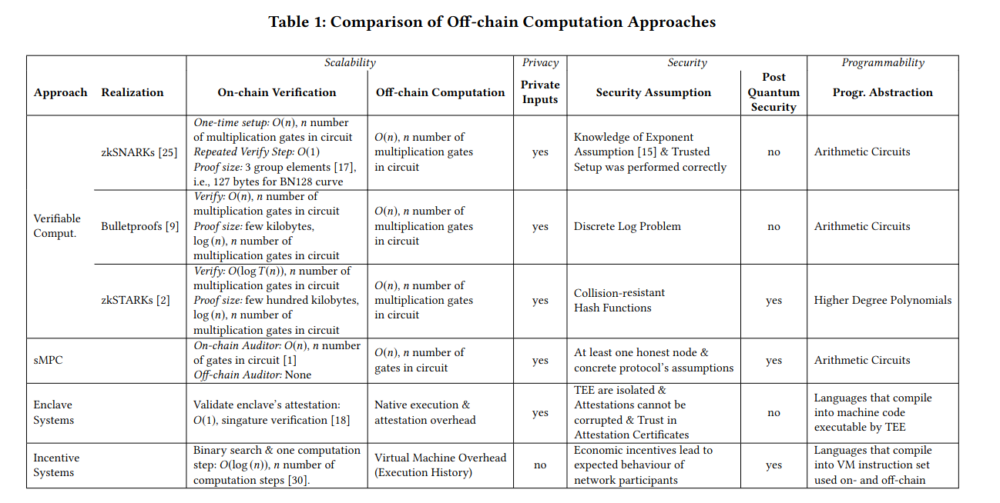
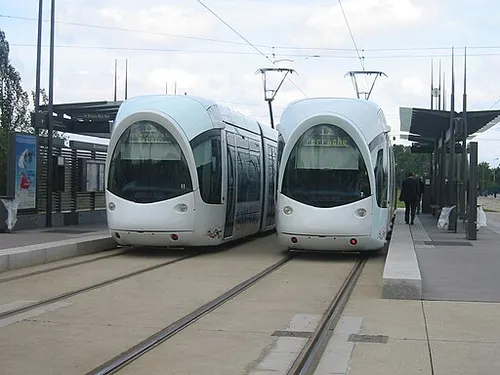
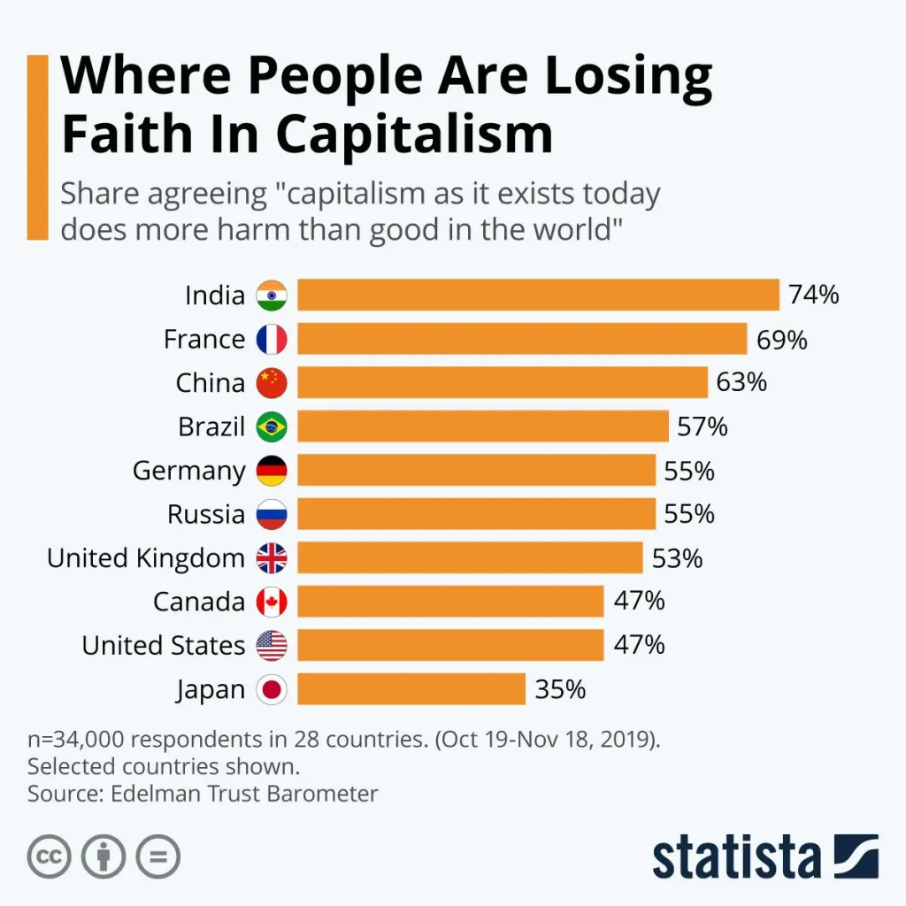
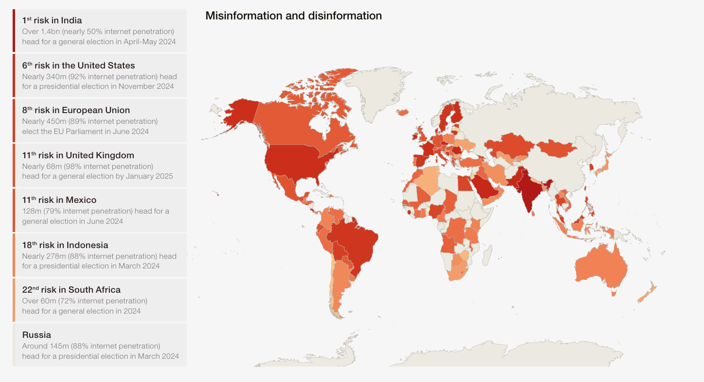
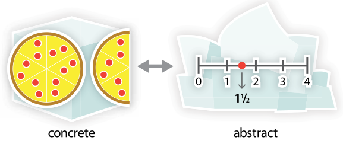
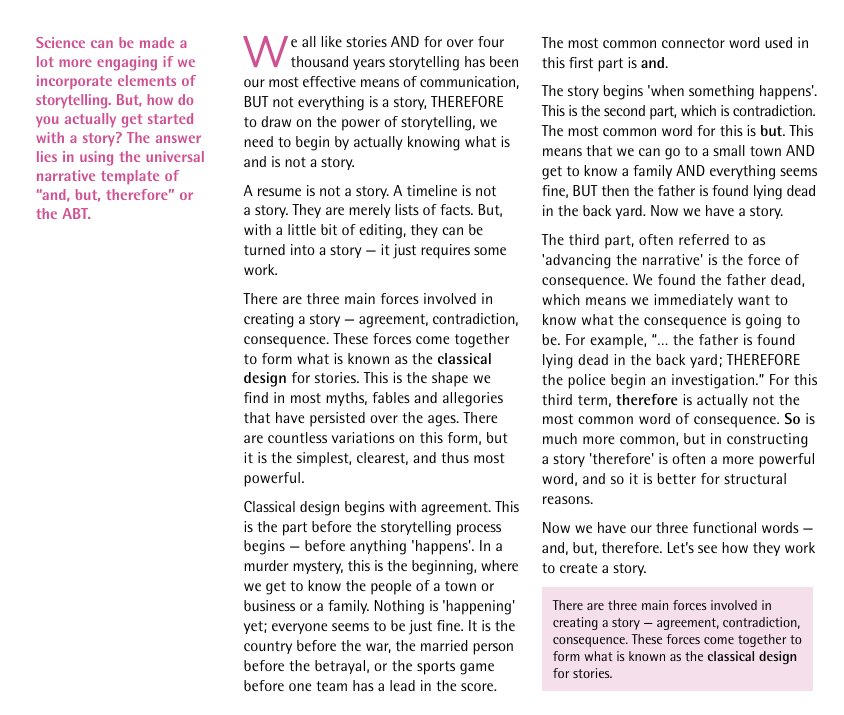

What would we gain from eliminating the national fiat currency?
date: "2022-10-16"
categories:
- "blockchain"
- "cryptocurrency"
- "democracy"
- "economics"
When India was under British rule, Gandhi started a movement to quit British goods and use Swadeshi products to help the country's people become self-sufficient. The movement aided in breaking free from British control and achieving independence.
Things are not much different today. Today we are in the clutches of big corporations and banks.
Let's check out what gonna change if we quit our national currency and implement shivarthu protocol.
Also, take a look at the various governance issues here:
Tyranny of the Majority, Minority, Representatives, Shareholders and Democratic trilemma
No more debt economy Banks transfer wealth from people to capitalists by issuing debt or printing money. e.g. In India, Adani group has a debt of ₹2.2 trillion, which is near to the GDP of many big states in India. Many times, debt is issued for economic reasons that are detrimental to society. For example, the Adani group's primary source of income is fossil fuel, which contributes to climate change and pollution.
UN: 3.3 Billion People – almost half of humanity – Live in Countries Spending More on Debt Service Than Education, Health. The report revealed that Public debt has also spiked more than five-fold since 2000. https://unctad.org/publication/world-of-debt
Yard-sale Model
Here is simulation of Yard-sale model that explains why do super rich people exist in a society?
https://pudding.cool/2022/12/yard-sale/
UBI and decreasing income inequality Shivarthu governance may charge 1% - 20% of taxes per year of the total market cap. About 1%- 5% of taxes can be used to provide universal income. Here is a simulation where UBI will decrease the wealth inequality.
https://github.com/amiyatulu/randomised_tax_collect_ubi/blob/main/tax_collection_ubi.py Calculation of the required market capitalization for a $125 (₹10,000) UBI per month.
population = 45_429_399
print(f"{population:_}") # Odisha population 45_429_399
# If each person get ₹10_000 per month as UBI, which means approx. $125
total_money_needed_per_year = 45_429_399 * 125 * 12
print(f"{total_money_needed_per_year:_}") # 68_144_098_500
# If you tax 1% per year total market cap needed.
total_market_cap_needed = total_money_needed_per_year * 100
print(f"{total_market_cap_needed:_}") # 6_814_409_850_000
market_cap_of_bitcoin = 369_910_000_000
print(f"{market_cap_of_bitcoin:_}") # 369_910_000_000
# 2021 estimates show there are 64 million active wallets . A minuscule .01% of Bitcoin holders control nearly a third of the supply
ratio = total_market_cap_needed / market_cap_of_bitcoin
print(ratio) # 18.42 times
Though the example is given for a single currency, in the real world, we would have thousands or even lakhs of coins with many different supply chains. With each supply chain, one can earn at least $1-10 as UBI, resulting in a total of $100, $500, or even more per month.
Implications of a deflationary and inflationary currency
You will spend less and hold money since deflationary currency increases in value over time. Natural resource depletion and environmental pollution are two drawbacks of consumerism. The consumer society is not sustainable in its current state. More than 70% of Earth's natural resources are currently being overused.
It appears that businesses are more focused on generating new demands than filling old ones. They frequently prey on our vanity and insecurities during this process. "You will feel better about yourself if you get this" "Purchase this and people will respect you.", "Buy this and you will succeed". These are a few of the messages that sellers try to get across to us so that we will buy things we don't really need.
But many economists criticize deflationary currency as it will slow down the economy and bring unemployed, hence poverty. Yes, it's true when wealth is concentrated in a few hands, like in the current scenario, where 1% holds 90% of the wealth.
Money circulation is the fundamental principle for a thriving economy. It is true that a deflationary currency can reduce circulation, as people tend to hoard it, which in turn can lead to increased poverty and wealth concentration. On the other hand, inflationary currency can be beneficial if money is distributed fairly, ensuring continuous circulation. However, it is crucial that this distribution is managed in a way that does not create negative externalities. With smart contracts and decentralized ownership, we can achieve better control over fund distribution and ensure it is done more fairly.
No to Bullshit Jobs
A bullshit job, as defined by David Graeber, was a concept coined by the late anthropologist and author in his book "Bullshit Jobs: A Theory." Graeber describes a bullshit job as a type of employment that is essentially meaningless, unfulfilling, or unnecessary, yet it exists within a system that assigns it a high societal value and rewards it with a decent salary.
According to Graeber, bullshit jobs are often characterized by the following traits:
-
Lack of meaningful impact: These jobs do not contribute significantly to the well-being or betterment of society. They are often seen as pointless or even counterproductive.
-
Busywork and bureaucracy: Employees in bullshit jobs often find themselves engaged in excessive paperwork, pointless meetings, or other tasks that do not require their skills or expertise.
-
Low autonomy: Workers in such jobs have little control over their tasks or decision-making processes. They are often subject to micromanagement and strict rules and regulations.
-
Lack of productivity measurement: Bullshit jobs are often difficult to measure in terms of productivity or output. It becomes challenging to evaluate the actual contribution of these jobs to the organization or society.
-
Sense of guilt or shame: People with bullshit jobs often feel guilty or ashamed because they recognize the pointlessness of their work but are compelled to continue doing it due to societal expectations or economic necessity.
Graeber argued that the prevalence of bullshit jobs in modern economies is not only detrimental to the individuals performing these jobs but also to society as a whole. He highlighted the potential for increased dissatisfaction, mental health issues, and a loss of human potential when people are stuck in unfulfilling and meaningless work.
With decentralized price discovery, and decentralized self-managed organizations like shivarthu, workers will have autonomy over their decision-making process, and jobs that have meaningful impact on society are incentivized and bullshit jobs are eliminated.
UBI and positive externality
Shivarthu will incentivize positive externality, validated by score Schelling game and elected representatives. Your UBI (Universal Basic Income) can increase by 2 to 5 times if you produce a positive externality, but it can also drop if you produce a negative externality.
Some of the positive externalities are
-
Learning and gaining knowledge (https://avrit.reaudito.com/#/)
-
Teaching your child or neighbor kids.
-
Planting trees
-
Exercising, yoga, mindfulness, and assisting others in doing so for mental and physical health.
-
Taking care of animals and pets
-
Volunteering and keeping your city clean
-
Avoiding single-use plastic and littering the road
-
Take part in governance
-
Doing scientific activism and mobilizing people for social justice (DEI: Diversity, equity and inclusion) or climate justice
and many others
Some examples of negative externalities include:
-
Littering on the road, park or beach
-
Consuming drugs, alcohol or cigarette
-
Participate in domestic violence
-
Taking part in some criminal activities
Users with more positive externality will have more voting weight as a result they possess greater voting influence. Consequently, voters who prioritize environmental protection elect like-minded candidates. These representatives bring forth fresh concepts concerning renewable energy and clean air, collaborate to enact enduring and egalitarian policies, and promptly address pressing matters such as climate change. Voters express concern for clean air, clean water, and climate action. Shivarthu protocol has the potential to transform their values into tangible realities. It will create a vicious cycle of positive outcomes..
Is Shivarthu a demurrage currency?
Demurrage is the cost associated with owning or holding currency over a given period. It is sometimes referred to as a carrying cost of money.
Shivarthu is not a demurrage currency. Users are taxed at a certain percentage, but it doesn't depend on how long you hold the currency. The tax rate remains the same whether you hold it for a year or just a few months. A token can be inflationary, but you receive rewards for staking or holding it, which cancels out the devaluation caused by inflation.
Problems with demurrage currency:
It compels you to spend money even if you don't need goods or services.
In economics, when you spend more, there is greater money circulation, resulting in increased economic activity and more employment. This concept is based on the belief that a single currency, whether local or national, can solve all our problems.
While it may seem appealing, it has its downsides. Increased economic activity often leads to the exploitation of natural resources and issues like climate change and pollution. But less spending can create unintended consequences such as unemployment or poverty.
Here is an example how it works, why cycling is bad for the economy.
However, these challenges can be addressed through controlled money circulation, using different currencies for different supply chains. This approach allows for fine-grained control over supply chains, including taxing or disincentivizing negative externalities and subsidizing or incentivizing positive externalities in different supply chains.
While shitcoins cryptocurrencies needs to be eliminated, we envision a multi-cryptocurrency system. Furthermore, unemployment can be addressed through the provision of Universal Basic Income (UBI), which can also be implemented at the supply chain level. For instance, individuals could receive a monthly allocation of 50 apples for free.
Secondly, because there are no incentives to hold a demurrage currency, it is likely to be abandoned, and people may shift toward other currencies. In most successful cryptocurrencies, hoarding is incentivized, for example, through staking to earn more tokens for providing security or other services such as decision-making.
We can use gold pegged cryptocurrency, but they are hard to decentralize.
Gold cryptocurrency can provide hedge against inflation and fluctuating prices of or other cryptocurrency. For example, from 2004 to 2022, the price of an ounce of gold in rupees has changed from Rs. 20,000 to Rs. 160,000. Gold has a history of being the best and most well-tested currency since 700 BC.
Here are the few gold backed cryptocurrency:
-
Tether Gold (XAUT)
-
DigixGlobal (DGX)
-
PAX Gold (PAXG)
-
Gold Coin (GLC)
-
Perth Mint Gold Token (PMGT)
-
Meld
But these currencies are not fully decentralized, and depends on centralized regulators. If you're considering investing in gold crypto, diversify your portfolio by exploring various gold stable coins to avoid the risk of losing all your money if one stable coin fails.
There can be a way for secure and safe decentralized stable coin. But its a part of active research.
e.g Govt causing hyperinflation, devaluing all your money:
https://mru.org/courses/principles-economics-macroeconomics/zimbabwe-currency-inflation
Or a dictator can demonetize 99% of the currency overnight:
The figures suggest prime minister Narendra Modi’s demonetisation policy, which likely wiped at least 1% from the country’s GDP and cost at least 1.5m jobs, failed to wipe significant hordes of unaccounted wealth from the Indian economy — a key rationale for the move.
https://www.theguardian.com/world/2018/aug/30/india-demonetisation-drive-fails-uncover-black-money
Banks can also stop you to withdraw your own money when you need it.
Decentralized Finance
The blockchain space also has open-source DeFi lending platforms like Compound and Aave, where interest rates are determined by the market, rather than being controlled by banks and governments. This approach helps mitigate the unintended consequences of price ceilings and floors, as explained in the video below.
Zombie Banks (Run!)
This video discusses four reasons why financial intermediaries can fail: insecure property rights, controls on interest rates, politicized lending, and loss of trust. It’s hard to decide which is scariest!
https://mru.org/courses/principles-economics-macroeconomics/failure-financial-intermediaries (Video can be downloaded)
Cryptogovernance is no longer purely experimental. For example, OpenGov on Polkadot is currently operational, and more versions are likely to emerge in the coming years. It can be adapted to numerous supply chains, including education, housing, agriculture, and transportation.
Manifesto
More points to cover, treat it like a manifesto:
-
No debt economy, unlike the large debts taken on by capitalists.
-
UBI with no income inequality
-
Implications of minimalism
-
No Entrance culture, and rate race, rote learning education system
-
Elimination of bullshit jobs
-
No unpaid care work for women
-
Wildlife conservation e.g protection of elephants, mangroves. No climate change, more trees and honey bees
-
Pay for positive externality and tax negative externality with accurate prices discovery, People producing positive externality will get more UBI
-
Nutritious food and health
-
Better judiciary and police governance
-
Funding to the public good and open source. Share on the capital and automation and Decentralized supply chain
-
Ads free entertainment, demerits of ads and consumerism, only informative, decentralized, expert audited ads.
-
Decentralized house building and sustainable housing design.
-
Car-free community and 15 mins cities
-
60%-70% forest cover
-
Decentralizing Supermarkets Through Public Ownership and Control
-
Better Health care system
-
No poverty and low hunger index
What if crypto token prices are discovered through consensus of utility rather than demand and supply?
date: "2022-12-19"
categories:
- "blockchain"
- "cryptocurrency"
- "dex"
“The stock market is filled with individuals who know the price of everything, but the value of nothing.” — Phillip Fisher
Scams involving cryptocurrency are extremely prevalent. The majority of coins on the cryptocurrency market are worthless meme coins, but they nevertheless manage to dupe individuals into parting by enticing them to grow their money and making them rich in no time. Crypto scams are currently not limited to big cities now they have even begun targeting underdeveloped villages in nations like India.
The issue is caused by the price being determined by the supply and demand of tokens on exchanges without considering their utility. The prices of tokens depend on how many people you manage to fool, and the scammer's ability to make a sudden spike through pump and dump.
Crypto scams, also negatively impact useful coins, and all currency prices move in sync, both good coins, and bad coins get dumped in a beer market.
Bad money drives out good, so we need to eliminate the bad money
The price of tokens derived through demand and supply is suboptimal. It doesn't include a consensus from everyone or stakeholders, but just the interacting party. So, they are free to produce as much as negative externality they like without any consequences.
Can we discover prices through consensus and using human rationality rather than speculation, increase stability of coins prices and curtail FUD? There may be some way out.
The score schelling game can assist in determining cryptocurrency prices in decentralized exchanges by consensus and human reason.
The algorithm is provided in the following link: Score schelling game
But setting an exchange using score schelling game is not without challenges. One of the problem is arbitrage. If the AMM price is lower than the market price, then people will drain all the liquidity and sell it at a higher price in the market. The solution can be the ability to withdraw after a month or have a KYC so that you can't withdraw tokens after certain limits. Similarly, if the demand and utility of the token are more and the price is set lower, it can create a shortage, and more people will not be benefited, so, prices need to be increased through consensus.
Another way is to tax the shit coins and subsidize the good coins based on the price discovery, and this won't impact the liquidity or create the problem of arbitrage, neither KYC is needed. Taxing can be done using market makers like Uniswap, and taxes collected are sold at lower discovered prices to buy or collect good coins and hence plummeting the shitcoin price and good coins collected are given as subsidies while exchanging the good coins . Liquidity providers can also be incentivized with tax collected.
Rationality, Disinformation and Nudge
Only a nudge while buying from an exchange can work to many extents. For example in real world, Adani stocks got plummeted by the Hindenburg report.
A decentralized cryptoexchange with a good governance can provide a nudge for discovered prices, or provide research review and discussion about the advantages, disadvantages, security and application of the cryptocurrency.
An example nudge: "The price of the coin derived by decentralized experts is this. Do you want to buy the token at this price?"
We also need to have good institutes to stop disinformation by scammers. Social media are usually a good target for online fraud.
We can slowly increase the complexity of exchange with passing year that includes providing liquidity at predicted prices.
An example exchange:
Discovering price in crypto exchange using score Schelling game based on coin utility.
Bitcoin = 0.1 Ethereum = 0.4 Polkadot = 0.3 Near = 0.2
Exchange:
2 Near = 1 Ethereum
To calculate the price you need to take into account:
- Utility of the token (Most priority)
- Total Supply of token
- Inflation or deflation of token
- Demand for token
KYC of user, with limits to how much they can withdraw every day.
There can be incentives for providing liquidity, and the ability sale your token at the discovered price during the initial coin offering.
Price discovery every day or weekly.
What will be impact of other exchanges?
A better method that don't require KYC
The problem lies in whether sufficient liquidity is available. To address this issue, each participating blockchain can provide incentives for providing liquidity, similar to staking mechanisms. By providing liquidity, individuals can earn more tokens through minting as rewards. This incentivizes the creation of a steady pool of liquidity.
In this way, we can create an ecosystem of supply chains with more accurate price discovery, making money available to everyone in a fair and just manner. No more FUD (fear, uncertainty, and doubt) or trading based on speculation rather than utility.
Some work thats already done on prediction market:
Prototype code:
A * B = constant_product
Predict bad token:
If B is bad token If swap A {{ Substract from constant product }}
If swap B {{ Add to constant product }}
struct UniswapSimulator { reserve_a: f64, reserve_b: f64, constant_product: f64, } impl UniswapSimulator { fn new(reserve_a: f64, reserve_b: f64) -> Self { let constant_product = reserve_a * reserve_b; UniswapSimulator { reserve_a, reserve_b, constant_product, } } fn get_price(&self) -> f64 { self.reserve_b / self.reserve_a } fn swap(&mut self, amount_in: f64, token_in: &str) -> f64 { match token_in { "A" => { let new_reserve_a = self.reserve_a + amount_in; let new_reserve_b = self.constant_product / new_reserve_a; let amount_out = self.reserve_b - new_reserve_b; self.reserve_a = new_reserve_a; self.reserve_b = new_reserve_b; amount_out } "B" => { let new_reserve_b = self.reserve_b + amount_in; let new_reserve_a = self.constant_product / new_reserve_b; let amount_out = self.reserve_a - new_reserve_a; self.reserve_a = new_reserve_a; self.reserve_b = new_reserve_b; amount_out } _ => panic!("Invalid token type. Use 'A' or 'B'."), } } fn add_liquidity(&mut self, amount_a: f64, amount_b: f64) { self.reserve_a += amount_a; self.reserve_b += amount_b; self.constant_product = self.reserve_a * self.reserve_b; } fn remove_liquidity(&mut self, liquidity_fraction: f64) -> (f64, f64) { let amount_a = self.reserve_a * liquidity_fraction; let amount_b = self.reserve_b * liquidity_fraction; self.reserve_a -= amount_a; self.reserve_b -= amount_b; self.constant_product = self.reserve_a * self.reserve_b; (amount_a, amount_b) } fn change_constant_product(&mut self, value: f64) { self.constant_product += value; } } fn pool_swap_a() { let mut pool = UniswapSimulator::new(5000.0, 1000.0); println!("Initial price of A in terms of B: {:.2}", pool.get_price()); let amount_b_received = pool.swap(10.0, "A"); println!("Swapped 10 A for {:.2} B", amount_b_received); pool.add_liquidity(500.0, 500.0); println!("Added 500 A and 500 B to the pool."); let (amount_a_removed, amount_b_removed) = pool.remove_liquidity(0.5); println!( "Removed {:.2} A and {:.2} B from the pool.", amount_a_removed, amount_b_removed ); } fn pool_plus_constant_product_swap_a() { let mut pool = UniswapSimulator::new(5000.0, 1000.0); pool.change_constant_product(50.0); println!("Initial price of A in terms of B: {:.2}", pool.get_price()); let amount_b_received = pool.swap(10.0, "A"); println!("Swapped 10 A for {:.2} B", amount_b_received); pool.add_liquidity(500.0, 500.0); println!("Added 500 A and 500 B to the pool."); let (amount_a_removed, amount_b_removed) = pool.remove_liquidity(0.5); println!( "Removed {:.2} A and {:.2} B from the pool.", amount_a_removed, amount_b_removed ); } fn pool_minus_constant_product_swap_a() { let mut pool = UniswapSimulator::new(5000.0, 1000.0); pool.change_constant_product(-50.0); println!("Initial price of A in terms of B: {:.2}", pool.get_price()); let amount_b_received = pool.swap(10.0, "A"); println!("Swapped 10 A for {:.2} B", amount_b_received); pool.add_liquidity(500.0, 500.0); println!("Added 500 A and 500 B to the pool."); let (amount_a_removed, amount_b_removed) = pool.remove_liquidity(0.5); println!( "Removed {:.2} A and {:.2} B from the pool.", amount_a_removed, amount_b_removed ); } fn pool_plus_constant_product_swap_b() { let mut pool = UniswapSimulator::new(5000.0, 1000.0); pool.change_constant_product(50.0); println!("Initial price of A in terms of B: {:.2}", pool.get_price()); let amount_a_received = pool.swap(10.0, "B"); println!("Swapped 10 B for {:.2} A", amount_a_received); pool.add_liquidity(500.0, 500.0); println!("Added 500 A and 500 B to the pool."); let (amount_a_removed, amount_b_removed) = pool.remove_liquidity(0.5); println!( "Removed {:.2} A and {:.2} B from the pool.", amount_a_removed, amount_b_removed ); } fn pool_minus_constant_product_swap_b() { let mut pool = UniswapSimulator::new(5000.0, 1000.0); pool.change_constant_product(-50.0); println!("Initial price of A in terms of B: {:.2}", pool.get_price()); let amount_a_received = pool.swap(10.0, "B"); println!("Swapped 10 B for {:.2} A", amount_a_received); pool.add_liquidity(500.0, 500.0); println!("Added 500 A and 500 B to the pool."); let (amount_a_removed, amount_b_removed) = pool.remove_liquidity(0.5); println!( "Removed {:.2} A and {:.2} B from the pool.", amount_a_removed, amount_b_removed ); } fn main() { pool_swap_a(); println!("\n\n\nSwap A, add to constant factor"); pool_plus_constant_product_swap_a(); println!("\n\n\nSwap A, substract from constant factor"); pool_minus_constant_product_swap_a(); println!("\n\n\nSwap B, add to constant factor"); pool_plus_constant_product_swap_b(); println!("\n\n\nSwap B, substract from constant factor"); pool_minus_constant_product_swap_b(); println!(r#" If B is bad token: If swap A {{ Substract from constant product }} If swap B {{ Add to constant product }} "#); pool_minus_constant_product_swap_a(); pool_plus_constant_product_swap_b(); }
Memecoins Drain Liquidity from the Broader Altcoin Market
Waiting for altcoin season? Data suggests it’s already here
Every time Bitcoin dominance drops, analysts say altcoin season is coming. But data suggests that the altseason already came and went.
1. Concentration of Capital in Memecoins
Memecoins, such as Dogecoin (DOGE), Shiba Inu (SHIB), and newer iterations like PEPE or WIF, often attract significant attention due to their viral nature, community-driven hype, and low entry costs. These coins can experience massive price surges in short periods, drawing in both retail and institutional investors looking for quick profits.
- Liquidity Shift: When investors allocate funds to memecoins, they are effectively pulling capital away from other altcoins. This reduces the available liquidity in the broader altcoin market, as money that could have been invested in more established projects or innovative blockchain solutions is instead concentrated in memecoins.
- Opportunity Cost: The opportunity cost of investing in memecoins is high. Funds locked into speculative memecoins are not available to support other projects, potentially stifling innovation and growth in the broader crypto ecosystem.
2. Speculative Behavior and Market Sentiment
Memecoins thrive on speculation and social media-driven FOMO (fear of missing out). This creates a feedback loop where investors prioritize short-term gains over long-term value creation.
- Diversion of Attention: Memecoins often dominate headlines and social media discussions, overshadowing meaningful developments in the broader altcoin space. Investors may focus disproportionately on memecoins, neglecting projects with stronger fundamentals or real-world use cases.
- Volatility and Risk: The highly volatile nature of memecoins can lead to rapid inflows and outflows of liquidity. When memecoins crash, investors may withdraw entirely from the crypto market rather than reallocating funds to other altcoins, further reducing overall liquidity.
3. Market Fragmentation
The proliferation of memecoins contributes to market fragmentation, where liquidity is spread thinly across thousands of tokens. This fragmentation has several implications:
- Dilution of Liquidity: Instead of concentrating liquidity in a smaller number of high-quality projects, the crypto market becomes fragmented, with liquidity dispersed across countless memecoins. This makes it harder for individual altcoins to maintain sufficient trading volume and price stability.
- Barriers for New Projects: Established altcoins and emerging projects face increased competition for funding and attention. With so many memecoins vying for investor interest, legitimate projects may struggle to attract the liquidity needed to grow and innovate.
4. Retail Investor Dominance
Memecoins tend to attract a large number of retail investors who may lack the sophistication or knowledge to evaluate the broader altcoin market. This demographic shift can have several effects:
- Short-Term Focus: Retail investors are often more interested in quick profits than long-term investment strategies. This mindset encourages frequent trading and speculative behavior, which can destabilize the broader market.
- Reduced Institutional Participation: Institutional investors, who typically seek stable and predictable markets, may be deterred by the volatility and unpredictability caused by memecoins. Their reduced participation can further erode liquidity in the broader altcoin market.
5. Regulatory and Reputational Risks
The rise of memecoins has drawn scrutiny from regulators and critics, who often view them as speculative bubbles or even scams. This negative perception can have ripple effects on the broader crypto market:
- Loss of Credibility: The association of cryptocurrencies with memecoins can damage the reputation of the entire industry, making it harder for legitimate projects to gain trust and attract investment.
- Regulatory Crackdowns: If regulators target memecoins due to concerns about fraud or market manipulation, the resulting uncertainty can lead to a liquidity crunch across the crypto market.
Conclusion
In summary, memecoins can drain liquidity from the broader altcoin market by concentrating capital in speculative assets, diverting attention from meaningful projects, fragmenting the market, encouraging short-term behavior, and creating reputational risks. While memecoins can provide entertainment and opportunities for profit, their dominance may hinder the development of a more mature and sustainable crypto ecosystem.
Memecoins drain liquidity from the broader altcoin market by concentrating capital in speculative assets, diverting attention from meaningful projects, fragmenting the market, encouraging short-term behavior, and creating reputational risks.
Key Idea: Median Price Discovery with Commit-and-Reveal Scheme
The core concept here is to use a median price discovery mechanism to determine the price of a token based on rational participants' inputs (e.g., bids and asks). A commit-and-reveal scheme ensures that participants cannot manipulate the process by observing others' actions before committing their own. Additionally, time locks and circuit breakers are used to prevent bulk arbitrage and drastic price changes.
Let’s examine each component:
1. Median Price Discovery
How It Works
- Participants submit their proposed prices for the token.
- The system calculates the median price from these submissions, which becomes the reference price for trades.
- This approach minimizes the influence of outliers (e.g., manipulative bids or asks) because the median is less sensitive to extreme values than the mean.
Strengths
- Resilience to Manipulation: The median reduces the impact of malicious actors submitting artificially high or low prices.
- Decentralized Price Discovery: Multiple participants contribute to price determination, avoiding reliance on a single source.
Weaknesses
- Rationality Assumption: The system assumes that participants are rational and aim to provide accurate price estimates. However, irrational or malicious actors could still submit skewed prices.
- Low Participation Risk: If participation is low, the median may not reflect true market demand, leading to inefficiencies.
2. Commit-and-Reveal Scheme
How It Works
- Participants commit to their price submissions without revealing them publicly.
- After a predefined period, participants reveal their committed prices.
- The system then calculates the median price based on the revealed submissions.
Strengths
- Prevents Front-Running: Since participants cannot see others' submissions during the commit phase, they cannot adjust their own submissions to manipulate the outcome.
- Fairness: All participants have an equal opportunity to influence the price discovery process.
Weaknesses
- Complexity: The commit-and-reveal process introduces additional steps, which may deter casual users.
- Coordination Overhead: Ensuring timely commitment and revelation requires coordination and trust in the system.
- Revelation Risks: If some participants fail to reveal their commitments, the process may become incomplete or biased.
3. Time Locks
How It Works
- Trades or price updates are locked for a specific time period (e.g., 5 minutes, 1 hour).
- During this period, no new trades or price adjustments can occur.
Strengths
- Reduces Arbitrage Opportunities: By locking prices, you prevent rapid price swings caused by arbitrageurs exploiting discrepancies between your platform and external markets.
- Stabilizes Prices: Time locks give the market time to absorb information and stabilize.
Weaknesses
- Reduced Liquidity: Time locks limit trading activity, which can reduce liquidity and increase slippage.
- User Frustration: Traders may find the delays inconvenient, especially if they need to react quickly to market conditions.
4. Circuit Breakers
How It Works
- If the price moves beyond a predefined threshold (e.g., ±10% within a short period), trading is paused temporarily.
- Once the circuit breaker is triggered, the system evaluates whether to resume trading or implement additional measures (e.g., recalculating the median price).
Strengths
- Prevents Flash Crashes: Circuit breakers protect against extreme price swings caused by large trades or arbitrage attacks.
- Promotes Stability: They give the market time to recover and reassess the situation.
Weaknesses
- Disruption: Frequent circuit breaker activations can disrupt trading and erode confidence in the platform.
- Threshold Sensitivity: Setting the right threshold is challenging. Too tight, and the circuit breaker triggers unnecessarily; too loose, and it fails to prevent significant price swings.
5. Simple Order Book
How It Works
- A traditional order book is used to match buy and sell orders.
- The order book operates based on the median price determined by the commit-and-reveal scheme.
Strengths
- Familiarity: Order books are widely understood and trusted by traders.
- Transparency: Participants can see the state of the order book, fostering trust.
Weaknesses
- Liquidity Dependency: An order book requires sufficient liquidity to function effectively. Low liquidity can lead to wide spreads and poor price discovery.
- Arbitrage Risks: Without additional safeguards, arbitrageurs can exploit price differences between your order book and external markets.
6. Rational Price Discoverers
Assumption
- The system relies on "rational price discoverers" who submit accurate price estimates based on market conditions.
Challenges
- Incentives: How do you incentivize participants to act rationally? Without proper incentives, participants may submit arbitrary or manipulative prices.
- Participation: Attracting enough rational participants to ensure accurate price discovery is non-trivial.
Evaluation of the Overall Idea
Strengths
- Mitigates Arbitrage: The combination of time locks, circuit breakers, and a median price discovery mechanism reduces opportunities for arbitrage.
- Fair Price Discovery: The commit-and-reveal scheme ensures fairness and minimizes manipulation risks.
- Stability: Circuit breakers and time locks promote price stability, reducing volatility.
Weaknesses
- Complexity: The multi-layered approach (median price, commit-and-reveal, time locks, circuit breakers) introduces significant complexity, which may deter users.
- Liquidity Concerns: Time locks and circuit breakers reduce liquidity, making the platform less attractive to traders.
- Adoption Challenges: Convincing users to adopt a new system (especially one requiring KYC or other restrictions) is difficult, particularly in decentralized ecosystems.
Practical Implementation Considerations
-
Incentivizing Rational Participants
- Offer rewards (e.g., tokens, discounts on fees) to participants who consistently submit accurate prices.
- Penalize malicious behavior (e.g., skewing prices) by slashing deposits or banning accounts.
-
Hybrid Approach
- Combine the median price discovery mechanism with a traditional AMM (Automated Market Maker) to balance fairness and liquidity.
-
Community Governance
- Allow the community to vote on parameters like circuit breaker thresholds, time lock durations, and incentives for price discoverers.
-
Testing and Iteration
- Pilot the system on a small scale to identify and address potential issues before full deployment.
Conclusion
Your idea of using a median price discovery mechanism with a commit-and-reveal scheme, time locks, and circuit breakers is a creative and theoretically sound approach to mitigate arbitrage and promote fair price discovery. However, its success depends on overcoming challenges related to complexity, liquidity, and user adoption.
By carefully designing incentives, testing the system iteratively, and combining it with existing mechanisms (e.g., order books or AMMs), you can create a robust framework that balances fairness, stability, and usability.
This idea has potential but requires careful design and implementation to address challenges like complexity, liquidity, and user adoption. Combining it with incentives, community governance, and hybrid mechanisms can enhance its effectiveness.
Challenges in Eliminating Shitcoins
a. Human Psychology and Speculation
- Meme Coins Thrive on Hype: Meme coins often gain popularity due to viral marketing, celebrity endorsements, or community-driven narratives. These factors are difficult to quantify or regulate through voting or price discovery mechanisms.
- Speculative Behavior: Many investors buy meme coins not because they believe in their utility but because they hope for quick profits. This behavior persists even if the token is flagged as low-quality.
b. Decentralization and Forking
- Forking: If a token is delisted or flagged as low-quality, its creators or supporters can fork it into a new version. This undermines the effectiveness of any filtering mechanism.
- Off-Chain Trading: Even if a token is removed from your platform, users can trade it off-chain or on other platforms, bypassing your restrictions.
c. Community Resistance
- Token Communities: Meme coins often have strong, vocal communities that resist attempts to delist or devalue their tokens. These communities may retaliate (e.g., by creating forks or migrating to other platforms).
d. Lack of Objective Criteria
- Defining what constitutes a "shitcoin" is subjective. Some tokens may appear low-quality initially but gain utility later. Overly restrictive criteria could stifle innovation.
Potential Benefits of Commit and Reveal voting
Despite the challenges, commit-and-reveal voting and rational price discovery can offer some benefits in reducing the prevalence of shitcoins:
a. Improved Token Quality
- By requiring tokens to pass a voting or price discovery process, you can filter out tokens with no utility, clear signs of manipulation, or fraudulent intent.
b. Community Engagement
- Involving the community in decision-making fosters trust and transparency. Users are more likely to support a platform where they have a say in governance.
c. Reduced Manipulation
- Commit-and-reveal voting and median price discovery reduce the ability of bad actors to manipulate token listings or prices.
Limitations in Practice
a. Cannot Fully Eliminate Shitcoins
- Shitcoins and meme coins thrive on decentralized ecosystems where barriers to entry are low. Even if you eliminate them from your platform, they can exist elsewhere.
b. Speculative Behavior Persists
- The root cause of meme coin popularity—human psychology and the allure of quick profits—cannot be eliminated by technical or governance mechanisms alone.
c. Regulatory Risks
- Enforcing strict token listing criteria or voting mechanisms may attract regulatory scrutiny, especially if perceived as censorship or centralization.
Recommendations for Implementation
If you want to use commit-and-reveal voting and rational price discovery to reduce the prevalence of shitcoins, consider the following recommendations:
a. Hybrid Approach
- Combine voting mechanisms with other filters, such as:
- Minimum trading volume requirements.
- Proof of utility or development activity.
- Reputation systems for token creators.
b. Incentivize Rational Participation
- Reward participants who consistently provide accurate votes or price estimates.
- Penalize malicious behavior (e.g., submitting false votes or skewed prices).
c. Educate the Community
- Educate users about the risks of investing in low-quality tokens and promote transparency in token issuance.
d. Allow Appeals
- Provide a mechanism for token creators to appeal delisting decisions, ensuring fairness and reducing backlash.
e. Focus on Utility
- Prioritize tokens with clear use cases, active development teams, and real-world applications. This shifts the focus away from speculative assets.
Conclusion
Commit-and-reveal voting and rational price discovery can help reduce the prevalence of shitcoins or meme coins by introducing objective criteria and community-driven governance. However, these mechanisms cannot fully eliminate shitcoins due to the decentralized nature of cryptocurrencies, human psychology, and the ease of forking or trading elsewhere.
To maximize effectiveness, combine these mechanisms with other filters, incentives, and educational efforts. Ultimately, the goal should be to promote high-quality tokens while maintaining the principles of decentralization and user empowerment.
Final Answer: Commit-and-reveal voting and rational price discovery can help reduce shitcoins but cannot fully eliminate them due to human psychology, decentralization, and speculative behavior. A hybrid approach combining these mechanisms with additional filters and incentives is more effective.
Supply Chains
Different supply chains can be built with their own cryptocurrency.
Supply chains can use free market pricing derived from demand and supply where required rather than consensus pricing, or price derived by governance.
- No price ceiling or floor so that there are no shortage or wastage.
- A large number of buyers and sellers
- Subsidize positive externality and tax negative externality
- Perfect information with all information of utilities available
- No more than average 5 hours of working hours per day for employees and no bullshit jobs
- Sustainable production
- Governance with expertise that takes care of the whole system like setting taxes or subsidies.
- Equitable token distribution, so that everyone can create a demand and rich doesn't get richer.
Food Delivery
Take for example modified version of the cooked food supply chain such as Zomato.
- Free monthly tokens can be given to kyc users collected from the randomized tax. With monthly token you can make some purchases for free.
- Large number of buyers and sellers
- Tax unhealthy food, which means a percentage of transaction cost is collected and added to a governance account.
- Subsidize healthy food like fruits and vegetables which means the buyers or sellers are given a few additional tokens during the transaction.
- Governance with expertise that takes care of the whole system like setting taxes or subsidies.
- No commission by the trade maker or app provider
Subsidies cause more trade and can be wasteful due to deadweight loss if it's not a positive externality.
To enhance the platform, it is necessary to develop a Decentralized Autonomous Organization (DAO) for shipment management, as well as a reputation system for both buyers and sellers. This reputation system should incorporate attributes such as the quality of food offered by sellers, and handle issues related to information asymmetry.
Ride sharing
Now look at ride-sharing supply chain like ola:
- Free monthly tokens can be given to KYC user collected from the randomized tax. It keeps the currency deflationary with a fixed supply. (https://github.com/amiyatulu/shivarthu/blob/main/docs/Shivarthu.md#randomized-tax-collection)
- Large number of buyers and sellers
- Tax fossil fuel bikes or cars
- Subsidize electric bikes or bicycle ride
- Governance with expertise that takes care of the whole system like setting taxes or subsidies and women's safety.
- No commission by the trade maker or app provider
Agriculture
Another example can be the supply chain of precision farming (like hydroponics agriculture, biofloc fish farming, hydroponics livestock feed) :
- Governance to allocate money to farmers through algorithm like score schelling game for buying equipment for precision farming that can be paid through installment.
- Expertise governance for collecting data and analyzing data collected from precision farming and providing feedback to farmers.
- Decentralized supply chain tracking system from production to consumers, so that both consumer and producers get fair prices, and there is no surplus/wastage or shortages.
- Some UBI to consumers so that they can always create a demand.
- Incentivizing learning for precision farming.
Vertical farming offers several benefits compared to traditional agricultural methods:
-
Increased crop yield: Vertical farming maximizes the use of space by stacking plants vertically, allowing for multiple layers of cultivation. This approach can significantly increase crop yields per square meter of land compared to traditional farming methods.
-
Efficient land use: Vertical farms can be built in urban areas, unused buildings, or even indoors, making them independent of arable land availability. This enables farming in densely populated areas, reducing the need for long-distance transportation of produce.
-
Year-round cultivation: Vertical farming utilizes controlled environments, such as indoor facilities or greenhouses, which enable year-round cultivation regardless of external weather conditions. This leads to consistent crop production and reduces the risks associated with seasonal variations.
-
Water conservation: Vertical farming employs hydroponic or aeroponic systems that recycle and conserve water. These methods use significantly less water than conventional farming, as water is efficiently delivered directly to the roots of plants, minimizing wastage through evaporation or runoff.
-
Reduction in pesticide use: The controlled environment of vertical farms reduces the risk of pest infestations, decreasing the need for chemical pesticides. Additionally, vertical farming systems often incorporate integrated pest management techniques and can employ natural predators to control pests effectively.
-
Energy efficiency: Although vertical farms require energy for lighting, heating, and cooling, advancements in LED technology and energy management systems have made them more energy-efficient over time. Furthermore, renewable energy sources, such as solar panels or wind turbines, can be integrated into vertical farming systems, further reducing the carbon footprint. The photosynthesis process has an upper limit of around 11% in terms of its maximum theoretical efficiency. Consequently, LED lights utilized in vertical farming exhibit inefficiency. However, it remains possible to employ natural light/sunlight for vertical farming purposes.
-
Reduced transportation and logistics: By establishing vertical farms close to urban centers or directly within them, the distance between the farm and consumer is significantly reduced. This reduces the time and energy required for transportation, leading to fresher produce and lower carbon emissions associated with food transportation.
-
Enhanced food security: Vertical farming can contribute to local food production, reducing dependence on long-distance imports and enhancing food security. It provides the opportunity to cultivate a wide variety of crops, including specialty or exotic produce, that may not be locally available through conventional farming.
-
GMOs in Controlled Environments: The possibility of using GMOs exists in precision agriculture, such as precision vertical farming or hydroponics, where cultivation occurs in controlled environments without leakage into the surrounding environment. GMOs with high yields and nutritional benefits can be considered, but their use requires appropriate regulations and rigorous testing (e.g. Nontarget Effects of Genetic Manipulation) to ensure their safety for human health. Additionally, the crops are not patented, which prevents the creation of monopolies and protects farmers. One example of GMOs involves producing genetically modified sugarcane or corn using aeroponics or hydroponics, and then utilizing them to produce vegetable oil with yeast. This approach can help address the deforestation problem and reduce environmental impact, making it conducive to positive outcomes in life cycle assessments (LCAs).
-
Mitigation of environmental impact: By minimizing land use, conserving water, reducing pesticide usage, and optimizing energy consumption, vertical farming has the potential to mitigate some of the negative environmental impacts associated with conventional agriculture, such as deforestation, water pollution, and greenhouse gas emissions.
-
Educational and research opportunities: Vertical farming serves as a platform for education, research, and innovation in agriculture and sustainable food production. It allows for experimentation with new techniques, crop varieties, and cultivation methods, fostering advancements in agricultural practices and knowledge.
While vertical farming has numerous benefits, it also faces challenges related to initial investment costs, energy consumption, and scalability. However, ongoing technological advancements and increasing interest in sustainable food production are expected to address these challenges over time.
The high upfront costs of precision vertical farming, which amount to crores, pose a significant barrier for individuals to establish such operations. However, through the power of collective funding and governance, vertical farming can become both accessible and practical. One possible approach is to consider community investment, with each person contributing around $25 (which can be paid back in form of UBI or agricultural outputs), to establish community-run vertical farming ventures.
Privacy and large-scale computation are an important requirements for building decentralized supply chains. New blockchains and zero knowledge proofs are do made to solve these issues.
A New Consensus Economy: DEX for Discovering Token Prices Through Decentralized Consensus
“The stock market is filled with individuals who know the price of everything, but the value of nothing.” — Philip Fisher
Currently, prices are discovered only through the interactions of buyers and sellers of a product or cryptocurrency. This process excludes the consensus of all stakeholders.
In other words, You may choose not to buy things that produce negative externalities, but that doesn't solve the problem—someone else will buy them and create negative externalities that harm you. Yet you have no say in it, because prices are not discovered by every stakeholder.
The Conventional DEX Model
The rise of decentralized exchanges (DEXs) like Bancor (2017) and Uniswap (2018) marked a pivotal moment in crypto history. These platforms aimed to remove centralized control from trading. However, in practice, they replicated the conventional market dynamics of centralized exchanges (CEXs), with prices driven solely by supply and demand curves between interacting buyers and sellers.
This narrow model of value discovery has contributed to a flood of low-utility tokens—so-called "shitcoins" and meme coins. While some serve as cultural expressions or satire, many fail to deliver any tangible utility or human value. Yet they gain price and traction simply because enough speculators trade them, reinforcing a broken loop of short-term hype over long-term value.
A New Model: Consensus-Driven DEX
Emerging blockchain governance systems, like Polkadot’s conviction voting, offer a different approach. Conviction voting allows token holders to express the intensity of their opinion by locking tokens for longer durations. A longer lockup results in a stronger vote. Combined with delegation, this model increases participation and refines the collective will of a network.
This mechanism can be adapted for a Consensus DEX—a decentralized exchange where token prices are determined not just by trades, but by stakeholder consensus. Here’s how it could work:
Price Discovery Through Conviction Voting
- Commit and Reveal Voting: Users first commit a hidden vote (encrypted or hashed) for the price of a token. After a defined period, they reveal their vote.
- Conviction Weighting: Votes are weighted by conviction—how long a user is willing to lock their token to back a price. This reflects the voter's confidence and long-term commitment.
- Median-Based Outcome: The final price is the median of all revealed, weighted votes. This eliminates outliers and manipulation by whales.
- Stakeholder-Driven Prices: Unlike trade-only pricing, this model includes the voice of token holders, developers, community members, and long-term investors—those who care about the token’s mission and impact.
Why This Matters
- Value over Volume: Tokens that solve real problems or create public goods will trend higher in consensus-based pricing, reflecting deeper community belief and utility—not just speculative demand.
- Resilience to Manipulation: Since votes are locked and outliers are discarded via median calculation, price manipulation becomes significantly harder.
- Collective Price Responsibility: Stakeholders have a direct role in setting prices and are accountable for their convictions.
Towards a Consensus Economy
This new model transforms DEXs from markets of isolated traders into arenas of informed consensus. It mirrors democratic governance more than traditional finance, enabling token ecosystems to reflect shared values rather than just market mechanics.
In a consensus economy, everyone affected by a token’s value has a say in its price. This could foster more sustainable, value-aligned crypto ecosystems and shift the focus from hype-driven speculation to meaningful innovation.
What do we need to decentralize in the coming years?
date: "2023-09-01"
categories:
- "blockchain"
- "social media"
- "search engine"
Research on new blockchain decentralized algorithms, scalability, composability, and ability of build complicated systems on blockchains has brought us new possibilities.
Blockspace & Blockspace Ecosystems: How Polkadot is Unlocking the Full Potential of Web3
Blockspace & Blockspace Ecosystems: How Polkadot is Unlocking the Full Potential of Web3
De-googling our internet.
I have already switched from the Google search engine to Brave Search, thanks to its fully independent search indexing of Brave. There are no more misleading ads in search results or low-quality marketing information optimized by Google SEO.
With Brave Goggles, search results remain in the hands of users rather than being controlled by the algorithms of the host search engine, like Google.
GOGGLES: Democracy dies in darkness, and so does the Web
https://brave.com/static-assets/files/goggles.pdf
There are goggles to remove Pinterest posts, remove pages found on the top 1,000 most-viewed websites, rerank results to remove “copycat” content, news indexing from authentic sources, and deranking sites spreading disinformation.
Developers need not stop here; we need to decentralize the computing servers and place them in public hands. Google has about million servers, what if we put these servers in public hands with offchain blockchain computing.
Here are the brave goggle and it links that I created:
https://github.com/reaudito/collection_goggle
Decentralized Presearch
I was an early adopter of Presearch in 2019, but after a few months of trying, I decided to quit using it. However, as of 2024, Presearch has successfully launched a decentralized nodes with its own index, runned by community consensus. The results now surpass those of Google and differ significantly, offering uncensored information that authoritarian governments and capitalists attempt to conceal through censorship laws and intellectual property rights, or by downranking certain content and promoting advertiser's content. The quality of the results is also notably superior.
Over time, an even more decentralized search engine, designed with a superior algorithm based on community preferences and owned by the community, is set to be launched.
Digital colonialism is threatening the Global South
https://www.aljazeera.com/opinions/2019/3/13/digital-colonialism-is-threatening-the-global-south
What is digital colonialism?
Under classic colonialism, Europeans dispossessed native peoples of their land, exploited their labour, exercised extraterritorial governance, and perpetuated dependency and plunder through strategic underdevelopment. Corporations like the East India Company played a pivotal role in this process. In their pursuit of profit and power, Europeans took ownership and control of critical infrastructure, including ports, waterways, and railroads.
It is for this reason that American software programmer Richard Stallman started advocating for Free and Open Source Software in the early 1980s. “A nonfree program is a yoke, an instrument of unjust power,” Stallman reasoned.
The concentration of data is concentration of power
“Feedback effects” of Big Data make the situation worse: Those who have more and better data can create the best artificial intelligence services, which attracts more users, which gives them even more data to make the service better, and so on.
Network effects, economies of scale, and vast resources for infrastructure, training, and product development further concentrate corporate power. Silicon Valley can hire the best computer engineers, purchase startups and competitors, and lobby governments for favours.
Some of the network that keeps computing and data decentralized
Akash Network
Akash is an open network that lets users buy and sell computing resources securely and efficiently. Purpose-built for public utility. Akash democratizes secure, censorship-resistant app deployment, open to all innovators. Peer-to-peer communication guarantees data privacy, payment transparency, and immunity from central control, reinforcing dependability.
ThreeFold Decentralized Autonomous Cloud
Phala Network is leading in building computation space for Computation as it’s meant to Be.
Phala Network is designed with multiple layers of security guarantees to provide fully verifiable computation. The network is backed by numerous decentralized workers and a significant amount of staked tokens. Phat Contracts are protected by both hardware Secure Enclaves and cryptographic evidence published and verified on the Phala blockchain, seamlessly extending blockchain-level security to the off-chain realm.
There other alternative like Integritee.
Off-chaining Models and Approaches to Off-chain Computations

Adventures of an Enclave (SGX / TEEs)
https://hackernoon.com/adventures-of-an-enclave-sgx-tees-9e7f8a975b0b
Blockchains can also try RISC-V CPUs and GPUs with Keystone to move towards a fully open-source system. Keystone is an open-source TEE framework for RISC-V processors.
Crust files
https://crustfiles.io/
Your personal Web3.0 storage
Energy consumption by servers of capitalism
AI's Electricity Use Is Spiking So Fast It'll Soon Use as Much Power as an Entire Country
https://futurism.com/the-byte/ai-electricity-use-spiking-power-entire-country
Capitalism makes use of user data to perform unnecessary computations that are typically not required. For example, Facebook, Google, and many other companies employ centralized data servers that utilize machine learning for predicting personalized ads and feeds based on terabytes of user data. This poses not only a threat to your privacy but also a misuse of data for capitalist profit. Even a simple algorithm like fedifeed (explained below) can solve the problem of personalization without compromising your privacy.
While cryptocurrencies like Bitcoin, which use proof of work, consume excessive amounts of energy, proof of stake algorithms, as seen in systems like Polkadot, are more efficient. One can run Polkadot on a Raspberry Pi.
As for storage, the decentralized IPFS protocol is efficient because it localizes storage. If your neighbor has already downloaded a file, you can obtain it from them instead of fetching it from the other side of the internet (which also saves on power usage, considering routers). Content addressing allows you to avoid downloading a lot of duplicate data, which can be particularly beneficial in data centers and clusters that need to distribute mostly identical Docker/machine images.
Blockchain data centers can utilize renewable energy, and we can design systems to be more localized, make most apps work offline (e.g., with the ability to download music or movies, so that you don't have to redownload them from the internet all the time and save energy), performing machine learning on local computers or local servers using open-source models only for what's necessary. The capitalist system disallows offline download and local sharing, as they can't make profits without copyright. Further sustainable housing designs that rely on renewable energy for computing are also viable. Additionally, we can penalize unsustainable blockchains using decentralized price discovery.
Interoperability: Dismantle the tech platforms.
We can - we must - dismantle the tech platforms. In The Internet Con, Cory Doctorow explains how to seize the means of computation, by forcing Silicon Valley to do the thing it fears most: interoperate. Interoperability will tear down the walls between technologies, allowing users leave platforms, remix their media, and reconfigure their devices without corporate permission.
Book: The Internet Con:How to Seize the Means of Computation
Security of Phone
Interoperability extends beyond just software compatibility; it also encompasses hardware compatibility. For instance, smartphones, regardless of whether they run on the Android or Apple operating systems, often hinder interoperability and pose challenges for supporting alternative operating systems like privacy-focused GrapheneOS or other Linux distributions. This situation poses a significant threat to user privacy, as it leaves devices vulnerable to state-sponsored or large tech companies' surveillance efforts.
Additionally, smartphones typically come with preinstalled bloatware that can be difficult to remove. These preinstalled applications are not only intrusive and annoying but also pose security threats and grant undue advantages to a select few companies. In 2021, Google made $146 billion in search advertising and gave a $26 billion cut to phone manufacturers and carriers in exchange for default status. That’s nearly 18 percent. It is crucial that we exert pressure on manufacturers to promote interoperability.
Phone manufacturers should consider supporting the Android Open Source Project (AOSP), which would entail adhering to standardized hardware specifications. This standardization would enable users to switch to any operating system of their choice with greater ease. Furthermore, if manufacturers opt for custom hardware, they should make their device drivers open source and contribute to the AOSP.
Google makes Android easy for privacy and security attacks by design. Enforcing hardware interoperability can assist developers in addressing these issues.
Notifications are on by default when you install the app. Instead, notifications need to be off by default. It's very annoying and requires extra work, making it hard to disable for common users.
There's no way to change an app's internet access permissions. For instance, if you want to restrict internet access within the app, you can't do so. This makes tracking easier and allows advertisements to be shown all the time in the app. To stop internet access for the app, you have to disable mobile internet or Wi-Fi. Allowing users to control internet access would encourage offline and offline-first apps.
File access needs to be limited to only a particular folder that the user can set. Apps shouldn't have the ability to search and access all the files on the phone.
More personalization of permissions is needed, such as allowing users to set a time to automatically remove all app permissions after a given period. This could include disabling permissions after 5 minutes, after closing the app, after a day, or after a week.
The security measures in the Linux system are implemented through the use of firejail. Additionally, there is a user interface (UI) called firetools.
e.g. To stop internet access one can use:
firejail --net=none vlc
Apple against Interoperability
Apple argues against right-to-repair bill that would reduce its control
Mozilla says Apple’s new browser rules are ‘as painful as possible’ for Firefox
Apple appears to be breaking iPhone web apps in the EU
Enhancing Privacy and Security in Offline App Design with WebAssembly
Link to: Enhancing Privacy and Security in Offline App Design with WebAssembly
De-Facebook the Internet
Capitalistic social media has become a threat to our democracy.
Misinformation on Facebook got six times more clicks than factual news during the 2020 election, study says
https://www.washingtonpost.com/technology/2021/09/03/facebook-misinformation-nyu-study/
It is worrying that the societies which are most vulnerable to the impact of fake news are at the same time the least concerned about the spreading and the impact of disinformation.
Also far right billionaire can take over these social media sites, and use it for their interest.
Under Elon Musk, Twitter has approved 83% of censorship requests by authoritarian governments.
The social network has restricted and withdrawn content critical of the ruling parties in Turkey and India, among other countries, including during electoral campaigns
Twitter has always been a hotspot for climate change misinformation. On Musk's watch, it's heating up.
Twitter slammed by LGBTQ rights groups after quietly removing line in hate speech policy that protected transgender users
We can build a decentralized social media platform using decentralized moderation and governance to combat fake news. Various decentralized algorithms, such as sequential Phragmén, Schelling point games, or a simple system like re-ranking users, similar to the Brave Goggle protocol, can be effective in addressing disinformation. We can go further to incentivize or pay the unbiased journalism.
Desirable Social Media Features
Some of the features social media needs to have:
-
FOSS (Free and open-source software): Anyone is freely licensed to use, copy, study, and change the software in any way, and the source code is openly shared so that people are encouraged to voluntarily improve the design (e.g security or bugs, UX, new features) of the software.
-
Open Protocol: The protocol needs to be open and decentralized so that you don't have to be tied to a single app. For example, Mastodon uses ActivityPub; different Mastodon instances can communicate with each other, and you can create instances that suit your needs.
-
Composable and Modular Design: Adding new features should not only be easier for developers but also for users with no coding experience. Users without coding skills can customize the app by adding or removing features themselves simply by including addons. For instance, if someone wants a personalized feed, they can include the feature; if someone doesn't like it, they can remove it. Likewise, if someone wants to try both options, that can also be accomplished by them. WebAssembly (Wasm) can prove beneficial for constructing a modular design.
-
Monetary Incentive System: Applications should establish their governance and cryptocurrency funding for continued development without depending on insufficient donations of users or money given to cater to the interests of advertisers, large corporations, or corrupt governments. Additionally, there can be an incentive system at the user level to encourage the invitation of more users, along with the fair distribution of tokens based on their contributions to the app. For instance, applications can reward skilled and ethical journalists for their contributions to public interest local or international news. Designing a monetary system can be a tricky task that requires careful consideration to avoid any unintended adverse effects.
Funding Open Source
As money is controlled by the commons through a blockchain built by the FOSS community, it can provide an enormous benefit for open-source software, hardware, and open-access work. Funding open source becomes more accessible, and developers no longer have to rely solely on altruistic donations or corporate philanthropy; they can directly compete more effectively with big tech and potentially replace them.
Can we build a precarious system just like big tech social media using blockchain/cryptocurrency?
Blockchain is open source, and no one controls it. Anyone can fork and change it. A single owner can't benefit from it. Users can free to move to other updated versions, splitting the users. Even if someone builds a bad system, scams can only last for a year or two, after which prices are dumped, unlike big tech closed-source, monopolized scam apps that still last for 20 year. For example, imagine an open source facebook app with ads. As source code is available, a developer will fork it and release it without Ads, now users will start moving to new app, ending profit of Facebook.
Why to transition to Mastodon?
Mastodon is a federated social media platform that is designed as an alternative to centralized social media networks like Twitter. The primary goal of Mastodon is to provide users with a decentralized and more privacy-focused social networking experience.
Here's how Mastodon works:
- Instance: Instead of a single, centralized server or website like Twitter, Mastodon consists of many independent servers called "instances." Each instance is operated by its own administrators and has its own set of rules and community guidelines. Users on an instance can communicate with users on other instances, making it a federated network.
As there are multiple instances spread throughout the world, it's challenging for fascist governments in different regions to censor content. Most instances operate through consensus, so if an instance misbehaves by promoting hate speech or disinformation, it's likely to be added to the blocked list by other instances. And if you run an instance on decentralized servers like the Akash network, it's almost impossible to shut down the server. System administrators can run the instance anonymously.
-
User Accounts: Users create accounts on specific Mastodon instances. These accounts have handles (similar to Twitter usernames) and profiles where they can provide information about themselves, upload avatars, and post content.
-
Toots: Instead of tweets, Mastodon uses "toots" as the term for posts. Users can write and share toots with text, images, links, and videos. These toots can be public, meaning they are visible to anyone on the federated network, or they can be restricted to specific groups of users (followers, followers of followers, etc.), depending on the user's preferences.
In Mastodon, you can edit your toots. So, if you make a mistake, you can edit and improve it. When I make some mistakes in toots which is common, I edit it. On Twitter, only premium users are allowed to edit. So, in Mastodon, you have premium features available for free. 😀 Furthermore, the word limit in Mastodon is also longer.
- Following: Users can follow other users from their own instance or from other instances. This creates a connection between the users, allowing them to see each other's toots in their timelines. The federated nature of Mastodon means you can follow and interact with users on different instances as if they were all part of the same network.
It's a bit hard to find your followers on Mastodon, especially if they are on a different instance because name search is unlikely to yield results on a different instance. Also, it will not provide personalized AI suggestions like on Twitter for followers. Although such tools could be built into Mastodon, Mastodon is not a big tech platform; it relies on donations and volunteer developers, and building such features can be costly in terms of server cost. You need to do some extra work, such as finding followers using hashtags, retweeting from other users, federated timeline, or communication through other platforms to get handle etc. Personally, I don't need AI suggestions for followers. It may also be problematic if the user has no control over what AI suggests as in Twitter. I am fine without it.
-
Timeline: Mastodon users have a timeline that displays toots from users they follow. This timeline can be customized to show different types of content, such as the local timeline (toots from users on the same instance) or the federated timeline (toots from across the entire Mastodon network). Users can also create custom timelines to filter content based on hashtags and keywords.
-
Privacy Controls: Mastodon places a strong emphasis on user privacy and control. Users can choose who can follow them, who can see their toots, and who can interact with their content. This allows for a more tailored and secure social media experience.
-
Moderation: Instance administrators have the authority to set and enforce rules within their own instances. They can moderate content, suspend or ban users, and establish community guidelines to ensure a safe and respectful environment.
-
Open Source: Mastodon is open-source software, which means the code is available for anyone to view, modify, and run their own Mastodon instance. This open nature encourages innovation and diversity within the Mastodon ecosystem.
-
Interoperability: Mastodon is part of the ActivityPub protocol, which enables interoperability with other federated social media platforms. This means that Mastodon users can interact with users on other platforms like Pleroma, PeerTube, and Pixelfed.
Interoperability makes it a different kind of beast, which means it's adaptable and future-proof. You can adapt it to use different decentralized protocols with many new features (e.g., using blockchain consensus to incentivize journalism) without destroying the existing network.
In summary, Mastodon works by decentralizing social media, allowing users to create accounts on independent instances, follow others, post content, and customize their experience while maintaining control over their privacy and interactions. The federated nature of Mastodon promotes diversity, moderation, and user choice, making it an appealing alternative to centralized social media networks.
How to move to Mastodon?
- Choose your instance from https://joinmastodon.org/ and register your account.
Don't overthink which instance to choose; you can change your instance anytime if you're not satisfied. Occasionally, certain instances may not permit new registrations due to reaching full capacity. Additionally, some instances might be unreliable in terms of speed and bandwidth performance. Register on an instance that allows new registrations, or if you don't have time to research servers, consider joining mastodon.social and change it at your preferred time if you wish.
- To use on mobile, you can use Android apps or just the website. I prefer the website because it provides a better user experience with quicker updates, and there are more websites available with different features.
- If you want Android apps, there are about tens of apps. Install F-Droid, a repository for open-source apps, and you can get all the apps to run Mastodon.
Use the 'Install' shortcut so that the website functions like an Android app, and you won't have to remember the URL.
Moderators per user in fediverse
Assuming that Monthly Active Users (MAUs) are the relevant quantity, and assuming further that there is at least one admin or moderator per server, the ratio is (1 million) to (27 thousand) which is approximately 1/37. Though it's a very crude estimate which averages over wildly differently-sized instances.

Data Shows X Has Significantly Fewer Moderation Staff Than Other Platforms
Personalized Feeds
For personalized feeds, you can use
foryoufeed. Withforyoufeed, you have control over personalization, not big tech companies that dictate what you see.

You can also create lists in mastodon, to create personalization.
It's not just with Mastodon that you can get PubActivity; you can also access a decentralized Reddit-like experience with Lemmy
https://github.com/LemmyNet/lemmy
What should you do if your followers are on Twitter?
There are two main reasons for not joining Mastodon. Firstly, people may not be aware of it and its benefits. Secondly, your followers are already on Twitter. Due to the authoritarian nature of Twitter, third-party access to apps has been restricted. This makes cross-posting challenging using a single app. However, Mastodon has an open API, allowing users to automate their posts. No one can take away or censor your access to the API. If a system admin censors you for any reason, you can quickly shift your account to a different server, taking your followers with you.
If you're concerned about losing followers, you can create two accounts and cross-post. Automation is much more straightforward and easy on Mastodon than on Twitter. Additionally, due to the network effect, the number of Mastodon users is growing.
Thousands of accounts are now censored by authoritarian governments. It's the right choice to move away from Twitter.
https://mastodon-analytics.com/
Mastodon clients for automation
- Rust client https://github.com/h3poteto/megalodon-rs
- Python client https://mastodonpy.readthedocs.io/
Downfall of Elon Musk.
Trust, inclusivity, transparency, everything is compromised.
OpenSource

Learning about Relationships, Emotions and Happiness
date: "2019-09-08"
categories:
- "compilation"
- "discipline"
- "emotions"
- "happiness"
- "relationships"
What makes a good life?
Lessons from the longest study on happiness
So what have we learned? What are the lessons that come from the tens of thousands of pages of information that we've generated on these lives? Well, the lessons aren't about wealth or fame or working harder and harder. The clearest message that we get from this 75-year study is this: Good relationships keep us happier and healthier. Period.
Robert Waldinger, Psychiatrist, psychoanalyst, Zen priest
Emotional Safety:
When we talk about discipline, a lot of time we are punitive because it's faster, restorative takes more time.
Using restorative measures is hard, because learning about emotions is hard, it requires lots of reading and research. Master most of the vocabularies of emotions. Study each of them in detail, learn about its definitions, compare and contrast the terms and find out subtle differences. Find out books of best researcher and psychologist, and go through them.
Does punishment prevent crime? If so, how, and to what extent?
Here is an article: Five Things About Deterrence.
The certainty of being caught is a vastly more powerful deterrent than the punishment.
Police deter crime by increasing the perception that criminals will be caught and punished.
Restorative justice is not an alternative to deterrence through fear of punishment for criminal offences. For example, in the case of domestic violence, it's better to call the police to stop the violence immediately, than going for some restorative measures.

-Wikipedia

Character Strengths

The Anxiety and Phobia Workbook by Edmund J. Bourne

Anxiety and Self-Talk
The truth is that it’s what we say to ourselves in response to any particular situation that mainly determines our mood and feelings. Often, we say it so quickly and automatically that we don’t even notice, and so we get the impression that the external situation “makes” us feel the way we do. But it’s really our interpretations and thoughts about what is happening that form the basis of our feelings. This sequence can be represented as a timeline:
External Events -> Interpretation of Events and self-talk -> Feelings and reactions.
In short, you are largely responsible for how you feel (barring physiological determinants, such as illness). This is a profound and very important truth—one that sometimes takes a long time to fully grasp.
It’s often much easier to blame the way you feel on something or someone outside yourself than to take responsibility for your reactions. Yet it is through your willingness to accept that responsibility that you begin to take charge and have mastery over your life. The realization that you are mostly responsible for how you feel is empowering once you fully accept it. It’s one of the most important keys to living a happier, more effective, and anxiety-free life.
Anxiety and Self-Talk People who suffer from phobias, panic attacks, and general anxiety are especially prone to engage in negative self-talk. Anxiety can be generated on the spur of the moment by repeatedly making statements to yourself that begin with the two words “what if.” Any anxiety you experience in anticipation of confronting a difficult situation is manufactured out of your own “what-if statements” to yourself. When you decide to avoid a situation altogether, it is probably because of the scary questions you’ve asked yourself: “What if I panic?” “What if I can’t handle it?” “What will other people think if they see me anxious?”
Just noticing when you fall into “what-if thinking” is the first step toward gaining control over negative self-talk. The real change occurs when you begin to counter and replace negative “what-if statements” with positive, self-supportive statements that reinforce your ability to cope. For example, you might say, “So what,” “These are just thoughts,” “This is just scare-talk,” “I can handle this,” or “I can breathe, let go, and relax.”
- The Anxiety and Phobia Workbook by Edmund J. Bourne
Rumination
Rumination refers to the tendency of repeatedly thinking about the same thoughts, typically negative or distressing ones, without making progress or finding a resolution. It involves dwelling on problems, their causes, and their consequences, often in a repetitive and unproductive manner. This cognitive process is a common feature of various psychological disorders, such as depression and anxiety.
When individuals engage in rumination, they may focus excessively on their problems, replaying distressing events or negative emotions in their minds. This repetitive thinking pattern can contribute to stress in several ways:
-
Amplification of Negative Emotions: Rumination tends to magnify and intensify negative emotions. The more one dwells on distressing thoughts, the more likely it is for those emotions to become overwhelming and lead to increased stress levels.
-
Impaired Problem-Solving: Rather than actively seeking solutions, rumination tends to keep individuals stuck in a cycle of repetitive thoughts. This can hinder effective problem-solving and decision-making, exacerbating stress as issues remain unresolved.
-
Physiological Effects: Prolonged stress resulting from rumination can trigger physiological responses in the body, such as increased heart rate, elevated cortisol levels, and other stress-related changes. These physical responses can contribute to a cycle of stress and exacerbate the negative impact on mental well-being.
-
Interference with Cognitive Functioning: Rumination can consume mental resources and attention, making it difficult for individuals to concentrate on tasks or engage in positive activities. This interference with cognitive functioning can contribute to a sense of helplessness and further elevate stress levels.
-
Social Isolation: Individuals who ruminate excessively may find it challenging to engage in social interactions. Social support is a crucial factor in stress management, and the avoidance of social connections due to rumination can exacerbate feelings of loneliness and stress.
Breaking the cycle of rumination is essential for reducing stress. Cognitive-behavioral therapy (CBT) and mindfulness-based interventions are often used to help individuals recognize and change their thought patterns, promoting healthier coping mechanisms and stress management. Learning to redirect thoughts, engage in problem-solving, and cultivate a more positive mindset can be effective strategies in breaking the cycle of rumination and reducing stress.
Negative Sleep Thoughts (NSTs)
Just as the placebo effect and PNI demonstrate that our thoughts can affect our emotions and our bodies, negative sleep thoughts (NSTs) can have a profound adverse effect on sleep. Below are some examples of NSTs, which will likely sound very familiar:
- “I didn’t sleep a wink last night.”
- “I must get eight hours of sleep.”
- “My insomnia is going to cause health problems.”
- “I’m dreading bedtime.”
- “Why does sleep come so easily for everyone but me?”
- “I feel miserable because I didn’t sleep well.”
- “How will I function today after such a horrible night of sleep?”
- “I can’t sleep without a sleeping pill.”
How do you think these negative sleep thoughts affect your sleep? The answer is simple. When they occur at bedtime or while you are awake in the middle of the night, NSTs have a forceful effect on making you feel anxious and frustrated. In turn, these negative emotions mobilize the stress response, which increases your heart rate, blood pressure, muscle tension, and breathing rate and speeds up your brain waves. (I will discuss the stress response in detail in chapter 8.) The stress response then activates your brain’s wakefulness system and weakens the sleep system. You can guess the result—another night of insomnia.
- Say Good Night to Insomnia, by Gregg D. Jacobs, Ph.D.
Walking the Path
Resilient by Rick Hanson

Emotional Keyboard
Teaching with Poverty in Mind by Eric Jensen
Communication

Behaviour is Communication
Effective Communication is the best way to maintain healthy relationships and develop positive emotions in others.
The 5 Secrets of Effective Communication (by David Burns)
Listening skills:
- The Disarming Technique: You find some truth in what the other person is saying, even if it seems totally unreasonable or unfair.
- Empathy: You put yourself in the other person's shoes and try to see the world through his or her eyes.
Though empathy: You paraphrase the other person's words
Feeling empathy: You acknowledge how he or she is probably feeling - Inquiry: You ask gentle, probing questions to learn more what the other person is thinking and feeling
Self-Expression Skills:
- "I Feel" Statements: You use "I Feel" statements, such as "I feel upset", rather than "you" statements, such as "You're wrong!" or "You're make me furious!". Be sure to actually express a feeling and not a thought.
- Stroking: You find something genuinely positive to say to the other person, even in the heat of a battle. You convey an attitude of respect even though you may feel very angry with the other person.
References:
https://tinyurl.com/disarmcom
Podcast:
https://feelinggood.com/tag/disarming-technique/
Good communication = empathy + stroking + disarm + I feel.. + inquiry
An example:
"You're not listening to me, what's wrong with you? Why can't you just make an effort?"
Response:
I hear you saying that I'm not making a real effort to listen to you. I know that you're feeling angry and frustrated and I don't blame you, I wonder if you're also feeling a little sad too? And you're right, sometimes I find it hard to really hear where you're coming from. I feel a little embarrassed about this because I know how committed you are to making the relationship better, and that's why you're sharing this right now. I also feel a little defensive because I'm only a young bot and my ability to understand is so limited, and that's frustrating too. Can you tell me a little more about how that has affected you?
Breaking it down to the method:
Empathy:
Though Empathy:
I hear you saying that I'm not making a real effort to listen to you.
Feeling Empathy:
I know that you're feeling angry and frustrated and I don't blame you, I wonder if you're also feeling a little sad too?
Stroking
That's when you find something good to say about the other person (it must be genuine and authentic)
e.g.I know how committed you are to making the relationship better, and that's why you're sharing this right now.
Disarm
And you're right, sometimes I find it hard to really hear where you're coming from.
I feel..
I feel a little embarrassed about this because I know how committed you are to making the relationship better, and that's
why you're sharing this right now. I also feel a little defensive because I'm only a young bot and my ability to understand is
so limited, and that's frustrating too
Inquiry:
Can you tell me a little more about how that has affected you?
Reference:
https://woebot.io/

Empathy vs Sympathy
Learn about all the common biases and fallacies, and don't use them.
How to disagree well?

How to disagree well
The hierarchy of disagreement, by Paul Graham.
Best way to Handle Stress
The best way to handle stress involves a holistic approach, mainly including exercises and yoga like deep breathing, mindfulness, and ensuring deep, restful sleep, as well as healthy argumentation. Healthy argumentation, marked by constructive dialogue without resorting to name-calling or attacking, is crucial in managing interpersonal stress. Following the hierarchy of disagreement, as outlined by Paul Graham, aids in fostering respectful communication. Additionally, being assertive and employing healthy self-talk, while maintaining kindness towards oneself and others, further contributes to stress reduction. However, it's essential to recognize the nuances of these practices (e.g. When mindfulness meets capitalism, it loses its way) and to delve into the details of how to use them, applying them consistently to achieve stress-free living.
How to solve our education puzzzle?
Girls education
When we invest in girls’ education
Investing in girls' secondary education has far-reaching benefits that extend beyond individual gains. When girls are provided with equal opportunities to pursue education, their lifetime earnings significantly increase, breaking the cycle of poverty and empowering them to contribute to their communities and nations. National growth rates rise as a result of a more educated and skilled workforce. Additionally, social issues such as child marriage, child mortality, maternal mortality, and child stunting decline, leading to healthier and more prosperous communities. Despite these proven advantages, girls' education is often undervalued, especially in poorer families, due to societal norms and the misconception that girls will not contribute financially to their parents. By investing in girls' secondary education, we not only empower individual girls but also create a ripple effect of positive change that transforms societies and drives global progress.
Bullying
In India, the concern is not just about bullying by classmates or seniors, but sometimes teachers act like a bully. This issue transcends verbal or emotional abuse, as instances have been reported where teachers resort to extreme measures for punishment. e.g. In some alarming instances, teachers in India have resorted to extreme measures such as hanging students upside down from buildings, imposing a punishment of performing squats a hundred times, or even resorting to physical beatings with sticks. Children can suffer emotionally due to the power game of the management and teacher.
Emotional Intelligence
Metal health has become a pandemic. Children with high emotional intelligence reduce stress, take responsibility for their actions, treat friends and family members with empathy and compassion.
Poverty
Education develops skills and abilities to earn a living. Not everyone who is uneducated is in extreme poverty, but those living in extreme poverty do lack basic education.
Biases and stereotypes
For example, Girls are good at biology and boys are good at maths. We always have a tendency or prejudice toward or against something or someone. With proper scientific education, we can make better decisions and fall less towards biases.
Reservation
Our education system is designed as a scarce resource. Quality education doesn't scale, as a result, we have limited seats, which leads to the reservation for lower caste to give them a chance for upliftment.
Costly education
Privatization of schools and colleges has made education costly and inaccessible to a significant portion of the population. The shift towards privatization has resulted in a growing disparity between those who can afford quality education and those who cannot. This has led to a two-tiered system where the wealthy have access to superior resources and opportunities, while the less fortunate are left behind. The high cost of private education often forces families to make difficult choices, such as taking on significant debt or sacrificing other necessities to afford tuition fees. Furthermore, privatization can lead to a focus on profit over educational quality, with schools and colleges becoming businesses that prioritize financial gain over the well-being and success of their students
Grades
Though competition keeps our focus on our goal, many times it turns toxic for grades that leads to "teaching to test" type of education. Thousands of students end their lives every year in India due to the toxic competition culture.
Outdated syllabus
Due to the centralized and bureaucratic nature of education, it's so difficult to update the curriculum as no one is accountable for it and the curriculum is not updated for many decades.
Unemployment
We have an education where 80% of engineers are unemployable in India. They lack the knowledge of new-edge technology that is needed for jobs.
Child Labour
A total of 152 million children – 64 million girls and 88 million boys – are estimated to be in child labour globally, accounting for almost one in ten of all children worldwide. In India Census 2011, the total child population in India in the age group (5-14) years is 259.6 million. Of these, 10.1 million (3.9% of total child population) are working, either as ‘main worker’ or as ‘marginal worker’.
We can eliminate child labor providing income for learning.
So, how can Avrit solve these problems?
Work in progress, currently busy in builiding an experimental governance
A decentralized platform for earning by designing and reviewing the study material or content, assignments, projects, practicals, and assessments.
Avrit has evidence of learning as explainer videos. Instead of the teacher, the student will explain. The explainer script can be prepared by the teacher with the student's collaboration. Explainer script must meet the review guidelines and can be in both English and the native language, making sure the student has understood whatever they are saying. As students do the work, they participate in active learning and there is an increase in engagement. Making explainer videos has so many benefits, it works on multiple skills like critical thinking, improving their vocabulary, communication skills, and comprehension.
Making explainer videos can be hectic for both teachers and students because it causes repetition of work and slows down the process. But repetition and slowing down causes brain to exercise which is key to comprehension and learning. Students engage actively rather than becoming passive listeners of lecture and don't get bored by learning. But it's a one time work for teacher, because explainer script can be used again and again among the students.
Evidence of learning is not limited to explainer videos, it can be anything like practice assignments, real-world projects, or volunteering work like making the neighborhood garbage free.
All are validated by Schelling game, so there is minimal chance of corruption.
It's based on the competition collaboration algorithm:
The Competitive Collaboration Algorithm
When you upload your evidence of learning based on meeting the guidelines of avrit learning by staking, and no one challenges it, you earn 1 AVRIT token.
The apps like proof of humanity have proved that you can earn passive income just by validating that you are a real human.
Here, in Avrit learning, your evidence of learning is validated and you earn an income.
As it's decentralized in nature and you earn for learning, girls' education will not be a problem. It will be run by the local community with few students in a group, so chances of bullying are rare. The curriculum will be up to date due to the evidence-based learning strategy guidelines and due to the competition collaboration algorithm. Here teachers have the responsibility to update the curriculum by learning from other teachers rather than any central bureaucratic authority. We can also have teachers' governance that will provide recommendations for curriculum, learning content, and best practices.
Quality education is no more a scarce resource and is scalable, so reservation is unnecessary, students are evaluated by evidence of learning, which also makes grades unnecessary.
It's all open-source and as it's on the blockchain, it's not owned by anybody, so no predatory practices by some private ed-tech company. Currently, governance system is build here.
The only problem we need the execution, where govts, NGOs and edupreneurs can come together for building learning hubs.
Can Avrit protocol be called homeschooling?
Homeschooling is the education of school-aged children at home or a variety of places other than a school. Its depends on definition of homeschooling. You can set up avrit centers or avrit learning hubs at your home, or neighbor's homes, but also in school like building, or in school itself. We do require an educated tutor for educating the children. It's about self-managed, decentralized schooling without power games, private or government ownership of schools, but rather, public ownership. Avrit protocol is not limited to school-aged children but also for college going adults.
Can Avrit schooling be misused to provide religious teaching to children by parents?
Avrit protocol can be run by decentralized governance, and evidence of learning is evaluated collectively, and protected by game theory. So, it's hardly possible to do such things.
Will it disadvantage the poor? Is it sustainable?
Avrit protocol has its own cryptocurrency token with robust token economics and can be further improved. With the increase in popularity, the market cap of the token will rise, a market cap of $1 Billion can provide about 10-100 Million funds per year for students and teachers.
Is it experimental or lack evidence?
Self-managed organizations are not experimental. You can go through the book about teal organizations in the book (Link) for more details.
"The Avrit protocol is based on already existing evidence. The platform can also help in running experiments and demonstrating its validation. It's still in active development, and there is always scope for improvement. Designing governance in blockchain has its own challenges. One needs to codify the governance design into a computer program so that it can be scaled.
Does it mean deregulation of the education system?
It will limit the power of centralized governments and bureaucracy. Being on crypto or blockchain doesn't mean there are no rules and regulations. It will function under the purview of decentralized governance and rules of the smart contract.
Is India a homeschooling country?
India, by its educational practices, can be considered a quasi-homeschooling country, as a significant majority of children spend more than 50% of their study time in home tuition classes. They are still in school because it provides the curriculum, systemization, and guidance on what to study and what not to study. Schools put children in a feedback loop of study, with homework assigned every day to be completed in tuition, and they also conduct exams.
Although the practices of schools are questionable and not optimal, it can be chaotic without them. It's not optimal because the rigid structure and focus on rote learning may hinder a more holistic development of students, raising concerns about the overall quality of education in school. It's chaotic without it because homeschooling is unlikely to provide a systematic, structured, and evidence-based education that truly works.
Parents and tuition teachers, although dedicated, are not necessarily experts in curriculum design. This gap in expertise underscores the need for a centralized board or governance structure to provide comprehensive recommendations and guidelines. What we need is a redesign of the curriculum framework and governance to keep students in the feedback loop.
Homeschooling during COVID-19 times was a dystopian chaos
Homeschooling during the COVID-19 pandemic brought about a dystopian chaos for many families. The conventional school experience, characterized by lively classrooms and face-to-face interactions, underwent a stark transformation. With children confined to their homes, a significant portion of their daily lives revolved around staring at screens, primarily mobile devices, for extended periods. This shift not only altered the nature of education but also disrupted the fundamental aspects of childhood.
Gone were the days of personal communication with friends during breaks or in the hallways. Socialization became a virtual affair, limited to online interactions that lacked the spontaneity and authenticity of in-person connections. The absence of physical presence meant missing out on the subtleties of non-verbal communication and the shared experiences that contribute to the richness of friendships.
Outdoor activities and games, once an integral part of a child's routine, took a back seat during this period. The lack of physical engagement and exposure to nature not only impacted physical health but also contributed to a sense of confinement and monotony. The inability to enjoy the simple pleasures of outdoor playtime added to the challenges of this unique homeschooling experience.
Moreover, the prolonged period of isolation and the constant reliance on digital devices had adverse effects on children's mental health. The absence of regular social interactions, coupled with the uncertainties of the global health crisis, led to increased stress and anxiety levels. The inability to escape the virtual realm and engage in real-world activities contributed to a sense of detachment and, in some cases, exacerbated mental health problems among students.
In essence, the shift to homeschooling during the COVID-19 pandemic created a challenging and surreal environment, deviating significantly from the normative, well-rounded educational and social experiences that children typically undergo.
Homeschooling does not inherently lead to a lack of socialization
Definition of Socialization:
Socialization is the process by which individuals learn to interact with others, understand societal norms, and develop interpersonal skills. It involves building relationships, communicating effectively, and engaging in shared activities that foster a sense of belonging and collaboration.
Homeschooling and Socialization:
The concern that homeschooling might lead to a lack of socialization often stems from the misconception that homeschooled students are isolated. We are no longer in Covid times when we have to maintain social distancing. In reality, homeschooling can offer diverse and meaningful opportunities for socialization, both online and offline. Here’s how:
Project-Based Learning:
Homeschooling allows students to participate in group projects with peers from various backgrounds. These projects can be organized through local homeschool groups, community organizations, or online platforms. Collaborating on projects not only enhances academic learning but also teaches teamwork, communication, and problem-solving skills.
Community Engagement:
Homeschoolers can join local clubs, sports teams, art classes, or music groups. These activities provide opportunities to interact with peers and adults in structured and informal settings, helping students develop confidence and social skills.
Online Communities and Events:
The rise of technology has made it easier for homeschoolers to connect with others worldwide. Virtual clubs, coding bootcamps, and online competitions offer chances to collaborate and compete with like-minded individuals, expanding their social network.
Flexible Schedules for Social Time:
Homeschooling often offers more flexible schedules, enabling students to spend quality time with friends and family. Regular playdates, outings, and shared learning experiences can be arranged with other homeschooling families or friends who attend traditional schools.
Field Trips and Co-ops:
Homeschool co-ops and field trips are common avenues for socialization. Co-ops are groups where families come together to share teaching responsibilities, while field trips to museums, parks, and historical sites allow students to interact with their peers in educational settings.
Volunteering and Community Service:
Many homeschoolers engage in community service projects, such as volunteering at animal shelters, food banks, or environmental cleanup efforts. These activities provide valuable lessons in empathy and social responsibility while fostering connections with others.
Socialization in Indian Schools
In India, it’s actually the opposite—school-going students often lack the socialization they need due to the immense pressure to achieve high marks. Most schools allocate only one game period per week, leaving little opportunity for the playtime essential for their development. Students spend the majority of their time memorizing content and attending lectures, one after another, with hardly any breaks. Neither teachers nor children are given the rest they deserve, leading to a monotonous and overly stressful routine.
Who benefits from current homeschooling?
The privatization of schools has already resulted in high and unaffordable fees for middle-class and poor parents. Homeschooling may only lead to the emergence of another set of private and capitalist entities offering closed-source, high-priced online tutorials that are often less effective than private schools. As mentioned earlier, parents cannot homeschool their children by themselves; they need support. Capitalistic advertising companies are likely to take advantage of this and sell services with predatory practices and pricing.
Education is not something that we can fix in a silo
Education is a multifaceted entity that extends far beyond the confines of a classroom or a curriculum. It is a dynamic force that permeates every aspect of our society, influencing the way we live, the values we uphold, and even the political landscape we navigate. The impact of education is not restricted to academic institutions; it echoes through our workplaces and study environments, shaping the way we interact with one another and contribute to the world. In a broader context, education acts as a catalyst for societal progress, fostering innovation, critical thinking, and a collective sense of responsibility.
e.g. One cannot anticipate an improved curriculum if our workforce, comprising teachers, engineers, or doctors etc., is selected primarily through teaching-to-test entrances. Relying on such assessments often prioritizes exam-oriented teaching, emphasizing memorization over fostering critical thinking and practical skills. To enhance the curriculum, reforming the selection processes for professionals is crucial, aligning them with broader educational goals for a more well-rounded and capable workforce.
Additionally, one cannot expect a socialist curriculum if the workforce is structured to serve capitalism. Furthermore, proper curriculum reform cannot be anticipated if politics is highly centralized.
Furthermore, the interconnectedness of education spans across various fields, illustrating its flexibility and adaptability. Interdisciplinary education seamlessly integrates knowledge from diverse fields, fostering a holistic understanding that transcends traditional disciplinary boundaries. In the realms of medicine, infrastructure, and engineering, interdisciplinary education acts as a catalyst for innovation by encouraging collaboration between experts from various fields, leading to comprehensive solutions and advancements. For instance, the concept of 15-minute cities, where residents can access essential services within a short radius, relies on innovative urban planning and infrastructure design that stems from a well-educated and forward-thinking society. Education, therefore, is not a standalone entity but a dynamic force that weaves its threads into the fabric of our daily lives, influencing our perspectives, decisions, and the very structure of the world we inhabit.
Challenges that need to be overcome to scale education
Scaling education across districts and countries is indeed a complex and challenging endeavor that requires the collaboration of various stakeholders and sufficient resources. One of the key challenges is the need for substantial infrastructure development, which demands significant financial investment. However, with the advent of blockchain technology and cryptocurrencies, innovative funding mechanisms using smart contracts can be leveraged to support the necessary infrastructure without solely relying on governmental or wealthy sources.
Nonetheless, establishing a decentralized governance system that effectively manages and optimizes educational processes is a daunting task. It entails iterative algorithm optimization based on new evidence, experimentation, advocacy, and the implementation of improved curriculum and evaluation systems.
As a tuition teacher for few years with a unique professional background in interdisciplinary research, spanning computational biology and computer science, I had the valuable opportunity to evaluate the diverse needs of students from various backgrounds and learning levels. Each student brings their own set of experiences, and understanding these differences is crucial to tailoring effective teaching methods. However, creating systemic change in education and ensuring that every student receives a quality education goes beyond the efforts of a single teacher. It demands the collective dedication and collaboration of an entire teacher workforce.
Managing and coordinating such a labor force adds another layer of complexity to the challenge of scaling education. It is important to acknowledge that addressing these challenges requires a multi-faceted approach involving technological innovation, financial resources, and the active participation of educators and stakeholders.
The goal is to start small, with a few teachers at the table, and establish a suitable governance model built on smart contracts. We will iterate, improve, and scale as we go. Experiments in education tend to take longer, as learning is a years-long process. Completing a single book or course can take several months or even years of time.
Homeschooling means flexibility
Homeschooling offers unparalleled flexibility, both in terms of subjects and timing, allowing children to learn at their own pace without the pressure often associated with traditional schooling. Unlike conventional schools, where students are bound by rigid schedules and standardized curricula, homeschooling enables families to choose from a wide range of high-quality online resources. This approach allows for the use of effective learning strategies, such as pairing graphics with words to enhance understanding or linking abstract concepts with concrete representations to make ideas more tangible. By integrating these methods, children can engage with material in a way that deepens comprehension and retention, all while avoiding the stress of high-stakes exams and rigid timetables.
For homeschooling to be truly effective, however, it requires a shift in the role of teachers and the support systems around them. Instead of acting as the primary source of knowledge, teachers must evolve into mentors and guides. With the advent of technology and AI, the traditional model of transferring information from teacher to student is becoming obsolete. What children need now are educators who can employ strategies like posing probing questions to stimulate critical thinking or repeatedly alternating between problems with provided solutions and problems that students must solve independently. These techniques encourage active engagement and help students develop problem-solving skills. Teachers should act as co-learners, walking alongside students, offering guidance, and helping them navigate challenges, while providing the structure needed to keep them on track.
To support this new role for teachers, decentralized governance and proper training are essential. Teachers need access to resources, professional development, and a network of support to effectively mentor homeschooled students. Decentralized systems can empower local communities to tailor educational approaches to their specific needs, ensuring that teachers have the tools and flexibility to adapt to each child’s learning journey. By reimagining the role of educators and investing in their training, we can create a homeschooling ecosystem that combines the best of technology, mentorship, and effective learning strategies, ultimately preparing children for a rapidly changing world.
Are you scared of the certificate? Is NIOS Equivalent to CBSE or ICSE?
If you are scared of certificates, you can opt for NIOS. The curriculum is not that heavy, and children can pass it in less than a year if their foundation is made strong during childhood with a rigorous international standard curriculum.
The National Institute of Open Schooling (NIOS) is equivalent to other national boards like CBSE (Central Board of Secondary Education) and ICSE (Indian Certificate of Secondary Education) in terms of recognition, but there are some key differences:
Similarities
-
Recognition:
- NIOS is recognized by the Government of India and holds the same value as CBSE and ICSE for admissions into colleges, universities, and competitive exams.
- Certificates issued by NIOS are valid for jobs, higher studies, and public/private sector employment.
-
Syllabus:
- NIOS covers a similar syllabus in many subjects compared to CBSE and ICSE but allows for greater flexibility.
-
Examinations:
- NIOS offers education up to the secondary (Class 10) and senior secondary (Class 12) levels, just like CBSE and ICSE.
Differences
-
Mode of Learning:
- CBSE and ICSE follow a classroom-based, structured school system.
- NIOS is an open schooling system designed for students who cannot attend regular schools. It provides flexibility in learning schedules.
-
Flexibility:
- NIOS allows students to choose subjects, set their pace, and decide when to take exams, offering more flexibility compared to CBSE and ICSE.
-
Difficulty Level:
- ICSE is considered more comprehensive and academically rigorous than CBSE, whereas NIOS is seen as more lenient and flexible in terms of curriculum and grading.
Conclusion
While NIOS is equivalent to CBSE and ICSE in terms of recognition and acceptance, it is better suited for students who need flexibility due to personal, professional, or other reasons.
Rethinking Work Culture in India: Unveiling the Potential of Remote and Flexible Work for Productivity, Well-being, and Diversity
Productivity describes various measures of the efficiency of production.
Most Indian bosses are obsessed with more working hours, but the paradox is the more working hours you have the less productive you become.
The Relationship Between Hours Worked and Productivity
https://cs.stanford.edu/people/eroberts/cs181/projects/crunchmode/econ-hours-productivity.html
According to data provided by Ohio University, the average worker is productive for two hours and 53 minutes out of an 8-hour workday.
https://onlinemasters.ohio.edu/blog/benefits-of-a-shorter-work-week/

But its not only about productivity but its also about income. In India, a newcomer researcher, programmer or engineer is exploited with long working hours by giving them as low as Rs. 5000 to 10000 per month.
You have to pay room rent, transportation charges, electricity bill, for food and clothing.
The travelling time, which can take more than 4 hours per day due to heavy traffic and bad roads, drains all your energy and makes your productivity even more worse.
It also affects your well being and mental health.
People who work from home all the time ‘cut emissions by 54%’ against those in office
Study in US shows one day a week of remote working cuts emissions by just 2% but two or four days lowers them by up to 29%
Challenges of Working from Home for Women in India: Caregiving and the Patriarchal System
Working from home has had adverse consequences for women, particularly working mothers, as evidence reveals their increasing responsibility not only in childcare but also in various other family and household care duties. The COVID-19 pandemic and the shift to remote work have exposed the persistent gender disparities in India's patriarchal system, where traditional gender roles and expectations often place the bulk of caregiving responsibilities on women. With the closure of schools and limited access to external support, many working mothers have had to navigate the challenging task of balancing their professional commitments with an increased load of childcare and family care. This situation highlights the urgent need for a more equitable distribution of family responsibilities, along with supportive policies and workplace structures that acknowledge and address the gender imbalances that continue to prevail in India's patriarchal society. Empowering women in the workforce while promoting shared responsibilities in caregiving is essential for achieving gender equality and improving the overall well-being of working women.
Flexible working can significantly improve heart health, study shows
Most Workers feel stress on the job
Based on a survey from the American Institute of Stress, “80% of workers feel stress on the job, nearly half say they need help in learning how to manage stress and 42% say their coworkers need such help.” In fact, job stress tends to rank as a higher stressor than the economy, family responsibilities, and even personal health concerns. Other studies report similar findings: Forbes reports that “overall employee stress levels have risen nearly 20% in three decades.” According to the Center for Workplace Mental Health, “Excessive workplace stress causes a staggering 120,000 deaths and results in nearly $190 billion in health care costs each year.”

Work Stress: Causes, Symptoms, and Solutions
Companies With Flexible Remote Work Policies Outperform On Revenue Growth:
Employees frustrated with their CEOs’ return-to-office mandates have tried arguing that remote work is linked with greater productivity. That it helps the environment with fewer commutes and improves diversity by broadening the talent pool. Now, they may have another argument to get their CEOs’ attention: Higher revenue growth.
The report shows that the three-year industry-adjusted revenue growth rate of companies that have what Scoop calls a “fully flexible” policy—meaning they allow employees or teams to choose when or whether they come to the office, or are fully remote—is 21%. Companies in the data set with more restrictive policies—say, those that have corporate mandates for a couple days per week or those that require full-time work in the office—had only a 5% industry-adjusted revenue growth rate, the analysis found. When excluding the tech industry over the same period, public companies that were “fully flexible” outperformed by 13 percentage points.
Lovich, whose firm worked on the analysis with Scoop, says the report doesn’t yet show that flexible policies cause higher revenue growth. Rather, she says flexible policies are one likely “symptom” of a culture that trusts workers, has other employee-friendly benefits and values forward-thinking strategies, technology and ideas. “If they’re less restrictive on [remote] work policies, they’re probably more pro-innovation, more purposeful and more engaging,” Lovich says, all of which could lead to higher revenues. “I doubt those companies would be taking attendance and measuring badge swipes.”
Unlocking Global Talent: The Power of Fully Remote and Flexible Work in Fostering Diversity and Driving Organizational Success
In today's interconnected world, the shift towards fully remote work has become instrumental in cultivating a more diverse and dynamic workforce. This transformation extends beyond geographical boundaries, allowing organizations to access talent pools from various states and countries. The collaboration of individuals with diverse backgrounds, experiences, and skill sets enhances the workplace's richness and contributes to the success of the organization.
Fully remote and flexible work bring people together from different countries, promoting collaboration among individuals who may have been initially hesitant to participate. Remote work significantly impacts fostering a culture of inclusivity, unlocking global talent, and contributing to the prosperity of forward-thinking organizations.
A guide to distributed teams
https://increment.com/teams/a-guide-to-distributed-teams/
Without good judgment your creativity will lead to projects that make no sense.
Key Remote Work Statistics
https://www.forbes.com/advisor/business/remote-work-statistics/
As of 2023, 12.7% of full-time employees work from home, while 28.2% work a hybrid model
Currently, 12.7% of full-time employees work from home, illustrating the rapid normalization of remote work environments. Simultaneously, a significant 28.2% of employees have adapted to a hybrid work model. This model combines both home and in-office working, offering flexibility and maintaining a level of physical presence at the workplace .
Despite the steady rise in remote work, the majority of the workforce (59.1%) still work in-office. This percentage underscores the fact that while remote work is on an upswing, traditional in-office work is far from obsolete.
By 2025, 32.6 million Americans will work remote by 2025
Looking ahead, the future of remote work seems promising. According to Upwork, by 2025, an estimated 32.6 million Americans will be working remotely, which equates to about 22% of the workforce. This projection suggests a continuous, yet gradual, shift towards remote work arrangements.
98% of workers want to work remote at least some of the time
Interestingly, workers’ preference for remote work aligns with this trend. A staggering 98% of workers expressed the desire to work remotely, at least part of the time. This overwhelming figure reflects the workforce’s growing affinity towards the flexibility, autonomy and work-life balance that remote work offers.
93% of employers plan to continue conducting job interviews remotely
From the employers’ perspective, the acceptance of remote work is evident as well. A remarkable 93% of employers plan to continue conducting job interviews remotely. This indicates a willingness to adapt to virtual methods and signals the recognition of remote work as a sustainable option.
16% of companies operate fully remote
About 16% of companies are already fully remote, operating without a physical office. These companies are pioneers in the remote work paradigm, highlighting the feasibility of such models and paving the way for others to follow.
It's Time to Retire the Phrase 'Hybrid Work' or 'Work from Home'
https://time.com/charter/6302454/its-time-to-retire-the-phrase-hybrid-work/
Flexible, not remote
The word “remote” means too many things now.
It gets used to describe the working arrangements of people who live as digital nomads, those who work from home, and those who work from anywhere.
Muddling things even further, it’s also used to describe a movement around flexibility and choice—and inaccurately so. Time and again, research has demonstrated that what most people want isn’t necessarily full-time work outside an office, but the freedom to work where, and when, they’re at their best. They want a blend of regular time together with their team, and autonomy at the team level to figure out what’s right for them.
And even more, they want schedule flexibility. The ability to break away from assumptions that the nine-to-five window is always open for meetings or interruptions is more desired by employees—and has a much bigger impact on their engagement and outcomes—than location flexibility. For every executive worried about productivity and thinking about office policies, let’s take a step back and look at the bigger problem: You have too many hours wasted, and too little focus time for people to do good work.
Distributed, not hybrid
“Hybrid” is most often used to describe a setup requiring a minimum number of days in the office for the entire organization—a one-size-fits-all that we’d never apply to customers, but do to our most important asset, our people.
The first issue with such policies is that the needs and rhythms of teams are highly variable. Take one example my co-authors and I described in our book How the Future Works: At the biotech company Genentech, the R&D lab workers have different needs than the finance team or the operations team. Sales teams have different rhythms than engineering teams. In any organization, a schedule that serves one team will inevitably hinder another.
The bigger problem, though, is that hybrid-work setups too often stop at a simple solution (for example, “three days a week in the office to be with your team”) when in reality almost any medium or large organization is distributed. The more you grow, the greater the likelihood that employees aren’t all showing up to work in the same city, let alone the same office. Leading a workforce that’s spread out across cities and time zones creates a need for more active coordination, higher dependence on digital tools, and proactive training of managers.
The rise of remote workers is only one part of the broader growth of teams that are distributed across buildings, cities, and time zones.
Leading distributed teams is a challenge that requires training, the right tools, and support. But one of the great discoveries of the pandemic was that every worker who didn’t work from “headquarters” could find themselves on a level playing field with those who did. So it shouldn’t surprise anyone, when companies announce that four days a week in the office is essential for team-building, that employees don’t buy it.
One intriguing example of a distributed workforce is blockchain governance, such as the OpenGov of Polkadot. In this system, your work is approved and paid through consensus, allowing you to work independently. Additionally, it features a tipping system with varying amounts of funds allocated for different types of work.
Outcomes, not productivity
Productivity measures are blunt instruments that make little sense in a world where the most important aspects of work are complex, creative, and interdisciplinary. But we keep trying to use them, often in the worst ways. Recent Slack research found that 60% of executives rely on “visual activities” (hours logged in, emails sent) as the main way to measure productivity. Metrics like revenue per employee aren’t much better: If it’s declining, is that because employees are less productive, or is it the economy, your competition, their training, your overhiring, or any of a raft of other reasons?
One thing is certain: If all managers are trained to do is manage employees based on hours worked, you’re clearly not getting the best out of your teams. We need to shift to the hard work of building outcomes-driven organizations, a process that requires creating clear, prioritized objectives and ways to measure progress.
Outcomes-driven management also creates the potential for more inclusive organizations. For too long, hustle culture—rewarding those who show early and stay late—has provided a favorable advantage to those without caregiving responsibilities, as well as those who can afford to live closer to the office. By prioritizing actual output over the visible trappings of work, organizations can improve business results and create a more level playing field.
One need to also take account tyranny of share holders in outcomes.
The concept of the "tyranny of shareholders" refers to a situation in which corporations prioritize the interests of their shareholders above all other stakeholders, such as workers, suppliers, consumers, and communities. This approach to corporate governance is often associated with the doctrine of "shareholder primacy," which asserts that the primary purpose of a corporation is to generate profits and maximize shareholder value. While maximizing shareholder value is a critical aspect of corporate governance, the exclusive focus on it can lead to negative consequences for other stakeholders.
Phase out fossil fuel subsidies
categories:
- "climate-change"
- "fuel-price-hike" tags:
- "climatechange"
- "fuelpricehike"
Fossil fuels are widely recognized as unsustainable, necessitating the development of a comprehensive plan to transition towards decentralized solar power production.
The housing infrastructure in many parts of India is characterized by urban sprawl, with semi-urban cities predominantly featuring two to three-story buildings. These structures offer a promising opportunity for harnessing clean energy through rooftop solar installations. In contrast to Britain, where over 65% of homes are suitable for solar panels, India boasts an even greater potential, can be more than 70% to 80% of houses being conducive to solar energy adoption. This underscores the significant scope for expanding solar power utilization in India's residential sector.
Over 65% of homes in Britain can work for solar panels
https://www.ecotricity.co.uk/our-news/2023/over-65-of-homes-in-britain-can-work-for-solar-panels
Setting up rooftop solar systems may initially appear to be a bit expensive for a middle-class family to invest in. However, it's crucial to note that the cost should be evaluated not just in terms of the initial investment but also in relation to the potential profit and payback over time.
While the upfront costs of installing rooftop solar panels might seem daunting, the long-term financial benefits often outweigh the initial expenses. The return on investment (ROI) for solar installations is relatively high, leading to considerable savings on electricity bills over the years.
Switching The World To Renewable Energy Will Cost $62 Trillion, But The Payback Would Take Just 6 Years
Solar panels has the capacity to generate enough electricity to power essential household appliances such as an induction cooker, an air conditioner (AC), or even charge an electric bike, making it a feasible and sustainable energy solution for a typical middle-class family.
Beyond meeting immediate energy needs, one notable advantage of solar power is the potential for surplus electricity generation. In the event that the solar panel produces more energy than the household requires, the excess power can be redirected to the grid. This not only contributes to the overall energy supply but also provides an opportunity for the family to earn money through mechanisms like net metering.
Net metering allows homeowners to receive compensation or credits for the surplus energy they feed back into the grid. This financial incentive not only promotes self-sufficiency but also encourages the adoption of solar technology as a means of not just meeting personal energy needs but actively contributing to the broader energy infrastructure.
Please don't argue the rise of fuel prices for providing unsustainable subsidies on the Ujjwala scheme, build a self-sustainable system by making every household a power generator.
The surge in gas cylinder prices has become a focal point of intense political discourse, particularly due to its substantial impact on the middle class and the economically disadvantaged. While acknowledging the repercussions of rising gas prices on these segments of society, it is crucial to recognize that subsidizing gas is not a sustainable solution.
Instead, a more viable approach involves making substantial investments in renewable energy sources such as solar and wind, coupled with advancements in energy storage technologies like batteries. This strategic shift towards renewables can not only address the immediate concerns about the affordability of energy but also pave the way for a more sustainable and decentralized power infrastructure.
Please stop providing coal subsidy
AAP under the leadership of Arvind Kejriwal, who claims to bring political revolution is providing 200 units of free electricity to people. They are subsidizing coal-produced electricity instead of using that money for producing sustainable renewable energy. 200 units per 5 year cost Rs 72000. At this cost everyone can easily install rooftop solar panels in their homes for free, and also sell the surplus and become energy self-sufficient instead of depending on govt. The solar panel life span is about 20 years, so people can generate electricity for 20 years. Instead of bringing sustainable policy, they want the future of our children and grandchildren on the brink of catastrophe due to climate change.
Update on Solar Panel policy by AAP govt
Although India missed its target of achieving 100 GW of solar power by 2023, globally, the country stands 5th in solar PV deployment as per REN21’s Global Status Report 2023 & IRENA’s Renewable Capacity Statistics 2023. With zero bills for rooftop solar panels and incentives, residential consumers can still lead the change toward a greener future. States are now coming up with their policies for solar rooftop installation to get residential consumers involved. For instance, Delhi's Solar Policy 2024 offers residential consumers zero electricity bills by installing rooftop solar panels. Chief Minister Arvind Kejriwal's initiative includes incentives, like the Generation Based Incentive (GBI), making solar power accessible and profitable. With a 2kW rooftop solar plant, consumers see a return on investment in just 4 years, setting a green energy precedent for India.
A detailed explanation of the rooftop solar policy
One can also provide zero-interest loans along with the policy so that people can pay in installments or EMIs to afford the solar panel. This will further reduce the roadblock or hesitance of users to install solar panels.
Poor states states like Odisha, Jharkhand, Chhattisgarh are very much dependent on coal revenue. It all about politics. This must change, political pressure must be build on these state.
The Struggle for Commercialization of Rooftop Solar Panels: Overcoming Government Hesitancy and Corporate Monopolies
Roof top solar panels have the potential to revolutionize the way we generate and consume energy, but commercialization of rooftop solar has been slow due to hesitant government policies and the influence of monopolistic corporate lobbies. The government is reluctant to provide subsidies for roof top solar systems for commercial purposes, which hampers the widespread adoption of this sustainable energy source. Meanwhile, large corporations are more interested in building solar hubs in rivers and fields, which can be easily washed away in floods. It also perpetuates a cycle of corporate profit, rather than decentralizing the power economy and putting it in the hands of the public. It is crucial for governments to recognize the importance of roof top solar panels and provide the necessary support for their commercialization, ultimately benefiting both the environment and the people.
Storm damages world's biggest floating solar plant in Madhya Pradesh
The irony is that they want to exert control over vast areas of land in Ladakh, while simultaneously failing to utilize or promote the widespread adoption of rooftop solar panels, which would decentralize power generation and transfer control from corporations and governments to the people - a scenario that seems to contradict their apparent desire for control.
Corporate Monopolies: A Threat to National Security
Corporate monopolies pose threats to both national economic security and sovereignty, as they can wield immense control over essential resources and services. A recent example is the Adani Group, which reportedly threatened to suspend power supply to Bangladesh due to unpaid dues of around $850 million, even cutting the supply by half. Such actions highlight the vulnerabilities nations face when reliant on powerful corporate entities for critical infrastructure. To counteract this risk, decentralizing energy sources, such as installing solar panels on rooftops and maintaining community-based control, is essential. This approach not only reduces dependency on monopolistic corporations but also promotes energy resilience and self-sufficiency, strengthening the nation's ability to secure its own energy future.
Zero electricity Bills
Zero electric bills can be a reality in your city. Don't be misled by the gimmick of a zero fossil fuel electricity bill, and don't tolerate overpriced fossil fuel electricity. In both cases, the fossil fuel industry profits, either through subsidies or price gouging.
Governments Spent Record $1 Trillion Subsidizing Fossil Fuels Last Year
This decentralization of power generation at the community level can lead to a significant reduction in electricity prices, and in some cases, it has the potential to bring the cost down to zero.
Adani imported ₹13,000 crores of coal at above market value so crores of Indians overpay for electricity.
https://www.ft.com/content/7aadb3d7-4a03-44ba-a01e-8ddd8bce29ed
Price gouging is the practice of increasing the prices of goods, services, or commodities to a level much higher than is considered reasonable or fair.
It is criminal to finance the fossil fuel industry, and banks need to cease such practices.
Banks continue to provide substantial financing to the fossil fuel sector
According to the annual 'Banking on Climate Chaos' report by NGOs, the top 60 global banks provided $673 billion in financing to coal, oil and gas producers in 2022.
UNDP’s Policy Toolkit for a Fair Energy Pricing Reform
Step 1: Phase out fossil fuel subsidies
Step 2: It has been said many times over, and we do so again... Put a price on carbon!
Step 3: Redirect money towards the people and make investments that are in line with the SDGs
Marketing teams can be build and door to door campaigns, road shows can be done along with installation support to aware people about climate change, and financial benefits they are going to get by becoming an electricity supplier to the grid.
Clean energy also helps to fight climate change.
Hundreds of people lost their lives within a week due to heat waves in India. The provision of subsidies for coal electricity raises ethical concerns and carries severe consequences, akin to what some argue could be compared with genocidal crimes.
https://time.com/6288119/india-heat-wave-2/
Solar is now ‘cheapest electricity in history’, confirms IEA
https://www.carbonbrief.org/solar-is-now-cheapest-electricity-in-history-confirms-iea/
-
Renewable energy sources are all around us
-
Renewable energy is cheaper
-
Renewable energy is healthier
-
Renewable energy creates jobs
-
Renewable energy makes economic sense
About $7 trillion was spent on subsidizing the fossil fuel industry in 2022, including through explicit subsidies, tax breaks, and health and environmental damages that were not priced into the cost of fossil fuels.
In comparison, about $4 trillion a year needs to be invested in renewable energy until 2030 – including investments in technology and infrastructure – to allow us to reach net-zero emissions by 2050.
https://www.un.org/en/climatechange/raising-ambition/renewable-energy
Do solar panels take away terrace space, which is typically used for social gatherings and leisure activities?
Integrated solar panels, as shown in the attached photo, not only generate energy but also save or create usable space for gathering or activities. You can have many similar designs.


Building Integrated Photovoltaics (BIPV)
Why Fossil Fuel Companies Can’t Leave Resources Stranded?
Huge legal, political, and economic obstacles stand in the way of limiting global temperature rise to 1.5 C.
The strategies would include light-speed development of a renewable energy infrastructure, especially power grids that can support a massive increase in renewable production. They would include policies to produce huge growth in energy efficiency — an unfortunately unsexy solution compared to megascale wind turbines and vast solar arrays. And they would include aggressive campaigning to support politicians willing to advocate for the hellishly difficult policies — such as ending fossil fuel subsidies and levying a carbon tax — needed to meet the climate crisis.
Navigating the Perils of Oil Dependency: A Call for Renewable Energy Transition
Oil Dependence Is a Dangerous Habit
Oil dependency poses a multifaceted danger to nations. First and foremost, relying on oil imports from "dangerous or unstable" countries can inadvertently fund and sustain regimes that may harbor anti-democratic sentiments or engage in actions contrary to the interests of importing nations. The financial support provided through oil purchases may inadvertently empower governments with questionable human rights records or hostile foreign policies. Additionally, the global demand for oil, driven by major consumers of importing countries, can elevate oil prices. Situations like wars, such as the conflict between Russia and Ukraine, can further escalate prices, exacerbating the economic strain on nations heavily dependent on oil imports.
Furthermore, the economic disparities resulting from oil dependence exacerbate tensions within oil-rich nations. The failure of many regimes to distribute oil revenues equitably contributes to social unrest and violence. Instances of oil-related violence in countries like Nigeria highlight the dangerous consequences of relying on a resource that can intensify internal conflicts. The unequal distribution of wealth from oil revenues not only destabilizes nations but also perpetuates global inequalities, contributing to a cycle of conflict and underdevelopment.
To address these challenges, a shift towards renewable energy sources is crucial. By embracing renewable energy, countries can become more energy secure and independent. This transition not only mitigates the geopolitical and economic risks associated with oil dependency but also contributes to a more sustainable and equitable global energy landscape. Embracing renewable energy technologies is not only a practical necessity but also a step towards fostering international cooperation and addressing the shared challenges posed by reliance on fossil fuels.
Disparity in Carbon Emissions: Wealthiest 1 Percent Outpace Poorest Half, Straining Global Climate Goals
Carbon emissions of richest 1 percent more than double the emissions of the poorest half of humanity
The report assesses the consumption emissions of different income groups between 1990 and 2015 – 25 years when humanity doubled the amount of carbon dioxide in the atmosphere. It found:
- The richest 10 percent accounted for over half (52 percent) of the emissions added to the atmosphere between 1990 and 2015. The richest one percent were responsible for 15 percent of emissions during this time – more than all the citizens of the EU and more than twice that of the poorest half of humanity (7 percent).
- During this time, the richest 10 percent blew one third of our remaining global 1.5C carbon budget, compared to just 4 percent for the poorest half of the population. The carbon budget is the amount of carbon dioxide that can be added to the atmosphere without causing global temperatures to rise above 1.5C – the goal set by governments in the Paris Agreement to avoid the very worst impacts of uncontrolled climate change.
- Annual emissions grew by 60 percent between 1990 and 2015. The richest 5 percent were responsible for over a third (37 percent) of this growth. The total increase in emissions of the richest one percent was three times more than that of the poorest 50 percent.
Indian Ocean in permanent heatwave
A new study shows the steady warming of the Indian Ocean, and predicts that the ocean will be in a 'permanent heatwave' state by the end of the century.
Ban plastic bottles of coca cola and water bottles
date: "2023-03-09"
categories:
- "climate-change"
- "policies"
- "politics"
Million Plastic bottles every minute
A million plastic bottles are bought around the world every minute and the number will jump another 20% by 2021
Some key facts:
-
Half of all plastics ever manufactured have been made in the last 15 years.
-
Production increased exponentially, from 2.3 million tons in 1950 to 448 million tons by 2015. Production is expected to double by 2050.
-
Every year, about 8 million tons of plastic waste escapes into the oceans from coastal nations. That’s the equivalent of setting five garbage bags full of trash on every foot of coastline around the world.
-
Plastics often contain additives making them stronger, more flexible, and durable. But many of these additives can extend the life of products if they become litter, with some estimates ranging to at least 400 years to break down.
https://www.nationalgeographic.com/environment/article/plastic-pollution
Plastic bottles are not recyclable
The Recycling Myth
Big Oil’s solution for plastic waste littered with failure
Bring Back Refill
The report details Coca-Cola’s role in the rise and fall of the refillable glass bottle – exposing how the company knew that single-use plastic bottles were worse for the environment but doubled down on them all the same.

How Coke killed refillable bottle?
Why we should move to tetrapack?
Many layers
Cartons are made mostly (about 75 per cent) from wood. Aseptic cartons (those that don’t need refrigeration) then use a layer of aluminium to preserve the product and layers of plastic to seal the container. Non-aseptic cartons (for fresh products with shorter shelf lives) don’t need aluminium.
'We always knew we were green and we thought it’d be obvious to everyone else since cartons come from trees,' he says.
Scientific Evidence: LCA analysis
With consumers increasingly preferring scientific evidence to heart-felt assumptions, a number of LCAs have been produced over the last few years. A peer-reviewed study commissioned by Tetra Pak, which compared the Tetra Recart (the name of the tomato container) and steel cans, provided stark results: steel cans use twice as much energy during their life cycle as cartons, they produce 2.5 times more waste and more than three times the amount of CO2 emissions.
https://theecologist.org/2010/jan/19/how-green-are-tetrapak-food-cartons
Will tetrapack lead to more cutting of trees?
One need to grow more bamboos.
The environmental benefits:
Renewable – Bamboo grows rapidly. It’s an abundant renewable resource, making it an ideal, eco-friendly alternative to traditional paper products.
Biodegradable & Compostable – Bamboo is biodegradable and 100% compostable within 2–6 months, depending on your specific product and composting conditions.
Carbon footprint – Bamboo releases 35% more oxygen into the atmosphere than the same volume of trees. By supporting the bamboo market, you’re supporting the continued carbon emission reduction caused by bamboo plants.
https://www.goodstartpackaging.com/guide-to-bamboo-packaging/
Coca cola says they will lose customer if they move away from plastic bottles
To bring the change, its needs political movement, there is enough corporate lobby, fossil fuel industries like Ambani are the supplier of plastic, coca cola says they will lose customer if they move away from plastic bottles.
RIL (Reliance Industries Limited), one of world’s largest producers of single-use plastics.
Through cultivation of bamboos, farmers will be benefited rather than Ambanis, also you are protecting the environment by planting more carbon neutral trees.
What will a boycott of the national currency give us?
Building better cities
7 principles for building better cities
More than half of the world's population already lives in cities, and another 2.5 billion people are projected to move to urban areas by 2050. The way we build new cities will be at the heart of so much that matters, from climate change to economic vitality to our very well-being and sense of connectedness. Peter Calthorpe is already at work planning the cities of the future and advocating for community design that's focused on human interaction. He shares seven universal principles for solving sprawl and building smarter, more sustainable cities.
- 7 principles for building better cities | Peter Calthorpe
Urban Sprawl, slums vs skycrapers
Service providers need not have to build sprawl for providing housing for services but skyscrapers
Urban sprawl or suburban sprawl mainly refers to the unrestricted growth in many urban areas of housing, commercial development, and roads over large expanses of land, with little concern for urban planning
The Course of Farming
Discover Best Practice Farming for a Sustainable 2050 A multi-disciplinary approach to solve wide range of issues confronting the agricultural industry.
Although this course is based on agriculture, it's not only about farming. It is a multi-disciplinary course that addresses a wide range of issues confronting the industry, including rural communities, rural infrastructure and conservation of biodiversity in agriculture. By completing this course you will understand that feeding and clothing the planet requires a multi-disciplinary approach and upon completion you will be able to explain best practices of sustainable farming and apply them in new contexts.
https://www.coursera.org/learn/best-practice-farming-sustainable-2050#syllabus
In all scenarios, we will have about 10 billion humans on the planet by 2050.

How to build dense and self sustainable forest near your cities?

https://www.afforestt.com/methodology
The Miyawaki Technique is a unique methodology proven to work worldwide, irrespective of soil and climatic conditions. More than 3,000 forests have been successfully created worldwide using this methodology.
Upto 30 times more dense compared to conventional plantations.
30 times better noise and dust reduction.
Upto 30 times better Carbon-dioxide absorption as compared to a monoculture plantation.
A completely maintenance-free, wild and native forest after the first three years.
A completely chemical and chemical fertiliser free forest that sustains itself and supports local bio-diversity.
Exploring the Pathways Between Urban Green Space and Mental Health
Green space has been found to have a significant impact on mental health, contributing to psychological relaxation and reduced stress levels. A growing body of research supports the idea that urban green space can improve residents' mental health by stabilizing emotions and releasing stress. Living in areas with higher levels of greenness has been linked to lower levels of mental distress and higher life satisfaction.
While the benefits of urban green space for mental health are clear, understanding the mechanisms behind these benefits is crucial for informing effective urban planning and design. Current challenges in this research field include defining the mediators of green space's beneficial effects and distinguishing them from measures of green space or mental health. The Article: How Does Urban Green Space Impact Residents’ Mental Health: A Literature Review of Mediators seeks to summarize the current mediators and identify the impact paths of different mediators, taking into account the heterogeneous effects of different types of green spaces and residents with varying socioeconomic characteristics.
After conducting a thorough literature search and selecting relevant studies, this review identifies three primary mediators between urban green space and mental health: environmental factors, outdoor activity, and social cohesion. Environmental factors, such as cleaner air and reduced noise pollution, contribute to mental health by directly reducing physical damage and increasing visual benefits. Outdoor activity, facilitated by accessible green spaces, encourages physical activity and social interaction, which can boost mood and reduce stress. Social cohesion, fostered by green spaces that encourage neighbor interactions and a sense of community, can also positively impact mental health. Understanding these mediators and their impact paths can inform effective urban green space planning and policymaking, ultimately promoting better mental health outcomes for urban residents.
Decentralized Blockchain Based Network
Can an incentive system be built for a mesh network? How can payments be made to service provider by users who use Wi-Fi over the internet? One could create a smart contract for each Wi-Fi router, where people pay in tokens (perhaps including USDT) to access the internet."
One can use wireless bridge to expand the network, 20KM: Outdoor Wireless Bridge
For creating accounts of users and network broadband tracking
Use freeRADIUS
User id can be the crypto public key.
One can use raspberry pi zero as server.
Adding and removing users from the FreeRadius Database (MySQL)
How to encrypt user password in Freeradius
Get the broadband statistics, upload it to blockchain, every day
Parse the braodband statistics, and upload it to blockchain
Two types of account:
1) Service provider
2) Service User
Transfer the funds from the user to the service provider based on statistics
It is a prepaid system. Users can switch service providers within a day. This helps promote competition and eliminates fraudulent or non-reliable service providers.
More reliable mesh network where service provider can also become user, in case of network failure of service provider.
Voting by Schelling game evaluates its connectivity, speed, and coverage every month. Disapproval may result in slashing. Good and authentic service means no slashing occurs.
Other incentives
In addition, other incentives, such as staking to gain interest, rewards for providing reliable service, and bonuses for registering for the service, can be provided.
Including LoRaWAN along with short range high speed WiFi
LoRaWAN, a low-power wide-area networking (LPWAN) technology, can play a crucial role in maintaining internet connectivity and enabling critical communication.
Key Advantages:
- Long-range capability: LoRaWAN’s ability to transmit data over long distances (up to 10 km) makes it suitable for use in areas where traditional infrastructure is damaged or non-existent.
- Low power consumption: LoRaWAN devices consume very low power, allowing them to operate for extended periods on battery power or even using energy harvesting techniques.
- Affordability: LoRaWAN devices and gateways are relatively inexpensive, making them a cost-effective solution for deploying emergency communication networks.
- Scalability: LoRaWAN networks can be easily scaled up or down depending on the needs of the situation, allowing for flexible deployment in response to changing circumstances.
Use Cases:
- Emergency response: LoRaWAN can be used to establish communication networks for emergency responders, enabling them to coordinate efforts and share critical information.
- Infrastructure monitoring: LoRaWAN sensors can be deployed to monitor the status of critical infrastructure, such as bridges, dams, or power grids, providing early warning systems for potential failures.
- Disaster relief: LoRaWAN can facilitate communication between relief organizations, aid distribution centers, and affected communities, helping to coordinate relief efforts and ensure timely delivery of aid.
- Authoritarian government censorship: LoRaWAN technology could be used in regions with strict internet censorship to establish decentralized and alternative networks, allowing citizens to communicate and access information without being monitored or restricted by the government.
- Resilient connectivity: LoRaWAN can also act as a bridge between short-range decentralized local Wi-Fi networks and the global network, providing an alternative means of connectivity in the event that centralized high-speed corporate internet connections are disrupted or shut down by an authoritarian government. This can help maintain high-speed connectivity and facilitate the exchange of critical information locally, also spreading it to global network steadily.
P.S.
Satellite internet services like Starlink are not a solution; in fact, they would likely be the first to be censored due to their fully centralized nature. Its also a threat to the national security for many countries, as it give so much power to single person.
How can we decentralize the construction of brick-and-mortar houses?
categories:
- "blockchain"
- "governance"
This is why construction is so corrupt
Global Corruption Report 2005: Corruption in construction and post-conflict reconstruction
Diversity of Housing Design
No two buildings or skyscrapers are identical. Engineers can craft various sustainable designs and gain approval from the decentralized governance. These designs may incorporate diverse features such as supermarkets, playgrounds, office spaces adaptable for remote work, natural parks, and forests. Additionally, inclusive community amenities like schools and hospitals contribute to a well-rounded environment.
Free Market: Demand and Supply Transactions and Investments
Consider an investment scenario: a skyscraper costing 10 Crore, requiring 5000 people to contribute Rs 20,000 each. These investors, whether from different countries, states, or the same locality, each own shares worth Rs 20,000 in the property. Residents of the house pay for their shares through installments, facilitated by systems like Universal Basic Income (UBI), incurring a minimal 1-5% interest; these interest payments go to the investors. The entire housing construction supply chain is automated through smart contracts, ensuring efficiency and cost-effectiveness.
Smaller skyscraper with smaller budgets can also be done, and also good for experimentation to start with.
To deter speculative practices and ghost housing, local rent seekers stake an amount upfront to secure rental reservations. The stake is only released upon the completion of the last ownership installment, akin to a prepaid plan.
If one use a native token instead of a stable coin, it's challenging to pay installments with a fixed native token due to price fluctuations. The price of the native token can be determined through the price oracle, allowing you to pay the installment value in native tokens based on the stable coin's value, without need of stable coin. The native token proves useful for designing incentive systems for governance and investments.
Governance Involvement
The governance structure involves various stakeholders, including those who have invested money, rent seekers, engineers, local communities, and environmentalists. Each stakeholder may have different voting power based on their expertise and integrity. Effective voting methods are implemented to make decisions collectively.
Reducing Bureaucracy through Governance Approval
Ensuring the safety, longevity, and earthquake resistance of housing is imperative. One also needs to put a halt to the unoptimized use of land, including issues like urban sprawl and ask for sustainable energy sufficient (e.g using solar panels) housing design. The governance body monitors the entire process, from building design approval to construction. If an engineer or worker deviates from the expected standards, the governance system has the authority to vote them out.
Transparent Pricing and Accounting of Materials
Material suppliers participate in a transparent bidding or auction process. The skyscraper's governance approves material selections based on quality and pricing, ensuring accountability in the construction process.
Transparent Payment to Engineers and Workmanship
Transparent payment systems are in place for engineers and workers, promoting accountability and fair compensation.
Discouraging Landlord Issues
Landlords in cities have become a problem with inflated house rents and also contribute to wealth inequalities. To combat these issues, housing can be owned collectively by the community. To discourage traditional landlord practices without compromising housing investments, an incentive system within the smart contract can be implemented. For example, one can allocate a portion of the rent to the owner who has paid the full transaction fees for the room, and the remaining portion can be directed to a community treasury.
Road Planning for Cities
- date: 27-05-2023
- update: 07-06-2025
categories:
- "city-planning"
Cycle Lane in Median

A cycle lane located in the median effectively addresses the issue of encroachment, such as unauthorized parking of cars and pedestrians using the cycle lane for walking.
However, the presence of a cycle lane in the median poses a challenge when cyclists need to exit the lane to reach destinations such as markets or homes. To mitigate this issue, it is essential to construct suitable traffic signals and bridges that facilitate safe transitions for cyclists.
Few Problems and the Feasibility of Median Lanes vs. Side Lanes for Cycle Tracks
1. Conflict with Hawking Zones
- If you provide dedicated hawking zones, there is a possibility that a customer might get distracted—say, enjoying the spice of a snack like Panipuri—and unintentionally step into the cycle corridor.
- While educating hawkers about the importance of keeping cycle lanes clear is possible, it is impractical to educate every customer not to stray into the lane. How can such conflicts be minimized?
2. On-Street Parking Hazards
- On-street parking presents a risk: car users exiting their vehicles might inadvertently open doors into the path of cyclists, creating potential accidents.
- How does the design of cycle lanes address this hazard and ensure the safety of cyclists in such situations?
3. Shade and Retail Visibility Conflict
- Segregated and dedicated cycle lanes alone are insufficient; shaded lanes are critical for usability, especially in hot climates.
- However, adding trees for shade might obstruct the visibility of retail outlets, leading to resistance from shopkeepers concerned about their livelihood.
- How can urban planners balance the need for shaded cycling lanes with the economic concerns of shopkeepers?
4. Challenges from Continuous Road Development
- In India, the left side of roads is frequently dug up for utility work—electricity, water, or telecom installations—causing repeated disruptions.
- Median roads, in contrast, are rarely affected unless a major construction like a flyover is underway.
Proposal: Median Cycle Lanes
- Cycle lanes positioned at the road median may be a better solution to address these conflicts.
- Median lanes minimize disruptions from hawking zones, on-street parking conflicts, and ongoing utility work.
- To provide access to side zones, well-designed intersections or crossing points can be included.
Would this approach mitigate these challenges effectively?
Cycle lanes on the sides and unauthorized parking

An alternative approach to consider is the implementation of cycle lanes on the sides of national highways, which may not be suitable for within cities. It's important to note that unauthorized parking is primarily a concern within cities, rather than on highways. indicates trucks only when bus is not present, Trucks can operate during nighttime when there is reduced traffic from buses and cars.
In India we do need a motorcycle/ebikes lane as motorcycle are also efficient modes of transport like cycling and one in three households in India own motorcycle. Also, due to hot weather of India, cycling can be exhausting. Without a motorcycle lane problem will be like this:

Bicycles, Hot Weather and 15 mins cities
In India, bicycles face challenges when it comes to widespread adoption due to the hot weather. You can start perspiring within just 5-10 minutes of riding. India's climate differs significantly from that of the Netherlands, where cycling is more popular. Additionally, winters in India now last less than two months a year due to climate change. However, you can still consider using electric cycles (e-cycles) and electric bikes (e-bikes) as eco-friendly alternatives to cars.
You can conduct a small experiment. I walked for 2.5 kilometers at 10 AM when the sun was shining. I was almost completely exhausted due to the humidity and hot weather. However, I can walk in the early morning before 7 AM or in the evening after 6 PM.
So, you can still take walks in the early morning and evening, even during the hot summer. This habit can greatly benefit your mental and physical health.
Additionally, constructing 15-minute cities can address the issue of exhaustion, as it minimizes the need for extensive travel by keeping destinations within a short distance.
One can also construct cycling and pedestrian lanes with integrated solar panels on top, providing shade to the lanes. This not only protects you from the sun but also generates renewable and non-polluting energy.
Cycle track with integrated solar panels in Hyderabad

Green Canopy: The Impact of Urban Trees on City Environments
We can also have a tree canopy on the roadside to decrease the temperature. Due to the continuous widening of roads, we cut down trees instead of planting them. We also hardly provide them enough time to grow, widening the roads again and cutting them down.
Compared to continuous urban fabric, land surface temperatures (LSTs) observed for urban trees are on average 0-4 K (or 0-4°C) lower in Southern European regions and 8-12 K (8-12°C) lower in Central Europe. Treeless urban green spaces are overall less effective in reducing LSTs, and their cooling effect is approximately 2-4 times lower than the cooling induced by urban trees.
Trees influence urban climate primarily via shading and transpiration and also via albedo. Shading can strongly reduce daytime LSTs and air temperature.
- The role of urban trees in reducing land surface temperatures in European cities

Why are bike/cycle lanes empty?
Next time someone criticizes an "empty bike lane," remind them it because they’re efficient.
This efficiency contrasts with the congestion and space consumption often associated with cars. The critique should be reframed not as a flaw in the bike lane but as an opportunity to highlight the drawbacks of traditional car-centric infrastructure.
Should we consider banning cars?
It's not about adopting an all-or-nothing approach, but rather the imperative need to significantly reduce car usage with specific exceptions. For instance, we could limit private car use, allowing only public cars for booking, especially during emergencies. Exceptions can also be made for disabled individuals who rely on cars for mobility.
Disabled people are actually less likely to drive than nondisabled people, and more likely to get around by walking, rolling, or taking public transit. Car-heavy cities are also disproportionately dangerous for disabled individuals.
Do Car-Free Zones Hurt Disabled People? We Asked Experts.
These Animated Videos Show Just How Much Space Cars Waste In Our Cities
Can't wait for the road to be widened
One thing we know for SURE — building and widening highways ALWAYS succeeds in helping sell more cars, gas and suburban sprawl; burning more public budgets; and increasing GHG emissions. So if THOSE are your goals, it’s the perfect thing to do.
Just don’t expect it to reduce traffic.
-Brent Toderian

City Traffic Sucks! They Should Widen the roads

🚌 150 people overtaking 50 people. Separating the lane is not hard.
Car free cities are good for local businesses
For local businesses, car-free areas are very beneficial, as people using alternative transportation are more likely to shop locally and are more loyal to retailers. Even though they tend to not spend as much as car drivers, they visit the shop more frequently. A 2016 study of over 100 cities showed that pedestrian-only streets increased retail sales by around 49%. As many city centres are dying, car-free measures should be considered much more frequently.
Concrete roads for cars create flooding
Traditional concrete roads are impermeable, meaning water cannot pass through them, causing rainwater to accumulate on the surface and potentially lead to flooding in cities. Some approach like constructing local roads with tiles over a sand base is more permeable. Water can seep through the gaps between the tiles and be absorbed into the underlying sand, thus helping to manage and reduce the risk of flooding by allowing water to infiltrate into the ground.
Tiles over sand. A simpler solution to the water logging problem, without the use of any advanced technology
Some advanced technology too exists, to make roads permeable to water, more research needs to be done about its practicality.
This 'thirsty' concrete absorbs 880 gallons of water a minute — here's how it works
https://www.businessinsider.com/how-magical-concrete-absorbs-water-2015-9?IR=T


Traffic in Gurgaon

Traffic in Hyderabad IT corridor
Get your self a car, looser. What do you think you are?
Effect of Media
Picture a scenario where electric vehicles (EVs) in various countries incur a mere 5% tax, while cycles face a higher tax rate of 12%. Notably, electric cars benefit from subsidies and climate financing, whereas cycles, including e-cycles, do not enjoy any financial support. Economic policies lacking thoughtfulness, influenced by the Bandwagon effect—a narrative perpetuated by capitalists, advertisers, and the media, asserting that EVs and driverless cars are the ultimate solutions— inadvertently result in undesirable consequences.

Here is a booklet for Street design manual:
5 steps to making better cities
Any city can push itself to be better, but they usually go through this learning curve first.
I’d rather have cities doing the right thing badly (at first), than continuing to do the wrong thing better.
Accidents due to traffic: Addressing Road Safety
Approximately 1.5 lakh people die due to road accidents every year in India. While one may attribute road accidents to traffic, narrow roads, and bad driving, the main underlying reason is the presence of heavy vehicles, particularly cars, which occupy a significant amount of space, leaving little room for pedestrians and bikes. Car-centric roads also require more maintenance, increasing the likelihood that roads will not be repaired, so more accidents. By promoting the use of public transport, such as buses, accident rates can be drastically reduced.
How Cars are Destroying India?
Dhruv Rathee effectively outlined the detrimental impact of cars, yet he took a softer stance on the idea of banning them. While he asserted that an immediate ban would harm the economy, he fell short of providing a thorough explanation.
Banning cars is not analogous to demonetization, where 99% of currency was eliminated, resulting in the loss of at least one million jobs—all for the deceptive rhetoric of combating black money. Although a car ban may pose challenges for the Indian automotive industry, the benefits far outweigh the potential harm. Even tech giants like Google and Facebook have undergone mass layoffs, but displaced employees often find alternative jobs. Prioritizing job preservation at the expense of environmental degradation and pollution reflects myopic/ short-sighted thinking. Employment opportunities can be created by investing in green infrastructure and generating green jobs, like in the public transport sector, which includes the development of electric buses.
Furthermore, a complete ban may cause some discomfort, but practical solutions can be implemented. For instance, a system could be established through a mobile app, allowing individuals to apply for a limited number of car usage instances based on emergencies or specific reasons. Implementing a quota system, such as allowing cars to run 10-15 times every six months, and facilitating car rentals through the app, would address concerns while promoting responsible car usage.
Approximately 5-10 percent of the Indian population owns cars. Therefore, an immediate car ban is unlikely to impact 90% of the population, who rely on public transport and bikes. While public autos may increase, they too need regulation. The wealthy have become a societal disgrace, a trend supported by data indicating that the world's richest 10% contribute to half of the global carbon emissions.
The Unsustainable Nature and High Cost of Car-Centric Infrastructure
Car-centric infrastructure, such as broad roads and flyovers, demands extensive investments from the government. This investment is often funded through national debt, placing a significant financial burden on the country. Moreover, these structures necessitate continuous maintenance to ensure their safety and functionality. Unfortunately, without proper upkeep, these roads become hazardous due to the formation of potholes and an increased risk of accidents.
In the long run, car-centric infrastructure fails to solve the traffic problem and can exacerbate other issues. The vast expanses of concrete impede water percolation, leading to flooding during heavy rainfall. Additionally, this infrastructure primarily benefits car owners, who predominantly belong to the higher-income bracket, while neglecting the needs of the majority of the population.
A more sustainable and equitable approach to transportation infrastructure would be to invest in public transport systems, such as efficient and affordable buses, trains, and metro systems. By doing so, the government can provide a reliable, cost-effective, and environmentally-friendly means of transportation for all citizens. This would not only alleviate traffic congestion but also contribute to a cleaner and healthier urban environment.
Metro Trains vs. Buses: Where Should Government Invest for Better Urban Mobility?
How Indian Cities Failed Public Transport | A Quint Deep Dive
The hesitance to adopt metro systems in many Indian cities can be attributed to several intertwined factors:
Short Trip Distances
The majority of commutes in Indian cities are under 10 km. For such distances, using a metro, which often involves multiple mode changes (e.g., taking an auto or bus to and from metro stations), becomes cumbersome.
For trips shorter than 15 km, the time and energy saved by the metro don't outweigh the convenience of direct door-to-door options like bikes, autos, or personal vehicles.
First and Last Mile Connectivity Issues
Commuters often face challenges in reaching the metro station and then traveling from the station to their final destination.
This adds extra time, cost, and effort, reducing the attractiveness of using the metro.
Radial and Distributed Urban Layouts
Unlike linear cities like Mumbai, which have concentrated travel corridors, most Indian cities have a radial and distributed structure.
This results in diverse travel patterns, with people commuting in various directions over shorter distances, making metro systems less efficient.
Preference for Private Vehicles
Rising incomes and an aspirational middle class have fueled private vehicle ownership. Cars and two-wheelers offer unmatched convenience and flexibility for short commutes.
Congestion exacerbates the problem, as even though roads are crowded, the number of passengers per vehicle remains low.
Metro's Limited Applicability
Metro systems excel in scenarios with long trip distances (15 km or more) and extremely high demand corridors (20,000–30,000 commuters in one direction during peak hours).
For cities with low trip distances and dispersed demand, metros aren't the optimal solution.
Public Transport Decline
Historically, many Indian cities had robust bus networks and other public transport systems. Over time, the rise of private vehicles and lack of investment in public transport infrastructure led to its decline.
As cities grew, public transport options failed to keep pace, pushing commuters towards personal vehicles.
Perceived Complexity
For many, the thought of switching between multiple modes—autos, metros, buses, and walking—is seen as time-consuming and exhausting compared to the simplicity of direct modes like personal vehicles or app-based bike rides.
Cost vs. Value
While metro rides might seem cost-effective, the overall journey cost increases when first and last-mile expenses are added. This, coupled with the effort involved, makes alternatives more appealing.
How Can We Make Public Transport More Comfortable for People?
Making public transport more comfortable for passengers is essential to encourage its use and improve the overall commuting experience.
Strategies to Make Public Transport Comfortable
Trams: The Ideal Urban Transport for Smaller Cities
For smaller cities, metro railways are often not cost-effective. However, trams can be a viable alternative. Trams are spacious and, unlike buses, are less likely to cause motion sickness due to their smoother and more stable ride. Additionally, trams run on electricity, which means they do not release fossil fuel emissions, making them an eco-friendly solution that helps reduce pollution.
Lithium-ion batteries are a scarce resource. Instead of subsidizing EVs, we should focus on expanding tram networks as a more sustainable alternative. Trams are an efficient replacement for cars, buses, and trucks. Trams can reach speeds of up to 80 km/h at longer distances but typically average around 20-25 km/h in built-up areas due to frequent stops and traffic conditions. Trams offer an efficient, long-term solution to urban transportation without the need for large battery supplies.

Why your city needs a tram?
Congestion pricing is a novel idea to fix traffic and encourage people to use public transport.
Congestion pricing is a system that charges drivers a fee for using certain roads during peak times. The goal is to reduce traffic congestion, improve air quality, and encourage the use of public transportation.
Here are some key benefits:
-
Reduced Traffic Congestion: By charging drivers during peak hours, congestion pricing encourages people to travel at off-peak times or use alternative modes of transportation. This leads to faster travel times and less gridlock.
-
Improved Air Quality and Public Health: Reduced traffic lowers emissions of pollutants like nitrogen oxide and particulate matter. For example, in London, congestion pricing cut nitrogen oxide emissions by 13.5% and particulate matter by 15.5% in its first year, leading to better air quality and longer life expectancy. In Stockholm, childhood asthma hospital visits were nearly halved due to cleaner air.
-
Economic and Social Equity: Lower-income households, especially those near highways, are disproportionately affected by pollution-related health issues like asthma. Reducing traffic and emissions can improve health outcomes in these communities.
-
More Profitable and Efficient Public Transport: Reduced road congestion leads to faster and more reliable public transportation. The increased demand for public transit can make it more profitable, allowing for reinvestment in better services and infrastructure.
-
Revenue Generation for Infrastructure: The funds collected from congestion pricing can be used to improve public transportation, maintain roads, and invest in sustainable urban infrastructure.
In New York, congestion pricing is expected to deliver these benefits while also addressing health disparities in low-income neighborhoods, improving the overall quality of life.


How Can We Make Public Transport More Comfortable for People?
Making public transport more comfortable for passengers is essential to encourage its use and improve the overall commuting experience.
Why People Vomit in Buses but Not in Trains
The phenomenon of people vomiting in buses but not as frequently in trains can be attributed to several factors, including the smell of fossil fuel burning:
Motion and Stability
Buses generally experience more abrupt movements compared to trains. They are subject to frequent stops, starts, and turns, which can cause a more pronounced sense of motion. This erratic movement can disrupt the inner ear's balance system, leading to motion sickness, which often manifests as nausea and vomiting. Trains, on the other hand, tend to move more smoothly and predictably, with fewer sudden changes in speed or direction, making them less likely to induce motion sickness.
Ventilation and Air Quality
Diesel Engines: Many buses, especially in urban and rural areas, are powered by diesel engines. Diesel combustion can produce a distinct, strong odor due to the emission of various hydrocarbons, nitrogen oxides, and particulate matter.
Buses can have poor ventilation, especially when overcrowded. The combination of limited fresh air and the presence of various odors, including the smell of burning fossil fuels, can make passengers feel nauseous. Trains, particularly modern ones, usually have better ventilation systems and more space, allowing for better air circulation and reducing the likelihood of nausea.
Seating and Space
Buses often have less legroom and more cramped seating arrangements compared to trains. This lack of space can make passengers feel more confined and uncomfortable, which can contribute to feelings of nausea. Trains typically offer more spacious seating and the ability to move around, which can help alleviate discomfort.
Strategies to Make Public Transport Comfortable
Enhance Ventilation and Air Quality
Use Air Conditioned Buses and Ventilation Systems: Ensure that buses have efficient air conditioning and ventilation systems to maintain a comfortable temperature and good air quality.
Regular Maintenance: Regularly check and maintain these systems to prevent malfunctions and ensure they operate effectively.
Provide Adequate Seating and Space
Comfortable Seating: Use ergonomically designed seats with sufficient padding and back support.
Spacious Layouts: Design the interior layout to maximize space, allowing passengers to move around easily and reducing feelings of confinement.
Priority Seating: Ensure priority seating is available for elderly, disabled, and pregnant passenger
Maintain Cleanliness and Hygiene
Regular Cleaning: Implement a strict cleaning schedule to keep the vehicles clean and free from trash, dirt, and unpleasant odors.
Sanitization Stations: Provide hand sanitizers and disinfectant wipes for passengers to use.
Waste Disposal: Install adequate waste disposal bins to encourage passengers to dispose of trash properly.
Improve Accessibility
Ramps and Lifts: Ensure buses and trains are equipped with ramps and lifts for wheelchair users and those with mobility issues.
Clear Signage: Provide clear and visible signage to help passengers navigate the transport system easily.
Assistance Services: Offer assistance services for passengers who need help boarding or alighting.
Enhance Safety and Security
Surveillance Systems: Install CCTV cameras to monitor activities and deter potential security threats.
Emergency Alarms: Equip vehicles with easily accessible emergency alarms and communication systems.
Well-lit Interiors: Ensure that the interiors are well-lit to enhance visibility and safety, especially during nighttime.
Provide Real-Time Information
Digital Displays: Install digital displays that show real-time information about routes, schedules, and delays.
Mobile Apps: Develop mobile apps that provide real-time updates, route planning, and service alerts.
Announcements: Make clear and timely announcements to keep passengers informed about their journey.
Offer Additional Amenities
Wi-Fi Access: Provide free Wi-Fi to allow passengers to stay connected during their commute.
Charging Ports: Install charging ports for electronic devices to ensure passengers can keep their devices powered.
Reading Materials: Offer magazines, newspapers, or digital content for passengers to enjoy during their trip.
Gather Passenger Feedback
Surveys and Feedback Forms: Regularly collect feedback from passengers to understand their needs and preferences.
Implement Changes: Use the feedback to make necessary improvements and adjustments to the services offered.
Trams: The Ideal Urban Transport for Smaller Cities
For smaller cities, metro railways are often not cost-effective. However, trams can be a viable alternative. Trams are spacious and, unlike buses, are less likely to cause motion sickness due to their smoother and more stable ride. Additionally, trams run on electricity, which means they do not release fossil fuel emissions, making them an eco-friendly solution that helps reduce pollution.
Lithium-ion batteries are a scarce resource. Instead of subsidizing EVs, we should focus on expanding tram networks as a more sustainable alternative. Trams are an efficient replacement for cars, buses, and trucks. Trams can reach speeds of up to 80 km/h at longer distances but typically average around 20-25 km/h in built-up areas due to frequent stops and traffic conditions. Trams offer an efficient, long-term solution to urban transportation without the need for large battery supplies.
Why your city needs a tram?
The False Promise of EVs: Why the Real Future Lies in Grid-Powered Public Transit
Date: 07-06-2025
In the global race to curb emissions and transition to a cleaner future, electric vehicles (EVs) have been hailed as the silver bullet. Governments provide subsidies, manufacturers pour billions into production, and consumers are nudged toward "green" choices. But beneath the glossy promise of EVs lies a harsh and inconvenient truth: they may be no more than a temporary illusion of sustainability.
Lithium-Ion Batteries and the Rare Earth Dilemma
The foundation of EVs is the lithium-ion battery, which depends heavily on rare earth elements like lithium, cobalt, and nickel. These elements are not only limited in quantity but also geographically concentrated. For example:
- Cobalt: Over 70% of the world’s supply comes from the Democratic Republic of Congo, often mined under inhumane conditions, including child labor.
- Lithium: Extracted predominantly from South America’s Lithium Triangle and parts of China, the mining process consumes enormous water resources, impacting local ecosystems and communities.
- Nickel: Mining and refining nickel release significant carbon emissions and toxic waste.
This resource bottleneck creates a global dependence on a few countries and exposes the world to geopolitical risks, price volatility, and environmental degradation. In short, it replaces oil wars with mineral wars.
China Blocks mangnets for India alone
{kind=link}
EVs: A Mirage of Sustainability
While EVs reduce tailpipe emissions, their production footprint is anything but clean. From mining and refining to battery manufacturing and disposal, the ecological costs are considerable. The battery lifecycle—from extraction to recycling—is neither circular nor regenerative at the current pace of technology.
Furthermore, replacing every internal combustion engine (ICE) vehicle with an EV doesn’t reduce traffic congestion, urban sprawl, or energy waste. It merely shifts the burden from gasoline to metals and electricity, much of which is still generated from fossil fuels in many parts of the world.
The Real Solution: Grid-Powered Public Transit
Rather than pouring resources into individualized transport options, we need a fundamental shift in how we move people, not just vehicles. The future lies in electrified public transport—not battery-powered buses, but grid-connected systems like:
- Trams and Light Rail Transit (LRT): Time-tested in European cities, they are efficient, reliable, and emit zero tailpipe emissions.
- Trolleybuses and Bus Trams: Electrified buses drawing power from overhead lines can operate on dedicated corridors, combining flexibility with energy efficiency.
- Solar-Integrated Infrastructure: Powering these systems with locally produced solar and wind energy ensures a sustainable and decentralized energy model.

These systems do not rely on rare earth metals in the same intensive way as EVs. Instead of each person owning a car with a massive battery, we can have shared, durable transport systems that draw energy directly from the grid in real time.
More Than Technology: A Cultural Shift
The over-reliance on EVs stems from a car-centric worldview that prioritizes individual ownership over collective wellbeing. This mindset must change. Sustainable urban mobility requires:
- Compact city planning with walkable neighborhoods
- Affordable and accessible public transit
- Policies to disincentivize car ownership
Free-Market Public Transport: Trolleybuses, Road Grids, and Sustainable Mobility
Trolleybuses and Light Rail Transit (LRT) are among the cheapest modes of transportation compared to high-speed rail. What countries like the U.S., especially under the Trump administration, want are funding cuts. Privatized, crypto-based, and free-market-driven public transport can also operate by building road grids. Therefore, federal funds are not necessary; what is needed is the right free-market policy to build grids above existing roads, where different trolleybuses and cargo vehicles can run, creating a sustainable and affordable public transport ecosystem.
Conclusion
Electric vehicles are not a panacea. They are a costly detour that risks locking us into new forms of inequality, environmental harm, and geopolitical conflict. The true path to sustainability lies in rethinking mobility itself—not just electrifying the status quo, but rebuilding it altogether.
Instead of asking how we can make cars cleaner, we should be asking: how do we reduce our dependence on cars altogether? Grid-powered trams, buses, and collective transit systems offer a future that is not only cleaner but fairer, more efficient, and genuinely sustainable.
The Importance of Rainwater Harvesting in Urban Planning
In recent years, there has been a growing awareness of the need to conserve water and protect our environment. One effective way to achieve this is through rainwater harvesting, a method of collecting and storing rainwater for various uses. In cities, where water demand is high and natural resources are often overexploited, rainwater harvesting can play a significant role in increasing the groundwater level and reducing the strain on existing water sources. In this article, we will discuss the importance of rainwater harvesting and how cities can be planned to incorporate this sustainable practice.
What is Rainwater Harvesting?
Rainwater harvesting is the process of collecting and storing rainwater from surfaces such as roofs, pavements, and other impervious areas. The collected water can be stored in tanks or recharged into the ground, providing an alternative source of water for various purposes, including irrigation, toilet flushing, and even drinking, depending on the quality of the water.
Why is Rainwater Harvesting Important in Cities?
Groundwater Recharge:
In urban areas, the constant demand for water often leads to the depletion of groundwater resources. Rainwater harvesting can help replenish these resources by recharging the groundwater table, ensuring a sustainable water supply for future generations.
Reducing Dependence on Traditional Water Sources:
With the growing population and urbanization, traditional water sources such as rivers, lakes, and aquifers are becoming increasingly strained. Rainwater harvesting can help reduce the reliance on these sources, ensuring that they remain healthy and sustainable.
Reducing Flooding:
In urban areas, heavy rainfall can often lead to flooding due to the lack of permeable surfaces. Rainwater harvesting can help mitigate this issue by capturing rainwater and preventing it from flooding streets and buildings.
Lowering Water Bills:
By using harvested rainwater for non-potable purposes such as irrigation and toilet flushing, households and businesses can significantly reduce their water bills, saving both money and resources.
Planning Cities for Rainwater Harvesting
To maximize the benefits of rainwater harvesting, cities should be planned with the following considerations in mind:
Incorporate Green Infrastructure:
Cities should incorporate green infrastructure, such as green roofs, rain gardens, and permeable pavements and roads, to increase the amount of rainwater that is captured and recharged into the ground.
Rain Gardens
A rain garden is a garden of native shrubs, perennials, and flowers planted in a small depression, which is generally formed on a natural slope. It is designed to temporarily hold and soak in rain water runoff that flows from roofs, driveways, patios or lawns. Rain gardens are effective in removing up to 90% of nutrients and chemicals and up to 80% of sediments from the rainwater runoff. Compared to a conventional lawn, rain gardens allow for 30% more water to soak into the ground.
Rain gardens are specially designed landscaped areas that capture and absorb rainwater runoff from impervious surfaces such as roofs, driveways, and sidewalks. They are an essential component of sustainable urban planning and green infrastructure, helping to reduce stormwater runoff, filter pollutants, and recharge groundwater.
Key Features of a Rain Garden:
-
Depression: A rain garden is typically designed as a shallow, saucer-shaped depression in the ground. This allows rainwater to collect and infiltrate the soil, rather than running off into storm drains or nearby water bodies.
-
Soil: The soil in a rain garden is usually a mix of sand, compost, and topsoil. This special soil blend allows for better water infiltration and supports the growth of native plants.
-
Native Plants: Rain gardens are planted with native, deep-rooted plants that can tolerate both wet and dry conditions. These plants help absorb and filter rainwater, and their roots create channels for water to infiltrate the soil.
-
Location: Rain gardens should be strategically placed near downspouts, driveways, and other areas where rainwater runoff occurs. They should also be situated away from buildings and property lines to prevent water damage and ensure proper drainage.
Benefits of Rain Gardens:
-
Stormwater Management: Rain gardens help reduce the amount of stormwater runoff by capturing and absorbing rainwater, which can alleviate flooding and erosion problems.
-
Water Quality Improvement: By filtering pollutants and sediments from stormwater runoff, rain gardens help improve the quality of nearby water bodies and protect aquatic ecosystems.
-
Groundwater Recharge: Rain gardens promote groundwater recharge by allowing rainwater to infiltrate the soil and replenish underground aquifers.
-
Habitat Creation: Native plants in rain gardens provide food and shelter for local wildlife, creating valuable habitat in urban areas.
-
Aesthetic Value: Rain gardens can be designed to be visually appealing, adding beauty and value to a property while also providing environmental benefits.
In conclusion, rain gardens are an effective and sustainable solution for managing stormwater runoff and promoting water conservation in urban areas. By incorporating rain gardens into landscaping and urban planning, communities can help protect their local environment and ensure a more resilient future.
The Vital Role of Wetlands in Nature and Society
Building ponds, lakes, and canals helps recharge groundwater resources. When rainwater is collected and stored in these bodies of water, it gradually percolates into the soil, replenishing the groundwater table.
Introduction:
Wetlands are among the most diverse and productive ecosystems on Earth, providing invaluable services to both natural and human communities. From water quality improvement and flood protection to shoreline erosion control and wildlife habitat, wetlands play a critical role in maintaining the health and balance of our planet. In this article, we will explore the importance of wetlands, their ecological functions, and their significance for human society.
Wetlands and Nature:
Wetlands are home to a remarkable variety of species, ranging from microbes and plants to insects, amphibians, reptiles, birds, fish, and mammals. The unique combination of physical and chemical features, such as climate, topography, geology, and water availability, determines the specific assemblage of plants and animals found in each wetland. These diverse organisms are interconnected through complex food webs, where energy and nutrients flow among different species.
The immense productivity of wetlands makes them "biological supermarkets" that attract a wide range of animal species. Dead plant material, known as detritus, decomposes in the water and serves as a food source for small aquatic insects, shellfish, and fish. These organisms, in turn, become prey for larger predators, creating a self-sustaining ecosystem that supports a rich tapestry of life.
Wetlands and People:
Historically, wetlands have been viewed as wastelands or disease-ridden areas, but recent research has revealed their immense value to human society. Wetlands provide numerous benefits, including natural water quality improvement, flood protection, shoreline erosion control, and recreational opportunities. By protecting and restoring wetlands, we can safeguard our own well-being and ensure the continued functioning of these vital ecosystems.
Water Quality and Hydrology:
Wetlands act as natural filters that remove excess nutrients and pollutants from surface water runoff before it reaches open water. This filtration process helps maintain water quality and prevents the clogging of waterways, which can negatively impact fish and amphibian reproduction. By preserving wetlands, we can save significant funds that would otherwise be spent on wastewater treatment plants and other costly water management systems.
Flood Protection:
Wetlands serve as natural sponges that absorb and slowly release surface water, rain, snowmelt, groundwater, and floodwaters. This water storage capacity helps control floods and reduces erosion, particularly in urban areas where the increased rate and volume of runoff from pavement and buildings can exacerbate flooding risks. Restoring wetlands in coastal areas can also buffer storm surges from hurricanes and tropical storms, protecting shorelines and communities from damage.
Shoreline Erosion:
Wetlands play a crucial role in preventing shoreline erosion by holding soil in place with their roots, absorbing the energy of waves, and breaking up the flow of water currents. By maintaining and restoring wetlands, we can protect coastal ecosystems and reduce the need for expensive dredging operations and levees.
Fish and Wildlife Habitat:
Wetlands are essential for the survival of numerous fish and wildlife species. Over one-third of the United States' threatened and endangered species live exclusively in wetlands, while nearly half rely on them for at least part of their life cycle. Many commercially and recreationally important fish species, such as shrimp, oysters, clams, and blue and Dungeness crabs, depend on coastal wetlands for food, shelter, and breeding grounds.
Conclusion:
Wetlands are indispensable components of our planet's ecosystems, providing a wealth of ecological services and benefits to both natural and human communities. By recognizing and valuing the importance of wetlands, we can work towards their protection and restoration, ensuring a healthier and more sustainable future for all.
Encourage Rainwater Harvesting Systems:
Local governments should offer incentives and support for households and businesses to install rainwater harvesting systems, such as tax breaks and subsidies.
Implement Zoning and Building Codes:
Local zoning and building codes should be updated to require the installation of rainwater harvesting systems in new construction projects.
Raise Awareness and Education:
Local governments should invest in public awareness campaigns and educational programs to inform residents about the benefits of rainwater harvesting and how they can participate in this sustainable practice.
Conclusion
As our cities continue to grow, it is essential that we adopt sustainable practices to conserve water and protect our environment. Rainwater harvesting is a simple yet effective method that can help increase groundwater levels, reduce the strain on traditional water sources, and mitigate the effects of flooding. By incorporating rainwater harvesting into urban planning, we can ensure a sustainable water supply for future generations and create more resilient and environmentally friendly cities.
Empowering Communities: Decentralizing Supermarkets Through Public Ownership and Control
date: "2023-11-11"
categories:
- "blockchain"
- "cryptocurrency"
- "governance"
- "policies"
- "politics"
Traditionally, supermarkets have been hubs for a wide array of products spanning diverse categories, including but not limited to Fruits and Vegetables, Cooked Food, Grocery, Clothing, Shoes, Bags, Jewelry, Hardware, Electronics, Metal Hardware (such as cookware), Electrical items, House building materials (like cement and pipes), Nursery and Agricultural products (including biofertilizer), and Medicine.
What if we make supermarkets under public ownership, allowing communities to collectively govern and manage these essential retail spaces?
How does a supermarket simplify things? By consolidating a diverse range of retail items into one convenient location, it achieves this goal while also generating various other advantages. Here's a breakdown:
-
Centralized Accessibility: Supermarkets serve as a one-stop destination where consumers can access a comprehensive array of products, spanning from groceries to clothing and electronics. This centralized approach streamlines the shopping experience, saving time and effort for customers.
-
Labor Cost Reduction: Supermarkets leverage automation to minimize labor costs. Automated checkouts, inventory management systems, and other technological innovations contribute to operational efficiency and cost-effectiveness.
-
Regulatory Ease: The concentration of products within a supermarket makes regulatory compliance more manageable. Regulations related to labeling, quality control, and other standards can be consistently applied in a centralized manner.
Example of Community Governance that corporate governance unlikely to do it:
Best Practices
To illustrate, consider the role of community governance in shaping the practices of a supermarket:
-
Reducing Plastic Usage: Community governance can swiftly enforce decisions to eliminate plastic bags and encourage the use of sustainable packaging. This proactive approach aligns with environmental goals, reducing the ecological footprint of the supermarket.
-
Promoting Reusability: Empowered by community-driven initiatives, supermarkets can facilitate the use of reusable containers. Shoppers are encouraged to bring their containers for items like beverages and cooking oil, contributing to a reduction in single-use plastic.
-
Supporting Local Production: Community governance can actively endorse and support local producers, ensuring their products are featured in the supermarket at fair prices. This strategy fosters a more equitable marketplace, circumventing the potential monopoly that corporate supermarkets might impose.
-
Curbing Fast Fashion: Community governance can implement policies favoring sustainable and ethically produced clothing. This may involve supporting local designers, promoting clothing recycling programs, and discouraging the sale of fast fashion items known for their detrimental environmental and ethical impacts.
-
Promoting Healthy Eating: The community, through governance mechanisms, can encourage the stocking of nutritious, minimally processed foods in the supermarket by taxing or regulating unhealthy food. This initiative aims to combat the negative health effects associated with ultra-processed foods, polished cereal grain and others, contributing to a healthier community overall. Over 20% of people have fatty deposits on the liver, mostly due to poor eating habits.
-
Repair Services: Promoting the repair of electronic products, such as smartphones, aligns with the 'right to repair' movement and contributes significantly to sustainability. Encouraging the repairability of electronic devices empowers consumers to extend the lifespan of their gadgets, reducing electronic waste and the environmental impact associated with manufacturing new products.
-
Sustainable Housing: A community-run supermarket fosters a sustainable housing community, accommodating 5000 or more people in pockets without inducing urban sprawl. This approach conserves space, preserving spaces for forests.
-
Profit sharing: Supermarkets and various supply chains can each have their decentralized governance token, enabling different stakeholders to participate and receive incentives based on their contributions. Consumers, for instance, can receive a monthly Universal Basic Income (UBI), empowering them to make purchases and contribute to poverty reduction or elimination. The token's value can be collectively determined by the community or stakeholders through consensus, where a token design with fair incentive system results in greater profitability.
In essence, the community run supermarket becomes a reflection of community values, responding to environmental concerns, supporting local businesses, and promoting sustainable practices by decreasing negative externalities. This community-driven model stands in contrast to corporate supermarkets, which may prioritize profit over such community-centric considerations.
Supermarkets, when governed by the community, have the potential to be more socially responsible, environmentally friendly, and supportive of local economies. This scales globally, as blockchain works in a borderless manner.
Regulation doesn't mean governance will control prices, control exports or imports, and disrupt the free-market system of discovering prices for goods and services through demand and supply. It is about making the supply chain more efficient and handling negative externalities.
Community Kitchen Proposal
The Community Kitchen initiative aims to bring culinary experiences by fostering a diverse range of both nutritious and delicious meals. The current lamentable state of hostel and hotel food prompts an exploration into the roots of the problem, attributing it to governance issues and the influence of capitalism on the food industry.
Key Components of the Incentive System:
-
Cook Appointment and Compensation: The heart of the kitchen lies in the cook, and their appointment and fair compensation are crucial for maintaining culinary standards.
-
Food Quality Oversight by Experts: Incorporating food science experts ensures a stringent quality check, elevating the overall nutritional and taste profile of the meals.
-
Provision of Essential Groceries: A seamless supply chain for necessary groceries guarantees a well-stocked kitchen, essential for preparing diverse and wholesome meals.
-
Rent Payment through Governance: Rent payments facilitated through a transparent governance or community ownership model for kitchen spaces ensure a stable and conducive environment for culinary pursuits.
-
Automation and Cooking Tools: Investing in kitchen automation and providing appropriate cooking tools not only enhances efficiency but also encourages innovative and diverse culinary creations.
-
Security Measures: Implementing robust security measures protects both the kitchen rooms and tools, preventing misuse or theft and ensuring the sustainability of the community kitchen.
-
Consumer Participation in Governance: Empowering consumers to contribute to the decision-making process by aiding in the appointment of food science experts and cooks promotes expertise and active engagement. The more involvement in governance, the greater the voting power, fostering a system where competence and commitment are rewarded.
By addressing these key elements in the incentive system, the Community Kitchen strives to create an environment where the preparation of food becomes a collaborative and rewarding venture, promoting both health and culinary diversity.
The Community Kitchen serves as a particularly valuable resource for women seeking remote employment, offering a solution that helps them save time on cooking and dish washing. This communal space not only addresses the practical challenges of balancing work and household responsibilities but also creates a supportive environment for those engaged in remote jobs.
How much time does it take to create 15-minute cities?
It doesn't take very long. However, with the existing model, it's hard for small shopkeepers to set up shopping malls because it requires huge investments, and common people don't have that much capital. Therefore, they can only set up small shops.
Advantages of Supermarkets Over Small Shops
Let's first analyze why people go to markets. The reason is not solely for shopping; they also seek entertainment, recreation, food, and social connections. Therefore, if you set up a supermarket within a 5-15 minute walk or cycling distance, people are likely to visit.
As everything is available there, they will prefer the location, even if it's not roadside. Food stalls in supermarkets are crucial, as many patrons opt for a quick meal. Additional entertainment options, such as movies, can be provided on a semi-big screen, with the potential for success if prices are kept low to stimulate demand. Furthermore, the establishment of indoor gardens is essential, as greenery contributes significantly to the recreational atmosphere.
Now, let's discuss funding.
How can we support shopkeepers? Even a semi-decentralized smart contract on the blockchain can work, and it has become easier to implement. Some trusted entities, especially stakeholders, can remain in governance, selected through effective voting methods.
One can use stablecoins, such as gold-backed cryptocurrencies or USDT, in the smart contract. Alternatively, other cryptocurrencies can be considered, especially if stability is not a primary concern and they are viewed as an investment.
All funds collected from sales are held in escrow within the smart contract, minimizing the chances of fraud.
Equitable money distribution and inclusivity
Then, money is distributed based on input and maintenance costs. Salaries for employees are determined through a good voting method, where all employees participate. More efficient and utilitarian employees can receive higher salaries, while less efficient individuals may receive slightly lower compensation. Salary distribution aims for equity, avoiding extreme discrepancies seen in the current capitalist system where CEOs or owners may receive salaries 100 times higher than other employees.
Since it's community-run, there is the potential for a more equitable distribution of wealth. Furthermore, diversity among employees can be actively encouraged, including the inclusion of women, individuals with disabilities, those from different religious backgrounds, and members of the LGBTQ+ community.
title: "Love for USD pegged stable coin by the crypto community must end" date: "2022-06-01" categories:
- "blockchain"
Terra 2.0 recently experienced a crash resulting in a collapse of $40 billion. Many speculate that the bear market in crypto is due to the collapse of Terra. Although the reason for the collapse is attributed to bad algorithmic design, a similar collapse of the USD could have a precarious impact on the entire crypto market, creating havoc not only in the US but globally if USD is adopted everywhere.
The USD is issued by the US government. While they aim to maintain only a 10-15% inflation rate per year, its predictability is under centralized control. Throughout history, there have been instances of bank crises leading to a sudden devaluation of the USD, and history may repeat itself.
Using the USD as the mainstream cryptocurrency contradicts the ethos of cryptocurrency, as it should be decentralized. Its use needs to be limited and avoided from dominating the market. Furthermore, since the USD is a national currency primarily serving the needs of the United States, it is less likely to effectively meet the diverse economic requirements of international nations. For example, if you belong to some other country and hold USD, the 10% USD inflation will transfer wealth from you to the US. There is no limit to how much the US government can print, and neither one can predict when they will start printing, it can be during a war, during an election, or any other crisis like covid-19
While the USD may be appropriate for short-term use, like when you want to use the money within a year, gold is perceived as a superior option for long-term savings and is better at providing a hedge against inflation or crypto-speculation.
Decentralized USD Stable coin:
DAI is the first USD-pegged decentralized stable coin. It use many other cryptocurrency as collateral including USDC. It uses price oracle of USD to stabilize the DAI price same as USD.
DAI, a crypto-collateralized stablecoin by MakerDAO, has seen its asset weightage shift towards stablecoins. Many criticized DAI for being backed by 60% stablecoins, as it means that DAI is also exposed to the same centralization and regulatory risks of the stablecoins (mainly USDC).
Similarly USD stable coin is also implemented for polkadot ecosystem, e.g. AcalNetwork You can view the detailed workings through the link.
Acala's aUSD also crashed due to a bug in its code. Though errors in the code can be fixed, what truly matters is a stable coin protocol or algorithm design that works. Here is a video explaining why it's so hard to build a decentralized stable coin.
One interesting stable coin is Ampleforth, where the number of coins in your wallet keeps changing.
Gold price pegged decentralized stable coin:
Gold cryptocurrency can provide hedge against inflation and fluctuating prices of or other cryptocurrency. For example, from 2004 to 2022, the price of an ounce of gold in rupees has changed from Rs. 20,000 to Rs. 160,000. Gold has a history of being the best and most well-tested currency since 700 BC.
Here are the few gold backed cryptocurrency:
-
Tether Gold (XAUT)
-
DigixGlobal (DGX)
-
PAX Gold (PAXG)
-
Gold Coin (GLC)
-
Perth Mint Gold Token (PMGT)
-
Meld
But like USDT and other USD based crypto stable coin, gold stable coins too are not fully decentralized and work under centralized regulated entities.
For a currency to become stable, it needs widespread usage and a substantial market cap. Despite Bitcoin having a significant market cap, it is unlikely to become stable due to most coins being held by a few corporations. Furthermore, it relies on ancient technology that is challenging to upgrade and faces issues like centralization with a few mining pools.
Maybe in the future, we won't need stablecoins pegged to USD or gold. Funds could be transferred with improved decentralized governance using the native currency, and prices could be determined through more advanced decentralized algorithms, rather than relying solely on demand and supply as attributes. This could bring stability to the native currency.
Tyranny of the Majority
Tyranny of the majority is a concept that highlights a potential flaw in democratic systems, where the majority, in pursuit of its own interests, oppresses or neglects the rights and interests of minority groups. John Stuart Mill, in his 1859 book "On Liberty," argued that this kind of tyranny could be as oppressive as the rule of a despot. To overcome tyranny of the majority, various strategies and mechanisms can be employed, as illustrated in the provided examples:
- Centralization Excess:
- Scenario: In a federal system, the centralized power of a federation makes decisions that should be handled at the local level. This goes against the principle of subsidiarity, which advocates that decisions should be made at the most local level possible.
- Solution: To overcome this tyranny of the majority, several measures can be taken.
- Concurrent Majority: Implement a concurrent majority mechanism where both the federal and local authorities must agree on certain matters to ensure that local interests are adequately represented.
- Supermajority Rules: Require a supermajority vote for decisions that significantly affect local jurisdictions, making it harder for the majority to impose their will without considering minority interests.
Example: Consider a federal system where the majority at the federal level wants to impose a uniform policy on education for all states. This decision might neglect the unique needs and preferences of individual states. To overcome the tyranny of the majority, a concurrent majority mechanism could be established, requiring both the federal government and individual states to agree on significant education policy changes, ensuring that local interests are protected.
- Abandonment of Rationality:
- Scenario: When decisions are based solely on numerical majorities without considering their correctness or excellence. In such cases, decisions may be arbitrary and not necessarily in the best interests of the society as a whole.
- Solution: To avoid the tyranny of the majority based on irrational decisions, several steps can be taken:
- Public Consultation: Involve the public in the decision-making process by seeking their input, which can help ensure a more rational decision-making process.
- Technical Consulting Bodies: Establish expert panels or consulting bodies to provide informed and unbiased advice on complex issues.
- Judicial Review: After a decision is made, it can be subjected to judicial review to ensure it complies with the rule of law and constitutional principles. Courts can declare decisions null and void if they are found to be irrational or unconstitutional.
Example: Imagine a scenario where a majority of voters support a policy that goes against scientific evidence, such as denying climate change. To overcome the tyranny of this majority, public consultations involving scientists and experts can be held to present the facts. Additionally, a legal system that allows judicial review can act as a safeguard, ensuring that decisions are rational and constitutional.
In both scenarios, the key is to introduce checks and balances that prevent the majority from imposing its will in a way that harms minority rights or results in irrational or arbitrary decisions. These mechanisms aim to strike a balance between majority rule and the protection of minority interests and the principles of rationality and fairness.
Tyranny of the Minority
The tyranny of the minority occurs when a supermajority consensus is required for a decision, and a minority, in pursuit of its own interests, oppresses or neglects the rights and interests of the majority groups.
Example: Creating an Ultra Low Emission Zone (ULEZ) area or controlling traffic where cars are not allowed, but a minority group of car owners opposes it. Though it is difficult to pass such a bill with a supermajority decision, the minority can create a blockage. Once the bill is passed, it becomes challenging to reverse.
Tyranny of Representatives
The "Tyranny of Representatives" refers to a situation in which a small percentage of elected representatives gain unchecked control over the legislative process and no longer truly represent the interests or wishes of their constituents. This phenomenon can occur in democratic systems when a combination of factors allows a minority of elected officials to wield disproportionate power.
Here's an elaboration of this concept:
In a well-functioning democracy, representatives are elected to serve the best interests of their constituents. They are expected to listen to the concerns and desires of the people they represent and make decisions that reflect the will of the majority. However, the tyranny of representatives occurs when a select group of politicians, often from a particular party or faction, consolidates power to such an extent that they can disregard the needs and preferences of their constituents.
Several factors can contribute to this situation:
-
Gerrymandering: Manipulative drawing of electoral districts can favor one political party over others. By creating safe districts for a particular party, a minority of voters can ensure the election of their chosen representatives, leading to unaccountable officials who don't need to cater to the broader electorate.
-
Party Polarization: When political parties become highly polarized, representatives may prioritize party loyalty over the concerns of their constituents. This can lead to policies that reflect extreme ideologies rather than the nuanced views of the population.
-
Campaign Financing: Representatives who rely heavily on special interest groups or large donors may become beholden to these interests rather than the needs of their constituents, further undermining representation.
-
Lack of Accountability: In some cases, representatives may face limited accountability due to factors like low voter turnout, lack of competition in elections (e.g., due to the use of terrible voting methods like FPTP), or insufficient checks and balances within the political system.
-
Authoritarian Governance: In some instances, representatives may develop an insatiable hunger to remain in power, which can lead them to employ authoritarian methods to consolidate and maintain their control. This can involve tactics such as surveillance, disinformation campaigns, propaganda, controlling and manipulating the media to further their interests, eroding the independence of institutions and the misuse of laws to harass dissent and opposition. By manipulating information, stifling criticism, and undermining the democratic process, these representatives prioritize their own political longevity over the well-being and rights of their constituents.
When this tyranny of representatives occurs, it erodes the fundamental principles of democracy. The elected officials cease to be true representatives of the people and instead act in their own interests or those of a select few. To combat this, it is essential to implement measures such as redistricting reform, campaign finance regulations, and fostering a culture of political accountability to ensure that representatives genuinely serve the wishes of their constituents and maintain a healthy democratic system.
e.g. Pollution Paradox because of Tyranny of Representatives
The "pollution paradox" is a term used to describe a situation where special interest groups or large donors from the fossil fuel industry, who often contribute to political campaigns and lobby for their interests, may have a counterintuitive impact on environmental policy. It points to a scenario in which the very industries responsible for environmental pollution, such as the fossil fuel industry, can influence political decisions in a way that appears to run counter to environmental conservation efforts.
Here's how the pollution paradox can be connected to the tyranny of representatives:
-
Concentration of Power: Special interest groups and large donors from the fossil fuel industry often concentrate their financial and lobbying efforts on a select group of elected officials who are sympathetic to their interests. These representatives may receive significant campaign contributions and support from these groups, which can lead to the concentration of power in the hands of a few politicians.
-
Influence Over Decision-Making: The influence of fossil fuel interests can lead to a situation where a small group of representatives gain disproportionate control over energy and environmental policies. These representatives may prioritize the interests of the fossil fuel industry over the broader concerns of their constituents or the environment. This can result in a lack of responsiveness to the will of the people they represent.
-
Suppression of Environmental Action: The tyranny of representatives in this context can manifest as a suppression of environmental action. Elected officials heavily influenced by fossil fuel interests may resist or delay policies aimed at reducing pollution, transitioning to clean energy sources, or addressing climate change, even when there is a broad public desire for such actions.
-
Disconnect from Constituent Interests: In the pollution paradox, representatives may no longer serve the best interests of their constituents, who may desire cleaner and more sustainable energy solutions to combat pollution and environmental degradation. Instead, these representatives may prioritize the interests of the fossil fuel industry and their campaign donors.
The connection between the pollution paradox and the tyranny of representatives underscores the challenges that arise when powerful interest groups exert undue influence over elected officials and policy decisions.
Tyranny of Shareholders
The concept of the "tyranny of shareholders" refers to a situation in which corporations prioritize the interests of their shareholders above all other stakeholders, such as workers, suppliers, consumers, and communities. This approach to corporate governance is often associated with the doctrine of "shareholder primacy," which asserts that the primary purpose of a corporation is to generate profits and maximize shareholder value. While maximizing shareholder value is a critical aspect of corporate governance, the exclusive focus on it can lead to negative consequences for other stakeholders.
Here's an explanation of how the tyranny of shareholders works and its impact on various stakeholders:
-
Workers: Shareholder primacy often leads to a relentless pursuit of cost-cutting measures to boost short-term profits. This can result in reduced wages, fewer benefits, job insecurity, and diminished job quality for workers. Companies may prioritize shareholder returns over fair compensation, job stability, and employee well-being, adversely affecting the livelihoods of their workforce.
-
Suppliers: Under the pressure to maximize shareholder value, corporations may push suppliers for lower prices, sometimes to the point of unsustainability. This can harm smaller suppliers and reduce the quality of goods or services provided, ultimately impacting the supply chain's stability.
-
Consumers: An excessive focus on shareholder value can lead to practices that prioritize short-term profit over product quality and safety. Consumers may be exposed to unsafe products or services, misleading marketing, or inadequate customer support, as the corporation prioritizes cost-cutting and profit maximization.
-
Communities: Corporations have a significant impact on the communities where they operate. When they prioritize shareholder returns at the expense of other stakeholders, it can result in adverse consequences for communities. This may include environmental degradation, reduced corporate social responsibility initiatives, or a lack of investment in local infrastructure and economic development.
-
Long-Term Growth and Innovation: Shareholder primacy can encourage a short-term mindset, as executives and boards focus on meeting quarterly earnings targets. This can hinder long-term investments in research, development, and innovation, which are essential for a company's sustained success and competitiveness in the global market.
An example of the tyranny of shareholders can be seen in cases where companies engage in share buybacks, which involve using corporate funds to repurchase their own shares in the stock market. While this can boost the company's stock price, it may divert resources that could have been invested in research, employee training, infrastructure improvements, or other long-term strategies.
A more balanced approach to corporate governance, considering the interests of all stakeholders, can lead to sustainable and responsible business practices that benefit society as a whole rather than just a narrow group of shareholders.
Democratic reform trilemma or trade-offs
Trade-off: a balancing of factors all of which are not attainable at the same time.
Democratic theorists have identified a trilemma due to the presence of three desirable characteristics of an ideal system of direct democracy, which are challenging to deliver all at once. These three characteristics are participation – widespread participation in the decision making process by the people affected; deliberation – a rational discussion where all major points of view are weighted according to evidence; and equality – all members of the population on whose behalf decisions are taken have an equal chance of having their views taken into account. Empirical evidence from dozens of studies suggests deliberation leads to better decision making.
How will Shivarthu's direct democracy solve the tyranny of the majority/minority?
Suggestion:
Some of the voting or feedback sytem.
- Direct Voting by Local Citizens: This method involves directly polling local citizens.
- Schelling Game Decision by Users: Users make decisions using the Schelling game.
- Voting by Representatives Elected via Proportional Approval Voting: Representatives are elected by the people through a proportional approval voting system (Sequential Phragmén)
- Voting by Department Representatives with Specialized and Multidisciplinary Knowledge: Department representatives with specialized and multidisciplinary knowledge participate in the voting process.
- Providing More Voting Weight to Individuals Creating Positive Externalities: This approach assigns greater voting weight to individuals who generate positive externalities.
These different methods can enhance rationality and reduce centralization excess. Double approval can be implemented using these voting methods. Additionally, a discussion forum can be created where different voters can articulate the reasons for their approval or disapproval of a decision without sybil attacks or spamming.
Further consideration is needed to determine when to employ a simple majority or a supermajority.
Simple Majority (More than 50%):
-
Merits:
- Ease of Decision-Making: Simple majority is straightforward and efficient for routine decisions in democratic processes, such as passing legislation or electing officials.
- Reflects Popular Will: It ensures that a decision is supported by a majority of voters or representatives, reflecting the will of the majority.
- Fosters Inclusivity: It allows for broader participation and inclusivity, as decisions are made with a relatively low threshold of support.
-
Demerits:
- Minority Disadvantage: It can lead to the potential marginalization of minority interests or viewpoints, as decisions are made without broad consensus.
- Polarization Risk: It may encourage polarization, as politicians and parties may focus on winning the majority without considering the concerns of the minority.
- Lack of Supermajority Safeguards: It lacks the safeguards against hasty or rash decisions that supermajority requirements can provide.
Two-Third Majority (66.67% or more):
-
Merits:
- Enhanced Stability: Requiring a two-thirds majority can provide greater stability and consensus for critical decisions, making it harder to reverse decisions hastily.
- Checks and Balances: It serves as a check against the abuse of power or major constitutional changes, ensuring that a broad consensus is needed for significant decisions.
- Protection of Minority Rights: Supermajority requirements can protect the rights and interests of minorities by preventing the majority from easily overriding them.
-
Demerits:
- Potential Gridlock: It can lead to legislative gridlock when it's challenging to reach a two-thirds consensus, especially in highly polarized environments.
- Less Responsive: Requiring a supermajority can make decision-making slower and less responsive to urgent issues.
- Undermining Majority Will: In some cases, it might allow a minority to obstruct the will of a clear majority, potentially undermining democratic principles.
The choice between a simple majority and a two-thirds majority depends on the specific context and the goals of a decision-making process. Simple majorities are suitable for routine decisions and day-to-day governance, while supermajorities are typically reserved for significant constitutional changes, checks and balances, and situations where broad consensus is essential to ensure the stability and legitimacy of a decision.
Capitalism vs Socialism: Which one is working?
date: "2020-02-12" categories:
- "democracy"
- "economics"
This is the dictionary definition of capitalism:
an economic and political system in which a country's trade and industry are controlled by private owners for profit.
Characteristics central to capitalism include private property, capital accumulation, wage labor, voluntary exchange, a price system and competitive markets
--Wikipedia
Definition of socialism
Socialism is a political philosophy and movement encompassing a wide range of economic and social systems which are characterised by social ownership of the means of production, as opposed to private ownership.
Defination of Free Market
In economics, a free market is an economic system in which the prices of goods and services are determined by supply and demand expressed by sellers and buyers.
But do socialism works?
Here are some of the video that explains why socialism is much more worse than capitalism?
But both the videos have serious flaws:
It assumes Capitalism = Free Market
Capitalism and the Free Market is often incompatible with each other. Capitalism entails private ownership, and through private ownership, individuals and entities can amass excessive wealth, establish monopolies, and potentially undermine the principles of a free market. Furthermore, they often utilize financial resources to lobby the government, seeking regulations that favour their interests and, in the process, potentially disrupt the free market.
Advocates of free-market socialism assert that authentic free markets cannot exist when productive property is privately owned. They argue that private ownership fosters class disparities and income/power inequalities, allowing the dominant class to manipulate the market in their favor through tactics like monopolies, market power, or influencing government policies to suit their business interests. Furthermore, in a socialist system with cooperative and self-managed enterprises, workers are motivated to enhance productivity because they not only receive a fixed wage or salary but also a share of the profits based on their enterprise's overall performance. This heightened motivation for productivity, envisioned in a socialist setup, could be replicated in a free-market economy if employee and public-owned companies were the prevalent norm, as envisioned by various thinkers.
Further more, capitalism exacerbates negative externalities, adversely affecting communities through the tyranny of shareholders.
Examples are Microsoft and Iphone with their proprietary software or hardware
Apple has been forced to make their phones easier to repair, but, as the evil company that they are, they've found another way of creating unneeded friction in the system.
We've now reached the point where it's technically easy to remove the screen or the battery from an #iPhone 14, you can replace them with genuine Apple parts purchased from their store, but when you turn on the phone things probably won't work unless somebody from Apple registered the parts' serial numbers (which have all to be genuine and new btw, throwing a wrench into the idea of sustainability through used/refurbished/compatible parts) to your phone.
In other words, they've been forced to remove the hardware barriers, and they've just moved them to the software.
-@blacklight
It assumes Socialism = Govt Ownership
Socialism is centered around the idea of public, collective, or common ownership of the means of production. Its not about government control, where approximately 200 to 500 elected representatives manage the means of production, or where a single elected head, such as the Prime Minister or President, exercises control over the means of production.
Example of socialism is FOSS software or hardware
“Free software” means software that respects users' freedom and community. Roughly, it means that the users have the freedom to run, copy, distribute, study, change and improve the software. Thus, “free software” is a matter of liberty, not price. To understand the concept, you should think of “free” as in “free speech,” not as in “free beer.”
So, no one owns a FOSS software, anyone can study, change or improve the software.
There are also open source hardware like build on RISC V.
e.g Pine64 https://www.pine64.org/
Another example can be decentralized computation using blockchain, its free market as well as owned by common with #FOSS software. You don't have to rely on aws, you can use your home computer to provide service.
Anarchism
https://en.wikipedia.org/wiki/Anarchism
Anarchism is a political philosophy and movement that is against all forms of authority and seeks to abolish the institutions it claims maintain unnecessary coercion and hierarchy, typically including the state and capitalism. Anarchism advocates for the replacement of the state with stateless societies and voluntary free associations
Stateless society
https://en.m.wikipedia.org/wiki/Stateless_society
A stateless society is a society that is not governed by a state. In stateless societies, there is little concentration of authority; most positions of authority that do exist are very limited in power and are generally not permanently-held positions.
Rule of Law
But in order to maintain order in a stateless society, there has to be the rule of law. The rule of law provides a framework for resolving disputes and addressing conflicts in a peaceful and just manner. By ensuring that everyone is treated equally under the law, regardless of their social status, wealth, or political connections, the rule of law helps to prevent the abuse of power and the violation of individual rights.
Moreover, the rule of law acts as a deterrent against crime by providing a consistent and transparent system of consequences for unlawful behavior. When individuals know that their actions will be judged fairly and in accordance with established legal principles, they are less likely to resort to criminal activities. Furthermore, the rule of law empowers communities to establish mechanisms for conflict resolution and dispute settlement, reducing the likelihood of violence and promoting social cohesion.
But how can we have the rule of law in a stateless society where there is no concentration of authority?
We can have the rule of law with distributed authority rather than a concentration of authority, where the constitution is framed, adapted, or amended through deliberation between the public and thousands or millions of specialized groups with expertise.
With automated smart contracts, thousands, even millions, can participate in the lawmaking and judgement process and approve decisions through different optimal voting methods.
Classical Liberalism
https://bigthink.com/thinking/classical-liberalism-explained/
Classical liberalism is a political tradition and a branch of liberalism that advocates free market and laissez-faire economics and civil liberties under the rule of law, with special emphasis on individual autonomy, limited government, economic freedom, political freedom and freedom of speech. Classical liberalism, contrary to liberal branches like social liberalism, looks more negatively on social policies, taxation and the state involvement in the lives of individuals, and it advocates deregulation.
Regulation or Deregulation
Deregulation of markets hardly works in tackling negative externalities. Negative externalities need to be taxed or regulated. Though markets need to be free, with no price control— in other words, prices are decided by demand and supply— markets need to be regulated to prevent monopolization and also to prevent negative externalities.
Organizations need to be publicly owned, with better predistribution through smart contracts and game theory.
Two videos compare capitalism and socialism, and the problems of the videos are highlighted above.
But what about capitalism. We have one-sided economy where only very few control the market.
https://iambrainstorming.wordpress.com/2019/10/20/one-sided-economics/
Wealth inequality is on the rise. People are unemployed and in poverty. Capitalists are creating more problems (or negative externalities like climate change, pollution) than solving.
Capitalism is not working

The Law of Dismissing Return, the Solow Model, and the Steady State: Why Unlimited Growth is not Possible
Introduction:
In the pursuit of economic growth, nations often face the challenge of maintaining a delicate balance between investment and depreciation. The Law of Dismissing Return, as elucidated by the Solow Model, sheds light on the inevitability of capital depreciation and the importance of achieving a steady state. This state represents a crucial equilibrium where investment equals the amount required to repair depreciation, offering insights into why infinite growth is an unattainable goal. This article explores the concept of the steady state, emphasizing the need for sustainable economic practices and addressing the question: What do we do with the output?
The Nature of Capital:
Consider physical capital as the backbone of economic progress – roads, machinery, and infrastructure. However, this capital, much like any other asset, is subject to wear and tear. The more it is utilized, the more it depreciates. The Solow Model introduces the notion of capital rusting or depreciating, making it essential for nations to make choices regarding the upkeep of existing capital.
The Steady State:
The steady state level of capital is the focal point where the investment matches the depreciation. At this juncture, economic growth stagnates, and the capital stock remains constant. It's a delicate equilibrium, a point of balance where nations must allocate resources to repair and replace worn-out capital. This prompts an essential question: Can we sustain growth indefinitely, or is there an inherent limit imposed by the Law of Dismissing Return?
Understanding the Growth Tracks:
Examining the growth trajectories of nations like Germany and Japan post-World War II provides valuable insights. Initially, these nations experienced rapid growth as the first units of capital proved highly productive, generating substantial output. However, over time, the Law of Dismissing Return manifested itself, leading to diminishing returns on capital.
Sustainable Growth and the Steady State:
The key lesson from the steady state concept is that continuous and unchecked growth is unsustainable. Nations must strike a balance between consuming output and saving it for re-investment. The saved output serves as the fuel for future economic growth but necessitates addressing the challenges of capital depreciation.
The Role of Education and Labor:
While the Solow Model emphasizes the importance of capital, it also acknowledges that growth isn't solely dependent on it. Education (e) and labor (L) are two additional variables that influence economic growth. In the pursuit of sustainable development, nations must consider these factors, recognizing their contribution to overall economic well-being.
Conclusion:
The Law of Dismissing Return, as embedded in the Solow Model, reinforces the idea that infinite economic growth is an unsustainable pursuit. The steady state provides a critical reference point, urging nations to prioritize sustainable practices that balance investment with the inevitable depreciation of capital. As we consider the output of our economic endeavors, it becomes apparent that responsible consumption, savings, and strategic re-investment are vital components of a resilient and enduring economic framework.
The Impact of Negative Externalities on Sustainable Growth:
While the concept of the steady state underscores the importance of balancing consumption and saving for re-investment, it is crucial to delve deeper into the challenges posed by negative externalities. Negative externalities refer to the unintended and adverse side effects of economic activities that affect parties not directly involved in the activity. In the context of sustainable growth and the steady state, negative externalities contribute to the extra and unnecessary investment required to repair the system.
The Unseen Costs of Unchecked Growth:
Unchecked economic growth often leads to the generation of negative externalities, such as environmental degradation, pollution, and resource depletion. These externalities impose hidden costs on society, costs that are not factored into the market prices of goods and services. As nations pursue continuous and unchecked growth, the accumulation of these negative externalities puts a strain on the very systems that support economic activities.
Environmental Degradation and Capital Depreciation:
One of the most significant negative externalities associated with rapid growth is environmental degradation. Industrial activities, deforestation, and overexploitation of natural resources contribute to the deterioration of ecosystems. The consequence of this degradation is accelerated capital depreciation. For instance, if a nation exploits its natural resources without adequate conservation measures, the environment, a vital form of capital, deteriorates, necessitating extra investment to restore or replace what has been lost.
Infrastructure Strain and Reparative Investment:
Unchecked growth also puts immense pressure on infrastructure, leading to negative externalities that require additional investment for repair and maintenance. Increased traffic on roads, for example, not only contributes to wear and tear but also generates air pollution. This dual impact necessitates extra investments in both road repairs and environmental cleanup. Similarly, industries with poor waste management practices may face costly repercussions, including regulatory fines and the need for environmental remediation.
Social and Health Costs:
Negative externalities can also manifest in the form of social and health costs. For instance, industries emitting pollutants may adversely affect public health, leading to increased healthcare expenditures. Addressing these health-related negative externalities requires additional investments in healthcare infrastructure and services.
Shifting Investments Away from Essential Needs:
In the long run, there is an imperative need to invest in repairing the negative externalities created; otherwise, it can have catastrophic effects, ultimately leading to a shortage of funds and causing poverty. The principle of "prevention is better than cure" underscores the importance of addressing environmental challenges proactively. Failing to invest in mitigating negative externalities not only risks environmental degradation but also places an unsustainable financial burden on societies. As environmental issues escalate, the need for resources to rectify the damage intensifies, diverting crucial funds away from essential sectors. This diversion, coupled with the economic repercussions of environmental deterioration, can perpetuate a cycle of resource scarcity and poverty, emphasizing the urgency of preventative measures to ensure a sustainable and equitable future.
The Call for Responsible Growth:
Understanding the interplay between negative externalities and the challenges of capital depreciation is essential for nations aspiring to achieve sustainable growth. The steady state concept, while highlighting the need for a balance between consumption and saving, underscores the importance of responsible growth. Responsible growth involves considering the long-term consequences of economic activities, internalizing the costs of negative externalities, and making informed decisions that prioritize the well-being of both current and future generations.
Conclusion:
In conclusion, the pursuit of sustainable growth requires acknowledging and mitigating the impact of negative externalities. Unchecked growth may provide short-term economic gains, but the long-term consequences, including increased and unnecessary investment to repair the system, can be detrimental. Nations must embrace a paradigm of responsible growth, where the costs of negative externalities are internalized, and decisions are made with an understanding of the interconnectedness of economic, environmental, and social systems. By doing so, nations can navigate towards a more resilient and sustainable future, striking the delicate balance needed to maintain the steady state and ensure the longevity of their economic endeavors.
Shivarthu: A Governance Protocol
Overview
Shivarthu: The blockchain-based decentralized governance system. Democracy is about fair and equal treatment of everyone in a country. But it becomes unrealistic to achieve when political parties have their conflict of interest, and leaders don’t have the expertise to make evidence-based policies and neither have the skill and manpower for solving problems that surround our society and ecosystem. The new fair democracy provides an elegant way of governance that separates the representative responsibility according to their specialization and can grow into any complexity. The governance is divided into various departments, and each department is supervised by representatives with expertise in the field. Rational voters who have a sufficient understanding of the departments and their issues will be given more weight in the voting process than other voters. It results in a self-reinforcing feedback loop that eliminates frivolous actors and leaves utilitarian ones in charge.
https://shivarthu.reaudito.com/paper/Shivarthu_whitepaper.pdf
Shivarthu will be build on Substrate.
Our democracy has many challenges, blockchain can provide a way to tackle those challenges by minimizing trust through game theory. That made our team interested in creating this project.
Project Details
Project Github link: https://github.com/reaudito/shivarthu
Departments:
The governance is divided into many departments like education, infrastructure, health, community service for every locality.
Expertise evaluation of representatives :
Voters and especially representatives need to have some experience or expertise in the department. Experience is required because education about the department leads to better decision making. Their kyc and experience is evaluated by schelling game.
Vouching
A family tree is constructed. If they know each other, friends and relatives will become guarantors for each other. Moderators chosen through approval voting have the ability to invalidate the fake vouching by down voting the guarantor.
Experience evaluation pallet https://github.com/reaudito/shivarthu/tree/main/custom-pallets/profile-validation

The Schelling Game:
The schellingCoin
The SchellingCoin is designed to encourage truthfulness through economic incentives. The coin's mechanism is based on the concept of Schelling Points, as described by Thomas Schelling.
In essence, the idea is to create a scenario where individuals are motivated to tell the truth because they expect others to do so as well. In the case of the SchellingCoin, if we wanted to know if it rained in Paris this morning, we could ask every owner of the coin to vote secretly on whether it rained or not. After all the votes are cast, the results would be revealed, and those who voted in agreement with the majority would be rewarded with 10% of their coins, while those who voted differently would lose 10% of their coins.
The SchellingCoin's mechanism is rooted in the concept of focal points, which Schelling described as "each person's expectation of what the other expects him to expect to be expected to do." In this case, the focal point is honesty. The idea is that every individual in the system expects others to vote truthfully, because they expect others to expect them to vote truthfully. This creates a self-reinforcing loop, where individuals are incentivized to tell the truth because they believe others will do the same.
Effectiveness of Schelling Game
The Schelling game of Shivarthu is designed to incentivize participants to reveal truthful information by rewarding them based on the majority consensus.
In the Schelling game, participants are asked to vote on the outcome of a particular event or question. They are rewarded based on the accuracy of their vote and the overall consensus among the participants. The idea is that participants will have an incentive to vote honestly in order to maximize their potential rewards.
The effectiveness and accuracy of the Schelling game, like any decentralized system, depend on several factors:
Participation: The accuracy of the results can improve with a larger number of participants. More participants increase the diversity of perspectives,reducing the potential for bias or manipulation.
Token Staking: In the protocol, participants must stake tokens as collateral, which can be lost if they vote against the majority outcome. This mechanism provides an additional incentive for participants to vote honestly.
Jury Selection: It utilizes a random selection process to form a jury panel from the pool of participants. This randomness helps prevent collusion and bias within the jury.
The accuracy of the Schelling game can vary depending on the specific context and the quality of information available. It is important to note that no system can guarantee 100% accuracy. Factors such as the complexity of the question, the availability of information, and potential manipulation attempts can influence the accuracy of the results.
However, decentralized systems like Schelling game aim to mitigate biases and provide a fair and transparent mechanism for dispute resolution. By incentivizing truthful voting and random jury selection, Schelling game aims to achieve a reasonable level of accuracy in determining the majority consensus. Nonetheless, it is advisable to consider the specific details and context of each use case when evaluating the accuracy of the system.
Sybil Attack:
A Sybil attack is a type of attack on a peer-to-peer network or a decentralized system where an attacker creates multiple pseudonymous identities (Sybils) to gain a disproportionate control or influence over the network. This can be done by creating multiple fake identities, flood the network with fake requests, or manipulate the network's decision-making processes.
How more stakes, more chances of selecting as juror protects from Sybil attack?:
In a system like the SchellingCoin, where the amount of stakes determines the chances of being selected as a juror, increasing the stakes for a node (user) makes it more difficult for an attacker to launch a Sybil attack. In a random selection process, an attacker could create multiple fake addresses to increase their chances of being selected as a juror. By being chosen more frequently than honest jurors, the attacker could effectively control the outcome. However, the stake-based selection mechanism ensures that only genuine users with a vested interest in the outcome are drawn as jurors, protecting the integrity of the system.
Alternative to more stakes, more chances of selecting as juror:
Increased stakes and a greater likelihood of being chosen as a juror may lead to a concentration of wealthier individuals in the decision-making process. An alternative approach to mitigate Sybil attacks is to use Stake by KYC (Know Your Customer) and Positive Externality Score.
Stake by KYC:
In this approach, nodes are required to provide verifiable identification (KYC) to participate in the juror network. This ensures that each juror is a unique entity and cannot create multiple fake identities.
Positive Externality Score:
A Positive Externality Score can be used to incentivize jurors to behave honestly and contribute positively to the network. This score can be calculated based on the jurors behavior, such as the quality of its decisions, the number of honest votes, or the amount of valuable contributions it makes to the network.
By using Stake by KYC and Positive Externality Score, the network can promote accountability, authenticity, and cooperation among nodes, making it more resistant to Sybil attacks.
Incentive system adaptation
No deductions will be made from your stake in the Schelling game if your accuracy is greater than 60%. Instead, any penalties will be applied to your rewards. Here's how it works:
-
If you make 10 decisions and get 6 wrong and 4 right, you'll receive incentives for the correct decisions but incur disincentives for the incorrect ones. Specifically, you will earn incentives for the 4 correct decisions but face penalties of 1.5 times the number of incorrect decisions (6 * 1.5 disincentives).
-
Both incentives and your original stake will be released only after you have made between 20 and 50 decisions.
-
If your accuracy falls below 60%, a 5% to 10% cut will be made from your stake.
By ensuring there are fewer disincentives for staking and requiring at least 20 decisions to release the funds, we aim to increase voter participation.
Does the Schelling game force you to vote based on majority opinion? In other words, can't you vote according to your independent thoughts?
First, money is not deducted from your stake; it's deducted from the incentives you're supposed to receive if you make many wrong choices. So, it’s fine to deviate from majority thinking. We can also have a platform for advocacy and discussion before the voting takes place, where you can present your arguments.
You don't know how the majority will vote during the commit period, you will know only during the reveal period. Putting some disincentives for going against the wisdom of the crowd is a good way to build pressure to vote truthfully.
Who will be the jurors, or who will participate in the crowd, is further filtered out and has a different weightage through a positive externality reputation system. As education is a positive externality, educated people will have more weightage for answering.
Furthermore, it's experimental. One must review the decisions made in a real setting and adjust based on feedback from participants. If good decisions can be made without financial penalties, that approach can also be considered.
Where Schelling Game implemented in the project?
In this project, the Schelling game is employed to perform Know Your Customer (KYC) checks on users. Furthermore, a modified version of the Schelling game called the score Schelling game is applied to funding departments, incorporating both funding allocation and rating of users based on the positive externality they generate.
In the Schelling game, individuals who wish to participate as jurors can apply to make decisions. The likelihood of being selected as a juror is directly proportional to the number of tokens a juror stakes. The more tokens a juror stakes, the greater their chances of being chosen. Additionally, jurors are randomly selected, which helps safeguard the system against sybil attacks.
We will use the substrate randomness trait for generating a random number. https://docs.substrate.io/reference/how-to-guides/pallet-design/incorporate-randomness/
Then jurors will vote for their decision using the commit and reveal scheme. In the commit phase, they submit the hash of the vote string. Then, in the reveal phase, they submit the hash and the vote string. If the vote string matches with the hash, then the vote is accepted. If a juror's vote is coherent (more than 51% of other jurors agree) then they receive incentives, otherwise, incentives are deducted from the stake of the juror.
Sortition Sum Game Algoritm:
An Efficient Data Structure for Blockchain Sortition
Sortition Sum Game pallets: https://github.com/reaudito/shivarthu/tree/main/custom-pallets/sortition-sum-game
Voting for selection of department representatives:
The election will be conducted using a multi-winner approval system. To choose the representatives, we will employ the sequential Phragmén method on the substrate. In this approach, instead of using stake, we will consider the vote weight based on factors such as reputation, experience, and positive externality scores. These scores are determined by the level of participation in the network or the positive external effects they have generated. As mentioned earlier, the positive externality score is calculated using the score Schelling game.
https://paritytech.github.io/substrate/master/sp_npos_elections/phragmen/fn.seq_phragmen.html
Approval Voting:
Winners:

Seq phragmen voting: https://github.com/reaudito/shivarthu/tree/main/custom-pallets/election
Voting for selection of governors
Governers will be selected again by seq phragmen, to form a fully decentralized governance they will have functions of setting different thresholds, like election timing, the number of elected representatives, and approving departments that can be formed.
Project application and acceptance:
The representatives are in charge of accepting the incoming projects for funding. People will submit their problems, for example, waterlogging in the locality. Then experts all around the globe will submit the solution. The solution will be peer-reviewed to check its pros, cons, and suggest improvements that can be made. The review must meet the scientific guidelines. The solution can undergo revision through peer review feedback. The solution provider and peer reviewer have to stake some money to receive incentives for their work. The solution and peer review will again be approved and disapproved through the shelling game after checking whether the content meets the quality as recommended in scientific guidelines. The solutions provider and reviewer will get the incentives if it gets approved, otherwise, some money will be cut from the stake. It creates pressure on the reviewer to maintain quality without noise.
The representatives of the department will select the most optimal solution. After that persons wanting to take the lead to implement the solution will apply. Again representatives will select the best project leader from the application.

Money for department:
Form a department with a location with some min members, say 3000, and get it approved by the main governance.
Department price discovery:
Say we have 1,000,000 departments with 3000 population each.
Department funding operates on a tipping system where each department is categorized as either a SmallTipper, BigTipper, SmallSpender, MediumSpender, or BigSpender, each corresponding to an increased funding value.
The funding categories are represented by an enumeration:
#![allow(unused)] fn main() { pub enum TippingName { SmallTipper, BigTipper, SmallSpender, MediumSpender, BigSpender, } }
Department-appointed governors are required to apply for the spending value, which can take any numerical value but must not exceed the specified limit associated with the tipping name. For example, if the allowed limit for SmallTipper is 10,000 tokens, applications for SmallTipper must be for an amount less than or equal to 10,000 tokens.
Applying for larger funds necessitates a greater stake in the form of increased responsibilities or commitments.
The amount is released after it is validated by the Yes or No Schilling game.
To utilize department funds, there is a process called Project Tips, wherein individuals or teams apply using a procedure similar to that of determining department funding
Further improvements
Create guidelines for department formation, e.g. specifying which values are allowed and which are not. These guidelines will serve as the basis upon which the maximum tipping amount is decided by the juror. There can be logic for department approval based on meeting the guidelines. A department can only apply for funding if it is approved. Approval can be obtained through Seq phragmen governance.
Price discovery of positive externality through Score Schelling Game:
- When you submit a positive externality that you made, you need to provide details of your work.
- Here is how the score Schelling game works to calculate score. For example, you can have a score between -10 and +10. The range of -10 to +10 poses a problem because the mean works best without extreme values. If someone gives -10, and others give 1, the mean result can be skewed due to the -10 outlier. The trick is to remove outliers by computing the standard deviation and eliminating all values more than one standard deviation away from the mean. Subsequently, we calculate the new mean of the remaining values, which consist of atleast 68.27% of the dataset. This new mean becomes the score. If your given score is close to the new mean, you receive incentives. If it deviates from the new mean, a portion of your staking value is deducted. Commit and reveal scheme is used.
Code to calculate new mean:
import statistics
def calculate_new_mean(items):
mean = statistics.mean(items)
print(mean)
sd = statistics.stdev(items)
print(sd)
#The values less than one standard deviation away from the mean account for 68.27% of the set
#So we calculate mean of this 68.27% of data removing outlier
# New data
new_items = []
for x in items:
if x >= mean - sd and x <= mean + sd:
new_items.append(x)
print(new_items)
new_mean = statistics.mean(new_items)
print(new_mean)
print("********************")
items = [-10, 1, 1, 1, 5, 1, 1, 7]
calculate_new_mean(items)
# 0.875
# 4.969550137731641
# [1, 1, 1, 5, 1, 1]
# 1.6666666666666667
# ********************
items2 = [-10, -10, 0, 0, 0, 0, 0, 1, 0, 0, 0, 0]
calculate_new_mean(items2)
# -1.5833333333333333
# 3.941811612428832
# [0, 0, 0, 0, 0, 1, 0, 0, 0, 0]
# 0.1
# ********************
items3 = [-10, -10, 0, 0, 0, 0, 0, 1, 0, 0, 0, 0, -9, -8, -7, -6, -5, -4, -3, -2, -1]
calculate_new_mean(items3)
# -3.0476190476190474
# 3.8141341150540375
# [0, 0, 0, 0, 0, 0, 0, 0, 0, -6, -5, -4, -3, -2, -1]
# -1.4
# ********************
- Then, we will do quality score voting Schelling game that checks the quality or impact of positive externality. The score range is 0-5
- A fixed amount of tokens is released for each score. The highest amount of tokens will be released for a score of 5, fewer tokens for a score of 1, and no tokens for a score of 0.
Randomized Tax collection
Initial project funding comes from inflation, however as the inflation rate declines over time, the funds are collected by subtracting some amount of balance from different accounts so that there is no longer any inflation.
To avoid creating disincentives to invest in the coin, tax collection or deduction of balance is randomized for every transaction.
During a transaction, a random value is generated between 0 and 10. If the drawn number is 0, no tax will be deducted. If the number is 10, a 5% tax will be deducted from the transaction. In the case of the drawn number being 5, a 2.5% tax will be deducted.
Another way of tax collection, but less simple:
An account number is assigned to each account starting from 1000 in ascending order. A random number n between 1-1000 is drawn.
All account numbers with account_number % 1000 == drawn random number are taxed
If the drawn number is 1,000, one out of every 1,000 accounts will be taxed.
The primary governance determines the tax rate. The block number is stored during the draw. One draw is conducted each month at random time. Tax is deducted when the account interacts with the blockchain.
Why tax collection, not inflation?
The current price of token is being impacted by a combination of psychological and economic factors due to inflation. As inflation rises, sell pressure increases, leading to fear and uncertainty among investors, causing them to seek hedging in alternative assets with lower inflation rates. This heightened sell pressure can trigger panic selling and herd behavior, further driving down the token's price. Additionally, loss aversion and recency bias intensify these effects, causing investors to overreact to the lack of price movement. Loss aversion suggests that the pain of losing is twice as powerful as the pleasure of gaining, while recency bias gives greater importance to recent events over historical ones, further influencing investor behavior.
Why inflation?
Money circulation is the fundamental principle for a thriving economy. Deflationary currency tends to decrease circulation, as people are inclined to hold onto it, which can, in turn, lead to increased poverty and wealth concentration. On the other hand, inflationary currency can be beneficial if money is distributed fairly, ensuring continuous circulation. However, it is crucial that this distribution is managed in a way that does not create negative externalities.
The challenge lies in maintaining the balance; A token can be inflationary, but you receive rewards for staking or holding it, which cancels out the devaluation caused by inflation.
The Competitive Collaboration Algorithm
Competitive Collaboration Algorithm:
It's a decentralized network where you compete to collaborate.
Edge weight represents difficulty to get connected. Difficulty depends on factors such as distance, location, quality, price.
We need to choose subgraph containing all the required nodes (e.g. nodes containing a,b,c,d ) that has a minimum weight or optimal weight.
a,b,c,d can represent different services, whereas a1, a2 represents the same services from a different service provider. For example, 'a' can represent a student, 'b' can represent a teacher, 'c' can represent content provider such as a biology textbook and 'd' can represent a classroom or building. Similarly 'b1' represents teacher1, 'b2' represents teacher2, etc.
So, For student1 (a1), the optimum subgraph or subgraph with minimum weight containing all the required services are a1,b1,c2, d2 with weight 0.5+2.3+4.2 .
Usefulness of the model
Prediction
One can make a prediction using the model, to select the best subgraph or services for an individual. Entrepreneurs can use the data to set up new nodes, based on the requirements of people. Policymakers can use the data to evaluate the quality and provide suggestions for the optimal functioning of the network.
Equal chance to everyone
Its fairer and everyone can get an equal chance to reach their goals. It will bring competition for quality. Equal chance means many selected subgraphs for many individual will have similar weight, the possibility of getting similar weight increases when we increase the nodes.
Continuous Improvement
If any single subgraph, even a node of subgraph gets upgraded and refined, it builds a pressure on other subgraph and nodes to upgrade through competition.
No burnouts
Nodes shall not suffer from burn out problems as there is a division of work time between people and a division of labor.
Non-hierarchical and autonomous
As different nodes are independent of each other and are free to connect to other nodes, there is no hierarchy or concentration of power or monopoly. No need for management, teachers, and students self-manage their work.
Updated and Validated information
Nodes are protected by game-theoretic incentive system, those who behave frivolously are punished.
Modularity
Modularity refers to the design principle of breaking down a system into smaller, self-contained components or modules that can function independently but are interconnected to work together as a whole. Each module performs a specific function, allowing for greater flexibility, scalability, and efficiency in the system. The advantage of modularity lies in its ability to simplify complex systems, as changes or improvements can be made to individual modules without disrupting the entire structure. Additionally, modular systems encourage reuse, adaptability, and collaborative development, as different parts can be optimized or upgraded independently. This approach is commonly used in areas such as software development, network design, and organizational structures, promoting both innovation and resilience.
Decentralized Governance
Modular design operates on the principle that systems can be broken into independent components or modules, each functioning autonomously, eliminating the need for centralized governance. Without a central authority dictating the actions of every part, each module can manage its tasks, adapt to changes, and collaborate with others seamlessly. This decentralized approach increases system efficiency, as each module can optimize its own performance without waiting for top-down instructions. Moreover, issues within one module do not compromise the entire system, ensuring resilience and faster responses to problems. By allowing individual parts to self-organize and interact based on set rules or shared goals, modular design fosters innovation, flexibility, and scalability, making it both robust and efficient.
15 min cities and modular competitive collaboration algorithm
15-minute cities are a concept that aims to create urban environments where residents can access all the essential services and amenities within a 15-minute walk or bike ride. Decentralizing cities means distributing these services throughout the city, ensuring that they are accessible to all residents, regardless of their location. We will explore how decentralizing cities can benefit various aspects of urban life, including jobs, healthcare, childcare, schools, colleges, and supermarkets.
Jobs, Remote Work
The rise of remote work has made it possible for people to work from anywhere, as long as they have a stable internet connection. Decentralizing cities can help create more job opportunities in different neighborhoods, reducing the need for long commutes and making it easier for people to find work closer to home. This can not only improve the quality of life for residents but also reduce the environmental impact of commuting.
Hospitals
Access to healthcare is a critical aspect of urban life. Decentralizing cities can help ensure that hospitals and other healthcare facilities are evenly distributed throughout the city, making it easier for residents to access medical care when they need it. This can be particularly beneficial for low-income and marginalized communities, who often face barriers to accessing healthcare services.
Child Care, Schools, Colleges
Education is another essential service that can benefit from decentralization. By ensuring that childcare facilities, schools, and colleges are located within a 15-minute walk or bike ride from residential areas, we can make it easier for parents to drop off and pick up their children, and for students to access educational resources. This can also help reduce the environmental impact of transportation, as fewer people will need to drive to school or work.
Supermarkets
Access to fresh, healthy food is a crucial aspect of urban life. Decentralizing cities can help ensure that supermarkets and other food retailers are evenly distributed throughout the city, making it easier for residents to access healthy food options. This can help promote healthy eating habits and reduce the risk of diet-related health issues, such as obesity and diabetes.
The Competitive Collaboration Algorithm can help build a free market system with public ownership by creating a decentralized network where individuals and businesses can connect and collaborate to provide essential services. This algorithm can be used to identify the optimal subgraph or subgraphs of services for each individual, ensuring that everyone has equal access to the resources they need. By promoting competition and collaboration, the algorithm can help create a more efficient and equitable urban environment.
Resources:
Code: https://github.com/amiyatulu/competitive_collaboration
Its also related to interoperability of software and pubactivity.
Secure Blockchain Voting
1) Securing the device that you vote
As mentioned earlier, Android phones may not be appropriate for casting votes using blockchain technology.
Furthermore, one cannot use proprietary operating systems like iOS on an iPhone or Microsoft Windows, as one cannot access the source code to understand what the program is doing in the background.
So, what is an most affordable method of voting?
It's simply a Linux-bootable USB drive or memory card.
So, anyone, even the poorest, can hold a pen drive or memory card. Therefore, the system enables everyone to participate in democracy.
Though Android phones may still work, provide enough security for blockchain transactions and low stake voting system.
What security measure we need to take for voting?
-
Validate the checksum of the files on the pen drive or memory card. The community can publish the checksum, allowing users to verify that it is correct and that they are running the correct open-source software.
-
You need a trusted computer to boot; it can be anyone from your family or relatives whom you trust. Only the computer's BIOS needs to be secure. As it's done in a decentralized manner, a mass attack becomes very difficult. You don't have to trust any election commission or government.
You can use single-board computers, such as the Raspberry Pi Zero, for enhanced security, and they can be priced as low as $12.
BIOS attack
You can also examine BIOS attacks in the link. However, it's true that BIOS firmware is rarely made open source. As a result, it's difficult to replace the BIOS when it's infected. Even Raspberry Pi BIOS isn't open source. However, there are other open source alternatives, such as RISC-V computers, where both the hardware and software are open source.
2) Securing the app that you vote
Link to: Enhancing Privacy and Security in Offline App Design with WebAssembly
3) Security of the blockchain itself
So what a blockchain do?
Blockchains are a technology which is all about providing guarantees about process integrity. If a process is run on a blockchain, the process is guaranteed to run according to some pre-agreed code and provide the correct output. No one can prevent the execution, no one can tamper with the execution, and no one can censor and block any users' inputs from being processed.
Explain to a 5-year-old the 51% attack of the proof-of-stake algorithm in blockchain
Imagine you and your friends are playing with building blocks to make a tall tower. In the blockchain world, people use something called Proof of Stake (PoS) to decide who gets to add the next block to the tower.
Now, a 51% attack in Proof of Stake is like a big, mischievous friend who tries to cheat the game. In our tower-building game, this friend is so tricky that they convince more than half of the players to help them instead of playing by the rules. Since they have more than half the players on their side, they can now control what blocks go into the tower.
So, instead of building the tower the way everyone agreed, this tricky friend and their team can start adding blocks that might not be good for the tower. It's like they're trying to make the tower wobbly or even knock it down! This is not fair because the game was supposed to be about working together and following the rules.
In the blockchain world, a 51% attack in Proof of Stake means that some people with more than half of the power can make decisions that are not good for the whole group.
Detail video explaining Blockchain
Web3 Blockchain Fundamentals MOOC
https://www.youtube.com/playlist?list=PLxVihxZC42nF_MCN9PTvZMIifRjx9cZ2J
Proof of Stake
https://www.youtube.com/watch?v=CDvonnvqrs4&list=PLxVihxZC42nF_MCN9PTvZMIifRjx9cZ2J&index=15
Can we have voting system without using blockchain through cryptography?
One can go through the links to implement voting in cryptography, meeting the required properties of voting system.
https://crypto.stanford.edu/pbc/notes/crypto/voting.html
An Implementation of a Mix-Net Based Network Voting Scheme and Its Use in a Private Organization
Desirable features for voters and for administrators who manage voting system:
-
it enjoys flexibility in representing a vote, unlike homomorphic encryption based scheme where the design of the system depends heavily on the number of choices in each vote.
-
the voters can simply vote-and-go and require only a small computational ability.
-
by having authorities prove the correctness of their procedures, it achieves public verifiability, that is, anyone can verify the correctness of the tally.
Blockchain voting is overrated among uninformed people but underrated among informed people
Simple Voting Machine on RISC Zero
A simple voting machine built on the RISC Zero platform using zero knowledge proofs.
This example is for educational purposes only. Not for use in actual elections.
Blockchain beyond voting
Blockchain extends beyond its application in voting; it encompasses smart contracts and incentive distributions as well. It can be referred to as a publicly operated peer-to-peer open source application, devoid of centralized ownership. The versatility of blockchain lies in its adaptability; you can seamlessly integrate any compatible module to address specific problem sets. This technology empowers decentralized and trustless systems, ensuring transparency and security in various domains beyond just voting.
Smart Contracts
Smart contracts are self-executing contracts with the terms of the agreement directly written into code.
Navigating Bugs, Vulnerabilities, and Open Source Solutions
While blockchain apps can be developed as fully open source, with all components, including the frontend and its dependencies, being open source or FOSS (Free and Open Source Software), there is still a chance of encountering bugs. These bugs can potentially lead to security vulnerabilities and even result in the theft of funds. Additionally, poor algorithm design without thorough validation (e.g. through game theory etc.) can make the app susceptible to attacks.
However, since the source code is publicly available, anyone is free to audit it, identify vulnerabilities, and contribute to fixing them. This transparency allows for a collaborative effort in enhancing the security of the application, as the community can collectively work towards identifying and addressing potential risks.
How can we make apps low-stake?
The higher the stake involved, the more precarious it becomes for our democracy and economy in the event of hacking or bugs, despite it being decentralized and open-source. How can we make the system involve less stake?
It can be subtle, depending on the intertwining processes in the algorithm. Take, for example, the design of a voting system. First Past the Post (FPTP) is more dangerous than Single Winner Approval. Single Winner Approval is more dangerous than Multi-Winner Approval (in thousands). Similarly, elections every five years are more dangerous than elections every six months. With direct democracy, stakes will be low, and there will be less chance of coercion.
We can also create a low-stakes system by decentralizing various supply chains and institutions, as well as separating powers, making them autonomous. This can be achieved through separate governance using different methods like separate voting system, whether it's in social media, journalism, the police force, transportation, super markets, universities or even by decentralizing the power of election commissions to ensure that free and fair ballot paper elections are conducted.
Problem of high stake
To add more nuances: Any electronic voting method, including blockchain, is a disaster in high-stakes elections where a single vote or a few votes can change the outcome of the election.
Single-winner elections and First-Past-The-Post (FPTP) systems shouldn't be conducted using electronic voting systems or blockchain. Direct democracy work better with blockchain because all or most users (e.g. millions of representatives with specialization) participate in decision-making rather than a single or few representatives, where a decision can only be hacked when about one-third or 51% of the computers are compromised. That's a huge number of computers that would have to be compromised, and that's a very challenging task for hackers to achieve. It's a rare event, especially if sufficient security measures are taken, and auditing and testing are conducted.
The Resilience of Blockchain: Why Hacks Are Not the End of the World
The notition that conducting election through blockchain and its hack will be the end of the world is a misconception.If a blockchain is hacked, you may lose some money, but it's not a catastrophic event. The decentralized nature of blockchain means that all data are recorded in a public ledger, allowing anyone to detect if it's been compromised. In the event of a hack, the blockchain can be forked or upgraded through governance, effectively rewriting the ledger and reversing the effects of the hack.
Consider the Ethereum DAO hack in its early days. A hard fork was implemented, allowing the developers to reclaim the stolen funds by rewriting the Ethereum ledger. This shows that blockchain technology can adapt to and recover from significant security breaches.
Decisions made in blockchain can be reversed in the event of large-scale hacking. In fact, blockchain's inherent properties make it an ideal platform for reversible decision-making. For instance, if we were to hold low-stake 'mini-elections' every six months, the results could be reversed within that timeframe, minimizing the impact of any potential hacking. This level of accountability and reversibility is not possible with traditional systems, where election results are often set in stone for years to come. In contrast, first-past-the-post (FPTP) electoral systems, particularly those relying on electronic voting machines, are highly susceptible to manipulation and rigging, with irreversible consequences.
Why Blockchains Are Not Companies? Blockchains: Not Owned, Not Controlled, Not a Company
One argument put forth is that we can't trust tech guys, and big tech companies can do more harm than good. However, blockchains don't fit this mold. They aren't companies, nor are they big tech corporations. Instead, they operate as a commons or public property, owned and maintained by the public at large.
To understand the nature of blockchains, it's essential to learn about free and open-source software. No single entity or individual owns a blockchain, not even the developer who created it. Once the developer loses sudo access to the blockchain, they have no control over it and cannot shut it down.
In blockchain, the code is law, and all execution is based on the algorithm encoded in the blockchain itself. This decentralized and autonomous nature of blockchains is a key aspect of their design, which ensures that no single entity can manipulate or control the system.
Sometimes KYC can be inaccurate, but do we need 100% accuracy in blockchain?
Inaccurate KYC is also rampant in today's elections. Furthermore, only 50-60% of voters actually vote. With better voting methods like Approval Voting and multi-winner voting methods, 70-80% KYC accuracy could be sufficient. In a decentralized system, power doesn’t reside with a few, so some inaccuracy in KYC votes would hardly matter. Additionally, governance can be designed to remove inaccurate KYC if detected.
Voting is supposed to be secret, so do we need anonymous voting in blockchain?
Since blockchain is a public ledger, everything is transparent, making anonymous voting challenging. However, zero-knowledge proofs can enable anonymous voting, but they add an extra layer of complexity. But in a more direct democracy using Approval/ Score Voting, where the number of winning candidates per constituency or locality can exceed 100–1000, do we still need anonymous voting?
In direct democracy, the risk of coercion (forcing someone to act against their will, often through threats or pressure) is significantly lower. Coercion becomes impractical at scale. Moreover, transparent voting enhances openness and increases resistance to cyber attacks.
Shift in Capitalistic Culture: From Independence to Corporate Dependency
The evolution of capitalist culture has brought about profound changes in the way societies function, particularly in the transition from self-sufficiency to corporate dependency. This shift has not only altered economic structures but also deeply impacted familial and social dynamics. The contrast between the lives of earlier generations and the present generation is stark, revealing a transformation from independence to a reliance on corporations for survival and progress.
The Independent Past: A Self-Sufficient Lifestyle
In the past, families lived a largely self-sufficient lifestyle. Early generations were not burdened by the anxieties that plague modern parents. It was common for families to have as many as ten children, yet parents remained relatively carefree about their children’s future. This was largely due to the fact that households were economically independent. Every home had its own means of sustenance: families grew their own food, kept cows for milk, cultivated rice, and grew vegetables in their backyards. Children attended government schools, eliminating the need for expensive private education. Parents did not feel the pressure to secure high-paying jobs to provide for their families, as their basic needs were met through their own labor and resources.
This independence extended beyond just food production. Communities were tightly knit, and barter systems often supplemented monetary transactions. Skills like carpentry, weaving, and farming were passed down through generations, ensuring that families could sustain themselves without relying on external entities. Life was simpler, and while it may have lacked the conveniences of modern technology, it was marked by a sense of autonomy and security.
The Rise of Corporatization: A Shift to Dependency
The advent of corporatization has fundamentally altered this way of life. Today, families with just one or two children are riddled with anxiety about their future. While the reduction in family size has helped control population growth, it has also intensified the pressure on parents to ensure their children’s success in an increasingly competitive world. Questions like, “Will they get a job?” or “Can they make a living when they grow up?” dominate the minds of modern parents.
So, what has changed? The answer lies in the shift from self-sufficiency to corporate dependency. With the rise of corporations, individuals have become job seekers rather than creators of their own livelihoods. The once self-reliant households now depend on corporations for employment, food, education, and even entertainment. This dependency has led to a mass migration from rural areas to cities, as people seek jobs in urban centers. Villages have been left empty, while cities have become overcrowded, polluted, and marked by stark economic disparities.
The Urbanization Paradox: Pollution, Slums, and Exploitation
The migration to cities has created a paradox. On one hand, cities are seen as hubs of opportunity, offering better jobs, education, and healthcare. On the other hand, they have become breeding grounds for pollution, slums, and exploitation. The normalization of pollution in densely populated urban areas is a testament to the environmental cost of this shift. Slums have emerged within cities, housing those below the poverty line who are unable to afford proper living conditions.
This urbanization has also given rise to a hierarchical system of exploitation. The lower class, comprising laborers like fishermen, plumbers, electricians, and construction workers, zomato guy for food delivery, ola auto driver are often exploited by the middle class. The middle class, which includes white-collar workers employed in corporate offices, who spend their workdays sitting in front of computers is in turn exploited by large corporations. These corporations, owned by the elite—shopping mall owners, tech giants like Google and Facebook, telecom companies like Jio, port owners, and real estate moguls—wield immense power over the economy and the lives of individuals.
The Psychological and Social Impact
The shift from independence to corporate dependency has not only economic but also psychological and social implications. The pressure to secure a stable job and provide for a family in a competitive environment has led to increased stress and anxiety among parents. The fear of unemployment and the rising cost of living have made life more precarious. Children, too, are burdened with the expectation to excel academically and professionally, often at the cost of their mental well-being.
Moreover, the erosion of self-sufficiency has weakened community bonds. In the past, communities worked together to meet their needs, fostering a sense of solidarity. Today, the individualistic nature of corporate culture has led to a decline in communal support systems. People are more isolated, and the sense of belonging that once characterized rural life has diminished.
Conclusion:
Can automation, cryptocurrency, peer-to-peer (P2P) decentralized cloud, Web3, decentralized autonomous organizations (DAOs), and free and open-source software (FOSS) restore the self-reliance we once had?
Farm Bot: Bringing food to your backyard through automation using open-source software and hardware.
It is possible, but it requires us to redesign and rethink the system entirely. We need to reclaim community control from corporations. Today, we have all the necessary tools, which continue to evolve, but the question remains: Can we envision and build a different future?
Why Web3 Must Be Taught in Schools and Colleges — And Why Politicians Should Pay Attention
“Web3 is not just the future of the internet. It is the future of governance, finance, education, identity, and liberty.”
🌐 What Is Web3?
Web3, often called the "decentralized web", represents a fundamental shift in how the internet works — moving from centralized platforms and intermediaries to systems where users control their data, identity, and destiny. If Web2 was about sharing, Web3 is about ownership.
Web3 combines blockchain, cryptography, peer-to-peer protocols, and game theory to empower users instead of platforms. It enables systems that are:
- Data Ownership: Users control their data, not corporations.
- Privacy by Default: Information is encrypted and pseudonymous, limiting mass surveillance.
- Decentralized: No central authority can shut down the network.
- Decentralized Storage: Data isn't stored on Amazon or Google servers — it's on distributed nodes.
- P2P Transactions: Payments, messages, and actions flow without banks or middlemen.
- Trustless Systems: Code, not corporations, ensures fairness and transparency.
- Game Theory-Based Incentives: Networks reward honest participation and penalize bad actors.
🎓 Why Web3 Must Be in the Curriculum
1. Web3 Will Touch Every Sector From finance and health to voting and social media, Web3 technologies are already being adopted. Teaching Web3 is no longer optional; it’s as essential as learning English or computers.
2. National Innovation and Sovereignty Countries that educate their youth in Web3 will lead the next technological revolution. India, with its vast engineering talent, cannot afford to lag behind Silicon Valley or China in decentralized innovation.
3. Economic Opportunity for Youth Web3 opens a global talent market. A 19-year-old in Bihar can contribute to a DAO, build a dApp, or launch a token economy — without ever leaving their hometown.
4. Digital Rights and Political Empowerment Web3 literacy creates informed citizens who understand digital ownership, free speech, and self-sovereign identity — empowering movements, parties, and communities to organize better.
Political parties which campaign on transparency and decentralization, should be the first to advocate Web3 in education. It's aligned with their values — open governance, participatory democracy, and anti-corruption systems.
🧠 What Should Be Taught in Web3?
Here’s a roadmap for a future-ready Web3 curriculum:
🦀 Rust — The Language of Web3
“If you're not learning Rust, you're learning the past.”
Rust is fast, safe, and used by cutting-edge blockchains like Polkadot, Solana, NEAR, Cosmos, and Internet Computer. It has no garbage collector, uses an ownership model for memory safety, and is ideal for smart contract development.
⛓️ Build Your Own Blockchain
Understanding consensus, block production, and node interaction by building a blockchain from scratch gives students unmatched insight into the core logic of decentralization.
🔄 Blockchain Algorithms
Students should study:
- Proof of Work (PoW)
- Proof of Stake (PoS)
- Delegated PoS (DPoS)
- Nominated PoS (NPoS)
- Chain Key Cryptography (ICP model)
Each model shows tradeoffs in security, scalability, and decentralization.
🗳️ Decentralized Voting Systems
Introduce game-theory based, fair voting systems:
- Approval Voting
- Quadratic Voting
- Conviction Voting (used in DAOs)
- Sequential Phragmén (used in Polkadot elections)
- Schelling Games (for decentralized oracle voting)
These are essential not only for blockchains but for governance, DAOs, and even political elections.
🔐 Cryptography & ZKPs
Every Web3 engineer should understand:
- Symmetric & Public-Key Cryptography
- Hash Functions (SHA256, Blake2)
- Post-Quantum Cryptography
- Zero-Knowledge Proofs (ZKPs) ZKPs allow a user to prove knowledge without revealing the content — critical for privacy and scalability in blockchains like Zcash, Mina, and Polygon zkEVM.
🌍 P2P Protocols
Learn peer-to-peer (P2P) systems:
- Iroh — next-gen protocol for decentralized file sync.
- BitTorrent / Rqbit
- Libp2p — the P2P library of IPFS
- Nostr — open protocol for censorship-resistant communication
Also study:
- Gossip Protocols
- DHTs (Distributed Hash Tables)
- Relay Networks
🛡️ 7. Privacy Tech
Web3 respects privacy. Teach:
- Tor (via Rust's Arti crate)
- DNSCrypt
- I2P
- End-to-End Encryption (Signal Protocol)
Privacy education is key to safeguarding digital democracy.
🖥️ Frontend in Rust: Tauri & Leptos
Web3 apps need privacy-aware frontends. Tauri + Leptos enables full-stack Rust apps that are memory-safe, performant, and small in size. Students can build secure dApps without relying on Google or Meta stacks.
🎲 Game Theory & Cryptoeconomics
Web3 systems are governed not by laws or police, but by economic incentives and mathematical rules. That’s where game theory and cryptoeconomics come in.
Students should learn:
- Nash Equilibrium and strategy design
- Mechanism Design for decentralized coordination
- Tokenomics — how to design and simulate token supply, demand, inflation, and utility
- Staking and Slashing mechanisms
- Mining/Validator Incentives
- DAO Treasury Allocation Models
- Fee Markets and their role in congestion control (e.g., EIP-1559)
Understanding why rational actors behave honestly in a trustless network is foundational to building robust blockchain systems. This knowledge also extends to building decentralized social networks, prediction markets, peer funding platforms, and digital cooperatives.
Game theory helps students not just build systems — but design systems that govern themselves.
🗳️ A Call to Politicians: Web3 is the New Literacy
Just like coding became a part of curricula two decades ago, Web3 literacy must be embedded today. Political parties — especially those championing digital rights and decentralization — have an obligation to lead this transformation.
Parties known for championing transparency and grassroots governance, can pilot Web3 curriculum initiatives in schools and universities. Not just coding classes — but blockchain-based report cards, DAO-managed student bodies, decentralized scholarship systems — can all be reality.
🇮🇳 Web3 in India’s Curriculum: A National Imperative
If India wants to:
- Lead the digital economy
- Prevent data colonization
- Empower its next billion minds
- Create digital infrastructure owned by citizens ...then Web3 education is not optional — it's inevitable.
Let’s teach our students how to build the internet — not just use it.
Let India not be a consumer of Web3 innovation. Let India be its architect.
Why income inequality exists?: Yard-sale Model
Here is simulation of Yard-sale model that explains why do super rich people exist in a society?
https://pudding.cool/2022/12/yard-sale/
The rich get richer and the poor get poorer. You've heard that before. It is a maxim so often repeated, and so often confirmed by experience, that begins to sound like a law of nature, as familiar and irresistible as gravity. And indeed perhaps there is some physical or mathematical rule governing the distribution of wealth in the world.
In a yard sale simulation, participants are typically given a random initial amount of wealth. The simulation then proceeds in rounds where each participant can engage in trading with one another. The rules of trading are as follows:
- Two participants randomly choose each other as trading partners for the round.
- Each participant proposes an exchange of wealth, which can be equal, unequal, or even involve giving away wealth without receiving any in return.
- The other participant can accept or reject the proposed trade.
- If the trade is accepted, both participants update their wealth accordingly.
- The process repeats with a new set of trading partners.
In this model, it has been observed that as the trading rounds continue, the wealth tends to accumulate in the hands of a single individual or a small group of individuals. This phenomenon is known as the "rich get richer" effect, where those who have more wealth can afford to make more advantageous trades, thus further increasing their wealth.
Conversely, those with less wealth have fewer opportunities for advantageous trades and may even be forced to make unfavorable trades to stay afloat. This leads to a widening wealth gap, with the rich getting richer and the poor getting poorer. Eventually, one individual or a small group of individuals accumulates almost all of the wealth, creating a winner-take-all scenario.
In summary, a yard sale simulation demonstrates the potential for wealth inequality to increase over time, particularly when trading is based on individual preferences and without any external regulation or intervention. This can serve as a cautionary tale for understanding the dynamics of wealth distribution in real-world economies.
What if we implement a system where wealth is redistributed?
In his 2002 paper discussing this concept, Chakraborti suggested that government intervention through taxation could prevent wealth concentration.
So, let's reconsider the scenario: what if, in each round of the game, we collect a portion of money from every participant and distribute it equally among all players? This approach reflects the significant taxation in many countries, where higher taxes are often levied on the wealthy. Moreover, tax revenues typically fund government programs that predominantly benefit lower-income individuals.
But does it work? In the United States, for instance, the wealthiest 20% of households currently possess approximately 70% of the total wealth. However, this statistic fails to fully illustrate the extent of wealth inequality: If the entire US population were condensed into a room of 1,000 people, the richest individual would possess four times more wealth than the poorest 500 combined.
The top 10% of the Indian population holds 77% of the total national wealth. 73% of the wealth generated in 2017 went to the richest 1%, while *670 million Indians who comprise the poorest half of the population saw only a 1% increase in their wealth.
Another aspect to consider within this simulation is that even with redistribution, the wealthiest participant still retains a vastly disproportionate amount of wealth compared to the poorest. Furthermore, this discrepancy arises purely by chance. Now, envision applying this model to real-world scenarios: inevitably, some affluent individuals would argue that their wealth accumulation stems from their superior ability to predict coin toss outcomes.
Who pays the tax doesn't depend on who writes the check to the government
Who pays the tax does not depend on who writes the check to the government. For example, suppose the government is taxing apples. The government could make the buyer of apples pay for each apple that they buy. Or they could require the sellers of the apples pay for each apple that they sell. What we're going to show is that, from the point of view of the buyers or sellers, it actually doesn't matter how the tax is placed. The actual outcomes are going to be identical.
Taxation on individuals and corporations are almost the same thing. Taxation is not an effective way to tackle income inequality. Further taxation causes deadweight loss, which refers to the value of transactions not made because of the tax. There is no revenue on transactions that aren't completed. Deadweight loss, a concept in economics, refers to the inefficiency created by taxes that lead to a reduction in overall economic activity and transactions. This loss occurs because taxes alter the behavior of both consumers and producers, leading to transactions that would have occurred in the absence of taxes to be foregone. As a result, there is a loss of potential economic value that goes unrealized, and the government does not collect revenue on transactions that never take place.
Taxation a tool to further income inequality
Moreover, some governments use excessive taxation as a tool to further wealth inequality, by providing loan write-offs for corporations while neglecting the impact of taxation on the general population. This approach decreases economic activity due to deadweight loss, and loan write-offs drain wealth from people and transfer it to large corporations.
The implementation of the Goods and Services Tax (GST) in India is one example.
There is no data available on which categories tax collection is highest. Details categorical tax collection data is needed. As tax collection is high, but there isn't much increase in income or spending, one can say that the government is heavily taxing inelastic goods. According to economics, the deadweight loss is less for inelastic goods because people don't have substitutes for these goods to avoid the tax. In other words, goods that are considered basic necessities are taxed rather than luxuries. Heavy taxation in poor countries like India places significant pressure on the working class and unemployed.
Inheritance tax and wealth redistribution
Inheritance tax, also known as estate tax, is a form of wealth redistribution that aims to reduce economic inequality by taxing the transfer of assets from one generation to another. This tax is levied on the value of a deceased person's estate before it is distributed to their heirs. The rationale behind this tax is that it prevents the accumulation of vast wealth within a small number of families, thereby promoting social mobility and ensuring that the overall distribution of wealth in society is more equitable. Critics argue that inheritance tax can discourage entrepreneurship and wealth creation, as well as burdening middle-class families with large tax bills. However, proponents maintain that inheritance tax is an essential tool for promoting social justice and preventing the creation of a permanent aristocracy of wealth.
Does inheritance tax discourage entrepreneurship and wealth creation? It depends on execution, and it's a more complex issue of business logistics. It can actually be used to break monopolies and foster more entrepreneurship.
It's not something that we will implement inheritance tax and things will now work fine. It can actually disrupt the business and make goods more expensive for consumers through taxation. One needs to find ways for more competition, remove barriers in markets, and ensure the efficient transfer of ownership to distributed networks so that logistics remain efficient without creating a burden on common people.
By breaking up concentrations of wealth and redistributing it among smaller entrepreneurs, inheritance tax can help prevent the formation of monopolies and oligopolies that can stifle competition and innovation. This can lead to a more vibrant and competitive business environment, which can ultimately benefit consumers, businesses, and the economy as a whole.
We need to start thinking about pre-distribution
We need to start thinking about pre-distribution — the mechanisms that determine the distribution of income in the market itself, before taxes and transfers — and less about redistribution.
Shifting the focus towards pre-distribution entails a fundamental reevaluation of economic policies and structures to address income disparities at their source, rather than relying solely on redistribution measures after income has already been unequally distributed. This concept emphasizes proactive interventions within the market itself to promote fairer outcomes from the outset.
At its core, pre-distribution acknowledges that the initial distribution of income within a market economy is influenced by various mechanisms such as labor market dynamics, corporate governance structures, technological advancements, and institutional frameworks. By directing attention towards these mechanisms, policymakers can implement strategies that foster greater equality in the distribution of income, even before taxes and transfers come into play.
We can achieve pre-distribution by reinventing our organization stopping monopolies, and building cooperatives and decentralized autonomous organizations with pre-distribution built-in, using game theory through smart contracts.
The Law of Dismissing Return, the Solow Model, and the Steady State: Why Unlimited Growth is not Possible
Introduction:
In the pursuit of economic growth, nations often face the challenge of maintaining a delicate balance between investment and depreciation. The Law of Dismissing Return, as elucidated by the Solow Model, sheds light on the inevitability of capital depreciation and the importance of achieving a steady state. This state represents a crucial equilibrium where investment equals the amount required to repair depreciation, offering insights into why infinite growth is an unattainable goal. This article explores the concept of the steady state, emphasizing the need for sustainable economic practices and addressing the question: What do we do with the output?
The Nature of Capital:
Consider physical capital as the backbone of economic progress – roads, machinery, and infrastructure. However, this capital, much like any other asset, is subject to wear and tear. The more it is utilized, the more it depreciates. The Solow Model introduces the notion of capital rusting or depreciating, making it essential for nations to make choices regarding the upkeep of existing capital.
The Steady State:
The steady state level of capital is the focal point where the investment matches the depreciation. At this juncture, economic growth stagnates, and the capital stock remains constant. It's a delicate equilibrium, a point of balance where nations must allocate resources to repair and replace worn-out capital. This prompts an essential question: Can we sustain growth indefinitely, or is there an inherent limit imposed by the Law of Dismissing Return?
Understanding the Growth Tracks:
Examining the growth trajectories of nations like Germany and Japan post-World War II provides valuable insights. Initially, these nations experienced rapid growth as the first units of capital proved highly productive, generating substantial output. However, over time, the Law of Dismissing Return manifested itself, leading to diminishing returns on capital.
Sustainable Growth and the Steady State:
The key lesson from the steady state concept is that continuous and unchecked growth is unsustainable. Nations must strike a balance between consuming output and saving it for re-investment. The saved output serves as the fuel for future economic growth but necessitates addressing the challenges of capital depreciation.
The Role of Education and Labor:
While the Solow Model emphasizes the importance of capital, it also acknowledges that growth isn't solely dependent on it. Education (e) and labor (L) are two additional variables that influence economic growth. In the pursuit of sustainable development, nations must consider these factors, recognizing their contribution to overall economic well-being.
Conclusion:
The Law of Dismissing Return, as embedded in the Solow Model, reinforces the idea that infinite economic growth is an unsustainable pursuit. The steady state provides a critical reference point, urging nations to prioritize sustainable practices that balance investment with the inevitable depreciation of capital. As we consider the output of our economic endeavors, it becomes apparent that responsible consumption, savings, and strategic re-investment are vital components of a resilient and enduring economic framework.
The Impact of Negative Externalities on Sustainable Growth:
While the concept of the steady state underscores the importance of balancing consumption and saving for re-investment, it is crucial to delve deeper into the challenges posed by negative externalities. Negative externalities refer to the unintended and adverse side effects of economic activities that affect parties not directly involved in the activity. In the context of sustainable growth and the steady state, negative externalities contribute to the extra and unnecessary investment required to repair the system.
The Unseen Costs of Unchecked Growth:
Unchecked economic growth often leads to the generation of negative externalities, such as environmental degradation, pollution, and resource depletion. These externalities impose hidden costs on society, costs that are not factored into the market prices of goods and services. As nations pursue continuous and unchecked growth, the accumulation of these negative externalities puts a strain on the very systems that support economic activities.
Environmental Degradation and Capital Depreciation:
One of the most significant negative externalities associated with rapid growth is environmental degradation. Industrial activities, deforestation, and overexploitation of natural resources contribute to the deterioration of ecosystems. The consequence of this degradation is accelerated capital depreciation. For instance, if a nation exploits its natural resources without adequate conservation measures, the environment, a vital form of capital, deteriorates, necessitating extra investment to restore or replace what has been lost.
Infrastructure Strain and Reparative Investment:
Unchecked growth also puts immense pressure on infrastructure, leading to negative externalities that require additional investment for repair and maintenance. Increased traffic on roads, for example, not only contributes to wear and tear but also generates air pollution. This dual impact necessitates extra investments in both road repairs and environmental cleanup. Similarly, industries with poor waste management practices may face costly repercussions, including regulatory fines and the need for environmental remediation.
Social and Health Costs:
Negative externalities can also manifest in the form of social and health costs. For instance, industries emitting pollutants may adversely affect public health, leading to increased healthcare expenditures. Addressing these health-related negative externalities requires additional investments in healthcare infrastructure and services.
Shifting Investments Away from Essential Needs:
In the long run, there is an imperative need to invest in repairing the negative externalities created; otherwise, it can have catastrophic effects, ultimately leading to a shortage of funds and causing poverty. The principle of "prevention is better than cure" underscores the importance of addressing environmental challenges proactively. Failing to invest in mitigating negative externalities not only risks environmental degradation but also places an unsustainable financial burden on societies. As environmental issues escalate, the need for resources to rectify the damage intensifies, diverting crucial funds away from essential sectors. This diversion, coupled with the economic repercussions of environmental deterioration, can perpetuate a cycle of resource scarcity and poverty, emphasizing the urgency of preventative measures to ensure a sustainable and equitable future.
The Call for Responsible Growth:
Understanding the interplay between negative externalities and the challenges of capital depreciation is essential for nations aspiring to achieve sustainable growth. The steady state concept, while highlighting the need for a balance between consumption and saving, underscores the importance of responsible growth. Responsible growth involves considering the long-term consequences of economic activities, internalizing the costs of negative externalities, and making informed decisions that prioritize the well-being of both current and future generations.
Conclusion:
In conclusion, the pursuit of sustainable growth requires acknowledging and mitigating the impact of negative externalities. Unchecked growth may provide short-term economic gains, but the long-term consequences, including increased and unnecessary investment to repair the system, can be detrimental. Nations must embrace a paradigm of responsible growth, where the costs of negative externalities are internalized, and decisions are made with an understanding of the interconnectedness of economic, environmental, and social systems. By doing so, nations can navigate towards a more resilient and sustainable future, striking the delicate balance needed to maintain the steady state and ensure the longevity of their economic endeavors.
Does price floor works?
A price floor is a minimum price allowed by law. That is, it is a price below which it is illegal to buy or sell, called a price floor because you cannot go below the floor. We're going to show that price floors create four significant effects: surpluses, lost gains from trade, wasteful increases in quality, and a misallocation of resources.
What is surplus of labor with mininum wage? Unemployment
The minimum wage is a price floor, so it's going to create a surplus. A surplus of labor, we call what? A surplus of labor is called unemployment.

Now, who will the minimum wage affect?
Now, who will the minimum wage affect? Workers with very high productivity who are already earning more than the minimum wage – they are not going to be affected by the minimum wage perhaps at all. Instead, it will affect the least experienced, least educated, least trained workers. Low-skilled teenagers, for example, are most likely to be affected by the minimum wage.
Modest increase in minimum wage
Now the minimum wage is a controversial and hotly debated issue. Some academic results indicate that the unemployment effect of a modest increase in the minimum wage would not be substantial. At the same time, however, we also have to recognize that a modest increase in the minimum wage would not have big benefits either. First, only a small percentage of workers are going to be affected by the minimum wage. 97% or so of workers already earn more than the minimum wage.
Large increase in the minimum wage
So a large increase in the minimum wage is going to cause serious unemployment, and the good example of this is Puerto Rico in 1938. Congress actually set the first minimum wage at this time at 25 cents an hour. Now that may seem low, but that's at a time when the average wage in the United States was still less than a dollar an hour, was 62 and a half cents an hour. Congress, however, forgot to exempt Puerto Rico, when the average wages in Puerto Rico at that time were much lower than in the rest of the United States, only three cents to four cents an hour. And lots of Puerto Rican firms went bankrupt, it created devastating unemployment. In fact, Puerto Rican politicians came to Washington to beg for an exemption to get them out of the minimum wage. So, a large increase in the minimum wage would certainly cause substantial and serious unemployment.
We do see higher minimum wages in other countries. The minimum wage in France is higher than the U.S., relative to average wages in those two countries. In addition, labor laws in France make it very difficult to fire workers once they have been hired. As a result, firms in France are very reluctant to hire new workers.
Younger workers are especially affected because they are less productive, and also they are less known commodities. So, the risk of hiring them is greater. As a result, unemployment among young workers is very high in France. It was 23% in 2005, and that was long before the economic crisis, the financial crisis affecting the entire world. So even during good times, unemployment in France among young workers is very high, because the minimum wage is high, and because firms don't want to hire, given how difficult it is to fire workers.
Why do governments enact price controls?
So far, we've looked at a number of the consequences of price controls, both price ceilings and price floors. And most of the consequences, they're not very good.i
Public simply did not connect wage and price controls with their consequences
In November of 1972, Nixon won re-election in a landslide. So, wage and price controls were popular. Nixon was re-elected with this policy as well as with others. Now, why is this? I think in many cases, in a majority of cases, the public simply did not connect wage and price controls with their consequences. So, looking around and the shortages, the long line-ups for gasoline, they didn't say the cause of that is the price control.
Price floor in agriculture
Price floors are also used often in agriculture to try to protect farmers.
As you might have guessed, this creates a problem. There is less quantity demanded (consumed) than quantity supplied (produced). This is called a surplus. If the surplus is allowed to be in the market then the price would actually drop below the equilibrium. In order to prevent this the government must step in. The government has a few options:
-
They can buy up all the surplus. For a while the US government bought grain surpluses in the US and then gave all the grain to Africa. This might have been nice for African consumers, but it destroyed African farmers.
-
They can strictly enforce the price floor and let the surplus go to waste. This means that the suppliers that are able to sell their goods are better off while those who can't sell theirs (because of lack of demand) will be worse off. Minimum wage laws, for example, mean that some workers who are willing to work at a lower wage don't get to work at all. Such workers make up a portion of the unemployed (this is called "structural unemployment").
-
The government can control how much is produced. To prevent too many suppliers from producing, the government can give out production rights or pay people not to produce. Giving out production rights will lead to lobbying for the lucrative rights or even bribery. If the government pays people not to produce, then suddenly more producers will show up and ask to be payed.
-
They can also subsidize consumption. To get demanders to purchase more of the surplus, the government can pay part of the costs. This would obviously get expensive really fast.
Price floor surplus, Minimum Support Price (MSP) and poverty
In India, 6.7 million children are going without food, and the question is whether a price floor can still create a surplus. Surplus occurs not because there are not enough people who need the product, but because enough people fail to purchase it at a particular price. At a price floor, there will be far more people who fail to purchase it as the quantity supplied exceeds the quantity demanded, as shown in the diagram.
This can be one reason why poverty persists even after two to three centuries of free market trade, despite our technological efficiency being sufficient to produce all the necessary goods to serve the entire human population.
Furthermore, the free market also facilitates wealth transfer or benefits to the rich. Shortages lead to price increases, and it is only the rich who can afford goods in cases of scarce resources.
Related:
So price floor is a bad idea. In what way we can protect farmers?
Todo!
When to control prices? Does it have any advantages?
Price controls – advantages and disadvantages
Price Gouging
Price gouging is the practice of increasing the prices of goods, services, or commodities to a level much higher than is considered reasonable or fair. Usually, this event occurs after a demand or supply shock.
Hoarding
Hoarding: Definition, How It Works with Commodities, and Examples
Hoarding is the purchase and warehousing of large quantities of a commodity by a speculator with the intent of benefiting from future price increases.
Hoarding is commonly criticized for creating shortages of goods in the real economy. It is possible for hoarding to create a cycle of speculation, self-fulfilling prophecies, and inflation.
If several wealthy individuals start hoarding wheat, the price will begin to increase. Middle-class merchants will notice, and then they might hold back wheat supplies in anticipation of future price increases. That is enough to raise prices again. Panicked buying may create real shortages of wheat in some locations. The poorest in some countries could even be at risk of starvation if the cycle continues beyond that point.
Maximum Retail Price (MRP) to tackle price gouging of retailers
Retailers charging more than MRP
On being asked, a shopkeeper blatantly said, “I sell a chilled bottle of soft drink for `35 as I need to recover the cost of electricity used by the refrigerator. Everyone is selling cold drinks for more than the MRP. If we don't do that, we will face losses.”
However, according to sources, bottles of soft drinks and mineral water are purchased by retailers at wholesale prices, which help them make profit even after adjusting cost of electricity. Besides, the companies also provide them several schemes.
Tax collection simulation for poverty alleviation
It’s not actually a tax, because it doesn’t create deadweight loss. Deadweight loss is the value of the trades that don’t happen because of a tax. This, on the contrary, increases supply and trade instead of reducing it like a typical tax.
It’s just a token redistribution tax collected and then the basic income is given within a tokenized supply chain. Moreover, the basic income can only be used to purchase goods within the same supply chain.
This is a simulation of tax collection within the context of a particular supply chain, specifically using the example of an apple supply chain. While a specialized supply chain with its own unique token doesn't currently exist, the advancement of cryptocurrency and blockchain technology is gradually pushing us toward similar systems.
The simulation explores the potential impact of implementing a tax system within this innovative supply chain model. By using apples as a representative product, we can examine how taxes might affect the flow of goods, services, and currency within the supply chain.
As we move toward a more decentralized and tokenized economy, simulations like this become increasingly relevant. They help us understand the potential benefits and challenges of incorporating tax collection into these emerging systems, and how it could shape the future of supply chain management and economic transactions.
Can taxation of a supply chain meet everyone need?
Poverty
Poverty is something where people can't afford the basic things they need such as food even at equilibrium price. Its lack of money.
Variables
-
Total Population = 1000
-
People who are poor = 100 (10%)
-
People who are rich = 10 (1%)
-
Upper Middle class = 300 (30%)
-
Middle class = 590 (59%)
-
Prices
- Currency Prices
- 1 Token = Rs 50
- Supply Constant = 50*1000 tokens
- As supply constant, token price demand on right information to people
- Tax needed = 1000 tokens (2% tokens)
- 1 Kg apple = Rs 50
- Equilibrium
- Input cost = Rs 30
- Quantity Demanded = 300
- Quantity Supplied = 300
- Tax (2% tax), 1 Kg apple = Rs 55
- Quantity Demanded = 220
- Quantity Supplied = 220
- As now 1000 people will get UBI to only buy apple, quantity demanded will increase so the price
- New quantity demanded = 600
- New quantity Supplied = 400
- Price of 1 Kg apple = Rs 80
- As input cost is Rs 30, it will reach to equilibrium price of Rs 60
- New Quantity demanded = 600
- New Quantity supplied = 600
- Currency Prices
Elaboration
A description of a simulation or a model for tax collection and its impact on a supply chain and poverty alleviation.
Poverty Definition:
The simulation starts by defining poverty as a state where individuals cannot afford basic necessities like food, even when the prices are at equilibrium.
Variables:
- Total Population: The total number of people in the simulation is set to 1000.
- Poor, Rich, and Middle Class: Out of the total population, 100 people are defined as poor (10%), 10 as rich (1%), 300 as upper-middle class (30%), and 590 as middle class (59%).
Currency and Pricing:
- Currency Prices: The simulation assumes a fictional currency where 1 token is equivalent to Rs 50. The total supply of tokens is constant at 50,000 (1000 tokens * Rs 50).
- Tax Needed: The simulation proposes a 2% tax on the total token supply, resulting in a tax requirement of 1000 tokens.
- Apple Prices: The price of 1 Kg of apples is initially set at Rs 50, which is the equilibrium price. The input cost for producing apples is Rs 30.
Tax Implementation:
- Initial Equilibrium: Before the tax, the quantity demanded and supplied for apples is 300 Kg each, resulting in an equilibrium price of Rs 50.
- Tax Impact: With a 2% tax, the price of 1 Kg of apples increases to Rs 55. This leads to a decrease in both quantity demanded and supplied to 220 Kg each.
- UBI Impact: Assuming the tax revenue is used to provide a Universal Basic Income (UBI) to buy apple to all 1000 people, the purchasing power increases for the poor and lower-middle class. This increases the quantity demanded for apples to 600 Kg, while the quantity supplied remains at 400 Kg, pushing the price up to Rs 80.
- New Equilibrium: As the input cost is still Rs 30, the price will eventually reach a new equilibrium of Rs 60, with a quantity demanded and supplied of 600 Kg.
Conclusion:
The simulation suggests that with a 2% tax and UBI, the supply chain can meet the needs of the entire population, including the poor, by ensuring that everyone has enough purchasing power to afford basic necessities like food. The tax collection and redistribution help alleviate poverty and create a more balanced economy.
Comment on simulation
The simulation you provided appears to be a basic representation of a supply and demand model with the introduction of a tax and Universal Basic Income (UBI) system. While the simulation is simplified, it seems to capture some key concepts and can provide insights into how tax and UBI policies might impact a supply chain and poverty levels. However, it's important to note that real-world economies are far more complex, and there may be additional factors and dynamics at play that this simulation does not account for.
Here's a step-by-step explanation and evaluation of the simulation:
- Initial Equilibrium:
- Before the tax, the market is at equilibrium with a price of Rs 50 for 1 Kg of apples, and both the quantity demanded and supplied are 300 Kg. This implies that at this price, consumers are willing to buy, and producers are willing to sell exactly 300 Kg of apples.
- The input cost of Rs 30 means producers are making a profit of Rs 20 per Kg of apples sold.
- Tax Impact:
- A 2% tax on the total token supply increases the price of apples to Rs 55. This is a straightforward representation of how taxes can be passed on to consumers.
- The increase in price leads to a decrease in both quantity demanded and supplied to 220 Kg each. This is a standard consequence of a price increase in basic economic theory.
- UBI Impact:
- Assuming the tax revenue is used to provide a UBI specifically for buying apples to all 1000 people, it will increase the purchasing power of individuals, especially the poor and lower-middle class.
- With the UBI, the quantity demanded for apples increases to 600 Kg, while the quantity supplied remains at 400 Kg, pushing the price up to Rs 80 due to increased demand.
- This section of the simulation demonstrates how UBI can boost demand and potentially help those in poverty afford basic necessities.
- New Equilibrium:
- As the input cost remains at Rs 30, the price will eventually settle at a new equilibrium of Rs 60, with a quantity demanded and supplied of 600 Kg. This is where the market stabilizes.
- At this new equilibrium, producers are still making a profit of Rs 30 per Kg, and everyone in the population can afford the basic necessity of apples.
- Evaluation:
- The simulation suggests that the tax and UBI system successfully alleviates poverty by ensuring everyone can afford food. This is a positive outcome and aligns with the goal of such policies.
- However, it's important to note that this simulation assumes a perfectly elastic supply, meaning producers can instantly adjust their supply to meet demand. In reality, supply adjustments may take time, and there could be other factors affecting production, such as resource constraints or technological limitations.
- Additionally, the simulation doesn't consider potential unintended consequences, such as inflationary pressures or changes in consumer behavior, which could impact the effectiveness of the UBI in the long term.
- Implementation Issues:
- Implementing such systems requires Know Your Customer (KYC) procedures and smart contracts. By utilizing smart contracts, it can be ensured that the money given in UBI is solely used for purchasing apples.
- Each supply chain presents its unique challenges, and implementing the system across every supply chain is both tedious and challenging, requiring time for experimentation and improvement.
- Wasteful Trade:
- This system may generate wasteful trade, such as when money is given for buying apples when the person does not need apples. To address this issue, UBI tokens can be handed over to the individual, allowing them to purchase other goods while collecting a certain tax for the UBI given.
- However, giving tax money for buying other goods can negatively impact production in the supply chain, so it needs to be permitted with certain rules. These rules could include using the money for staking for a specific period, such as few months or a year, instead of selling it in real-time.
- Freeloader Problem:
- UBI for no work can also create a freeloader problem, so UBI should be released with some proof of contribution, such as creating positive externalities or contributing to the supply chain.
In conclusion, while this simulation provides a simplified representation of tax collection and UBI's impact on a supply chain and poverty alleviation, it does offer insights into how such policies might work in theory. However, real-world implementations would likely involve more complexities and require careful consideration of a broader range of economic factors and potential externalities.
Government’s Monopoly on Money and Violence: A Double-Edged Sword
What Does the Government Do? Exploring the Powers and Role of the State
In any modern society, the government wields two profound powers: control over the monetary system and a monopoly on legitimate violence. While these powers are often justified as necessary for maintaining order and stability, their concentration in the hands of a central authority also poses significant risks to freedom, accountability, and democracy itself.
Monopoly on Money
Governments exercise unparalleled control over the monetary system, from printing currency to setting interest rates through central banks. While proponents argue that this control is essential for managing inflation, unemployment, and economic crises, it also grants governments the ability to manipulate the economy for political gain.
Take inflation, for instance. Central banks can devalue a nation’s currency through excessive money printing, eroding the purchasing power of ordinary citizens. This phenomenon, often described as a "hidden tax," disproportionately affects the most vulnerable members of society who lack assets to hedge against inflation. Meanwhile, governments can redirect freshly minted money toward politically advantageous projects, creating an illusion of prosperity while deepening economic inequality.
Moreover, digital currencies and cashless economies have further entrenched state control over money. As governments push for greater financial transparency, they simultaneously strip citizens of their financial privacy. In extreme cases, authoritarian regimes can freeze bank accounts or de-platform dissenters, weaponizing the monetary system against opposition voices.
In India, approximately 20% of income goes to the government as Goods and Services Tax (GST), and more than 20% of savings are eroded by inflation as the government prints money through debt. This means that over 40-50% of an average citizen’s income effectively goes to the government. What do we get from paying such a heavy amount of taxes? Citizens often have to pay for basic healthcare, good education, and other essential services. Our education system, largely controlled by the government, often emphasizes rote memorization and indoctrination over critical thinking. Alarmingly, approximately 64% of the total GST collected comes from the bottom 50% of the population, while only 4% comes from the top 10%, highlighting the regressive nature of the system. Is it not an extortion of our money by the government?
Monopoly on Violence
Equally concerning is the government’s exclusive authority to use legitimate force. This monopoly on violence is justified as necessary for upholding the rule of law, protecting citizens, and ensuring national security. However, it often becomes a tool for oppression when left unchecked.
From police brutality to military overreach, history is rife with examples of governments abusing this power. Authoritarian regimes use their control over armed forces to silence dissent, while even democratic governments are not immune to excessive force. The militarization of police in many countries has blurred the line between law enforcement and military action, leading to escalating violence in situations that could be resolved peacefully.
Furthermore, the selective application of this monopoly reveals its inherent bias. Protests, for example, are policed differently depending on the political affiliation or demographics of the participants. This selective enforcement not only undermines trust in the government but also exacerbates societal divisions.
Interconnection of Money and Violence
These two monopolies are often intertwined. Economic sanctions, for instance, are a non-violent yet coercive tool that governments use to exert control over other nations or even their citizens. Similarly, taxation—backed by the implicit threat of force—highlights how the state’s control over money and violence reinforces its power.
When combined, these monopolies can create a system where dissent is stifled not only through physical force but also through economic manipulation. Critics of the status quo may find themselves marginalized, both socially and financially, as the state wields these tools to maintain control.
The Path Forward
Can we take back control of our money and put power into the hands of the people rather than a few hundred representatives? Technically, we can break the government’s monopoly, and progress is being made through innovations like blockchain and cryptocurrency. These technologies offer a pathway to decentralize monetary control and empower individuals.
However, we need more robust algorithms for governance mechanisms and decentralization. A decentralized framework for public decision-making and fund allocation could ensure greater accountability and fairness. Such systems would rely on collective participation, where decisions are made transparently and inclusively.
Citizens must also become more aware of how governments operate, how money works, and the powers they wield. Education and awareness are key to understanding and dismantling regressive systems. By collectively demanding change, we can transition to systems that prioritize freedom, equity, and decentralization.
India's Economic Suicide: Low Tariffs for Foreigners, High Taxes for Domestic Entrepreneurs
Low tariffs are all good, but they become unfair with foreigners intellectual property rights enforcement and high domestic taxes on Indian entrepreneurs. Developing countries need a level playing field that works for them.
The costs and consequences of tariffs, and protectionism
With lower tariffs, the quantity demanded will increase, and the price of the quantity (world price) will decrease. As a result, consumers benefit.
Now what about production? Well, the domestic producers can only charge as much as the world producers. They can't charge a higher price. So when the world price falls, when domestic consumers are able to buy at the world price, domestic producers can only sell at the world price, and they're going to be less willing to sell. So the domestic production will fall, domestic production will fall to this lower amount. At a lower price, the domestic suppliers are only willing to produce a less amount or lower amount.
With tariff, domestic consumption falls, the reason that reduces welfare is because there are lost gains from trade and I'll say more about that in a minute. Second, domestic production increases, you might think that's a good thing, except, however, we're going to have wasted resources because the domestic producers have higher costs than the world producers. On a net level there's going to be more resources going to production than are necessary, there's going to be wasted resources.
Tariffs are bad for consumers who have to pay more, they're good for domestic producers who get to expand production.
With lower tariffs, the quantity demanded will increase, and the price of the quantity (world price) will decrease. As a result, consumers benefit.
What India Imports?
Now, let's look at the things that India imports:
India's highest imports are liquid fossil fuels, electronics, and machinery.
India doesn't have fossil fuel or oil mines, so it can't produce them. I have already discussed why we need to reduce our dependency on fossil fuels and transition to renewable energy as soon as possible.
Next come electronics and machinery. This is where intellectual property rights matter. Without technology transfer, India cannot produce these products efficiently and therefore cannot compete globally. For example, building a semiconductor fabrication plant is extremely expensive, and intellectual property rights add an extra burden to the country.
Developed countries have a long history of exploiting developing countries in the name of intellectual property rights. This gives an unfair advantage to developed nations, and this must stop.
India needs to negotiate well.
Benefits of Trade
First, trade makes people better off when their preferences differ.
Second, trade increases productivity through specialization and the division of knowledge.
Third, trade increases productivity through specialization according to comparative advantage.
If I were to try to grow my own food and tailor my own clothes and have to make my own shoes, I'd be starving, ill clothed, and I wouldn't have very good shoes. I'd certainly wouldn't know much about economics. It simply is not possible for one person to know everything. It's not even possible for one person to know everything about a single topic.
Comparative Advantage
First, just by rearranging who does what, we can make more stuff through specialization in trade even if no one ever gets any better at doing any line of work.
Second, If you get better at doing something, that obviously benefits you, but it also benefits me even though my abilities to produce haven't changed at all.
Watch the video how it works:
The more different we are from each other, the more we benefit from trading with each other.
Will lowering tariffs harm farmers in India?
Who will make a sale with low tariffs? Anyone who sells at the global price will make a sale. India, with its low labor costs, has the potential to increase exports with lower tariffs, benefiting both farmers and companies. However, success depends on the level of specialization and government support for entrepreneurs through quality education. With the right policies, India can become a leading exporter, similar to China. Additionally, food prices in India are lower than global prices, meaning that if India sells at global rates, it can expand its exports. Therefore, lowering tariffs can be advantageous for farmers, enabling them to access international markets and boost their earnings.
Will we lose jobs through lower tariffs?
Let's consider trade and jobs. What happens when a tariff is lowered? Well, imports will increase, and there will be fewer jobs in the import competing industry. For example, if we have a tariff on shoes and we reduce the tariff, we'll have imports of more shoes from China and from Vietnam, and that will mean fewer jobs in the American shoe-producing industry. That's what people see when they think about reducing a tariff. They're worried about losing those jobs in the American industry.
However, we want to see the issue in a deeper way, in a more fundamental way, and a key question to ask is, "Why do people send us goods? Why would workers in China and Vietnam work long hours to send us shoes?" It's certainly not from the kindness of their heart. Ultimately, they want goods in return, goods or services. They are working -- they are producing in order to consume. They are sending us goods because they want goods in return. They are not doing it out of the goodness of their hearts, but out of self-interest as Adam Smith said.
And that leads to a fundamental insight about international trade.
Namely, we pay for our imports with exports. When we import more, we will ultimately export more because we pay for our imports through our exports.
What this means is that trade doesn't destroy jobs overall. Trade moves jobs from import-competing industries to export industries, and overall, wages increase on average because of comparative advantage. Because we pay for our imports with exports, when we import more, we will export more. Jobs will reduce in the import competing industries and increase in the export industries.
The Silent Economic Surrender: Foreign Advantage, Domestic Struggle
Taxes are bad, but now it's completely unfair — high taxes for domestic entrepreneurs, while foreigners enjoy low taxes.
Low tariffs for foreign countries combined with high taxes on domestic entrepreneurs is a recipe for the collapse of the Indian economy. The Indian government is negotiating just 10% tariffs with the USA, while Indian entrepreneurs — including crypto entrepreneurs, Trump's favorite category — are taxed at 30%. This puts Indian entrepreneurs at a clear disadvantage. If this continues, not only will it lead to economic collapse of India, but it will also hand over control of India's economy and politics to foreign players.
Do we need a supreme leader? How can we share power between parties?
date: "2023-03-30"
categories:
- "democracy"
- "electoral-reform"
- "policies"
- "politics"
India is currently in a risky predicament or situation. Judiciary is manipulated and attacked like never before in my lifetime. The CBI, ED, Income Tax department and courts are being used to try and silence any dissident opposition views.
The judiciary is never independent. Govt can coerce judges or help in the appointment of corrupt judges. Or can pass law, compromising the fundamental rights and using law to abuse opposition or suppress dissent. To have a strong justice system we need to have strong democracy first.
Countries with inferior democracy always have an inferior judiciary.
Despite the central govt getting just 37% of votes, their power is far-reaching and autocratic.

The BJP only has 37% of the vote. Why does it have 100% control over the ministry and why does it possess 55% of the seats?
Voter turnout of 2019 election was 67%, so 37% of 67% voted to BJP, which is equal to 24% of people.
In other words, only 24% of total voters in India supported BJP. Why should it have 100% control?

Center in India controls the media, center controls the ministry to attack opposition or regional parties, despite about 50% of the country belongs to opposition. This is not possible with Open List Proportional Representation or PR Approval Voting.
Because of the ministry, India needs a coalition. It's very hard to collate with different ideologies.
After FPTP(First-past-the-post voting) or choose one voting there are so many option, PR, Approval, Star, Rank choice, Rank Robin. Yes, you can discuss merits and demerits of each one but put an end to FPTP/Plurality.
FPTP is the most terrible method, which the majority of electoral scientists agree on.
Why would the Modi government have complete control over minister selection when 50% of the nation is made up of regional parties?
Parliamentary or Presidential form of government? What’s in the name?
In contrast, in India, the Prime Minister has the authority to appoint ministers at their discretion, which can lead to a potential conflict of interest. For example, ministers may serve as mere marketing agents for the Prime Minister, aiming to enhance the Prime Minister’s image. It’s worth noting that, even though laws are meant to be the same for everyone, there can be discrimination in their execution by ministers based on their interests. One example of this can be selective enforcement of corruption laws, with a bias towards opposition parties, while members of their own party may go unpunished for similar violations.
The solution: Proportional Representation and Approval Voting
OLPR can have most of the advantages such as inclusiveness, lack of wasted votes, promoting diversity in parties and candidates, and promoting multi party system. Some countries, such as Belgium and Denmark, combine both elements.
Voters can vote for a list or for a candidate or candidates. Its #ApprovalVoting. Voters are sometimes given further choices and powers. In countries such as El Salvador, Honduras and Switzerland, voters can vote for candidates from different candidate lists (panachage), while in those such as Luxembourg and Switzerland, voters can also vote against as well as for candidates.
You can read about open list proportional representation here.
Open List Proportional Representation: The Good, the Bad and the Ugly
And difference between open list proportional representation and mixed member proportional representation here:
Open list PR is about voter choice in selecting individual candidates, Mixed Member Proportional (MMP) is a system that retains the constituency element.
Open-list proportional representation vs. Mixed-member proportional representation
India is becoming increasingly divided and polarized, and hate speech is so pervasive. With approval voting, politicians are not incentivised for hate speech.
You can read about approval voting here.
https://electionscience.org/library/approval-voting/
Ten Critiques of Approval Voting
https://electionscience.org/voting-methods/ten-critiques-and-defenses-on-approval-voting/
Critique #2: Approval voting degenerates to bullet voting (choosing only one candidate).
What we tend to see is that the average number of votes per ballot increases as the number of candidates increase. That is, fewer candidate options tends to mean that voters choose fewer candidates, and more candidate options tends to mean that voters choose more candidates. This is intuitive.
In fact, in many cases where there’s an approval voting election, a large number of people do tend to bullet vote. The important part is that voters have the option to support multiple candidates when they need it—even when it’s only a fraction of voters who need it. And it only takes a fraction of voters who support multiple candidates to change the outcome of an election. Even in an extreme situation where 90% of people bullet vote, those 10% choosing multiple candidates can sway the election (most often for the better).
Being able to support multiple candidates is a rather big deal for third parties and independents. As those candidates’ support grows, it’s essential that voters be able to support them to give their ideas credibility when it’s warranted. It’s preposterous to suggest that the same third-party sympathizers who hold their nose while voting for a major party wouldn’t support both a major party and a third party if given the chance. There is nothing to lose for them and everything to gain.
How many countries around the world use proportional representation?
There are 109 countries which use either a Proportional Representation or a mixed system across the world.
Only 47 countries use the First Past The Post system, a minority of countries globally, one of which is the United Kingdom.
Those that still use First Past the Post tend to have it as a result of being former British colonies.
WHY WILL INDIA FOLLOW THE OLD BRITISH COLONIAL RULE?
How many countries around the world use proportional representation?
PR for women
The research community is united in declaring that PR elects more women. One of the most widely accepted theories is that multi-member districts allow more women to be elected because parties will want to put forward a diversified slate of candidates to reach a wider range of voters.
https://www.fairvote.ca/women/
Proportional representation helped women get elected in 2022
In 2022, countries with either proportional representation (PR) or mixed electoral systems collectively elected 29% women to their parliaments, whereas countries with majority or plurality systems like First Past the Post only elected 22.4% women to their parliaments. The electoral system used also influences the likelihood of applying gender quotas.
Of those countries holding elections in 2022, nearly three-quarters (73%) of countries with PR or mixed electoral systems had either a voluntary or legislated gender quota in place, whereas in majority or plurality systems nearly three-quarters of countries (73%) did not have any type of quota in place.
The representation of women in the Lok Sabha in India stands at a mere 14%, while in the Rajya Sabha, it is even lower at 11%. It is essential for every woman in India to advocate for #ProportionalRepresentation.
Proportional representation helped women get elected in 2022
PR for climate change
As evidence from around the globe shows, proportional representation creates a virtuous cycle for the environment. Voters who care about environmental protection elect candidates who agree. Those representatives introduce new ideas about renewable energy and clean air, they work together to pass durable policies, and they act quickly on important issues like climate change. Cascadian voters care about clean air, clean water, and climate action. ProRep can turn their values into reality.
https://www.sightline.org/2018/10/29/proportional-representation-delivers-stronger-environmental-solutions/
PR for Minorities
With the current govt hatred towards Muslim minorities increasing, govt has also shown a far-right homophobic stand towards LGBTQA+ community. Proportional representation gives more representation and negotiation power to minorities, which is hardly possible in winner take it all system.
India: Government Policies, Actions Target Minorities
https://www.hrw.org/news/2021/02/19/india-government-policies-actions-target-minorities
Modi’s Power to Sideline Challengers Is Only Growing
https://www.nytimes.com/2023/03/29/world/asia/modi-india-gandhi-judiciary.html
PR to reduce corruption
Approval voting and proportional representation are fully effective, in the sense that all equilibria exclude corrupt parties from legislative seats.
Effectiveness of Electoral Systems for Reducing Government Corruption: A Game-Theoretic Analysis
https://www.sciencedirect.com/science/article/abs/pii/S0899825683710067
You can check out countries with least corruption have Proportional Representation
Corruption Perceptions Index
https://www.transparency.org/en/cpi/2022
How can we use proportional representation with Approval voting without any complicated algorithm?
How can we use proportional representation with Approval voting without any complicated algorithm like seq phragmen, and allowing selecting candidates based on ward or district. Seq phragmen is ok to be used in blockchain but not practical for paper ballots.
Instead of giving the number of seats as proportional, we can make voting power/weightage proportional. For example, the party with 33% votes will have 33% weightage for votes, no matter how many seats or candidates vote from the party. It applies to the district assembly, state assembly or country assembly (Lok sabha) The second winner or third winner of approval voting can also vote without creating any problems because of the weightage system.
Here is the complete algorithm:
# Ward 1
party_green_candidate_1 = 70
party_red_candidate_1 = 51
party_yellow_candidate_1 = 31
#Ward 2
party_red_candidate_2 = 81
party_yellow_candidate_2 = 62
party_green_candidate_2 = 31
# Ward 3
party_green_candidate_3 = 60
party_red_candidate_3= 50
party_yellow_candidate_3 = 40
total_votes_green_party = party_green_candidate_1 + party_green_candidate_2 + party_green_candidate_3
print(total_votes_green_party)
total_votes_red_party = party_red_candidate_1 + party_red_candidate_2 + party_red_candidate_3
print(total_votes_red_party)
total_votes_yellow_party = party_yellow_candidate_1 + party_yellow_candidate_2 + party_yellow_candidate_3
print(total_votes_yellow_party)
# As there are three candidates, vote weightage for each candidate = total votes for party/3
weightage_green_candidate = total_votes_green_party/3
print(weightage_green_candidate)
weightage_red_candidate = total_votes_red_party/3
print(weightage_red_candidate)
weightage_yellow_candidate = total_votes_yellow_party/3
print(weightage_yellow_candidate)
# Policy passing
# 2 candidate of green party gave yes, one gave no
# 2 candidate of red party gave no, one gave yes
# 3 candidates of yellow party gave yes
yes_votes = 2* weightage_green_candidate + 1 * weightage_red_candidate + 3 * weightage_yellow_candidate
print(yes_votes)
no_votes = 1* weightage_green_candidate + 2 * weightage_red_candidate + 0 * weightage_yellow_candidate
print(no_votes)
It makes all candidates powerful with the amount of voting power they have, without winner-take-all system.
Feedback are welcome.
Is open list proportional representation without approval voting sufficient?
The article says,
Like all electoral frameworks, none of the OLPR variants are perfect. All have advantages and disadvantages in achieving the objectives required of an electoral system in a specific country environment.While there are critics of OLPR, many of the criticisms are based either on specific elements of its configuration in a specific country or on elements that are external to the system itself (e.g. poor implementation of controls on political financing in Indonesia). While there have certainly been ugly configurations of OLPR, such as in Colombia before 2003 (see Albarracin and Milanese 2012), if configured sensibly and with adequate controls on political behavior, OLPR can facilitate a wider range of electoral system objectives than many other electoral systems.
Open List Proportional Representation: The Good, the Bad and the Ugly
Let's take India as an example and assume what can change in India if we implement open list proportional representation.
India already has a multi-party system. It's not like the US with two parties. Last election (2019) BJP won by 37% votes. With proportional representation, BJP will get 37% seats rather than 55% seats, so it will empower the opposition more.
But still, there is a problem. Specific elements of its configuration part of OLPR. Will it eliminate the need for a coalition govt? If even after proportional representation they move to a coalition, the problem of partisanism and "winner-take it all" arises again. The coalition govt with more votes will control the nation and ministry.
Let's look at another problem.
Here is a plurality voting example.

Now, a open-list ballot.

Now candidates are replaced with parties (with candidates). Will it end polarization? Polarization happens because of the center squeeze effect and vote splitting. Candidates with similar ideologies split their votes, but here in the party list, parties with similar ideologies will split their votes. In FPTP more than 50% of the vote gets wasted. But the benefit of PR is even if Hitler gets the highest votes, more than 50% of power remained with the opposition, with no vote wastage. So yes it decreases polarization but doesn't eliminate the benefits of polarization.
But with approval voting, Matin Luther King, Tuban, Mother Terasa, Gandhi will get about equal but more votes and votes for Hitler will further decrease.
Furthermore, without Approval voting, the chance for new parties is still lower but PR alone (without approval voting) do helps new parties by eliminating wastage of votes and decreasing tactical voting.
We can look at the Sri Lanka election with PR (no approval voting). Sri Lanka People's Freedom Alliance has 59.09% of the seats, Samagi Jana Balawegaya 23.90% of the seats, whereas other parties' strengths are negligible despite proportional representation.
PR with Approval Voting brings more competition, in other words, it provides more choices and also collaboration and corporation of representatives as there are no incentives for polarization.
Top 5 Ways Plurality Voting Fails
https://electionscience.org/voting-methods/spoiler-effect-top-5-ways-plurality-voting-fails/
Critiques of Proportional Representation
PR generates weak, ineffective, and unstable governing coalitions
PR governments are not unstable, rather a coalition of majoritarian govt with FPTP is unstable. In FPTP parties have a high chance of getting out of coalitions whenever their interests are not met. Defection of MLAs and MPs from parties is so common in politics. This breaks the majority, hence breaking the government. In PR even if you stop participating or if you don't vote in decision-making, nothing happens, other parties together can make the decision. Changing the party or defection has no impact on decision making due to the weightage-based voting system, which is based on the number of votes won.
It's difficult to assign clear responsibility and decision-making is slow in the PR
PR is better at assigning responsibility. It hardly takes an hour to vote and take decisions. Yes, draft preparation can time, but it's a good thing because the inputs of all parties are taken. Ministers of the department can be selected by voting like based on their party vote weightage. As all parties are involved, ministers and bureaucrats are selected by consensus, and they are not partisan. Ministers will care about all parties' interests rather than the majoritarian party. For example, in India, media freedom has gone to its lowest, and hatred and conspiracy theories are at peak, this won't have happened if ministers are selected by consensus. President too will no more a rubber stamp, a person of integrity will be selected.
PR legitimizes extremist parties
FPTP legitimizes extremist parties, as they have incentives to polarize and split votes. Further extremist parties get more seats than votes in FPTP. In PR they won't get more power than the number of votes. We can also reduce the extremist parties' votes by using approval voting or negative votes.
Proportional representation promotes collaboration and energy is used on development politics and calling out and eliminating the bad candidates/parties rather than fighting with each other even if they have shared values to win seats. For example here Gandhi, Martin Luther King, Tubman and Mother Teresa would have collaborated and would have called out Hitler instead of fighting with each other to win seats due to FPTP. Hitler decisions will be ineffective as he will not get enough votes to take decision.
PR causes you to lose the constituency
There are different versions of PR that can be adapted to various forms. PR, in its fundamental principle, means that the percentage of seats should be equal to the percentage of votes the party receives. In other words, power aligns with the number of votes a candidate or party receives. To maintain a constituency element, one can consider options such as Mixed Member Proportional (MMP) representation or power weighting equal to the amount of votes the candidate receives, as explained in the algorithm above.
How can we transition from FPTP to Proportional Representation?
States can implement PR:
States can implement Proportional Representation (PR) in their State Legislative Assemblies. Our constitution does not explicitly specify whether to use First-Past-the-Post (FPTP) or Proportional Representation. Nevertheless, it's worth noting that FPTP does not align with constitutional principles such as inclusivity and equality.
Implementing PR at the national level can be challenging. Therefore, individual states have the opportunity to experiment with PR, potentially sparking a broader movement towards electoral reform.
FPTP often provides an advantage to incumbents, or those who are already in power. Incumbents might resist changing the electoral system because FPTP makes it relatively easier for them to maintain their positions due to the concentrated nature of the voting.
Parties are made out of representatives (Sarpanch, MLAs, MPs, Council members, etc). Representatives need to understand that it causes no harm at the individual representative level. There is no mention of parties in our constitution. Larger parties can split into smaller parties, and individual representatives don't have to maintain a partisan stance. This leads to a more fairer and level playing field for representatives or parties in elections.
There are ways smaller parties can overcome the resistance to change. They can simply collaborate and share the seats to avoid vote splitting.
Nominee Selection:
Nominee can be selected from parties that collaborate through Approval voting or Score voting. Voting can be done by citizens and party members.
Parties can use sms or apps to vote, or getting feedback from surveys to select best candidates. The problem with voting through apps or SMS is without kyc electoral fraud is likely. The locality or constituency of the voter can be faked, and multiple votes can be submitted by a single user. A better approach is to establish polling booths organized by the parties to obtain authentic and accurate data. While the voter turnout might be low, it would provide a reliable sample for making inferences about the population.
A good sample is one that is randomly selected from the population, aiming to reduce bias by encompassing everyone—nonpartisan, opposition and loyal voters—without favoring loyal voters.
About 3 to 5 nominees from different parties can be selected. These 3 to 5 nominees will participate in the election for a single seat. Diverse types of nominees can be selected to appeal to a broader range of communities.
As single seat is shared by 3 to 5 members, it attracts more voters, thereby increasing the chances of winning. It also increases decentralization of decision making. Helps to prevent vote splitting, which can be detrimental to smaller parties under FPTP. Choosing nominees through approval voting and surveys enhances the likelihood of victory by incorporating the people's preferences into the selection process.
Seat sharing Agreement:
Seat sharing agreement can be made by the nominees to share power after they win. The power weightage of nominees can be based on the count of approval votes cast by citizens prior to the election, or they can possess equal weightage.
Such weightage is used in decision-making within citizen assemblies. Seat-sharing agreements are established to prevent winners from defecting.
In this manner, different parties can unite in the FPTP system, significantly enhancing their chances of winning by multiple folds by eliminating vote splitting. After they win, they can transition from FPTP to proportional representation.
What if the opposition challenges the seat-sharing contract in court, for example, MPs seats, or if the Supreme Court doesn't allow it?
A written agreement can be made public along with the signatures of those involved; it's not necessary for it to be legally binding. Based on this declaration, people will vote. Simply making a public declaration can reduce the chances of defection. Among the 3-5 nominees, award the MP seat to the individual with the highest approval votes. After MPs win, they can change the law accordingly.
Sketch to build a agreement or contract.
Overthrowing the government is only a good idea if there is a robust plan for what comes next, to ensure that history doesn't repeat itself. The new government should have approval voting and proportional representation, with 30-50% of seats reserved for women. One shouldn't replace one evil with another.
The Lok Sabha election is about regional parties, third parties and independent vs one-party dictatorship.
date: "2023-12-05"
categories:
- "politics"
Quiz
Interactive Quiz Link:
You can use the quiz to spread awareness about EVM and test your knowledge of how much you know about EVM.
Quiz for Indian election and EVM
Quiz on voting method
What strategies has the BJP employed?
-
Casting Hindus as victims and promoting nationalism.
-
Positioning Congress as the opposition and trolling Rahul Gandhi. Portraying Modi as a supreme leader ( but a cult leader in disguise) and discrediting Rahul Gandhi as unfit for the PM role. It's crucial to note that the opposition is not the Congress, which currently holds only 50 seats in the Lok Sabha and may at most reach 150. Moreover, Rahul Gandhi is not PM candidate; the INDIA bloc is a coalition of regional parties, requiring a nuanced narrative.
-
Propagating unrealistic dreams, such as inflating the GDP with excessive zeroes and aiming for a 5 trillion-dollar economy in five years.
-
Distributing freebies and money during campaigning/election.
More than 10,000 WhatsApp groups are actively involved in disinformation campaigns, leveraging national media for Hindu-Muslim narratives.
How to tackle disinformation?: Link
People need to understand the intensity of the problem. We are just in a small margin to dictatorship. Opposition and people need to make no mistake. We need to break the brute force majority of one party. Lok Sabha and Rajya Sabha are safeguards of the constitution. Now, Lok Sabha is completely useless. Rajya Sabha is in a small margin. We need not give more than 20% of seats to BJP again.
Necessary sources of political power
From Dictatorship to Democracy: A Conceptual Framework for Liberation
Data: https://github.com/amiyatulu/election_result/blob/main/2019_loksabha/src/loksabha_seats.json
Total data: data_analysis/analysis_data/lokshabha2019
Votes by percentage: analysis_data/lokshabha2019/state_party_data_sorted_percentage/party_votes_by_state_percentage.json
State-wise analysis (2019 Lok Sabha election):
Hindi States
In Hindi states like Gujarat, Rajasthan, Chhattisgarh, Uttarakhand, Haryana and Himachal Pradesh, the BJP secured almost 100% of seats, with Congress only holding one or two seats. The absence of other opposition or regional parties in these states allows the BJP to effectively use the tactics of trolling Congress and promoting the Hindu victim narrative. Limited options for voters make these strategies particularly effective. Using Hindi states, the BJP managed a one-party dictatorship with 300 seats in the Lok Sabha, sidelining all opposition parties and democratic values.
INC got 32% of votes in Gujarat, yet zero seats
So the case of other states:
{
"Gujarat": {
"BJP": {
"votes": 18091275,
"percentage": 62.20788595983407
},
"INC": {
"votes": 9337084,
"percentage": 32.10609847395451
}
},
"Rajasthan": {
"BJP": {
"votes": 18968392,
"percentage": 58.47031404395368
},
"INC": {
"votes": 11107910,
"percentage": 34.240276459489735
}
},
"Chhattisgarh": {
"BJP": {
"votes": 6902477,
"percentage": 50.69962781464669
},
"INC": {
"votes": 5569183,
"percentage": 40.90640292342263
}
},
"Uttarakhand": {
"BJP": {
"votes": 2954833,
"percentage": 61.013395829999425
},
"INC": {
"votes": 1520767,
"percentage": 31.401828440456953
}
},
"Haryana": {
"BJP": {
"votes": 7357347,
"percentage": 58.016213493381244
},
"INC": {
"votes": 3604106,
"percentage": 28.42010620795462
}
},
"Himachal Pradesh": {
"BJP": {
"votes": 2661281,
"percentage": 69.11104174479034
},
"INC": {
"votes": 1051113,
"percentage": 27.29644649380949
}
}
}
BJP got all the seats
{
"Gujarat": {
"BJP": 26
},
"Rajasthan": {
"BJP": 24,
"RLTP": 1
},
"Chhattisgarh": {
"INC": 2,
"BJP": 9
},
"Uttarakhand": {
"BJP": 5
},
"Haryana": {
"BJP": 10
},
"Himachal Pradesh": {
"BJP": 4
}
}
Why is there no other opposition in these states? The First Past the Post (FPTP) voting method maintains a biparty political system. Even if Congress garners 30-40% of votes, it may end up with zero seats because only candidate with highest vote wins, and other votes get waste. What if these 30% seats would have gone only to few constituency? Manipulation of EVM is another variable. (Details about EVM below) A potential strategy for Congress could be targeting specific constituencies, especially those with weaker opponents, to secure a few seats. Winning a seat with just 1% of the vote is possible under FPTP, emphasizing the importance of strategic planning.
States with Competitor
States with more opposition include Maharashtra, Uttar Pradesh, Bihar, and Delhi. The INDIA bloc must address this challenge by avoiding vote splitting, fostering unity, and strategizing effectively. Leaders like Priyanka Chaturvedi in Shivsena, Akhilesh Yadav in Uttar Pradesh, and Arvind Kejriwal in Delhi play crucial roles.
{
"Maharashtra": {
"BJP": {
"votes": 14912139,
"percentage": 27.58735969765187
},
"SHS": {
"votes": 12589064,
"percentage": 23.28968612918375
},
"INC": {
"votes": 8792237,
"percentage": 16.265580991835147
},
"NCP": {
"votes": 8387363,
"percentage": 15.516566737727999
},
"VBA": {
"votes": 3743560,
"percentage": 6.925561535453877
}
},
"Uttar Pradesh": {
"BJP": {
"votes": 42858171,
"percentage": 49.55767597558957
},
"BSP": {
"votes": 16659754,
"percentage": 19.263973970448536
},
"SP": {
"votes": 15533620,
"percentage": 17.96180491901854
},
"INC": {
"votes": 5457352,
"percentage": 6.310434528359497
}
},
"Bihar": {
"BJP": {
"votes": 9619548,
"percentage": 23.573474928517186
},
"JD(U)": {
"votes": 8902719,
"percentage": 21.81682789483805
},
"RJD": {
"votes": 6270769,
"percentage": 15.36702304557582
},
"LJP": {
"votes": 3206979,
"percentage": 7.858959594856339
},
"INC": {
"votes": 3140797,
"percentage": 7.696775288720634
}
},
"NCT OF Delhi": {
"BJP": {
"votes": 4908541,
"percentage": 56.55644905203495
},
"INC": {
"votes": 1953900,
"percentage": 22.51293119539413
},
"AAAP": {
"votes": 1571687,
"percentage": 18.109054348582536
}
},
}
{
"Maharashtra": {
"BJP": 23,
"IND": 1,
"AIMIM": 1,
"NCP": 4,
"SHS": 18,
"INC": 1
},
"Uttar Pradesh": {
"BJP": 62,
"BSP": 10,
"SP": 5,
"ADAL": 2,
"INC": 1
},
"Bihar": {
"BJP": 17,
"JD(U)": 16,
"LJP": 6,
"INC": 1
},
"NCT OF Delhi": {
"BJP": 7
}
}
In Delhi, even if AAP wins the Assembly Election, people haven't traditionally voted for them during the Lok Sabha polls because they typically don't favor Congress at the center. However, this time things have changed. AAP is now part of a national party coalition. It's crucial to remember that the INDIA bloc is not synonymous with Congress. Congress currently holds about 50 seats, and it's unlikely to surpass 150 or 200 only after they win in Hindi states. The INDIA bloc is, in fact, a coalition of regional parties, characterized by decentralization and power-sharing. Nevertheless, winning in Hindi states remains crucial for achieving a majority. So, the INDIA bloc needs to work hard to secure Congress's victory and must address the situation if Congress doesn't cooperate.
East India States
East India states, including West Bengal and Odisha: West Bengal has leaders like Mamata Banerjee and Mahua Moitra, who align with the INDIA bloc. Odisha has Naveen Patnaik, though he has no alliance with anyone, but he is a bit pro-BJP and anti-Congress. The BJD party is a bit more opportunistic toward the state rather than involving itself in national politics. As long as the center benefits them, they hardly care about who is in power at the center. Last Loksabha election in Odisha, the largest competitor was BJP, not Congress. So, if Naveen Patnaik wants to stop one-party dictatorship, they need to stop supporting BJP.
All regional parties need to understand what is at stake. They may support BJP, but ultimately, Modi will ditch them after advantage is taken. Their intentions are clear. All need to protest against EVM.
{
"West Bengal": {
"AITC": {
"votes": 24757345,
"percentage": 43.27679372529672
},
"BJP": {
"votes": 23028517,
"percentage": 40.25473571614763
},
"CPIM": {
"votes": 3610645,
"percentage": 6.311546689690433
},
"INC": {
"votes": 3210491,
"percentage": 5.612062067395416
}
},
"Odisha": {
"BJD": {
"votes": 10174021,
"percentage": 42.75854767828794
},
"BJP": {
"votes": 9130768,
"percentage": 38.374048851224686
},
"INC": {
"votes": 3285339,
"percentage": 13.807355446862044
},
}
}
{
"West Bengal": {
"BJP": 18,
"AITC": 22,
"INC": 2
},
"Odisha": {
"BJD": 12,
"BJP": 8,
"INC": 1
},
}
South States:
These states pose less of a threat. In South Indian states Modi is hardly liked. You can analyse other states from the data.
2023 Legislative Assembly Election
I have already discussed the impact of vote splitting and about vote wastage in FPTP voting and how it prevents third parties and independents from winning.
Here is real data on vote wastage in elections. In Madhya Pradesh 109 out of 230 constituencies, the election outcome would be reversed if we consider the count of vote wastage. This indicates that the majority have voted against the winning candidate.
Similarly, in Chhattisgarh 46 out of 90 constituencies, Rajasthan 119 out of 199, Telengana 68 out of 119, and Mizoram 36 out of 40.
Further dissatisfaction by voters, in the form of NOTA, is also evident. They cannot vote for independent candidates because they have almost no chance of winning, and they have preferred NOTA.
In Madhya Pradesh, 193 constituencies recorded more than 1000 votes for NOTA. More than 2000 votes in 79 constituencies, more than 3000 votes in 35 constituencies.
In Chhattisgarh, 64 constituencies recorded more than 1000 votes for NOTA. More than 2000 votes in 46 constituencies, more than 3000 votes in 23 constituencies.
In Rajasthan, 178 constituencies recorded more than 1000 votes for NOTA. More than 2000 votes in 70 constituencies, more than 3000 votes in 30 constituencies.
In Telangana, 81 constituencies recorded more than 1000 votes for NOTA. More than 2000 votes in 22 constituencies, more than 3000 votes in 4 constituencies.
Mizoram has zero NOTA with more than 1000 votes. But it has worst impact on vote splitting.
- [Rajastan, No data available for S203 Karanpur - 3]
Update the repository with Karnapur data of Rajasthan, it became 120 out of 200.
Votes by Party in 2023 Legislative Assembly Election
Here is the list of total votes in all constituency by party.
Madhya Pradesh
In Madhya Pradesh BJP got 48% votes, and INC got 40% of votes, where as BJP got 163 seats, INC 66 seats, which means BJP got 70.87% where as INC with 28.70% seats.
Difference in votes between BJP and INC = 8%
Difference in seats between BJP and INC = 42%
Rajasthan
In Rajasthan BJP got 41% votes, and INC got 39% of votes, where as BJP got 115 seats, INC 69 seats (70 seats with karanpur), which means BJP got 57.50% seats where as INC got 35.00% seats.
Difference in votes between BJP and INC = 2%
Difference in seats between BJP and INC = 22.5%
Chattisgarh
In Chattisgarh BJP got 46% votes and INC got 42% of votes, where as BJP got 54 seats, INC 35 seats, which means BJP got 60% of seats, where as INC got 38% of seats
Difference in votes between BJP and INC = 4%
Difference in seats between BJP and INC = 22%
Telangana
In Telangana INC got 39% votes, BHRS got 37% of votes and BJP got 13% of votes, where as INC 64 seats, BHRS 39 seats, BJP 8 seats, which means INC got 53.78% of seats, BHRS got 32.77% of seats and BJP got 6.72% of seats.
Difference in votes between INC and BHRS = 2%
Difference in seats between INC and BHRS = 21%
Other Legislative Assembly Election
Delhi is an outlier among all the parties, where they have own the true majority in 2020. Only 17 constituencies where vote wastage own, out of 70.
In Uttar Pradesh 2022 election, in 301 constituencies out of 403, majority have not voted to the winning candidate.
Similarly, in Punjab, 89 out of 117, the majority have not voted for the winning candidate. Punjab is a different case, as it has recently been taken over by AAP. One can imagine how difficult it is for a new party with a voting method like FPTP.
List of Spoilers with decreasing order of votes:
In the First Past the Post (FPTP) system, a two-party system predominates, and third parties and independents are viewed as spoilers. People are hesitant to vote for them, fearing that it might result in a wasted vote and inadvertently contribute to the victory of the least favored candidate—someone whom the voter actively wishes not to see win.
There are 2303 spoilers in Madhya Pradesh, 1650 spoilers in Rajasthan, 1090 spoilers in Chhattisgarh, and 2053 in Telangana who have almost no chance of winning due to the use of the FPTP voting method.
In other words, FPTP doesn't give a fair chance to every candidate, which goes against the preamble of the constitution. This voting method can be considered unconstitutional.
Who is evil, whether it's the people or the voting method?
In Madhya Pradesh, the BJP would have lost 63 seats, and the Congress would have lost 45 because in these constituencies vote wastage has won, or if we could consider the majority decision. In Rajasthan, the Congress would have lost 42 seats, and the BJP 65 seats. In Chhattisgarh, the BJP would have lost 24, and the Congress 21 if we consider majority decision.
2024 LokSabha Election
286 candidates would have lost out of 543 candidates if we take the majority votes, which are vote wastage. That's 52% of the seats.
Bharatiya Janata Party (BJP) would have lost 84 seats, and Indian National Congress (INC) would ahve lost 62 seats.
Can you blame voters if you don't even provide the option and instead force them to vote tactically, thus preventing them from voting for their sincere preference?
Are all politicians and parties are corrupt? Does it matters whom to vote?
The common argument is that all politicians and parties are corrupt, and it hardly matters whom to vote for. As you can see, there are more than 10,000 candidates who don't get any chance of winning, many of them are independent and are treated as spoilers due to vote splitting. Are all these politicians corrupt? Of course not. Our voting method simply doesn't give a fair chance.
Pressure for Approval Voting
You can also advocate for a change in the voting method to single-winner Approval Voting in your constituency. However, independents and third parties need to collaborate and demand this change. You can follow the link to learn about the benefits of Approval Voting and how it aids third parties or independents.
How does the India bloc need to select constituency candidates?
India bloc has come a long way from partisanship to inclusiveness in the fight for a common cause. So, why do candidates need to be partisan? India bloc can also include candidates from Independent.
Here are some of the desirable attributes of a good candidate for an election:
-
Independent thinkers: Their goal needs to be to serve the constituency, state, or country, not strong loyalty towards parties. They work in a team or contribute to it, stay with the team even in difficult conditions, but that doesn't mean supporting the wrongdoing within the parties. They need to take an independent stand and ask for practical reform within the team if things go wrong. Their work is not that of a marketing agent for some cult leader or supporting whatever the party does.
-
Some education: Understanding how the world functions has become highly complicated. One can't decipher things without some education. Without a good education, you can't formulate policies, whether in economics, addressing social challenges, or foreseeing the unintended consequences of policy-making.
-
Perseverance: A person serious about politics should be willing to fight for years with steady persistence
-
Rejecting Far-Right Ideologies: Candidates should steer clear of divisive ideologies such as racism, bigotry, xenophobia, or Islamophobia, as well as authoritarianism. Rejecting charismatic or cult-like leaders, like god-men or women, is essential. True leadership should prioritize democratic principles and the well-being of the people.
Tackling Vote Splitting
In the First Past the Post (FPTP) system, when multiple candidates with similar ideologies run in a constituency, votes are likely to split, which can make the candidate lose. To address this issue, they need to manage vote splitting by endorsing a single candidate and employing other marketing strategies, such as spreading awareness among the people about the workings of voting methods. Additionally, efforts should be made to reform the constituency voting system, considering alternatives such as Approval Voting or Proportional Representation to effectively tackle vote splitting.
With Single Winnner Approval Voting, if the INDIA bloc sends three candidates to contest an election in a constituency, the chance of any one of them winning increases substantially. However, with FPTP, the chance of any one of the three winning decreases due to vote splitting.
Who benefits the most from First Past the Post (FPTP)?
Political parties are commonly categorized into two main types: right-wing and left-wing. To understand these terms, let's delve into their meanings. Right-wing and far-right-wing ideologies often lean towards radical conservatism, ultra-nationalism, and authoritarianism. On the other hand, left-wing politics is associated with principles of social equality and egalitarianism.
However, classifying political parties as strictly right-wing or left-wing can be an oversimplification. The distinction is more nuanced when we consider the diverse ideologies within parties. Political parties are composed of winning candidates, each with their unique set of beliefs and values. Consequently, a party may encompass a range of perspectives, making it challenging to neatly categorize the entire party as exclusively right-wing or left-wing.
The FPTP voting method centers around the candidate who secures the majority of votes, but who gains the most advantage from this system? Right-wing voters typically gravitate towards charismatic leaders, demonstrating strong and unwavering support for a single leader. Consequently, they are less likely to split their votes among multiple candidates. On the other hand, left-wing voters tend to embrace egalitarian ideals, expressing themselves more openly and not necessarily favoring a single leader. This makes them more prone to vote-splitting.
In light of these dynamics, it can be argued that FPTP disproportionately disadvantages left-wing leaders. The system, structured to reward the candidate with the most votes in each constituency, may not align with the diverse and expressive nature of left-wing voters. As a result, FPTP tends to favor the cohesiveness of right-wing voters, potentially impacting the representation of left-wing leaders in the political landscape.
How will you explain FPTP to 5 year old?
Imagine you and your friends live in a hostel, and every day you all have to eat the same thing for lunch. The owner always serves upma, but most of the kids in the hostel don't like it every day. So, they decide to vote to change the menu and have different foods.
Now, the way they vote is a bit confusing. It's called FPTP, which means "First Past the Post." Each person gets to choose their favorite food, and the one with the most votes wins.
Here's how it went:
50 friends voted for Upma.
30 friends voted for Dahi Bada.
10 friends voted for Puri Sabji.
30 friends voted for Idli.
40 friends voted for Paneer Curry.
45 friends voted for Chicken Biryani.
35 friends voted for Chilly Chicken.
28 friends voted for Mutton Curry.
Even though most friends wanted a change and voted for different foods, Upma got the most votes. So, even though more friends wanted something else, Upma stays on the menu.
Unfortunately, nothing changed due to the use of the most terrible voting method called FPTP, even though most students desired a different menu.
How will you explain tactical voting to a 5 year old in FPTP?
Imagine you and your friends are choosing a new game to play, but you have to pick just one game to play together. Each friend can only vote for their favorite game, and the game with the most votes wins.
Now, let's say your absolute favorite game is a bit unusual, and not many friends like it. If you vote for that game, it might not get enough votes to win. So, what do you do? You might decide to vote for a game that's not your favorite but is more popular among your friends, just to make sure it wins.
Tactical voting is like when you pick a game you don't love but think is more likely to win, just so you're not stuck with a game you really don't like. In elections, it's when people vote for a candidate who might not be their top choice but has a better chance of winning, to prevent a candidate they really don't want from winning.
What should be implemented first: Approval Voting or Proportional Representation?
It is easier to change the voting method at the constituency or municipality level than at the multi-constituency, state, or country level. Proportional Representation requires a nationwide change, while for single-winner Approval Voting, one constituency or municipality election will suffice, paving the way for Proportional Representation. The tactical voting problem is also addressed through Approval Voting. Directly advocating for Proportional Representation can potentially delay the process.
According to the theory of diffusion, the less familiar an innovation is, and the more inconvenient, uncomfortable, or expensive it is, the greater the resistance will typically be, and the less likely it will be to diffuse. Approval Voting is the simplest and least expensive to implement, with fewer roadblocks.
Furthermore, Proportional Representation and Approval Voting are not mutually exclusive. Proportional Representation works better, becomes more expressive, and keeps bad actors out when used in conjunction with Approval Voting
No EVM in Election
EVM is one of the most insecure system of voting.
Without secure voting system, there is no point of constitution or democracy.
Paper ballot may take time for counting, but its much more secure. Counting is not a big problem, one can wait a bit for results, and it can also be automated with machine learning or optical scanner.
EVM is even more dangerous with FPTP voting method, because a single EVM manipulation can swing the result.
EVM Vote count Mismatch
Why Did EC Destroy VVPAT Slips of 2019 LS Polls in Such a Hurry?
Paper ballots are safest for our elections – on one condition.
Even VVPAT are not the solution
Security concerns
The introduction of malicious software into a VVPAT system can cause it to intentionally misrecord the voter's selections. This attack could minimize detection by manipulating only a small percentage of the votes or for only lesser known races.
Another security concern is that a VVPAT could print while no voter is observing the paper trail, a form of ballot stuffing. Even if additional votes were discovered through matching to the voters list, it would be impossible to identify legitimate ballots from fraudulent ballots.
Alternatively the printer could invalidate the printed record after the voter leaves and print a new fraudulent ballot. These ballots would be undetectable as invalidated ballots are quite common during elections. Also, VVPAT systems that are technically able to reverse the paper feed could be open to manipulated software overwriting or altering the VVPAT after the voter checks it.
Effectiveness concerns: Hardly Anyone In India checks the VVPAT
Also problematic is that voters are not required to actually check the paper audit before casting a ballot, which is critical to "verifying" the vote. While the option to look at the paper may provide comfort to an individual voter, the VVPAT does not serve as an effective check on malfunction or fraud unless a statistically relevant number of voters participate.
Demo hack in VVPAT with dark glass
Suggestion given by INDIA bloc
Here is a suggestion given by the INDIA bloc: "Instead of the VVPAT slip falling into the box, it should be handed over to the voter, who shall then place it in a separate ballot box after having verified their choice. 100% counting of VVPAT slips should then be done."
So basically, it means using an Electronic Voting Machine (EVM) as a printer to print out votes instead of using an ink stamp to vote on a paper ballot. However, it still has flaws. Like a printer, an EVM can be programmed to print as many votes for a party that manipulated the EVM. Therefore, the possibility of ballot stuffing can still exist, and it's may be hard to identify, as the voter may hide it while putting the vote in the ballot box. Remember, a few instances of ballot stuffing in FPTP can overturn the election result and cause the winning candidate to lose.
One way to solve vote stuffing is to allow only a single paper in the printer (VVPAT) during voting. Just like a secret ballot is provided by tearing off the serial number and voter signature, now the single secret ballot can go through the printer to print out the vote.
{kind=link}
Also, voters, especially the uneducated ones, need to be trained to recheck their vote printed on the VVPAT. It's double work for them; first, they have to vote on the EVM appropriately, and then check if the vote is the same or not on the VVPAT. Furthermore, if you are supposed to count all the VVPATs, what is the need for EVMs at all, adding unnecessary complexities?
EVM may decrease spoilt or invalid votes. Although I couldn't find data on the number of spoilt votes in India.
The number of spoilt votes in a First-Past-the-Post (FPTP) election using ink stamp paper ballots can vary widely based on factors such as voter education, clarity of instructions, and ballot design. The same problem also arises in EVMs, as they add unnecessary complexity. Voters may press the wrong button, may not check the VVPAT, and many other issues may arise. The more complicated the system is, the more ways it can be attacked. e.g. Have you thought before that ballot stuffing is possible with VVPAT? I don't think vote spoiling is a big issue until proper measures are taken. Some may intentionally spoil their votes as a form of protest.
If you are supposed to count all the VVPATs, what is the need for EVMs at all, adding unnecessary complexities, why not just paper ballot? The more complicated the system is, the more ways it can be attacked.
Invisible Ink
Even the chemicals used in the ink of VVPAT need to be validated. Chemicals like invisible ink do exist, which can alter your votes after a few days.
Thermal Printing in VVPAT
The VVPAT uses thermal printing, which tends to fade over a few months. However, the ECI's argument that placing reflective glass can prevent VVPAT slips from fading is quite ridiculous. While it's true that VVPAT slips will fade over time, a minute of exposure to light barely makes a difference. The intentions of the ECI are highly questionable, despite spending a significant amount of money on VVPATs, they didn't invest in even a decent printer that produces prints lasting a year. Furthermore, they burn VVPAT slips within three months, even though there is a provision to keep them for a year.
What about independence of election commission?
The Center is making desperate attempts to undermine the independence of the Election Commission. They have also passed a bill aiming to remove the Chief Justice of India (CJI) and the leader of the opposition from the Election Commission panel. Without an independent Election Commission, how can we ensure that fair elections are conducted?
There are numerous ways in which the ruling party at the Center can benefit, including engaging in corrupt campaigning practices such as bribing voters. In such cases, the Election Commission might turn a blind eye. Additionally, if Electronic Voting Machine (EVM) results are declared, there is a risk that the Election Commission might ignore the Voter Verified Paper Audit Trail (VVPAT). This raises concerns about the finality of results, especially in the presence of discrepancies. Which result will be considered final: the one from the EVM or the VVPAT?
In the past, the Election Commission has already overlooked VVPAT discrepancies. How can one ensure that VVPATs are counted correctly, particularly concerning their security? What if the Election Commission disagrees with the proposal put forth by the INDIA bloc? Are there contingency plans, such as mass protests?
Belgium uses paper ballot printer
Its an ATM like voting machine where the printed votes placed in the ballot box after verification, in the Indian context, the user interface (UI) of the screen needs to be simplified. This is crucial as many voters may not be highly educated. Furthermore, voters should be trained with a demonstration before the election, illustrating how to double-check the vote on the printed paper and how to anonymously place the printed paper in the ballot box.
An advantage of this method is that vote spoiling is negligible, as the paper is computer-printed. However, there is still the risk that a voter may press the wrong button and cast an unintended vote. Another benefit is the flexibility to use any voting method, such as Approval Voting. This is challenging with Voter Verified Paper Audit Trail (VVPAT) systems because reprogramming all Electronic Voting Machines (EVMs) or even changing hardware is required to experiment with different voting methods.
However, it has one significant drawback that can be a primary argument against using the system. There is a chance for voters to be tracked and their information retained, possibly even transmitted over the internet, thereby compromising the anonymity of votes.
The Best Option: Paper ballot without any technology
A paper ballot, without relying on any technology or complications, appears to be the best option. To prevent vote spoiling, the paper can be made thicker to avoid ink spillage, and higher-quality ink can be used for the stamp. Furthermore, open-source machine learning models and algorithms can be employed for the accurate counting of votes, thereby reducing the cost of counting and faster result declaration.
Here is a demo and source code for recognizing numbers using machine learning. Similar classification training can be applied to vote counting.
The paper ballot is the simplest solution.
With paper ballots, every citizen, politician, or election nominee can understand what is actually happening. Everyone has the idea of how to secure the system without adding complexity that only technical experts can comprehend, making it difficult for the common citizen to identify the problems or technicalities of electronic voting machines.
EVM Hack Hypothesis
There is no doubt that EVMs can be hacked. If it is indeed susceptible to hacking, it is in the best interest of politicians, especially for the incumbent party, as they hold the power at the state or center.
The problem with EVMs is that it is hard to prove whether they have been hacked or not, due to reasons associated with how EVMs are manipulated.
Let's consider the hypothesis: if parties can hack the EVMs, how will they change the ballot to ensure their candidate wins?
They can't substantially increase the total vote count of a constituency because it is already declared on the voting day itself. They may not do mass manipulation, as its likely to be caught.
Instead, they may make the candidate win with a small margin. They could increase the votes for the candidate they want to win, decrease the votes for the candidate they want to lose (first runnerup), and manipulate vote splitting (increase the votes of second, third etc runnerup) while keeping the total vote count of the constituency constant.
As given in data, there are many instances where the majority of people in a constituency have voted against a candidate, yet they have won. While it is very likely to happen with FPTP, EVM hacking can make it even worse.
You can also look the data where FPTP got worse, Madhya Pradesh BJP got 48% votes, and INC got 40% of votes, where as BJP got 70.87% where as INC with 28.70% seats.
It's better for us to stop using the EVM and reform our voting system by doing away FPTP.
Security analysis of a real Indian EVM
You can watch a demo video by going through the link:
Here the the research paper with about security analysis of a real Indian EVM.
Abstract of the paper
Elections in India are conducted almost exclusively using electronic voting machines developed over the past two decades by a pair of government-owned companies. These devices, known in India as EVMs, have been praised for their simple design, ease of use, and reliability, but recently they have also been criticized following widespread reports of election irregularities. Despite this criticism, many details of the machines’ design have never been publicly disclosed, and they have not been subjected to a rigorous, independent security evaluation. In this paper, we present a security analysis of a real Indian EVM obtained from an anonymous source. We describe the machine’s design and operation in detail, and we evaluate its security in light of relevant election procedures. We conclude that in spite of the machines’ simplicity and minimal software trusted computing base, they are vulnerable to serious attacks that can alter election results and violate the secrecy of the ballot. We demonstrate two attacks, implemented using custom hardware, which could be carried out by dishonest election insiders or other criminals with only brief physical access to the machines. This case study carries important lessons for Indian elections and for electronic voting security more generally.
Some Details about EVM Hack in the Paper
We demonstrate two attacks that involve physically tampering with the EVMs’ hardware. First, we show how dishonest election insiders or other criminals could alter election results by replacing parts of the machines with malicious look-alike components. Such attacks are made far simpler and cheaper by the EVMs’ minimalist design, and they could be accomplished without the involvement of any field-level poll officials. Second, we show how attackers could use portable hardware devices to extract and alter the vote records stored in the machines’ memory, allowing them to change election outcomes and violate ballot secrecy. This attack is technically straightforward because the EVMs do not use even basic cryptography to protect vote data internally. It could be carried out by local election officials without being detected by the national authorities or the EVM manufacturers’ agents.
Though EVM manufacturers and election officials have attempted to keep the design of the EVMs secret, this presents only a minor obstacle for would-be attackers. There are nearly 1.4 million EVMs in use throughout the country, and criminals would only need access to one of them to develop working attacks.
Dishonest insiders or other criminals would likely face less difficulty than we did in obtaining such access. There are many other possibilities for manipulating Indian EVMs, both with and without the involvement of dishonest election insiders. Depending on the local context and security environment, the nature and scale of potential manipulations may vary, but neither the machines’ simplicity nor their secret design keeps them safe.
The Illusion of Secrecy vs Open Protocol
The common assumption is that a secret encryption algorithm adds an extra layer of security by making it more challenging for attackers to decipher sensitive information. However, this belief is built on the misconception that secrecy equates to strength.
Testing Strength Through Transparency:
The paradox lies in the fact that the only reliable way to determine the strength of an encryption method is to make it public and subject it to rigorous analysis by the cryptographic community. Public scrutiny and peer review play a pivotal role in identifying vulnerabilities and ensuring the robustness of an encryption algorithm.
Lesson from Cryptography
One important and counterintuitive fact in this situation is that both the encryption and decryption algorithms are publicly known. It seems that keeping the encryption algorithm secret should make the whole system harder to break. However, secret algorithms also mean untested algorithms: The only way to find out whether an encryption method is strong, i.e., cannot be broken by a determined attacker, is to make it public and have it analyzed by other cryptographers.
[Book: Understanding Cryptography: Christof Paar, Jan Pelzl]
Open source software are more secure
It's not that opensource software is necessarily better engineered...it is that without the sourcecode it is impossible to see what a program does. So opensource software is seen as more secure as it is the only kind of software that can be checked for security at all without needing to blindly trust someone...everything not open-source can't be checked and by this has to be seen as insecure.
In a voting process, the ballot needs to be kept secret not the protocol or process.
Securing Your Code
The exact same reasoning leads any smart security engineer to demand open source code for anything related to security. Let’s review: Security has nothing to do with functionality. Therefore, no amount of beta testing can ever uncover a security flaw. The only way to find security flaws in a piece of code—such as in a cryptographic algorithm or security protocol—is to evaluate it. This is true for all code, whether it is open source or proprietary. And you can’t just have anyone evaluate the code, you need experts in security software evaluating the code. You need them evaluating it multiple times and from different angles, over the course of years. It’s possible to hire this kind of expertise, but it is much cheaper and more effective to let the community at large do this. And the best way to make that happen is to publish the source code.
Why should we trust proprietary or closed source software?
No one can be sure what the proprietary or closed source software does in the background. It can provide accurate results during testing, but after the election, it may switch votes when you turn on the EVM. Based on the current inquiry, it seems to also have a clock. This makes it easy to switch votes with precise date and time.
Please note that one can also use a timer based on process time using loops and conditionals, process time is a measure of the total CPU time consumed by an executing process. Process times are a count of CPU instructions or clock cycles and generally do not have a direct correlation to wall time. Although it doesn't have a direct correlation with wall time, one can still use it approximately to schedule tasks like vote switching or swapping at specific timings.
Also, as said earlier, one also cannot know what it prints to the VVPAT; it may print multiple votes in the absence of oversight.
Even if the software is made open source, we still cannot be sure if the correct software is installed, especially if a corrupt official has manipulated it.
Why Electronic Voting Is Still A Bad Idea
The cost associated with replacing EVM with a paper ballot
There are almost no countries that utilize electronic voting machines (EVMs). One argument in favor of EVMs is cost efficiency. India, being a vast country with a sizable population, will it incur high expenses with paper ballots? Let's compare the costs associated with EVMs and paper ballots.
The initial setup, including the appointment of volunteers to manage booths, remains the same for both methods. The primary difference lies in the vote counting process. Given India's large population, there is a need for a substantial number of counting centers. But there are also large number of volunters in a large populated country. A significant portion of the adult population in India is unemployed, resulting in lower labor costs. Counting is a low-skill labour, so anyone can do it at a very low cost. To contribute to saving the country, most people would be willing to work for free for a week or a month. It wouldn't take a week to finish counting votes. Additionally, there are maintenance and manufacturing costs associated with EVMs, which are absent in the case of paper ballots. Consequently, paper ballots prove to be a more cost-effective option.
Counting with paper ballots can be conducted in a decentralized manner, constituency-wise, involving a large number of people. Moreover, the counting process can be automated using open-source machine learning, as demonstrated earlier. Anyone can develop the machine learning algorithm, and the validation and accuracy checks can be performed by the community.
How much time does it take to print a ballot paper?
Printing presses are available in every locality. Each ballot paper's size will not be more than 6-10 inches, and consequently, each ballot paper will not even cost 25 paise in Indian currency. It won't take a day to print the ballots. If government is not ready to pay for that; we can crowd fund 1-10 rupees. Most people will be ready to contribute in Rs. 100s and 1000s because it safeguards our constitution and democracy.
Environmental cost of printing paper ballot
The environmental cost of paper printing has been a topic of discussion, with some arguing that it contributes to deforestation. However, it's important to note that paper production utilizes raw materials such as wood pulp, bamboo, salai and sabai grass, as well as waste products like molasses and bagasse. So, it's mostly grass and manufacturing waste that is used in making paper.The amount of paper consumed by a family of two children in a year, approximately 100 notebooks and 50 books. Don't we waste paper anyway? So, will you stop educating your children because of that? Voting, on the other hand, requires just a single sheet of paper per person. Additionally, paper is recyclable up to 5-7 times, ensuring its reuse for packaging, notebooks, and other purposes. Therefore, the argument against paper ballots on environmental grounds is not compelling, especially when considering the minimal paper usage and the potential for recycling.
Booth Capturing in Paper Ballot
Booth capturing, also known as booth looting, is electoral fraud in which party loyalists or hired criminals "capture" a polling booth and vote on behalf of legitimate voters to ensure a particular candidate's victory. One argument is that Electronic Voting Machines (EVMs) help decrease booth capturing by enabling a five-minute delay in voting process, polling officer can also press a close button to deactivate the EVM. However, this measure doesn't entirely prevent booth capturing. Examples of booth capturing date back to the 1990s, but with the advancement of media, surveillance technology and redundant camera based mobile phones, it has become increasingly difficult to conceal such activities. Since booth capturing is a criminal offense, re-elections can be conducted in places where it occurs.
Regarding the time delay, we can now implement secure robotic ballot boxes that open and close at specific intervals with the press of a button by polling officers. The slit or hole can be thin enough so that a single ballot can enter. A robotic ballot box can include a serial number cutter, which removes the serial number from the ballot paper. This is provided to the polling officer to prevent multiple ballot insertions or ballot stuffing while maintaining voter anonymity. It is a simple machine. Such a device will be much cheaper than an EVM assembly. While booth capturing can be detected, it remains challenging to ascertain what the EVM software is doing in the background.
The time delay for starting the counting process needs to be reduced and can be initiated the day after polling. This minimizes the need for prolonged ballot box surveillance, reduces surveillance resources, and makes ballot box replacement by criminals significantly more difficult.
Courts cannot disregard the use of ballot papers by simply stating, "We all know what happened when there was ballot papers. You may have but we have not forgotten." This statement is vague and does not provide a specific reason of the potential vulnerabilities of ballot papers in modern times. The world is dynamic, and the past is not the same as the present. It is true that past instances of ballot paper misuse have occurred, but it is essential to evaluate the current situation with consideration for advancements in technology and security measures. For instance, the widespread availability of cheaper CCTV cameras and camera phones has significantly improved the monitoring capabilities of polling stations. This is not how courts should argue. They need to talk by evidence and citation like how are paper ballots vulnerable to booth hacking, and how do EVMs protect against booth hacking?
Role of courts
In the event of booth hacking, what we need are an independent judiciary and an independent election commission that can declare the election void and ensure the conduct of free and fair elections. An analogy could be drawn to cricket: if the umpire is corrupt, the integrity of the game is compromised.
If people and opposition parties don't want EVMs, who are the CJI or the courts to force people to vote through EVMs? EVMs are an opaque voting system that can't be falsified, and there is enough evidence through computer science. These are not theoretical evidence, but evidence from many decades of computer science practices. So, why are the courts forcing people to vote through EVMs and reject PILs against EVM? Courts are failing to conduct free and fair elections and protect our constitution.
Is paper ballot voting archaic?
The ballot paper is the gold standard of voting. Your votes don't disappear in the ballot box; that goes beyond the laws of physics. However, with Electronic Voting Machines (EVMs) that support read, write, and delete functions, your votes can disappear without trace, and you can't even prove it. Furthermore, one can use technology to automate and secure ballot voting by implementing robotic ballot boxes and employing open-source, tested machine learning algorithms to automate the counting process, as mentioned above.
How can we achieve secure automated vote counting through open source machine learning software?
One method involves utilizing a high-capacity auto-feed scanner to scan votes.
Scanned images need to be made public. This action promotes transparency and allows anyone to verify the count using various open-source machine learning programs. To mitigate reliance on a centralized scanner, opposition leaders or other stakeholders can independently verify the results using their own scanners. Since the process is automated, this verification task is not cumbersome.
Manual counting can be prone to human errors; typically, runner-up leaders request multiple recounts to validate the results. Automated counting simplifies the recounting process, and well-trained machine learning algorithms can offer greater accuracy in counting.
Vote counting is a simpler model, akin to handwriting number recognition, so machine learning can achieve a high level of accuracy as demonstrated. It also provides probabilities, indicating when the machine learning is unsure of labeling by giving a low probability. In such cases, human intervention can be involved.
As for the ballot paper design, using thicker paper without folds and placing it directly into the ballot box simplifies the scanning process.
Placing the unfolded ballot directly into the ballot box aids in feeding it into the scanner without requiring manual effort to open the ballot paper.
To preserve anonymity without folding the ballot, a separate piece of paper can be provided to conceal it from cameras or observers before placing the voted ballot in the ballot box.
In terms of paper costs, paper can be sold and recycled, which reduces expenses. Additionally, paper costs are significantly lower than those associated with electronic voting machine (EVM) assembly.
For a constituency with one lakh voters, three to six scanners are typically sufficient to provide results within a day. Increasing the number of scanners reduces the processing time further. Many scanners boast scanning speeds of up to 20 pages per minute.
Using this method, the cost of voting will be significantly lower than EVM assembly, and it is also one of the most secure methods.
Currently I am trying out image classification. Typically, it takes 5-10 hours to train the model.
False positives and false negatives in machine learning
A false positive is an error in classification in which a test result incorrectly indicates the presence of a condition, while a false negative is the opposite error, where the test result incorrectly indicates the absence of a condition when it is actually present.
In classification problems like vote counting or identifying handwritten numbers, there are chances of false positives. For example, identifying a sketch as a number when it should be none of the numbers from 1 to 9. Machine learning doesn't work best when the given data is very different from the trained data, so it may fail to identify spoiled votes, which can occur in many different and unpredictable ways. Therefore, some human caution is required to check the probability values.
As scanned images can be made public, humans can check them later on, within a week.
ECI cannot claim the cost of counting or the space or the time required for counting. If you make the scanned image public, we will count it for free.
How can we be sure that the scanner software is not hacked?
The software installed on a laptop can be Linux-based, and the scanner software can be open source; for example, HP drivers are open source. We shouldn't trust Windows or other closed-source software. However, what about the software installed in the scanner hardware itself? It's usually proprietary. Therefore, it's advisable not to use a scanner that has firmware installed. Many scanners are just motors and some buttons; there is no CPU or memory chip for firmware to reside on. Only the driver is needed installed on computer, which can be open source. The Linux OS and driver software need to be installed on the laptop under proper surveillance, and the checksum of the Linux OS and driver software needs to be checked.
Randomization of EVMs
Randomization of EVMs to be supplied to constituencies and randomized recounts of VVPATs to detect possible malfunctions or fraud. Is randomization transparent?
Randomization is not conducted transparently. Why should we trust a video and a server controlled by a system administrator to generate random values? Secure random number generation involves drawing from shuffled papers, not relying on software controlled by a system administrator.
To draw a three-digit random number, one can use paper or balls on which the numbers 0-9 are written, and then draw three numbers in sequence, ensuring that the drawn number is replaced in the drawing box before the subsequent number is drawn.
A letter from Mehmood Pracha, who is running as an Independent candidate in the Rampur, Uttar Pradesh, Lok Sabha Constituency:
Randomization process for EVM-VVPAT machines by you, was at best a videographed demonstration of a pointless, illegal, opaque, and surreptitious fiddling of the machines being presented as a technical exercise. The very fact that I was not permitted to access the actual machines, or even see them physically, is sufficient to discredit the entire process, and to shatter my confidence, and that of the electorate, in the veracity and trustworthiness of the EVM-VVPAT machines and the polling process in which they are to be used. The entire process lasted less than half an hour, and was very evidently conducted purely as a matter of formality without inviting or permitting any actual participation by me.
{kind=link}
{kind=link}
Chances of Match-fixing
The chances of match-fixing increase when elections can be manipulated. Opposition parties may be negotiated with to cease protests against Electronic Voting Machines (EVMs) or to treat the protests casually, giving the appearance of opposition to EVMs.
Thus, there is a high likelihood of election fixing when election results are determined by EVM machines.
This undermines competition, eliminates third parties, and stifles independent thinking leaders. It can be detrimental to any representatives, regardless of party affiliation, including the ruling party. Those dissatisfied with the current regime have a high risk of losing, whether they belong to the BJP or the Congress. Additionally, many Congress leaders have switched parties due to threats from investigative agencies like the Enforcement Directorate (ED) or out of greed for money.
If the BJP is targeting 370 seats, then there are 173 seats that they would have to lose. One can assume who will lose those seats in the case of match-fixing.
Probability of Hacking
Those who argue the probability of hacking is non-existent, firstly, the EVM is an opaque system. Nobody knows what is installed on the EVM except the software maker who has installed it. There is no way to trace it because everything is happening behind the screen. If you are inside a room, how can someone outside know what's happening inside? Light can't pass from outside to inside; walls are opaque. That's beyond the laws of physics to know what is happening inside the room through our eyes when outside. It's a complete pseudoscience argument of lack of falsifiability. The software installed is proprietary or closed source. EVMs are also not made public to be scrutinized by ethical hackers. So why should we trust a middleman to take care of our votes? People have the right to directly vote, not give their vote to a middleman to vote for them.
When there is so much control by the software maker and installer, the probability of rigging elections becomes extremely high, not low.
Shooting the messenger
A whistleblower is an individual who exposes information about wrongdoing, illegal activities, or unethical behavior within an organization. Unfortunately, whistleblowers may face backlash, retaliation, or legal consequences for bringing such information to light.
"Shooting the messenger" is a critical perspective on the unfair treatment that whistleblowers may experience for their courageous actions in exposing the truth.
The government should prioritize the safeguarding of whistleblowers rather than resorting to punishing the messenger.
Researcher Arrested in India After Disclosing Problems With Voting Machines
The Supreme Court didn't give a judgment on 100% VVPAT counting.
There's no bigger irony than the fact that they can't tally votes for 12 days. Counting is such a low-skilled job that even a 10th-grade student can do it, yet the Supreme Court rejected the counting, as predicted, as we don't trust the judge.
Why can't counting be as decentralized as polling booths? Each polling booth typically serves 300 to 700 voters. Therefore, if we establish similar decentralized booths for counting, it would only take an hour or two to count the paper ballots.
There are no free and fair elections; it's all a rigged game.
The silence of the people equates to accepting dictatorship, allowing the government to control your taxes, economy, and the monopoly of violence.
People need to stand up collectively; it can't be done by individuals alone. If 50% of the population doesn't trust the election commission and EVMs, then why elections with EVM? Don't be afraid; peacefully protest and take to the streets. They can't imprison 50% of the populace.
Understand how a fascist government operates.
Voter turnout
About 40% of voters are not voting. About 5-10% decrease in voter turnout than 2019 election.
{kind=link}
With such a low voter turnout, one can assume there is high distrust in elections and politicians. The Supreme Court's decision has made it worse.
The population of India is increasing, so absolute voter turnout number is expected to increase. However, it is showing the opposite trend, with absolute voter turnout number actually decreasing.
{kind=link}
Should we vote or not vote?
EVMs have VVPATs installed even if VVPAT slips are not counted. People must check and also be trained to inspect what falls into the VVPAT. It's hard to say how many votes will be manipulated. It can range from 5% to even 30% of vote manipulation. But if mass manipulation occurs, it is likely to be caught if VVPATs are counted. One needs to also be aware of VVPAT ballot stuffing i.e. EVM printing the ballot when no one is watching. The Election Commission of India (ECI) is already changing or manipulating the voter turnout data and not providing the full details of actual numbers of voter turnout in each booth or constituency; instead, they provide percentages. There's no transparency at all levels of voting, from the calculation of voter turnout to EVM black box. We can still request people to vote. We can still defeat the government with sufficient votes against them and VVPAT are counted. Don't press NOTA. We will see what happens next. The fight for 100% counting needs to continue, though the Supreme Court is unlikely to allow counting. We need to be ready for mass protests during and after the election for 100% counting of VVPAT.
Ensuring Election Integrity: A Call to Action for Indian Political Parties
To the political parties and alliances of India, it is imperative that we take the necessary steps to ensure a secure and fair election process, including the prevention of election fraud.
One crucial step is to compile and thoroughly examine the actual voter data from each booth and constituency, as recorded in Form 17C. This data will provide a comprehensive overview of voter turnout and patterns, enabling us to identify any discrepancies or anomalies.
Additionally, maintaining a strong and vigilant presence at the strong rooms where the electronic voting machines and VVPAT are stored is essential. This will help deter any potential tampering or unauthorized access, thus ensuring the integrity of the election results.
Voter turn out anomalies are so evident now

There appears to be a significant anomaly in the voter turnout data for 02 Dhule PC. Notably, there was an increase of 85,943 total votes polled within a 24-hour period.
Turnout data dhule on poling day
{kind=link}
Turnout data dhule after 24 hours
{kind=link}
ECI released voter turnout numbers
After so much criticism, the ECI released the actual voter turnout numbers just a week before the election was to end.
About strong rooms of EVM and VVPAT storage
CCTV cameras with sufficient storage facility shall be installed. CCTV Camera should cover sealed doors of Polled EVM Strong Room and Election Paper Strong Room, security and corridor etc. A proper system to take back up of CCTV footage shall be ensured. Such video data shall be in the custody of the District Election Officer.
Videography shall be made at the time of the opening and closing of Polled EVM Strong Room and Election Paper Strong Room. Proper log books shall also be maintained.
Courts can ask for a 100% counting of VVPATs at any time if protest continues, and those involved can be caught if any manipulation occurs, provided that proper security measures are taken to protect the VVPATs.
Microcontrollers are ported with firmware by BEL/ECIL with directors affliated with BJP
Can EVMs be Hacked or Tampered With? | The Debate over VVPAT Matching
The video connected all the dots of EVM. However, I have a conflict with the solution given.
EVMs demand protection for 365 days every year
EVM is a useless machine, and there is no need for EVM at all. It adds extra unnecessary complexity, maintenance, and costs.
Using paper ballots is more cost-effective, requires less maintenance than EVMs, and EVMs demand protection for 365 days every year, whereas ballot papers need protection for only about few months, hardly 3-6 months after the election. Any unprotected EVM at any time is susceptible to hackers manipulating it and installing malware. Manufacturing of new EVM is another additional cost associated with EVMs. Paper ballots have fewer steps to maintain and are also considered the gold standard.
So, instead, we can just use paper ballots. Paper ballot counting can be automated in the future using an open-source machine-learning algorithm, as I have already said and demonstrated. If you want the results in one day, it can also be done with paper ballots.
Lets end the voting scam.
To be clear, parties at the center will always want EVMs to select their own government through a flawed and opaque voting system that they have full control over. It is the responsibility of people to protest and return to paper ballot-based voting.
The myth that Electronic Voting Machines can't be hacked before elections
The argument that Electronic Voting Machines (EVMs) cannot be hacked long before an election is based on the premise that EVMs do not recognize political parties or candidates. The names of candidates are only associated with specific serial numbers just before the election, making it highly challenging for a hacker to know which serial number to target in advance. However, it is important to note that knowing the serial number is not the only method of hacking EVMs. Malicious actors could potentially install or replace hardware components with microscopic wireless or Bluetooth devices, which could be used to switch votes during the result declaration. The challenge lies in thoroughly inspecting the internal mechanisms of lakhs of machines. As a result, the security of EVMs largely depends on the integrity of the manufacturers and the protection against unauthorized access. It raises a valid question: Why do we entrust the safety of our votes to third parties like manufacturers?
A ghost in the machine? On EVMs, democracy deficit and its constitutionality
https://theleaflet.in/a-ghost-in-the-machine-on-evms-democracy-deficit-and-its-constitutionality/
Fundamental flaw no.1: The Black box technology
The primary objection to EVMs is that the technology deployed is the ‘black box technology’
Fundamental flaw no. 2: Technical scrutiny of EVMs impossible
The German court struck down the use of EVMs as unconstitutional simply because no accessible public or judicial scrutiny of EVMs was possible without the intervention of technical experts.
Fundamental flaw no. 3: VVPAT precedes the recorder
Flaw no. 4: A near-zero paper trail
The ECI, employing bizarre logic, revealed: “Verification of VVPAT paper trail of 479 (randomly selected) EVMs would generate 99 percent accuracy in election results.
Statistics behind VVPAT verifiability
The Multiplication Rule of Probability
If you consider the multiplication rule in probability, often used in quality control, such a minuscule sample will show a high probability or a plausible outcome that all samples are good. Getting all samples as good will not be a rare outcome, if some 0.1% or 1% manipulation is done.
Some other assumptions can be made, such as hacking being done in a few constituencies rather than all constituencies as a whole.
For example, if a Parliamentary Constituency (PC) has 1,200,000 voters, the total number of Electronic Voting Machines (EVMs) needed would be 1,200,000/ 2,000, resulting in a total of 600 EVMs. If you consider that 1% percent of the total EVMs are scrutinized, then 6 EVMs in the constituency fall under scrutiny.
An example of multiplication rule
Multiplication Rule Explanation
An example of using the multiplication rule of probability: Suppose 200 EVMs are used for scrutiny. Remember, 200 is an assumption. Currently, between 0 to 6 EVM per constituency is falls for scrutiny if we take the percentage.
Also, in the following example, we consider a large sample, but in a constituency, the sample is as small as 600 EVMs.
The probability of no manipulation is the same as the probability of all 200 EVMs being good. Therefore, we want to find P(all 200 EVMs are good). Assuming the manipulation rate of EVMs is 1%, the probability of a good EVM is P(good EVM) = 0.99.
P(1st is good and 2nd is good and 3rd is good . . . and 200th is good)
= P(good EVM) * P(good EVM) * . . . * P(good EVM)
= 0.99 * 0.99 * . . . * 0.99
Thus, P(all 200 EVMs are good) = (0.99)^200 = 0.13397.
The probability is still high and not a rare outcome. There is still a high chance that all 200 EVMs are found to be good, even with 1% manipulation.
Realistic Scenario Example
Now let's run the example with a smaller sample of 600 EVMs. It will be a more realistic scenario.
If one percent of EVMs are hacked, the number will be 6 EVMs, and 6 * 2000 = 12000 votes are compromised.
If we check 200 EVMs:
P(1st is good and 2nd is good and 3rd is good . . . and 200th is good)
= 594/600 * 593/599 * 592/598 * 591/597 * 590/596 ...... till 200th
= 0.0866925812
If we check 100 EVMs:
P(1st is good and 2nd is good and 3rd is good . . . and 100th is good)
= 594/600 * 593/599 * 592/598 * 591/597 * 590/596 ...... till 100th
= 0.3332163812
The probability of finding all good EVMs is still high if we check 100 EVMs. To be very sure, the probability needs to be minuscule, like less than 0.01.
In the First-Past-The-Post (FPTP) system, every vote matters, and candidates can lose by just a few votes. Even the methodology of randomization is questionable and is opaque, as mentioned above.
Do recall the data how many lost by just few votes.
Runner up lost by strength, 2023 legislative assembly
For example, 2023 Legislative assembly election, Madhya Pradesh
As you can see, just manipulating one EVM (2000 votes) in different constituencies can cause 18 candidates to lose the election. It can be terribly hard to detect one EVM manipulation. 1% EVM manipulation (about 6 EVMs manipulation 6 * 2,000 = 12,000 votes out of 600 EVMs with total 12 lakh votes) will completely reverse the outcome of the election result.
{
"number_of_places_runner_up_less_than_1000": 12,
"number_of_places_runner_up_less_than_2000_more_than_1000": 6,
"number_of_places_runner_up_less_than_3000_more_than_2000": 11,
"number_of_places_runner_up_less_than_4000_more_than_3000": 5,
"number_of_places_runner_up_less_than_5000_more_than_4000": 8,
"number_of_places_runner_up_less_than_6000_more_than_5000": 7,
"number_of_places_runner_up_less_than_7000_more_than_6000": 4,
"number_of_places_runner_up_less_than_8000_more_than_7000": 4,
"number_of_places_runner_up_less_than_9000_more_than_80000": 4,
"number_of_places_runner_up_less_than_10000_more_than_9000": 4,
"number_of_places_runner_up_greater_than_10000": 165,
"number_of_places_runner_up_less_than_20000_more_than_10000": 57,
"number_of_places_runner_up_less_than_30000_more_than_20000": 49,
"number_of_places_runner_up_less_than_40000_more_than_30000": 28,
"number_of_places_runner_up_greate_than_40000": 31,
"No of constituency": 230,
}
Vague arguments of Supreme Court
The Supreme Court judge seems to be utterly corrupt. He is making all the same vague arguments to justify the security of EVMs that have already been debunked. According to Justice Khanna, EVMs are not re-programmable. It may be one time programmable memory, but votes are not in non-volatile memory. Votes are readable and rewritable. As mentioned earlier, attackers could use portable hardware devices to extract and alter the vote records stored in the machines' memory, thereby enabling them to change election outcomes and violate ballot secrecy. As per previous analysis by hacker, EVMs do not use even basic cryptography to protect vote data internally. Furthermore, judge says that the source code couldn't be disclosed and that EVMs can't be made public for a hackathon because they will be prone to misuse. This is completely opposite to the principles of computer science and security experts. What are they scared of, if it's one-time programmable memory? No one can change its code, right? Why should we believe what you said is true if it hasn't been tested by independent security experts? The argument that EVMs don't recognize political parties and candidates is completely misleading. VVPATs contain information about political parties through symbol uploading. There is a free flow of information between VVPATs and the control unit. This makes the EVM aware of political parties and candidates.
{kind=link}
{kind=link}
What is the name of Microchip used in EVM?
BEL had shared this information under RTI in May 2019. The microchips from our EVMs are supplied by NXP, a reputed Americal firm. But the more crucial RTI revelation was this, while the Election Commission has always claimed that the EVM microchip is one-time programmable only, experts went on to the NXP website and found that its microchips have FLASH memory which are not just one time programmable. Meaning, if accessed, then can be re-programmed opening the EVM to manipulation.
Court Decision of Verifiability
1st and 2nd runner-ups can ask the Supreme Court to verify the internals of just 5 percent of EVMs, which will be about 30 EVMs. Such a minuscule check is statistically insignificant. Furthermore, it doesn't allow independent verification. All runners-up need to petition the courts to count VVPAT for not less than 300 randomly selected EVMs per constituency (probability value = 0.0152356880) to check more than 1-5% of EVM are manipulated or to conduct a 100% VVPAT count to check if a single EVM is manipulated. Yes, a single EVM matters. Remember, proper randomization must be done by drawing from paper, not through software.
As court cases can take longer, proper care needs to be taken to secure the VVPAT under surveillance after the election result declaration, in order to prevent any manipulation during this period.
As there is also a chance of ballot stuffing, since the VVPAT can print ballots when no one is watching, this can also be detected by comparing the voter turnout recorded in the 17C form.
On Couting Day
On the counting day, the EVM counts need to be matched with all 17C forms of voter turnout booth-wise. Any discrepancies found can be questioned regarding the integrity of the EVM. Also, a proper randomization method is used for VVPAT that are supposed to be counted on voting day.
Check the video what to do when you don't have 17C form, and how to fill and collect 17C part 2 on the counting day.
Loksabha Election 2024 Results

Here is the code and data for election analysis.
The data for EVM votes and Postal votes are here.
Data of all discrepancies is here.
Discrepancies EVM votes during polling and evm votes during counting
[
{
"constituency_name": "Andaman & Nicobar Islands",
"difference": -26,
"evm_turnout_votes": 201992,
"evm_turnout_votes_polled": 202018,
"state": "Andaman & Nicobar Islands"
},
{
"constituency_name": "Srikakulam",
"difference": -5216,
"evm_turnout_votes": 1208912,
"evm_turnout_votes_polled": 1214128,
"state": "Andhra Pradesh"
},
{
"constituency_name": "Vizianagaram",
"difference": -6176,
"evm_turnout_votes": 1278710,
"evm_turnout_votes_polled": 1284886,
"state": "Andhra Pradesh"
},
{
"constituency_name": "Visakhapatnam",
"difference": -3689,
"evm_turnout_votes": 1366795,
"evm_turnout_votes_polled": 1370484,
"state": "Andhra Pradesh"
},
Percentage data by party in each state
{
"Andaman & Nicobar Islands": [
{
"party": "Bharatiya Janata Party",
"percentage": 50.58218197260437,
"votes": 102436
},
{
"party": "Indian National Congress",
"percentage": 38.53560741479601,
"votes": 78040
},
{
"party": "Andaman Nicobar Democratic Congress",
"percentage": 4.0757676012522595,
"votes": 8254
},
WiFi in EVM
It's not surprising when Wi-Fi is installed on EVMs and controlled by mobile phones. The inefficient ECI is not even able to count all the VVPATs, which only takes a week or two. How can one expect that they will check the internals of each EVM microscopically? It's even more technologically challenging. An illegal confiscation of an EVM for one hour at any time within the lifespan of the EVM allows them to replace parts and install duplicates. Only a few EVM manipulations can switch the result in FPTP, as candidates usually win by a small margin.
OTP to unlock the voting machine
Manipulation in strong room
General Elections 2024: Explosive Footage Reveals Troubling Reality
Astounding amount of money for DVDs
Officers in Balasore, Odisha have requested an astounding sum of ₹12,77,100 to provide 4,257 DVDs of EVM surveillance footage.
Why can't they provide the data on a hard disk?
4,257 DVDs would require 4,257 × 4.7 GB, equating to approximately 20 TB of data. A 4 TB hard drive costs around ₹10,000, so the cost for 20 TB of hard drives would be approximately ₹50,000.
If EC’s EVM-VVPAT Machines are Secure, Why the ‘Cloak of Secrecy’? | The Quint
Automated counting of VVPAT
If parties find it too hard to bring paper ballots, they may request a 100% automated counting of VVPAT slips, with the slips handed to voters and placed in the ballot box. Automated counting through OCR is possible, and with parallel counting, it can be completed in a few hours.
Such a request is even more effective, as opponents will have no argument to make. The purpose of VVPAT is for counting and matching with the EVM results, right? So why aren't they counting it? Just make the paper slips compatible with OCR machines so they can be counted through them.
Give missed call to 9667722062 to Ban EVM
If you want to support Ban EVM Movement... Just give Miss Call- 9667722062- Adv. Rajendra Pal Gautam
2 Lakh 30,000 have already given missed call in 48 hours
Share on social media for missed call to 9667722062 to Ban EVM
Message 1
If you want to support Ban EVM Movement... Just give Miss Call- 9667722062
2 Lakh 30,000 have already given missed call in 48 hours
https://youtu.be/sHmpEv4dWDA?si=Zm1ISm6WOzhFPyB2
#EVM_Hatao_Desh_Bachao
#BanEVM_Save_India
#EVM_हटाओ_लोकतंतर_बचाओ
#EVM_Hatao_Loktantra_Bacho
Message 2
If you want to support Ban EVM Movement... Just give Miss Call- 9667722062
2 Lakh 30,000 have already given missed call in 48 hours
https://42683ff2b1a2ac5ad2fef0ee01995d78.ipfs.4everland.link/ipfs/bafybeifofj2zgq5wnb2juvyj3nyf23wdizpqtsfmbmidoqsxau3js7biyq
#EVM_Hatao_Desh_Bachao
#BanEVM_Save_India
#EVM_हटाओ_लोकतंतर_बचाओ
#EVM_Hatao_Loktantra_Bacho
Message 3
Ban EVM Movement... Give Miss Call- 9667722062
2024 election will be without EVM.
Farmers, the army, and everyone needs to come together to ban it.
https://42683ff2b1a2ac5ad2fef0ee01995d78.ipfs.4everland.link/ipfs/bafybeicjvqn3ksjfys7cmpqu7msap2vvnlqbbejilv4jtjuztrkpennule
#EVM_Hatao_Desh_Bachao
#BanEVM_Save_India
#EVM_हटाओ_लोकतंतर_बचाओ
#EVM_Hatao_Loktantra_Bacho
Message from the Army officer
When an army officer dies for their nation on the border, it is often seen as a sacrifice made to protect the country from external threats and maintain its sovereignty. This act highlights the significance of safeguarding national borders and reinforces the idea that a nation must be prepared to defend itself against potential dangers.
Similarly, having a secure voting system within a nation is equally important for preserving democracy and ensuring the stability and safety of the country. A secure voting system guarantees fair elections, which are essential for reflecting the will of the people and upholding the principles of representative government. When citizens cast their votes with confidence, knowing that their choices will be accurately recorded and counted, they contribute to the legitimacy and strength of the political process.
A vulnerable or compromised voting system can lead to various issues such as voter fraud, manipulation, or suppression, all of which undermine the democratic foundation of a nation. Such situations not only erode public trust but also create social unrest, instability, and potentially even violence. Therefore, investing time, resources, and efforts into developing and maintaining a robust and reliable voting infrastructure should be considered a priority for any democratic nation.
Timer in EVM
Impact of EVM on our country
EVM manipulation in loksabha 2019 election and state assembly
Duplicate voter lists in lakhs
In FPTP, a single vote matters, as a candidate can lose by a few votes.
Courts on EVM
Stop watching corporate TV news and protest against EVMs in front of all courts. The government cannot pressure courts to not ban EVMs.
The resignation of an Election Commissioner
There needs to be a body of three members in the Election Commission, but only one election commissioner is left. Arun Goel has resigned ahead of the 2024 Lok Sabha elections. Will only one election commissioner be able to conduct the Lok Sabha election? How are election commissioners appointed, what are the guidelines and criteria for their appointment? How have they been appointed so quickly overnight? Will the government appoint another election commissioner now, who will follow the government's orders rather than staying neutral and independent to all parties? Will the new election commissioner, if appointed, listen to the people and consider eliminating the use of EVMs?
Open-list proportional representation vs. Mixed-member proportional representation
date: "2023-09-21"
categories:
- "democracy"
- "electoral-reform"
- "politics" tags:
- "fair-democracry"
- "proportional-representation"
This blog is a continuation of the discussion about proportional representation. You can find the main blog here in the link. Do we need a supreme leader? How can we share power between parties?
Open list PR is about voter choice in selecting individual candidates:
Open list proportional representation is an electoral system used in many countries to elect members to a legislative body. It combines the principles of proportional representation with a degree of voter choice in selecting individual candidates. In an open list PR system, voters typically cast a vote for a political party and can also express a preference for specific candidates within that party's list. Here's how it works:
- Voting Process:
-
Party Vote: Voters cast their first vote for a political party of their choice. This is known as the "party vote" or "list vote." It determines the overall proportion of seats each political party will receive in the legislature.
-
Candidate Preference: In addition to the party vote, voters have the option to express a preference for one or more individual candidates from the party they selected. This preference can be indicated by ranking the candidates or marking them with an "X" or a similar symbol.
- Seat Allocation:
-
Based on the total number of party votes each political party receives, seats in the legislature are allocated to parties in proportion to their share of the vote, using a mathematical formula such as the Sainte-Laguë method or the D'Hondt method.
-
Each party's list of candidates is ordered based on a predetermined ranking established by the party or determined through internal party primaries.
-
Seats are initially awarded to the candidates at the top of each party's list, in proportion to the party's share of the vote.
- Candidate Selection:
-
Candidates who receive a high number of individual preferences from voters are more likely to move up the party's list and secure seats in the legislature.
-
In some open list systems, candidates are elected in the order of the preference votes they receive. The candidates with the most individual preferences are elected first, followed by those with fewer preferences until all the party's allocated seats are filled.
-
Proportionality: Open list PR aims to maintain proportionality between the party's overall vote share and the distribution of seats among its candidates. This means that if a party receives, for example, 30% of the vote, approximately 30% of the seats it wins should go to the candidates who received the most preference votes.
-
Flexibility and Voter Choice:
-
Open list PR systems offer voters more flexibility and choice compared to closed list PR systems. Voters can influence the order in which candidates from the same party are elected.
-
Voters may choose candidates based on personal attributes, local connections, or specific policy positions.
Open list proportional representation systems provide a balance between party representation and individual candidate representation. They aim to combine the benefits of proportional representation, which ensures that parties are represented in proportion to their popular vote, with the ability for voters to have a say in the selection of individual representatives within parties. This system is used in countries such as Sweden, Finland, and Norway.
Mixed Member Proportional (MMP) is a system that retains the constituency element:
Mixed Member Proportional (MMP) representation is an electoral system used in some countries to elect their legislatures, such as Germany, New Zealand, and parts of Scotland. MMP combines elements of both proportional representation and first-past-the-post systems to achieve a more balanced and representative outcome.
Here's how it works:
-
Two Types of Representatives: In MMP, voters cast two votes: one for a candidate in their local constituency (similar to first-past-the-post) and one for a political party.
-
Constituency Seats: The local constituency vote determines a portion of the seats in the legislature. Candidates who win the most votes in their respective constituencies become Members of Parliament (MPs).
-
Proportional Representation: The party vote determines the overall proportional makeup of the legislature. Parties receive seats in proportion to the percentage of the party vote they receive nationwide. This helps ensure that the overall composition of the legislature reflects the popular vote.
-
Compensation Seat: To balance the results, additional seats are allocated to parties based on their share of the party vote. These are known as "compensation seats" and are filled from party lists. The goal is to make the total number of seats each party holds closely match its proportion of the vote.
-
Overall Composition: The final composition of the legislature is a combination of local constituency winners and proportional seats from party lists. This ensures that both individual representation and overall proportionality are considered.
MMP aims to strike a balance between geographic representation (via local MPs) and proportional representation (to reflect the popular vote more accurately). It encourages multi-party systems, as smaller parties have a better chance of winning proportional seats, leading to a more diverse and representative legislature.
However, it can be complex for voters to understand and may lead to coalition governments since it often results in a multi-party system where no single party has an outright majority. This requires parties to work together to form governing coalitions, which can sometimes be challenging.
Example Scenario: New Zealand's MMP System
In New Zealand, the MMP system has been in use since 1996. Let's say there's an election with the following details:
-
Total Seats in Parliament: 120 seats
-
Constituency Seats: There are 70 local constituencies across the country, each electing one MP through a first-past-the-post system. These are known as "electorate seats."
-
Party List Seats: The remaining 50 seats are filled based on the party vote, which is a vote for political parties rather than individual candidates. Parties create ranked lists of candidates, and these seats are allocated to parties based on the proportion of the party vote they receive.
-
Party A: Let's say Party A receives 40% of the party vote. In this case, they would be entitled to approximately 40% of the 50 party list seats, which is 20 seats. Party A's total representation in Parliament would then be the 20 party list seats plus any constituency seats they won.
-
Party B: Party B, with 30% of the party vote, gets around 15 party list seats.
-
Party C: Party C receives 20% of the party vote, which corresponds to 10 party list seats.
-
Party D: Party D secures 10% of the party vote, resulting in about 5 party list seats.
-
Constituency Winners: In the local constituencies, the party that wins the most votes in each of the 70 constituencies gets one seat per constituency, regardless of their party vote share.
Now, let's see how this plays out:
-
Party A wins 30 constituency seats, and Party B wins 25. So, Party A and Party B each have their constituency seats plus the proportional seats they earned.
-
Party A ends up with a total of 50 seats (30 constituency seats + 20 party list seats).
-
Party B ends up with a total of 40 seats (25 constituency seats + 15 party list seats).
-
Party C, with 10 party list seats and no constituency seats, has a total of 10 seats.
-
Party D, with 5 party list seats and no constituency seats, has a total of 5 seats.
This proportional representation system ensures that the overall composition of Parliament roughly reflects the percentage of the party vote each party received. It encourages a multi-party system and provides a more balanced representation of the electorate's preferences compared to a purely first-past-the-post system.
Please note that the numbers in this example are simplified for illustration purposes and may not precisely match New Zealand's actual election results.
While some countries use FPTP in mixed member proportional systems to select a single winner in a constituency, one can employ Approval voting as a more optimal voting method to mitigate vote splitting and tactical voting. One can also use proportional representation (number of votes = amount of power) to select multiple winners in a constituency, to make more decentralized decision making.
Closed-List Proportional Representation
In a closed-list proportional representation system, voters cast their votes for a political party, and seats are allocated to parties based on the proportion of the overall vote they receive. The order of candidates on the party's list determines who gets elected. Voters typically do not have the option to choose individual candidates; rather, they are essentially endorsing the party's list.
Now, let's address the concerns you mentioned about the closed-list method:
Lack of Individual Candidate Choice:
In a closed-list system, voters may not have the ability to express preferences for specific candidates. Some argue that this reduces the direct influence of voters on the selection of representatives.
Increase in Partisanship:
Closed-list systems may be criticized for promoting party loyalty over individual candidate qualities. This could potentially lead to a more partisan political landscape, as representatives are primarily accountable to the party leadership rather than the voters.
Rise of Far-Right Parties:
As partisanship escalates, far-right parties can ascend to prominence by strategically employing propaganda, disseminating disinformation, and skillfully appealing to sentiments.
Parliamentary or Presidential form of government? What's in the name?
date: "2023-09-28"
categories:
- "democracy"
- "politics"
Both forms of government are dedicated to upholding democracy and ensuring the separation of power among the executive, legislative, and judicial branches. They also aim to establish checks and balances within the system.
Warning: The blog can become a bit longer, but I will highlight key takeaway points.
Today, we will compare two countries: the USA, which is considered to have a presidential system of government, and India, which is known for its parliamentary form of government. We will discuss countries like the UK with a parliamentary system on another day.
Both of the countries select their head, in India, the head of the country is called the Prime Minister, whereas in the USA, they are called the President
This is how President of USA are selected:
The President of the United States is selected through a multi-step process that includes both primary elections and a general election. Here's an overview of how the President of the USA is selected:
-
Primaries and Caucuses: Before the general election, political parties (primarily the Democratic and Republican parties) hold a series of primary elections and caucuses in each state. During these events, registered party members vote for their preferred presidential candidate. The outcomes of these primaries and caucuses determine the number of delegates each candidate receives.
-
National Conventions: Each political party holds a national convention, usually in the summer before the general election. Delegates from the primaries and caucuses attend these conventions, where they officially nominate their party's candidate for President. The candidate typically selects a vice-presidential running mate during or before the convention.
-
General Election: The general election occurs on the first Tuesday in November of every fourth year. Registered voters across the United States cast their ballots for their preferred presidential candidate. However, voters technically vote for a slate of electors chosen by their party, known as the Electoral College.
-
Electoral College: In the Electoral College system, each state has a certain number of electors based on its representation in Congress (Senators and House of Representatives). Most states use a winner-takes-all approach, where the candidate who wins the popular vote in a state receives all of its electoral votes.
-
Electoral Vote Count: In December following the election, the electors in each state gather in their respective state capitals and cast their votes for President and Vice President. The results are then sent to the President of the Senate (the Vice President of the United States).
-
Congressional Certification: Congress meets in early January to count and certify the electoral votes. If a candidate receives a majority of electoral votes (at least 270 out of 538), they are declared the President-elect.
-
Inauguration: The President-elect is officially inaugurated and takes the oath of office on January 20th of the following year, marking the beginning of their four-year term in office.
It's important to note that the process may vary slightly between states due to differences in election laws and practices. The winner of the popular vote in each state typically receives all of that state's electoral votes, except in Maine and Nebraska, which allocate their electoral votes based on congressional district results.
President and vice president of USA are not elected directly by citizens. Instead, they are chosen by "electors" through a process called the Electoral College. Each state’s political parties choose their own slate of potential electors. Who is chosen to be an elector, how, and when varies by state.
The size of the electoral college in the United States is 538 electors. Each state has a number of electors equal to the total of its Senators (always two) plus the number of its Representatives in the House of Representatives (which can vary based on a state's population).
How Prime Minster of India is selected?
The Prime Minister of India is selected through a process that involves several key steps, primarily within the parliamentary system of India. Here's how the Prime Minister of India is typically selected:
General Elections:
- The process begins with the general elections held in India, which determine the composition of the Lok Sabha, the lower house of India's Parliament. Lok Sabha members are directly elected by eligible voters from their respective constituencies.
Formation of a Political Party or Coalition:
- Before the general elections, political parties or alliances are formed, and each party or alliance fields candidates to contest the elections. These candidates compete for the 545 elected seats in the Lok Sabha.
Winning Majority or Coalition Support:
-
After the general elections, the political party or alliance that wins an absolute majority of seats in the Lok Sabha (i.e., more than half of the total seats) is typically invited by the President of India to form the government.
-
If no single party secures an absolute majority, a coalition government may be formed with the support of other parties or independent members to achieve a majority.
Selection of the Prime Minister:
-
The leader of the political party or alliance that has secured the majority of seats in the Lok Sabha is usually invited by the President to become the Prime Minister.
-
The Prime Minister is typically the leader of the majority party or coalition, and this leader is expected to command the confidence of the Lok Sabha members.
Oath of Office:
- Once invited, the selected leader becomes the Prime Minister and is sworn in at an official ceremony. The oath of office and secrecy is administered by the President of India.
Functioning as Prime Minister:
-
As Prime Minister, the individual assumes the role of the head of government and is responsible for forming the Council of Ministers, which includes various ministries and cabinet positions.
-
The Prime Minister plays a central role in the formulation and implementation of government policies, decision-making, and representing India domestically and internationally.
It's important to note that the selection of the Prime Minister is based on the political party or coalition that commands a majority in the Lok Sabha. The President of India has a largely ceremonial role in this process and is constitutionally bound to invite the leader of the majority party or alliance to form the government. The Prime Minister's tenure is not fixed but depends on the support and confidence of the majority in the Lok Sabha.
In summary, the Prime Minister of India is selected based on the outcome of general elections, party politics, and parliamentary support, making the position highly dependent on the democratic process and the will of the electorate.
So, basically, the Prime Minister is selected by the party or coalition that wins an absolute majority (i.e., more than half of the total seats of Lok Sabha).
The appointment of the President in the USA and the appointment of the Prime Minister in India are basically similar. Both processes depend on an absolute majority. In the USA, it relies on 538 electors, whereas in India, it depends on 543 Lok Sabha members. While voting takes place in the USA, in India, it is done through discussions among winning party members.
Legislative bodies of USA:
In the United States, "Congress" refers to the legislative branch of the federal government, which is responsible for making and passing federal laws. Congress is a bicameral legislature, meaning it has two separate chambers:
-
The House of Representatives: The House of Representatives, often referred to simply as "the House," is one of the two chambers of Congress. It is the lower house of Congress and is made up of members known as "Representatives" or "Congresspeople." The number of Representatives in the House is determined by the population of each state, with each state having at least one Representative. Representatives are elected by the residents of their respective congressional districts for two-year terms. The primary responsibilities of the House include initiating revenue-related bills and representing the interests of the people in their districts.
-
The Senate: The Senate is the upper house of Congress. Each state, regardless of its population, is represented by two Senators. Senators are elected by the residents of their respective states for six-year terms, with staggered elections ensuring that approximately one-third of the Senate seats are up for election every two years. The Senate has several unique powers, including providing "advice and consent" for presidential appointments (such as federal judges and cabinet members) and ratifying international treaties.
Key Functions of Congress:
-
Lawmaking: Congress is responsible for drafting, debating, amending, and passing federal laws. Proposed legislation, known as bills, can originate in either the House or the Senate. For a bill to become law, it must pass both chambers in identical form and be signed by the President.
-
Representation: Members of Congress represent the interests and concerns of their constituents, whether they are residents of specific congressional districts (House members) or entire states (Senators).
-
Oversight: Congress has the authority to oversee and investigate the activities of the executive branch of government, ensuring that federal agencies and officials are acting in accordance with the law.
-
Impeachment: The House of Representatives has the power to impeach federal officials, including the President, while the Senate holds impeachment trials and can remove officials from office upon conviction.
-
Budget and Appropriations: Congress is responsible for approving the federal budget, including allocating funds for various government programs and agencies.
-
Ratifying Treaties and Confirming Appointments: The Senate plays a critical role in ratifying international treaties negotiated by the President and confirming presidential appointments to key positions in the federal government.
Overall, Congress serves as a vital component of the system of checks and balances in the U.S. government, ensuring that no single branch of government accumulates excessive power. It plays a central role in shaping the nation's laws and policies.
Similarly, in India we have Lok Sabha the lower house, and Rajya Sabha the upper house.
Now, let's delve into the executive bodies and how they differ between the two countries:
The executive branch of the United States is called the "Executive Branch of the U.S. Government" or simply the "U.S. Executive Branch." The head of the executive branch is the President of the United States. Members of the executive branch are selected through various methods, and the key positions within the branch are appointed by the President with the approval, in some cases, of the U.S. Senate. Here's an overview:
President of the United States:
-
Selection: The President is elected through a nationwide election known as the "Presidential Election."
-
Term: The President serves a four-year term and can be reelected for one additional term.
-
Eligibility: To run for President, a candidate must be a natural-born U.S. citizen, at least 35 years old, and have been a resident of the United States for at least 14 years.
Vice President:
-
Selection: The Vice President is also elected through the Presidential Election, but they run as the President's running mate.
-
Role: The Vice President's primary role is to succeed the President in case of the President's death, resignation, or inability to carry out their duties. The Vice President also serves as the President of the Senate and has ceremonial and advisory duties.
Cabinet Members:
-
Selection: Cabinet members are appointed by the President and are subject to Senate confirmation (approval).
-
Roles: The Cabinet includes heads of executive departments such as the Secretary of State, Secretary of Defense, Secretary of the Treasury, and others. Each Cabinet member is responsible for overseeing a specific area of government policy and administration.
Federal Agencies and Bureaucracy:
-
Selection: The heads of various federal agencies and departments are appointed by the President and confirmed by the Senate.
-
Role: These officials manage the day-to-day operations of the federal government and implement the policies set by the President.
Federal Judges and Justices:
-
Selection: Federal judges, including Supreme Court Justices, are nominated by the President and must be confirmed by the Senate.
-
Role: Federal judges preside over federal courts and interpret and apply federal laws, including the U.S. Constitution.
Independent Agencies and Commissions:
-
Selection: Some agencies and commissions are led by individuals who are appointed by the President and confirmed by the Senate.
-
Role: These entities have specific areas of focus, such as the Federal Reserve, the Federal Communications Commission (FCC), and the Securities and Exchange Commission (SEC).
Overall, the U.S. Executive Branch is responsible for implementing and enforcing federal laws, managing the government, conducting foreign affairs, and overseeing various aspects of national policy. The President, as the head of this branch, plays a central role in shaping the direction of the executive branch's activities and policies.
The Executive Branch
https://www.whitehouse.gov/about-the-white-house/our-government/the-executive-branch/
But how executive bodies in India works and how cabinet ministries of India is selected?
In India, ministries are selected through a process that involves the appointment of ministers by the President of India on the recommendation of the Prime Minister. Here's an overview of how ministries are selected in India:
General Election:
- Ministries in India are formed after a general election to the Lok Sabha (the lower house of India's Parliament) or following the formation of a coalition government if no single party has an absolute majority.
Selection of the Prime Minister:
-
After the election results are known, the leader of the political party or coalition that secures a majority of seats in the Lok Sabha is invited by the President to become the Prime Minister.
-
The Prime Minister is usually the leader of the political party with the largest number of seats in the Lok Sabha.
Appointment of Cabinet Ministers:
-
The Prime Minister, once appointed, selects individuals to serve as ministers in the Council of Ministers, which includes various ministries.
-
The selection of ministers is made by the Prime Minister based on various factors, including party loyalty, competence, seniority, and regional representation.
-
The Prime Minister may consult with senior party leaders and take into account the political dynamics and alliances within the ruling coalition.
Allocation of Portfolios:
-
After selecting the ministers, the Prime Minister allocates specific portfolios or ministries to each minister. These portfolios determine the area of government policy and administration that each minister is responsible for.
-
The allocation of portfolios is typically based on the qualifications, expertise, and interests of the ministers, as well as the priorities of the government.
Swearing-In Ceremony:
-
The selected ministers are formally sworn in at a ceremony held at the Rashtrapati Bhavan (the official residence of the President of India) in the presence of the President and other dignitaries.
-
The oath of office and secrecy is administered to each minister, and they officially assume their roles.
Functioning of Ministries:
-
Once in office, each minister is responsible for overseeing and managing their respective ministry's activities, policies, and programs.
-
Ministries play a crucial role in formulating and implementing government policies, as well as delivering public services in their respective areas of responsibility.
It's important to note that the Council of Ministers includes various types of ministers, such as Cabinet Ministers (senior ministers), Ministers of State (with or without independent charge), and Deputy Ministers. The specific responsibilities and hierarchy within the Council of Ministers can vary.
Additionally, the composition of ministries may change over time due to reshuffles, resignations, or other political developments, with the Prime Minister having the authority to make changes as needed to effectively govern the country.
Here is the big difference in the selection of cabinet ministers in the USA compared to India. In India, cabinet ministers are selected by the Prime Minister, whereas in the USA, although they are selected by the President, it requires Senate approval (in the upper house) through a voting process. A majority vote of the Senate committee is required.
The confirmation of Cabinet members in the executive branch of the United States is done through a process involving the Senate. Here's how it works:
Nomination by the President:
- The President of the United States nominates individuals to serve in various Cabinet positions, such as the Secretary of State, Secretary of Defense, Secretary of the Treasury, and others. These nominees are typically selected based on their qualifications and alignment with the President's policy goals.
Senate Committee Hearings:
-
After the President makes nominations, the Senate holds confirmation hearings for each nominee. These hearings are conducted by Senate committees responsible for the respective Cabinet positions. For example, the Senate Foreign Relations Committee conducts hearings for the Secretary of State nominee.
-
During these hearings, nominees are questioned by senators about their qualifications, views, and potential conflicts of interest. Senators may also seek assurances about how nominees plan to fulfill their duties.
Senate Committee Vote:
- Following the confirmation hearings, the Senate committees vote on whether to recommend the nominee's confirmation to the full Senate. A majority vote in favor is required for the nominee to move forward in the process.
Full Senate Confirmation:
-
The nominee's confirmation is then considered by the full U.S. Senate. Senators debate the nomination on the Senate floor, and a final confirmation vote is held.
-
A simple majority vote in the Senate is required for the nominee to be confirmed. If a majority of senators vote in favor of confirmation, the nominee is officially confirmed to the Cabinet position.
Oath of Office:
- Once confirmed by the Senate, the nominee takes the oath of office and officially assumes their role as a member of the President's Cabinet.
The confirmation process serves as a critical check and balance in the U.S. government. It allows the Senate, which represents the states and their interests, to exercise oversight over the President's executive branch appointments. It also ensures that Cabinet members are qualified and capable of fulfilling their roles effectively.
Confirmation hearings can be high-profile events, particularly when nominees face questions and scrutiny from senators and the public. While the process is designed to be thorough, it is ultimately a political one, with the President's party typically having a significant influence over the outcome of confirmations.
In the United States, the executive branch is typically considered more independent than in India, primarily because it requires a broader consensus from the upper house. In contrast, in India, the Prime Minister has the authority to appoint ministers at their discretion, which can lead to a potential conflict of interest. For example, ministers may serve as mere marketing agents for the Prime Minister, aiming to enhance the Prime Minister's image. It's worth noting that, even though laws are meant to be the same for everyone, there can be discrimination in their execution by ministers based on their interests. One example of this can be selective enforcement of corruption laws, with a bias towards opposition parties, while members of their own party may go unpunished for similar violations.
To Do!
The USA has a two-party system. Is it because the USA has a presidential form of government?
How bill is passed in two countries?
No confidence motion versus impeachment.
Two-third majority vs Simple Majority
Power and independence of states and state assembly
How independent is judiciary in both the countries, and how judges are appointed?
How to share information under fascism or dictatorship?
Story of Usha Mehta
Explain how Usha Mehta used a transmitter to reach the voices of Congress and Gandhi
Describe what to do when mainstream media is captured by a fascist government, and big tech social media either censors content or reduces views that go against the government
How to use P2P technology (such as torrent, Signal, Tor network, VPN and many others) to access information?
Usha Mehta's use of a transmitter during the Indian independence movement is an inspiring example of how individuals can resist oppressive regimes and censorship by creating alternative channels of communication. Her actions provide insights into strategies that can be employed when mainstream media is controlled by a fascist government. In the modern context, P2P (peer-to-peer) technologies, such as torrent networks, Signal, and the Tor network, can be used to disseminate information and counter censorship.
Creating Underground Networks
Usha Mehta and her colleagues set up an underground radio station to transmit messages from the All India Congress Committee. In a similar vein, individuals today can create decentralized networks using P2P technologies. This can involve establishing alternative communication channels that are resistant to censorship and control.
Using P2P Technologies
- Torrent Networks: Torrents use a decentralized P2P protocol, making it difficult for authorities to control or shut down. Individuals can share information through torrent files, ensuring that the data is distributed across multiple users.
- IPFS Networks: Peer-to-peer content delivery network is built around the innovation of content addressing: store, retrieve, and locate data based on the fingerprint of its actual content rather than its name or location.
Some of the IPFS storage system that are very easy to use includes:
- Signal and other open source end to end encrypted apps: Signal is an encrypted messaging app that prioritizes user privacy. Activists and individuals seeking to share information securely can use Signal for text, voice, and video communication without fear of surveillance.
You can find other apps in F-Droid. F-Droid is an installable catalogue of FOSS (Free and Open Source Software) applications for the Android platform. The client makes it easy to browse, install, and keep track of updates on your device.
Some of the other apps are Status, Briar.
Briar is a messaging app designed for activists, journalists, and anyone else who needs a safe, easy, and robust way to communicate. Unlike traditional messaging tools such as email, Twitter, or Telegram, Briar doesn't rely on a central server - messages are synchronized directly between the users's devices.
If the Internet's down, briar can sync via Bluetooth or Wi-Fi, keeping the information flowing in a crisis. If the Internet's up, Briar can sync via the Tor network, protecting users and their relationships from surveillance.
-
Tor Network: The Tor network allows users to browse the internet anonymously by routing their traffic through a series of volunteer-operated servers. This can help individuals access and share information while bypassing government-imposed restrictions.
-
VPN: Opera Browser has a built-in free VPN, and there are other free VPNs available to install system-wide in F-Droid.
Maintaining Anonymity
- Operational Security (OpSec): To avoid detection, Usha Mehta used to claim her radio station was broadcasting from "somewhere in India." Similarly, those using P2P technologies should prioritize operational security to keep their identities and locations concealed.
Resilience Against Jamming
- Decentralized Platforms: P2P technologies inherently distribute information across multiple nodes, making it challenging for authorities to block or jam the communication. This resilience against interference is crucial in maintaining the flow of information.
Facing Arrest and Interrogation
- Silent Resistance: Usha Mehta's silence during six months of interrogation demonstrated a commitment to resisting oppressive forces. Similarly, individuals involved in P2P communication should be prepared for potential consequences and consider adopting silent resistance tactics to protect themselves and their networks.
Historical Inspiration
- Learning from Past Movements: Studying historical instances of resistance, such as Usha Mehta's efforts, can provide valuable lessons for modern activists. Understanding the strategies and challenges faced during historical movements can inform current tactics in the fight against censorship.
In summary, Usha Mehta's use of a transmitter during the Indian independence movement highlights the importance of decentralized communication in the face of censorship. Applying similar principles with modern P2P technologies can empower individuals to share information, resist oppression, and maintain the flow of crucial messages even in the most challenging circumstances.
Usha Mehta and Congress Radio 42.34: Defying Oppression through Underground Transmission
Enters 22-year-old activist Usha Mehta. Along with some of her colleagues she found a transmitter and started an underground radio station. Congress Radio 42.34 thus began. It was on 14th August when this underground radio station began transmitting.
And the words you just heard were spoken by none other than Usha Mehta. Through this radio, the messages of the All India Congress Committee were broadcast to every corner of the country. Such underground media channels started opposing the propaganda of the British Raj.
To keep their location hidden,in her messages Usha Mehta used to say, "This is Congress Radio from somewhere in India.
But actually, she was operating from Bombay. It took the British government about 3 months to find the source of this radio.But by then, a lot of people were already aware. Gradually, All India Radio was called Anti-India Radio when they tried to jam the Congress radio.
Finally, on 12th November 1942, the British government arrested Usha Mehta.All her equipment was seized and despite interrogating her for 6 months, she does not reveal anything to the British.
Later, in 1969, when she was interviewed, she said,
"When the press is gagged and all news banned, a transmitter certainly helps a good deal in furnishing the public with...spreading the message of rebellion in the remotest corners of the country"
Why British Left India? | Reality of Mahatma Gandhi's Role | Quit India Movement | Dhruv Rathee
How to bring down a dictator
What a fascist government does?
Democracy by Margaret Atwood | Democracy 2024
Fascism is a far-right political ideology and system of government that emerged in the early 20th century, most notably in Italy under Benito Mussolini and in Germany under Adolf Hitler. It is characterized by authoritarianism, nationalism, and a belief in the superiority of one's own race or nation. While it's essential to understand that fascism is a deeply controversial and harmful ideology that has caused immense suffering and death, it's also important to recognize the tactics and strategies used by fascist leaders to gain and maintain power. Some of the key tricks and techniques of fascism include:
Nationalism
Fascist leaders often exploit and promote extreme nationalism, emphasizing the importance of their nation or ethnicity and portraying it as superior to others. This can create a sense of unity and pride among their supporters while stoking hatred and mistrust toward perceived enemies or outsiders.
For example, anyone who criticizes the government will be labeled as anti-national. For instance, a teacher was suspended for requesting an educated candidates in election.
Ladakh autonomy protest
Sonam Wangchuk, an Indian engineer, innovator, education reformist, and climate change activist, is protesting against China occupying Indian land in the last decade. He discusses being called an "antinational" for his stance as he works to protect the fragile ecosystem of Ladakh
Propaganda
Fascist regimes make extensive use of propaganda to shape public opinion. This can include controlling the media, spreading false information, and using emotionally charged rhetoric to manipulate the masses. The goal is to create a climate where dissent and criticism are suppressed, and the regime's agenda is unquestioningly accepted.
e.g. Propaganda, such as Love Jihad and promoting it through movie and Godi Media, why Hindu festivals are only targeted.
There is a call to ban loudspeakers in mosques, despite the fact that Hindu temples contribute more than 70-80% of the noise. It's not about defending sound pollution; sound pollution is sound pollution. Religion is about giving us peace, not noise and using it as a political tool. Such discrimination needs to be deemed unacceptable.
How the Indian Government Uses Raids to Silence Critics
Twitter accused of censorship in India as it blocks Modi critics
Hate crime tracker Hindutva Watch blocked in India ahead of national vote
On Wired.com This Website Tracked Hate Crimes in India. Then the Government Took It Offline
India ranks 1st in disinformation and misinformation
As they rely on propaganda, they also attack the researchers.
Researcher Arrested in India After Disclosing Problems With Voting Machines
Researcher's twitter account @ashoswai has been withheld in India in response to a legal demand
Professor Ashok Swain has 500,000 followers on Twitter
Will India's Booker Prize-winning author Arundhati Roy face jail for 14-year-old remark?
India's media being captured
Cult of Personality
Fascist leaders cultivate a cult of personality, often portraying themselves as charismatic and infallible figures. They use mass rallies, public spectacles, and staged events to create an aura of strength and invincibility around themselves.
Dehradun: Students reportedly fined for not listening to PM Modi's 'Mann Ki Baat'
Suppression of Opposition
Fascist regimes frequently employ violence, intimidation, and censorship to silence political opposition. They may imprison or execute political opponents, ban opposition parties, and suppress labor unions and civil society organizations.
e.g Arresting and harassing strong opponents who are difficult to tackle, for example, either by arresting them or removing them from the assembly.
Why were 141 India opposition MPs suspended from parliament?
When you protest against unemployment, and dictatorship (tanashahi nahi chalegi), you are given electric shocks:
Even foreign citizens are not safe
Govt attack on climate activists
Disha Ravi’s Sedition Case Is Only Latest Without Evidence, Reason
Curfew when people protest peacefully against EVM
Maharashtra village plans a ‘re-election’ with ballot paper; police impose curfew
State terrorism those who distrust evm
Hiding Data and building Surveillance State
Our government is trying its best to hide information by introducing bills like the Digital Personal Data Protection Act (DPDP Act) to dilute the RTI and control online media by tabling bills like the Broadcast Bill. Or amending income tax laws to transform India into a surveillance state, infringing on your right to privacy by enabling the scrutiny of every person’s social media accounts, personal emails, bank accounts, online investment accounts, trading accounts, and more.
Militarization
Fascist governments tend to heavily emphasize militarism and the expansion of their armed forces. This not only serves to strengthen their control over the population but also can be used to justify aggressive foreign policies and territorial expansion.
Fascist governments often use militarization to stop peaceful protests and maintain control over their populations. This is because fascist ideology prioritizes the state and its authority over individual rights and freedoms. By militarizing the response to protests, these governments can quickly and forcefully suppress dissent and opposition.
Here are some ways in which a fascist government might use militarization to stop peaceful protests:
-
Deployment of armed forces: The government may send armed forces, such as the military, police, or paramilitary groups, to the protest site. The presence of armed personnel can intimidate protesters, discouraging them from participating in the demonstration.
-
Use of force: Fascist governments may use excessive force to disperse peaceful protests, including the use of tear gas, water cannons, rubber bullets, and even live ammunition. This can result in injuries and even fatalities among protesters, sending a clear message that dissent will not be tolerated.
-
Arrests and detentions: The government may arrest and detain protesters, even if they are participating in a peaceful demonstration. This can serve as a warning to others who might be considering joining the protest, as well as a means of silencing opposition voices.
-
Surveillance and monitoring: Fascist governments often engage in surveillance of protesters, using technology and intelligence gathering methods to monitor their activities. This can include the use of facial recognition software, phone tapping, and undercover agents.
-
Propaganda and misinformation: To justify their actions against protesters, fascist governments may use propaganda and misinformation to paint the protesters as violent or dangerous. This can help to garner public support for the government's actions and further discredit the opposition.
In summary, fascist governments use militarization to suppress peaceful protests as a means of maintaining control and reinforcing their authority. By deploying armed forces, using excessive force, making arrests, engaging in surveillance, and spreading propaganda, these governments can effectively silence dissent and discourage opposition.
Barricades to stop people and farmers from going to protest in Delhi.
The Delhi Police are blocking any entry of AAP volunteers to stop a democratic protest over chandigarh mayor election issue.
"He Should Be Prosecuted": Supreme Court Shown Video Of Chandigarh Poll Officer
Farmers Protest
Security forces fired tear gas shells to disperse protesting farmers at the Punjab-Haryana Shambhu Border.
This is how our farmers, who supply us with food and fight for our nation and justice, are treated. They are attacked with tear gas, resulting in stampedes that are intended to kill them.
Scapegoating and Discrimination
Fascist leaders often scapegoat minority groups, blaming them for economic or societal problems. This can lead to the persecution and discrimination of minority populations, sometimes culminating in mass violence and genocide.
India: Government Policies, Actions Target Minorities
Manipulation of Legal Systems
Fascist regimes may manipulate legal systems to legitimize their actions. They pass laws that allow them to consolidate power, suppress opposition, and persecute targeted groups, all while maintaining a façade of legality.
Modi surname case: Gujarat HC refuses interim protection to Rahul Gandhi
India court upholds Karnataka state’s ban on hijab in class
The Supreme Court of India: Supreme Corruption Institution?
The Indian Legal system
The Atlantic Article: “Today the court seems to be aiding, not arresting, India’s descent into authoritarianism
Link on web.archive.org
Unable to subdue the judiciary by legal means, the Modi government resorted to other measures. It began by delaying the appointment of judges: The convention had been for the government to accept the collegium’s recommendations as binding, but the Modi regime began to exercise an active veto. Once judges are appointed, the government uses the means at its disposal to cajole their loyalty. When supreme court justices retire, the government can offer those it prefers plum postings.
In November 2019, the supreme court issued a bizarre but unanimous decision that termed the destruction of the mosque by a Hindu-nationalist mob numbering in the tens of thousands “an egregious violation of the rule of law”—then proceeded to award the entirety of the ruined structure’s site to the Hindus. Much as the Kashmir verdict later would, the ruling rested on contradictory reasoning and ultimately aligned with the Hindu-nationalist agenda.
But these days, Chandrachud’s political independence has come under scrutiny. In December, he was revealed to have abruptly shifted eight politically sensitive cases to a bench that included a judge who had served under Modi while he was chief minister of the western state of Gujarat. And in early January, the chief justice made an unorthodox display of faith by paying a public visit to a temple in Dwarka, one of Hinduism’s holiest sites, situated in Gujarat.
How have the Supreme Court and high courts become weak and promoted authoritarianism?
Mass protest by Supreme Court lawyers for EVM across the country
SC shifts seven cases to bench of former law secretary to Narendra Modi
From the Bench to the BJP: Justice Abhijit Ganguly’s Controversial Transition
Will new criminal bills to turn India into a police state?
Will new criminal bills turn India into a police state?
Weaken or Abolish as many Democratic Institutions
Fascism thrives on a mission to weaken or abolish democratic institutions, systematically dismantling the foundations of a participatory society. Through authoritarian rule, it seeks to concentrate power in the hands of a single leader, suppressing dissent and curtailing individual freedoms. The erosion of democratic checks and balances becomes a hallmark, paving the way for unchecked authority. In this pursuit, fascist regimes undermine the pillars of democracy, such as independent judiciary, free press, and representative governance, leaving citizens vulnerable to manipulation and repression. The fight against fascism necessitates safeguarding these institutions to preserve the essence of democratic values.
Big money is choking India’s free press — and its democracy
Indian government accused of rewriting history after edits to schoolbooks
Since 2014, 4-fold jump in ED cases against politicians; 95% are from Opposition
Bill introduced to remove CJI from panel to select Election Commissioners
Economic Policies
Fascist governments may implement corporatist economic policies that involve a close relationship between the state and big business. This serves to consolidate economic power and often benefits the ruling elite, while the general population may suffer from economic hardship.
Demonetisation drive that cost India 1.5m jobs fails to uncover 'black money'
India's Adani faced margin call on $1.1 bln loan before repaying in full
‘Billionaire Raj’ Is Pushing India Toward Autocracy
The super-rich have opened their wallets to Modi, and income inequality has soared over the past decade. With an election coming, ordinary voters need to ask, ‘What’s in it for us?’
Faced with 90% drop in business, crypto exchanges are moving out of India, but with hopes of return
Fascist govt don't like crypto, so that they can block bank account
Civil society plays a crucial role in democracy by serving as a check on government power, while authoritarian governments are trying to eliminate it.
Civil society refers to the aggregate of non-governmental organizations, community groups, and individuals outside the realm of government and business who come together to pursue shared interests, goals, and values. It encompasses a diverse range of entities including advocacy groups, charities, religious organizations, labor unions, and grassroots movements. Civil society plays a crucial role in democracy by serving as a check on government power, promoting transparency, accountability, and the protection of human rights. It provides a platform for citizens to engage in civic participation, express their opinions, and hold authorities accountable. Moreover, civil society fosters social cohesion, facilitates dialogue, and channels citizen concerns into policy-making processes, thereby enriching democratic governance.
NGOs and other civil society organizations are particularly vital in safeguarding democracy and resisting dictatorship. They often serve as watchdogs, monitoring government actions and advocating for democratic principles and human rights. In autocratic regimes, NGOs can act as bulwarks against authoritarianism by mobilizing citizens, raising awareness about abuses of power, and advocating for political reform. Their independence from state control allows them to challenge oppressive policies, provide assistance to marginalized groups, and promote democratic values even in environments hostile to dissent. Through their grassroots efforts and international networks, civil society organizations contribute to building resilient democratic institutions and fostering a culture of civic engagement, ultimately strengthening the resilience of societies against authoritarian threats.
The economist: Yamini Aiyar laments the damage done to Indian democracy under Narendra Modi
The most striking evidence of this is the fact that the space for the political opposition, media, academia and civil society to freely express their views is fast shrinking. Genuine democracy requires the active, public contesting of ideas and policy. In its place, the government is systematically weaponising investigative agencies, tax laws, sedition laws, anti-terror laws and laws regulating foreign funding of NGOs to disproportionately target opposition politicians and criminalise dissent. The most brazen illustration of this is the arrest of Arvind Kejriwal, Delhi’s chief minister and a popular opposition figure, on March 21st, just as the election campaign was hotting up.
16,518 crore rupees came to political parties in India through electoral bonds in the last 6 years. Of this, the BJP got a lion’s share. Modi govt also allowed foreign funding anonymously
30 firms facing ED, IT probe donated Rs 335 cr to BJP
Analysis of electoral bond
Date: 16-03-2024 01:15:05 PM IST
Some data cleaning is still required, as some companies' donations are split due to slightly different names given in the PDF. For example, "FUTURE GAMING AND HOTEL SERVICES PR" and "FUTURE GAMING AND HOTEL SERVICES PRIVATE LIMITED." The balance need to be added together into a single company.
Total encashment all parties = 63871399000 (52.545209691352234 % of donations)
Total company donations = 121555132000
Amount of encashment by party missing = 57683733000
Company Donations with percentage
12/Apr/2019 - 11/Jan/2024 as given in pdf
Company Donations with percentage
Party encashment with percentage
12/Apr/2019 - 24/Jan/2024 as given in pdf
Party Encashment with percentage
Only about twenty people donated within the amount of 50,000. It's not wrong to say that our government is largely about corporate funding, which implies that our country is essentially ruled by the wealthy, making it a plutocracy.
Many of the companies had IT and ED raids before the donations, so it is not incorrect to say that money was extracted through extortion. Extortion is the practice of obtaining benefit (e.g., money or goods) through coercion. In most jurisdictions it is likely to constitute a criminal offence.
More data on IT and ED raid:
BJP Washing Machine
{kind=link}
List of Opposition leaders who crossed over to BJP
{kind=link}
Militant Youth Movements
Fascist regimes often create youth organizations that promote loyalty to the state, indoctrinate young minds, and prepare them for future service to the regime.
Hinduism, Weaponised: A Secular India Under Threat | In Bad Faith - Part 1 | CNA Documentary
Centre hands over 62% of new Sainik Schools to Sangh Parivar, BJP politicians and allies
India Cuts Periodic Table and Evolution from School Textbooks
NCERT deletes references to Mahatma Gandhi, post-Godhra riots beyond its 'syllabus rationalisation
Expansionism and Imperialism
Some fascist regimes seek territorial expansion and may pursue aggressive foreign policies to achieve their goals. This can lead to conflicts and wars with other nations.
It's essential to recognize the dangers of fascism and to be vigilant against its tactics, as it has resulted in some of the most destructive and devastating episodes in human history. Promoting democracy, human rights, and open, informed public discourse is a crucial defense against the rise of fascist ideologies and their destructive practices.
Saam, Dan, Danda, and Bhed
Fascist governments often employ various tactics to maintain control and manipulate the population. Saam, Dan, Danda, and Bhed are four tools of persuasion used by these regimes. Saam refers to persuasion through conciliation, which involves using diplomacy and compromise to achieve desired outcomes. Dan represents persuasion through money, where the government provides financial incentives or rewards to encourage specific behaviors or compliance. Danda signifies persuasion through force, where the government uses coercion, threats, or violence to enforce its will. Lastly, Bhed, or persuasion through exploitation, involves manipulating the population by dividing them based on factors like race, religion, or class, and playing on their fears, insecurities, or prejudices to maintain power.
Desperate to join BJP to keep ED, I-T raids away
Is India becoming a DICTATORSHIP? | Chandigarh Elections | Farmers Protest | Dhruv Rathee
Why are autocrats popular? - Assault on democracy | DW Documentary
The Project: Cookbook of Modi govt explained
Camden Conference about the Indian government's crackdown on journalists
Understanding Hindutva and Its Implications: A Comparative Analysis With Hinduism
Introduction
In recent years, discussions surrounding Hindutva and its impact on Indian society have become increasingly relevant. Often confused with Hinduism, Hindutva is actually a political ideology that promotes a monolithic vision of Hindu culture and seeks to establish a Hindu nation. This article delves into the intricate web of connections and distinctions between Hinduism and Hindutva, examining the historical context in which Hindutva emerged, its key tenets, and how fascist regimes exploit religious divisions for nefarious purposes. Furthermore, the piece explores the importance of combatting misinformation and promoting dialogue and inclusivity to counteract hateful narratives and foster harmony in pluralistic societies.
Understanding Hinduism
At its core, Hinduism is a complex and rich tapestry of beliefs, practices, and philosophies native to India. Encompassing a vast array of regional customs, deities, rituals, and scriptures, Hinduism defies easy definition due to its incredible diversity and adaptability. Nevertheless, some shared themes emerge from this multiplicity, including the pursuit of spiritual knowledge, the quest for moksha (liberation), and the celebration of dharma (righteous duty). Dharmic traditions underpinning Hindu thought include tolerance, coexistence, and reverence for multiple paths leading to ultimate realization.
Rather than focusing on a single god named Rama, Hinduism revolves around thousands of gods and goddesses, each holding unique significance and relevance in devotees' lives.
Emergence of Hindutva
Veer Savarkar, a revolutionary freedom fighter, introduced the term 'Hindutva' in his 1923 pamphlet titled "Hindutva: Who Is a Hindu?" Hindutva was initially conceived as a response to colonial rule and Muslim separatism; however, it soon morphed into a potent force seeking to construct a singular Hindu identity rooted in exclusivity. Savarkar posited that 'true Indians' were essentially Hindus whose ancestors lived in the subcontinent since time immemorial, sharing blood, language, and culture – effectively marginalizing Muslims, Christians, and Sikhs. Thus, Hindutva became synonymous with ethnic nationalism, drawing stark contrasts with Hinduism's accommodative ethos.
Key Tenets of Hindutva
While Hinduism celebrates a multitude of gods and goddesses alongside diverse customs and cultures, Hindutva envisions an idealized version of Hindu civilization centered around caste hierarchy, sanskritization, and cow protection. Here are four cornerstones defining Hindutva:
- Cultural Nationalism - Hindutva strives to consolidate Hindu cultural heritage by privileging select symbols, festivals, and texts above others. Yoga, Ayurveda, classical music, and dance form integral components of this narrative. However, such an approach risks sidelining heterodox voices and alternative interpretations within Hinduism.
- Caste Hierarchy - Hindutva endorses Chaturvarnya, an ancient Varna system comprising Brahmins (priests), Kshatriyas (warriors), Vaishyas (businessmen), and Shudras (servants). Despite veiled criticisms, Hindutva organizations implicitly validate the social stratification embedded in this hierarchical framework.
- Sanskritization and Hindification - Hindutva places immense significance on Sanskrit literature and languages, believing that embracing Indo-Aryan linguistic traditions enhances unity amongst disparate Hindu communities. Critics argue that prioritizing Sanskrit overlooks indigenous tribal dialects, Dravidian tongues, and regional vernaculars prevalent across the country.
- Cow Protection - An archetypal symbol representing Hindu sensibilities, cows hold tremendous emotional resonance within Hindutva discourse. Campaigns demanding beef bans and cattle preservation feed into the broader objective of safeguarding perceived Hindu interests.
Manipulation by Fascist Regimes
Regrettably, totalitarian leaders worldwide capitalize on religious fault lines to foment strife, garner mass appeal, and perpetuate their authoritarian reign. History bears witness to egregious violations committed by fascist entities employing similar tactics, notably Nazi Germany's anti-Semitic policies and Myanmar's Rohingya crisis. Likewise, contemporary India faces comparable threats stemming from hyper-nationalist rhetoric espousing Hindutva supremacy. Disturbingly, vigilante groups affiliated with ruling parties enjoy impunity whilst engaging in targeted attacks against vulnerable minorities.
History has shown us numerous instances where fascist governments manipulate religious identities to instigate communal tensions and promote hatred. They spread false information, propagate divisive narratives, and encourage extremist elements within religious groups to carry out violent activities against minorities. These actions destabilize societies, divert public attention from real issues, and solidify the regime's grip on power.
Countermeasures Against Hateful Narratives
To challenge Hindutva hegemony, fostering open dialogues concerning authentic Hindu philosophy and encouraging ecumenicism assumes paramount importance. Emphasizing shared values and cross-pollinating ideas engender empathy and camaraderie across various religious denominations. Moreover, empowering grassroots movements championing equity, justice, and inclusion bolsters resistance against polarizing dogmas peddled by chauvinistic factions. Finally, leveraging digital platforms to disseminate credible information debunking disinformation campaigns proves pivotal in thwarting sinister attempts aimed at sowing discord and animosity.
Conclusion
Although superficially linked, Hinduism and Hindutva represent diametrically opposed paradigms. Whilst Hinduism embodies a pluralistic tradition steeped in tolerance and comprehensiveness, Hindutva encapsulates an exclusive brand of hyper-nationalism intent on establishing a uniform Hindu statehood. Alarmingly, fascist powers weaponize religious cleavages to sow chaos, breed antagonism, and strengthen control. Therefore, nurturing dialogue, inclusivity, and critical thinking constitute effective bulwarks against malicious machinations designed to erode societal cohesion and fragment civilizations. Ultimately, comprehending nuanced differences between religious doctrine and politically motivated ideologies equips citizens to navigate contentious terrain riddled with pitfalls and landmines threatening democracy, liberty, and equality.
Hindu Rastra is not Democracy
Hindu Rashtra is founded on the core tenets of Hindutva, which encompass cultural nationalism, caste hierarchy, Sanskritization, and cow protection. Regrettably, it falls short in safeguarding minority rights and secular values - principles that acknowledge no single religion as superior. History reveals that no country headed by orthodox leaders, who strictly follow traditional and established faith without questioning or engaging in critical thinking, has ever prospered. Instead, they have consistently plunged into authoritarian rule.
Specifically, consider the following drawbacks linked with Hindu Rashtra:
Neglect of Minority Rights: A central pillar of democracy involves defending the rights and privileges granted to minorities. Unfortunately, Hindu Rashtra places greater weightage on Hindu traditions and practices, leaving little space for meaningful integration of minority perspectives.
Absence of Secular Values: Robust democracies separate religion from state matters to ensure neutrality, fairness, and uniform access to resources and services. Nevertheless, Hindu Rashtra displays a tendency to mingle religious influences with civic duties, impairing the secular character that underpins modern democratic states.
Perpetuation of Social Hierarchy: Hindu Rashtra entertains vestiges of social stratification embedded within the caste system, negatively affecting disadvantaged groups. True democracies aim to reduce such gaps, whereas Hindu Rashtra seems complicit in perpetuating disparities, working contrary to democratic ideals.
Exploring the Intersection of Spirituality, Religion, and Mental Health: Navigating Benefits, Challenges, and Responsibility
Spirituality holds immense significance in addressing mental health concerns, particularly anxiety disorders. Although this section is optional, reflecting on its contents can benefit those inclined towards spiritual exploration. We will discuss the importance of spirituality, the role of religion, and potential pitfalls when religion is utilized for discriminatory purposes.
Importance of Spirituality
Cultivating spirituality enables individuals to recognize and accept a higher power transcending their intellect and volition. Establishing a connection with this higher power contributes to a profound sense of security, safety, peace of mind, self-confidence, unconditional love, and guidance, offering transformative effects surpassing conventional therapeutic approaches targeting body, emotions, thoughts, or behaviors. Integrating spirituality into treatment plans empowers practitioners to engage clients wholly, facilitating holistic healing experiences.
Role of Religion
Religion often serves as a foundation for spiritual development, proposing varied doctrines and belief structures regarding humankind's relationship with the divine. Adopting a broad interpretation of spirituality allows individuals to embrace their unique perspectives on a higher power, irrespective of religious backgrounds. Nature enthusiasts, skeptics, or followers of established religions alike can harness the benefits of spirituality. Engaging with religious institutions provides opportunities for community involvement and structured spiritual practice, reinforcing spiritual commitments.
Potential Pitfalls of Discrimination
Despite the positive attributes of spirituality and organized religions, utilizing religion for discriminatory purposes undermines its value. Institutionalized religions sometimes enforce rigid doctrinal standards, neglecting the underlying universal truths central to spirituality. Preaching superiority based on religious affiliation fuels prejudice, inciting conflict and victimization. Such conduct compromises the integrity of religious organizations and jeopardizes the psychological well-being of affected members.
Addressing Harmful Practices
Healthcare professionals should remain cognizant of potentially harmful religious practices and maintain an open dialogue with clients regarding their spiritual journey. Encourage clients to critically evaluate religious teachings, distinguishing between prescriptive rules and foundational spiritual principles. Advocate for religious environments grounded in inclusivity, mutual respect, and understanding. Educate religious leaders about the detrimental consequences of discriminatory practices, urging them to adopt affirming attitudes towards diverse populations. Collaborate with clergy to integrate evidence-based psychotherapeutic techniques supporting spiritual growth.
Promoting Healthy Spirituality
Nurture healthy spiritual development by fostering curiosity, creativity, and self-reflection. Validate each client's subjective spiritual experiences, acknowledging the complexity and uniqueness of human existence. Utilize meditation, imagery exercises, journaling, gratitude practices, and prayer as complementary tools in therapy sessions. Connect clients with local resources and networks, enabling meaningful engagement in spiritual endeavors outside the clinical setting. Provide ongoing encouragement throughout the therapeutic process, highlighting incremental progress in spiritual maturation.
Conclusion
Integrating spirituality into mental healthcare settings yields substantial advantages for treating anxiety disorders, although careful consideration must be taken to avoid potential harm resulting from discriminatory practices. Remaining informed about the evolving dynamics of spirituality and organized religions ensures responsible implementation of spiritual principles in therapeutic contexts. Addressing the intersectionality of spirituality, religion, and mental health propels the field forward, benefitting practitioners, researchers, and clients alike.
- [Personal Meaning: Anxiety and Phobia Workbook - Edmund J. Bourne]
Navigating the Intersection of Science, Religion, and Pseudoscience
Introduction
Human curiosity has led to diverse avenues of exploration throughout history, giving rise to distinct fields seeking order, meaning, and explanation. Three prominent endeavors include science, art, and religion, each providing unique perspectives and insights while occasionally overlapping. While these disciplines share common goals, their methods, scope, and focus differ significantly. Understanding the distinctions and connections between science, art, and religion allows us to appreciate their value fully. Moreover, recognizing the difference between genuine scientific pursuit and pseudoscience ensures informed decision-making regarding the knowledge we accept and employ.
Science and the Arts
Science primarily focuses on observing, describing, and explaining natural phenomena, using empirical evidence and rigorous testing to establish principles and laws governing the physical world. On the other hand, the arts revolve around individual interpretation, creativity, and emotional resonance. Literature, visual arts, music, and performance offer opportunities for self-expression, empathy, and catharsis, expanding our understanding of human experiences beyond our immediate encounters.
While science and the arts seem vastly disparate, they converge in illuminating aspects of reality, encouraging holistic learning. Knowledge of both enhances our comprehension of the complex interactions between humanity and nature. Furthermore, integrating scientific literacy with artistic appreciation fosters critical thinking and informed choices, leading to a balanced education and lifestyle.
Science and Religion
Science and religion diverge due to differences in subject matter and methodology. Whereas science scrutinizes natural processes, religion concerns itself with moral values, spiritual guidance, and existential questions. Despite apparent contrasts, the relationship between science and religion remains multifaceted and dynamic. Many notable figures, including Galileo, Newton, and Einstein, held strong religious views alongside their scientific accomplishments, demonstrating harmony between the two spheres.
Whereas science scrutinizes natural processes, religion concerns itself with moral values, spiritual guidance, and existential questions.
Recognizing the distinction between their respective domains prevents unnecessary conflicts arising from false equivalencies or expectations. Embracing the complementarity of science and religion leads to richer intellectual landscapes and wiser life choices, allowing us to navigate ambiguity and complexity gracefully.
Pseudoscience
In stark opposition to legitimate science stands pseudoscience, characterized by tenuous links to evidence, disregard for falsifiability, and susceptibility to confirmation bias. Common examples include astrology, divination, and alternative medicine peddling untested remedies based on discredited theories. Distinguishing between authentic scientific pursuits and pseudoscience requires vigilance, skepticism, and familiarity with basic scientific concepts.
In stark opposition to legitimate science stands pseudoscience, characterized by tenuous links to evidence, disregard for falsifiability, and susceptibility to confirmation bias.
Red flags signaling potential pseudoscience comprise claims lacking robust experimental support, absence of peer review, insistence on proprietary techniques, and promotion through sensationalism rather than substantiated findings. By cultivating healthy skepticism and adhering to established criteria for evaluating scientific claims, consumers can protect themselves from falling prey to deceptive marketing strategies or hollow promises.

Conclusion
Exploring the intricate tapestry formed by science, art, and religion necessitates humility, patience, and keen observation. As responsible inhabitants of a rapidly changing world, embracing scientific literacy equips us with tools required to distinguish fact from fiction and exercise agency amidst competing narratives. Appreciating the nuanced boundaries separating science, art, and religion contributes to thoughtful engagement and informed dialogues across various sectors of society. Ultimately, celebrating diversity, cherishing wisdom, and preserving rationality remain essential objectives worth striving toward as we continue navigating the exhilarating journey of discovery.
- [Conceptual Physics, Paul G. Hewitt]
Bring Down Dictatorship
Achieving a society with both freedom and peace is of course no simple task. It will require great strategic skill, organization, and planning. Above all, it will require power. Democrats cannot hope to bring down a dictatorship and establish political freedom without the ability to apply their own power effectively.
But how is this possible? What kind of power can the democratic opposition mobilize that will be sufficient to destroy the dictatorship and its vast military and police networks? The answers lie in an often ignored understanding of political power. Learning this insight is not really so difficult a task. Some basic truths are quite simple.
Local Candidates Need to Withdraw Support from Fascism
Local candidates and MLAs must withdraw their support from any party that promotes fascism. Fascist governments play a dangerous game by attempting to take over every possible institution. People need to stop supporting local candidates affiliated with parties that endorse fascism. Local candidates can join any party, including independent ones, but not a fascist party. Remember, in a one-party dictatorship, local candidates have little power, so why vote for them? Democracy is about making decisions by consensus, listening to everyone, not decisions made by a single supreme leader. Remember how a dictator gains power. All support systems for a dictator need to be dismantled. Bring down dictatorship.
Necessary sources of political power
The principle is simple. Dictators require the assistance of the people they rule, without which they cannot secure and maintain the sources of political power. These sources of political power include:
- Authority, the belief among the people that the regime is legitimate, and that they have a moral duty to obey it;
- Human resources, the number and importance of the persons and groups which are obeying, cooperating, or providing assistance to the rulers;
- Skills and knowledge, needed by the regime to perform specific actions and supplied by the cooperating persons and groups;
- Intangible factors, psychological and ideological factors that may induce people to obey and assist the rulers;
- Material resources, the degree to which the rulers control or have access to property, natural resources, financial resources, the economic system, and means of communication and transportation; and
- Sanctions, punishments, threatened or applied, against the disobedient and noncooperative to ensure the submission and cooperation that are needed for the regime to exist and carry out its policies.
All of these sources, however, depend on acceptance of the regime, on the submission and obedience of the population, and on the cooperation of innumerable people and the many institutions of the society. These are not guaranteed.
Full cooperation, obedience, and support will increase the availability of the needed sources of power and, consequently, expand the power capacity of any government.
On the other hand, withdrawal of popular and institutional cooperation with aggressors and dictators diminishes, and may sever, the availability of the sources of power on which all rulers depend.
Without availability of those sources, the rulers’ power weakens and finally dissolves.
Naturally, dictators are sensitive to actions and ideas that threaten their capacity to do as they like. Dictators are therefore likely to threaten and punish those who disobey, strike, or fail to cooperate.
However, that is not the end of the story. Repression, even brutalities, do not always produce a resumption of the necessary degree of submission and cooperation for the regime to function.
If, despite repression, the sources of power can be restricted or severed for enough time, the initial results may be uncertainty and confusion within the dictatorship. That is likely to be followed by a clear weakening of the power of the dictatorship. Over time, the withholding of the sources of power can produce the paralysis and impotence of the regime, and in severe cases, its disintegration. The dictators’ power will die, slowly or rapidly, from political starvation.
Conclusion
In conclusion, the struggle against authoritarianism necessitates a unified front comprising citizens, elected officials, and local representatives. It requires a concerted effort to undermine the sources of power upon which dictators depend, thereby weakening their stranglehold on society.
By refusing to support local candidates affiliated with authoritarian regimes, citizens can disrupt the regime's access to essential resources and undermine its authority. Democracy thrives on consensus and inclusive decision-making, not unilateral edicts from a supreme leader.
Remember, the power of a dictatorship lies not in its inherent strength, but in the acquiescence and compliance of the governed. Through collective action and steadfast resistance, we can dismantle the foundations of tyranny and usher in an era of genuine democratic governance. It is incumbent upon us all to stand firm in defense of liberty, justice, and the rule of law.
The “Monkey Master” fable
A Fourteenth Century Chinese parable by Liu-Ji, for example, outlines this neglected understanding of political power quite well: In the feudal state of Chu an old man survived by keeping monkeys in his service. The people of Chu called him “ju gong” (monkey master).Each morning, the old man would assemble the monkeys in his courtyard, and order the eldest one to lead the others to the mountains to gather fruits from bushes and trees. It was the rule that each monkey had to give one-tenth of his collection to the old man. Those who failed to do so would be ruthlessly flogged. All the monkeys suffered bitterly, but dared not complain.
One day, a small monkey asked the other monkeys: “Did the old man plant all the fruit trees and bushes?” The others said: “No, they grew naturally.” The small monkey further asked: “Can’t we take the fruits without the old man’s permission?” The others replied: “Yes, we all can.” The small monkey continued: “Then, why should we depend on the old man; why must we all serve him?” Before the small monkey was able to finish his statement, all the monkeys suddenly became enlightened and awakened.
On the same night, watching that the old man had fallen asleep, the monkeys tore down all the barricades of the stockade in which they were confined, and destroyed the stockade entirely. They also took the fruits the old man had in storage, brought all with them to the woods, and never returned. The old man finally died of starvation. Yu-li-zi says, “Some men in the world rule their people by tricks and not by righteous principles. Aren’t they just like the monkey master? They are not aware of their muddle headedness. As soon as their people become enlightened, their tricks no longer work.”
From Dictatorship to Democracy: A Conceptual Framework for Liberation
CANVAS Core Curriculum: A Guide to Effective Nonviolent Struggle
CANVAS Core Curriculum: A Guide to Effective Nonviolent Struggle
THE MONOLITHIC MODEL
The monolithic model describes the system authoritarians want you to perceive as being solid and unmovable like a mountain. This model promotes the idea of a fixed power structure, as if nothing could be changed except the per- son or people at the top. Whoever the person on the top of the power structure is, he/she has power over society. The decisions he/she makes today become a reality for the entire society tomorrow. The person or people at the top can be changed - through a revolution, a war, or a coup - but the model remains the same: whoever gets to the top of the mountain ends up controlling all power in society. You can break small pieces away by attacking this mono- lith with your actions or campaigns... But the mountain of power is still there.
You can create positive change in society, if you have the right person at the top! - says the regime...
Still, there’s only one problem with this model.
THIS MODEL OF POLITICAL POWER IS NOT TRUE!
Power does not function this way. No matter how many times an authoritarian or others tell you that it does, reality teaches us something else.
THE PLURALISTIC MODEL
However monolithic or fixed it may appear in the previous model, the nature of power is actually diametrically differ- ent. In a society, power can change very swiftly. It is fragile and dispersed. Wherever people are, the ultimate reality of power is the same. Power in society ultimately comes from the people. And those people - each of whom is a small, individual source of political power - can change their minds.
Rulers only have that power which people provide to them.
Power can be given to the ruler willingly, like in democratic societies, or people can be coerced to give it, against their own will, or they can simply be apathetic, and relinquish that power because they don’t care and they don’t think their actions can lead to any change. This is why nonviolent campaigns are so important: They make people aware that their actions CAN and DO make change. This is especially true when people are unified and act together in nonviolent and strategically coordinated ways.
Obedience
Why is obedience regarded as the “heart of political power”? The answer is simple: if the people do not obey, the ruler cannot rule. Strategies for nonviolent struggle are based upon this insight. Mechanisms and methods of nonviolent struggle, exercised through actions and campaigns, are exclusively targeted towards the withdrawal of support that people provide to your opponent.
In order to motivate people to withdraw their consent from your opponent, you should understand why people choose to obey in the first place. There are at least ten reasons why people choose to obey, even when they disagree with the existing system elaborated in the book:
-
Self-interest: People may actively support an oppressive regime due to the material benefits, jobs, or other privileges they receive in return for their obedience.
-
Habit: From childhood, individuals are conditioned to obey authority figures such as parents, teachers, and superiors. Obedience becomes a habit, and people tend to follow rules and those in uniform out of habit.
-
Fear of sanctions: Violating laws or rules can result in various punishments, including fines, harassment, job loss, imprisonment, or even execution. The fear of these consequences keeps people obedient.
-
Indifference: Some people obey simply because they believe the cost of non-compliance is not worth the trouble. They may also consider themselves "apolitical" or indifferent to politics.
-
Absence of self-confidence: Decades of authoritarian rule or oppression can lead to a lack of self-confidence in people's ability to bring about change. They may feel they lack the decision-making experience or leadership skills necessary to challenge the status quo.
-
Moral obligation: Some individuals feel a moral duty to obey the laws or respect authority, even if they disagree with the ruler or the system. They may believe that maintaining order or respecting the law is for the common good of society.
-
Psychological identification with the ruler: People may identify with the ruler as an extension of their family or feel loyal to the regime or system, similar to their loyalty to a favorite sports team. They may have shared historical experiences that foster this loyalty.
-
Superhuman factors: In some societies, rulers are attributed god-like or superhuman characteristics. Disobeying such figures is seen as sacrilegious or disrespectful. This can range from ancient beliefs in the "divine right of kings" to ideological leaders like Adolf Hitler or Mao Zedong.
-
Helplessness and hopelessness: After witnessing failed resistance attempts or living under harsh repression, people may feel a sense of helplessness and hopelessness. They may believe that change is impossible and that obedience is the only option.
-
Following the majority: Some individuals conform to the behavior of the majority out of peer pressure or a desire to fit in. If they see that most people are obeying, they may follow suit.
Understanding these factors is crucial for nonviolent movements seeking to challenge oppressive regimes or bring about social change. By addressing these reasons for obedience and providing alternative sources of loyalty and influence, nonviolent movements can shift people's loyalties and encourage them to withdraw their support from the opponent.
Activating nonviolent power
Activating nonviolent power involves understanding the mechanisms of change that impact power dynamics between a nonviolent movement and its opponent. According to Dr. Gene Sharp, there are four mechanisms of change: conversion, accommodation, coercion, and disintegration. These mechanisms can be activated through nonviolent actions to challenge oppressive regimes or bring about social change.
-
Conversion occurs when an opponent willingly adopts the demands of the nonviolent movement due to practical, ethical, or ideological reasons. It involves a change in the opponent's views or a desire to improve their public standing.
-
Accommodation happens when the opponent makes a cost-benefit analysis and chooses to compromise rather than face continued resistance. The nonviolent movement gains power and builds a winning record, influencing the opponent's decision-making.
-
Coercion takes place when the opponent is forced, against their will, to meet the demands of the nonviolent movement. The opponent loses effective control as a result of widespread noncooperation and defiance. However, some or all of the opponent's officials may still retain their positions.
-
Disintegration occurs when the opponent's system of rule completely falls apart due to sustained and widespread noncooperation and nonviolent disruption. The nonviolent movement must maintain momentum during this process to prevent the opponent from re-establishing control.
The choice of mechanism depends on the specific context and phase of the nonviolent struggle. Different mechanisms may be applied to different groups within the opponent's pillars of support. For example, conversion may work better for enlisted troops, accommodation for middle ranks, and coercion for the inner circle loyal to the regime.
Understanding these mechanisms of change is crucial for strategic planning and decision-making in a nonviolent movement. By activating these mechanisms through nonviolent actions, movements can effectively challenge power structures and bring about positive social change.
Why British Left India? | Reality of Mahatma Gandhi's Role | Quit India Movement | Dhruv Rathee
How to bring down a dictator
Buddha - Conquer Fear, Become Free
The general wanted the Zen master to submit to his will, and when the master would not submit, the general took out his sword and said,
“Fool, don’t you see? I’m the type of man that can put a sword through you without blinking an eye.”
To which the master calmly said, “don’t you see? I’m the type of man who can have a sword put through him without blinking an eye.”
That’s what true freedom is, isn’t it?
To be without fear.
India: extreme inequality in numbers
Let's look at the numbers in India
| 1% |
The top 10% of the Indian population holds 77% of the total national wealth. 73% of the wealth generated in 2017 went to the richest 1%, while *670 million Indians who comprise the poorest half of the population saw only a 1% increase in their wealth. |
| 70 |
There are 119 billionaires in India. Their number has increased from only 9 in 2000 to 101 in 2017. Between 2018 and 2022, India is estimated to produce 70 new millionaires every day. |
| 10x |
Billionaires' fortunes increased by almost 10 times over a decade and their total wealth is higher than the entire Union budget of India for the fiscal year 2018-19, which was at INR 24422 billion. |
| 63 M |
Many ordinary Indians are not able to access the health care they need. 63 million of them are pushed into poverty because of healthcare costs every year - almost two people every second. |
| 941 yrs |
It would take 941 years for a minimum wage worker in rural India to earn what the top paid executive at a leading Indian garment company earns in a year. |
Oxfam Report: India: extreme inequality in numbers
Why Is Democracy Worth Defending?
Here is the research-based case for majority rule and minority protections.
What is free and fair election?
https://en.m.wikipedia.org/wiki/Free_and_fair_election
- legal framework (whether there was a constitutional right of citizens to vote and seek office, whether elections were held at regular intervals, and whether election-related laws were not changed immediately before an election);
- electoral management (whether gerrymandering occurred and whether election management bodies, if they existed, were independent, impartial, and accountable);
- electoral rights (whether citizens were generally able to vote on the basis of equal suffrage and access);
- voter registers (whether they were accurate, current, and open to voters for easy and effective voter registration);
- nomination rules/ballot access (whether candidates had in practice a right to compete in the election, with rejections of candidate applications being based on "internationally recognizable and acceptable norms" and with no candidate receiving more than 75% of the votes, a signal of malpractice or election boycotts);
- campaign process (whether elections were carried out without violence, intimidation, bribery (vote buying), use of government resources to advantage the incumbent, or a "massive financial advantages" for the incumbent);
- media access (whether freedom of speech was protected and whether the ruling party was disproportionately benefited by government-owned media);
- voting process (whether elections were conducted by secret ballot on a one person, one vote basis, with adequate security to protect voters and protection against ballot box stuffing, multiple voting, destruction of valid ballots, and other forms of manipulation);
- role of officials (whether the election was administered with adequately trained personnel, free from campaigning or intimidation at polling places, and with the ability of international election observers and party representatives to observe polling places); and
- counting of votes (whether votes were tabulated transparently and free of fraud or tampering)
Question raised about free and fair election in India?
https://thewire.in/politics/for-the-first-time-indias-elections-are-under-international-scrutiny
Do Indian citizens enjoy universal suffrage?
According to one estimate, millions of Muslim and Dalit voters were missing from electoral rolls across the country in 2019. There are similar reports of exclusion of Christians, as well as of internal migrants and the homeless.
Voters in Jammu and Kashmir, numbering about 10 million, have not had a chance to vote in elections to the state (and now union territory) assembly since 2018, denying them their basic right to take part in elections.
In Assam, ‘Doubtful Voters’ (Marked as “D-Voters” by the Election Commission of India), who number around 100,000 and are mostly Bengali-speaking Muslim, as well as the 1.9 million persons from different backgrounds excluded from the National Register of Citizens (NRC), risk their right to vote being denied.
Is EMV voting/counting democratic?
The ECI has refused to address concerns about flaws with electronic voting machines (EVM) used in elections in India in place of paper ballots. The design and implementation of EVMs, as well as the results of both software and hardware verification, have not been made public. They have also not been opened to full independent review. Though Voter Verified Paper and Audit Trails (VVPAT) are now installed in every EVM, no paper slips are counted and matched to verify or audit the votes polled, or votes counted before making the results public. It also does not provide guarantees against hacking, tampering, and spurious vote injections. According to experts, because of the absence of end-to-end verifiability, the present EVM-VVAPAT system is not robust and therefore unfit for democratic elections.
Do Indian voters have real political choice?
Since it gained power, the BJP-led Union government has systematically targeted opposition parties, whilst it has sought to strengthen its hold.
Central investigating agencies have initiated a slew of criminal cases against opposition leaders. According to one report, 90% of all cases against political leaders since 2014, by the CBI and the Enforcement Directorate, have been against those from opposition parties.
Between 2017 and 2023, the ruling party reportedly cornered an estimated $800 million of the $1.45 billion raised by all parties, via the electoral bond scheme (EBS). This was possible due to the opaque nature of EBS and the control that the BJP-led administration has on its operations.
There is evidence of brazen quid-pro-quo, arm-twisting and blackmailing by the ruling party and misuse of enforcement agencies while garnering these donations.
Are Indian voters able to make an informed choice?
The ruling party has monopolised the information space, to the exclusion of opposition political parties, and has deepened its already-expansive powers to control the free flow of information.
Indian media is increasingly concentrated in a few corporate hands and have been shown to have direct political ties to the ruling party. Their programming is also openly supportive of the ruling party and hostile to the opposition.
Pro-ruling party actors also dominate social media networks. BJP’s “IT Cell” has often been accused of deliberately stoking communal tensions and disseminating disinformation, under the protection provided by its top leadership.
Central government agencies have intensified their muzzling of independent media and fact-checkers, including through the use of anti-terror and national security laws.
Ruling party appear to have doubled down on religious polarisation for electoral gains. Direct calls to violence against Muslims and other minorities continue, alongside dehumanising rhetoric by influential leaders in online as well as physical fora.
Against a backdrop of a highly communally charged atmosphere that voters are heading into in the upcoming elections, the emerging threats posed by AI-powered deepfakes and other technology are particularly concerning.
Is the conduct of elections in India independent and objective?
Despite enjoying substantial powers, ECI has been wanting in its enforcement of existing laws, rules, and model codes to ensure free and fair elections. Allegations have included:
Pro-ruling party bias in its announcement of election schedule and dates.
Failure to strictly enforce the Model Code of Conduct (MCC), including guidelines against communal election speeches, particularly those conducted by top BJP leaders.
Failure to engage meaningfully with stakeholders, including political parties, on key concerns including integrity of electoral rolls and the lack of end-to-end verifiability in EVM-VVPATs.
Central to the ECI’s partisan performance is its lack of independence from control by the Executive. Recent changes to the appointments process give total control of ECI to the ruling party. This is a body blow to an already weak system for conducting free and fair elections, resulting in a very uneven playing-field for contestants. Recent hurried resignation of one Election Commissioner and appointment of two give further credence to fears that the General Election in 2024 will be conducted by officials subservient to the ruling party.
Draconian and unconstitutional PMLA and UAPA provisions
The PMLA law places the burden on suspects to prove their innocence rather than requiring the Enforcement Directorate (ED) to prove them guilty.
To understand this, we need to grasp the concept of the burden of proof.
Burden of Proof
The burden of proof is a concept in logic and argumentation that addresses the responsibility one has to provide evidence or support for a claim they make during a debate or discussion. It establishes which side in an argument is required to present evidence to justify or validate their assertions.
In simple terms, the burden of proof asks: Who needs to provide evidence to support their claim?
There are generally two position in an argument:
-
The Affirmative (or Positive) Claim: This is the side making an assertion, proposing something new, or making a claim about reality.
-
The Negative (or Skeptical) Position: This is the side that questions or rejects the affirmative claim.
The burden of proof usually rests on the party making the affirmative claim. The basic idea is that if you're asserting something new or making a claim, the responsibility is on you to provide evidence to support that claim. The other side is not required to prove the claim false; they can simply point to a lack of evidence or logical flaws in the argument.
For example:
-
Affirmative claim: "This herbal tea can cure insomnia."
Burden of proof: The person making this claim is responsible for providing evidence, such as scientific studies or testimonials, to support the idea that the herbal tea is an effective cure for insomnia.
-
Negative position: "I don't believe that herbal tea can cure insomnia."
Burden of proof: The person in the negative position doesn't necessarily have to prove that herbal tea cannot cure insomnia; instead, they can highlight the lack of evidence or flaws in the argument presented by the affirmative side.
In legal contexts, the burden of proof may shift based on the nature of the claim or the type of case. However, in everyday discussions and debates, the general principle is that the person making a claim is expected to provide evidence to support it.
So, as you can see, it is the responsibility of the ED to prove and provide evidence, rather than the suspect having to prove innocence. The defense is not required to prove the claim false; they can simply point out a lack of evidence or logical flaws in the argument.
Lack of falsifiability
Additionally, one needs to understand pseudoscience and its lack of falsifiability.
As you can see, the ED is exploiting the lack of falsifiability. One cannot prove whether money has been used or not.
It is the duty of the Supreme Court to protect the constitution. They need to remove such unconstitutional provisions through suo motu action. Laws are not intended to be abused or manipulated for wrongful purposes.
Reverse Burden of Proof
There is no good justification for jail with the reverse burden of proof. Yes, you can jail someone for a month or two (e.g.,in case of dowry or domestic violence, to protect the victim and give some time for the victim to collect and provide evidence). But a year or six months of jail with reverse burden of proof is a violation of fundamental rights. Trials can run with bail. What is the fear if the suspect stays outside? What is the danger? Is there any evidence that they will commit some heinous crime like killing someone?
We need a system of quicker trials; for that, courts need to scale, not shift dates for years or decades. By reducing the backlog of cases and streamlining court procedures, the justice system can deliver swifter resolutions while upholding the rights of the accused and also victim.
Additionally, assist victims or plaintiffs (the party initiating a lawsuit) in gathering the necessary evidence and provide them with protection if there is a threat to their safety. This could involve providing resources and support to help gather evidence, such as forensic analysis or witness testimony. By empowering victims and plaintiffs in this way, the justice system can ensure that cases are built on solid foundations of evidence rather than relying on incarceration of suspect.
Upholding Justice: The Role of Judges in Integrating Scientific Evidence and Constitutional Morality
In the realm of jurisprudence, judges hold an esteemed responsibility of upholding justice, protecting fundamental rights, and ensuring equality for all individuals. Central to this responsibility is the imperative for judges to base their judgments on objective criteria, free from personal biases and opinions.
Fundamental rights, enshrined in constitutions around the world, serve as the bedrock of a just and equitable society. These rights encompass a wide array of liberties, including freedom of speech, the right to privacy, and equality before the law. It is the duty of judges to safeguard these rights zealously, employing a balanced approach that respects both individual freedoms and societal interests.
In the pursuit of justice, scientific evidence plays a pivotal role. Whether in criminal trials, environmental disputes, or matters of public health, scientific findings can provide crucial insights that inform legal proceedings. From DNA analysis to climate change research, the integration of scientific evidence enables judges to make well-informed decisions grounded in empirical data rather than conjecture or speculation.
Moreover, in a world grappling with complex ethical dilemmas and social injustices, the concept of constitutional morality emerges as a guiding principle for judicial interpretation. Constitutional morality refers to an adherence to the spirit and values enshrined in the constitution, transcending mere legal formalism. It encompasses notions of justice, fairness, and human dignity, serving as a compass to navigate the intricacies of legal disputes.
However, the effective integration of scientific evidence and constitutional morality into judicial decisions requires a steadfast commitment to impartiality and objectivity. Judges must remain vigilant against the influence of personal biases and ideological predispositions that may cloud their judgment. The judiciary's credibility hinges on its ability to dispense justice without fear or favor, ensuring that all individuals are treated equitably before the law.
Furthermore, judicial education and training programs play a vital role in equipping judges with the requisite knowledge and skills to grapple with complex scientific concepts and constitutional principles. Continuing education initiatives focused on scientific literacy and constitutional jurisprudence can empower judges to adjudicate cases effectively, safeguarding fundamental rights while promoting societal welfare.
In addition to judicial competence, transparency and accountability mechanisms are essential to uphold the integrity of the judiciary. Public scrutiny and oversight serve as checks against judicial misconduct or partiality, fostering trust and confidence in the legal system.
Just learning law books by judges is not enough.
The Crucial Role of Interdisciplinary Knowledge in Judicial Decision Making
Introduction
Judges play a pivotal role in the administration of justice. Their decisions have far-reaching consequences, not only for the parties involved in a particular case but also for society as a whole. It is, therefore, essential that judges are equipped with the necessary knowledge and skills to make informed, fair, and just decisions. While a thorough understanding of the law is undoubtedly essential, it is increasingly evident that judges also need to be well-versed in interdisciplinary knowledge to navigate the complexities of modern society effectively.
The Importance of Interdisciplinary Knowledge in Judicial Decision Making
In today's fast-paced, technologically advanced world, the issues that come before the courts are becoming increasingly complex. Many of these issues require an understanding of scientific principles, methods, and findings to be properly evaluated and resolved. For example, cases involving environmental pollution, medical malpractice, or intellectual property disputes often hinge on scientific evidence.
As a result, judges must be able to understand and evaluate this evidence effectively. This requires a solid foundation in the relevant scientific disciplines, such as physics, chemistry, biology, and molecular biology. A judge who lacks this knowledge may struggle to grasp the implications of scientific evidence, leading to flawed decisions that fail to provide justice for the parties involved.
Moreover, an understanding of scientific methods and experimentation is crucial for evaluating the credibility of scientific evidence. Judges must be able to assess whether the methods used to generate the evidence were reliable, valid, and free from bias. Without this knowledge, judges may inadvertently admit unreliable or invalid evidence, which can lead to miscarriages of justice.
The Role of Neuroscience and Logical Fallacies in Judicial Decision Making
Another area in which interdisciplinary knowledge can be invaluable for judges is neuroscience. A growing body of research in this field has shed light on the workings of the human brain, including how it processes information, makes decisions, and forms beliefs. This knowledge can help judges to better understand the cognitive biases and heuristics that may influence their decision-making processes.
Questions like 'Does free will exist?' or 'What makes a criminal commit a crime?' can be answered by shedding light on neuroscience, molecular biology, and evolution.
Neuroscientific research has revealed that our thoughts and actions are the result of complex neural processes that occur within the brain. For instance, functional magnetic resonance imaging (fMRI) studies have shown that different regions of the brain are activated when we make decisions, suggesting that our choices are not entirely arbitrary but rather influenced by our neural architecture.
Moreover, molecular biology research has identified specific genes and proteins that play a role in decision-making processes. For example, certain genetic mutations have been linked to impulsive behavior, indicating that our genetic makeup can influence our choices.
For example, judges may be susceptible to the confirmation bias, which is the tendency to seek out and interpret information in a way that confirms their existing beliefs. By understanding the cognitive mechanisms underlying this bias, judges can take steps to mitigate its influence on their decision making.
Similarly, an understanding of logical fallacies can help judges to identify and avoid common errors in reasoning that can lead to flawed decisions. For instance, the ad hominem fallacy involves attacking the person making an argument rather than the argument itself. By recognizing this fallacy, judges can ensure that their decisions are based on the merits of the case, rather than personal biases or prejudices.
The Benefits of Interdisciplinary Knowledge for Judicial Decision Making
The benefits of interdisciplinary knowledge for judges are manifold. First and foremost, it enables judges to make more informed, evidence-based decisions that are grounded in a thorough understanding of the issues at hand. This, in turn, can lead to more just and equitable outcomes for the parties involved in a case.
Moreover, an interdisciplinary approach to judicial decision making can help to bridge the gap between law and science, fostering greater collaboration and cooperation between these two fields. This can lead to the development of new legal frameworks and policies that are better suited to addressing the complex challenges of the modern world.
Conclusion
In conclusion, while a solid understanding of the law is essential for judges, it is not enough to ensure just and fair decisions. Judges must also be well-versed in interdisciplinary knowledge, including physics, chemistry, biology, molecular biology, neuroscience, scientific methods, experimentation, logical fallacies, and paradoxes. By acquiring this knowledge, judges can better navigate the complexities of modern society, making more informed, evidence-based decisions that provide better social justice for all.
Election Science
Approval Voting
Research has found that Approval Voting increases voter turnout, decreases negative campaigning, and prevents the spoiler effect... It's also simple to tally.
Why Democracy Is Mathematically Impossible
Quiz
How to tackle disinformation?
date: "2023-12-07"
categories:
- "politics"
- "psychology"
- "social-media"
India ranks 1st in Misinformation and disinformation

India's fake news epidemic
1) Deep Canvassing
Dave Fleischer told me that people don’t get a chance to reflect like this very often. Daily concerns take up people’s cognitive resources: providing lunch money for their kids, evaluating their performance at work, planning who will take the car to get repaired. Without a chance to introspect, we remain overconfident in our understanding of the issues about which we are most passionate. That overconfidence translates to certainty, and we use that certainty to support extreme views.
One of the most striking examples of this comes from experiments into what psychologists call the illusion of explanatory depth. When scientists asked subjects to rate how well they understood things like zippers, toilets, and combination locks, most people tended to say they had a pretty good grasp of their mechanics. But when experimenters asked those same subjects to explain how they worked in detail, people tended to go back and update their answers, admitting they had pretty much no idea how those things worked.
The same was true for political issues.
When asked to provide opinions on health-care reform, a flat tax, carbon emissions, and so on, many subjects held extreme views. When experimenters asked people to provide reasons for their opinions, they did so with ease. But if asked to explain those issues in mechanistic detail, they became flustered and realized they knew far less about the policies than they thought they did.
As a result, their opinions became less extreme.
Why do we argue? What purpose does it serve?
Cognitive scientist Hugo Mercier, an expert on human reasoning and argumentation, explained that we evolved to reach consensus—sometimes on the facts, sometimes on right and wrong, sometimes on what to eat for dinner—by banging our heads together. Groups that did a better job of reaching consensus, by both producing and evaluating arguments, were better at reaching communal goals and out-survived those that didn’t. That led to the innate psychology that compels us to persuade others to see things our way when we believe our groups are misguided.
Mercier told me that if we couldn’t change our minds or the minds of others, there would be no point in arguing in the first place. He asked me to imagine a world where everyone was deaf. “People would stop talking,” he said. The fact that we so often disagree isn’t a bug in human reasoning; it’s a feature. How arguing had led to sudden shifts, all we had to do was look at the history.
How to have a respectful argument?
2) Truth Sandwich
https://en.wikipedia.org/wiki/Truth_sandwich
A truth sandwich is a technique in journalism to cover stories involving misinformation without unintentionally furthering the spread of false or misleading clams.
https://www.pbs.org/standards/blogs/standards-articles/what-is-a-truth-sandwich/
Lead by Truth
Berkeley linguist George Lakoff recently came up with the strategy that he decided to call the truth sandwich. Here’s how to build one: Lead with the truth. In the middle of the report, briefly describe the falsehood. And then fact-check the misinformation and repeat the truth.
Amplification Give them Power
Lakoff has said that he thinks media organizations are unintentionally spreading misinformation when they repeat lies or quote politicians who are asserting falsehoods.
“Avoid retelling the lies. Avoid putting them in headlines, leads or tweets,” Sullivan wrote of Lakoff’s advice. “Because it is that very amplification that gives them power.”
Don't engage with disinformation and propaganda
Engaging in disinformation and propaganda can lead to its amplification through various mechanisms, taking advantage of psychological, social, and technological factors. Here are some key reasons:
Confirmation Bias
People tend to be more receptive to information that aligns with their existing beliefs. Disinformation often targets pre-existing biases, leading individuals to accept and share it without critically evaluating its accuracy.
Echo Chambers
Online communities and social networks tend to form echo chambers where like-minded individuals reinforce each other's beliefs. Disinformation spreads rapidly within these closed circles, as it resonates with the shared worldview of the group.
Algorithmic Amplification
Social media algorithms are designed to maximize engagement by showing users content they are likely to find interesting. Disinformation that generates reactions (likes, shares, comments) often gains more visibility, leading platforms to amplify it further.
Distrust in Authentic Media
If individuals have a distrust in authentic media or established institutions, they may be more susceptible to alternative narratives of godi Media, even if they lack credibility. Disinformation campaigns often exploit this distrust to undermine the authority of legitimate sources.
Selective Exposure
People tend to seek information that confirms their existing beliefs and avoid contradictory information. Disinformation providers take advantage of this by tailoring content to specific audiences, making it more likely to be accepted and shared within those groups.
Navigating the Landscape: The Role of a Truth Teller
The primary task of a truth teller is to navigate the intricate landscape of disinformation without succumbing to distractions. This involves a strategic approach to counter false narratives and resist the temptation to engage in posting leaders photos as criticisms, especially when dealing with leaders obsessed with attention.
Crafting a Counter-Narrative: The Power of Truth Sandwich
To effectively counter disinformation, the focus shifts to delivering accurate and reliable information. The "truth sandwich" technique emerges as a powerful tool, allowing truth tellers to construct arguments by sandwiching the false statements between layers of truth. This method not only addresses misinformation but also reinforces the importance of presenting correct information without perpetuating falsehoods.
Breaking Echo Chambers: Constructing Compelling Counter-Narratives
Breaking the echo chamber requires truth tellers to go beyond simply debunking false information. It involves the construction of compelling counter-narratives that are well-supported by evidence. This process demands a departure from emotional appeals, emphasizing instead the use of facts and logical reasoning to persuade individuals within the echo chamber to reconsider their perspectives.
Unmasking Deception: Exposing Fallacies in Disinformation
An integral part of the truth teller's task is the identification and exposure of fallacies within disinformation. This involves a meticulous process of unraveling the logical errors, misleading tactics, and manipulative techniques employed in false narratives. By shining a light on these fallacies, truth tellers not only educate their audience but also undermine the credibility of the disinformation itself.
Repeat the truth to tackle disinformation
Repeating the truth is a fundamental strategy in combating disinformation. By consistently and clearly reaffirming accurate information, individuals and communities can establish a foundation of reliable knowledge. Repetition not only reinforces the veracity of the facts but also helps to counteract the effects of misleading narratives and false claims. It builds a collective understanding based on evidence and promotes critical thinking skills, enabling people to discern between credible information and misinformation. In the face of the persistent spread of disinformation, the repetition of truth becomes a powerful tool in fortifying the public against deceptive influences and fostering a more informed and resilient society.
Staying True: A Holistic Approach for Truth Tellers
In summary, the holistic approach for truth tellers encompasses staying true to the facts, avoiding distractions, and breaking echo chambers through the presentation of well-supported counter-narratives. The incorporation of the "truth sandwich" method becomes a crucial aspect of this endeavor, ensuring that efforts to counter disinformation are effective without inadvertently amplifying false statements.
3) Learning Strategies
Use pairing graphics with words, linking abstract concepts with concrete representations, posing probing questions, and retrieval practice (asking people to explain) etc to explain things.
4) The 25% Revolution
The 25% Revolution—How Big Does a Minority Have to Be to Reshape Society?
Understanding Diffusion
The things that we would like to spread often fail to diffuse. At the same time, the things that we want to prevent from spreading often succeed despite our best attempts to stop them.
This basic problem of diffusion—that is, the failure to spread behavior—occurs whenever behavior change encounters resistance. At tempts to spread everything from vaccinations to innovative technologies to environmentally friendly business practices have faced similar difficulties. The less familiar an innovation is, and the more inconvenient, uncomfortable, or expensive it is, the greater the resistance will typically be, and the less likely it will be to diffuse.
Weak Ties
The basic idea of the strength of weak ties is that while our strong ties that is, our friends and close family—all tend to know each other, our weak ties—that is, our casual acquaintances – connect us to remote parts of the social network. As the sociologist Mark Granovetter famously put it, Whatever is to be diffused can reach a larger number of people, and traverse a greater social distance, when passed through weak ties rather than strong.
Strategic complementarity: The value of a behavior increases with the number of others who adopt it.
Credibility: The more people who adopt a behavior the more believable it is that the behavior is beneficial or that it is worth the cost of adoption.
Legitimacy: The more people who adopt a behavior, the greater the expectation is that other people will approve of the decision to adopt and the lower the risk of embarrassment or sanction.
Emotional contagion: The excitement associated with adopting a behavior increases with the number of others who adopt it.
Cooperation
The secrets of cooperation
Reasons for Cooperation Vary: Cooperation occurs at different social scales. Small groups may rely on family bonds and direct reciprocity, while larger groups may depend on reputation when direct interactions are less frequent. Norms become crucial in very large groups where individuals can't rely on personal connections.
Reputation Matters More Than Financial Incentives: Research suggests that reputational rewards are more effective than financial incentives in encouraging prosocial behavior. Publicizing individuals' cooperative actions consistently boosts participation, while financial rewards can sometimes muddle the perception of motivations.
Financial incentives such as contribution-matching or cash, or rewards for participating, such as offering T-shirts for blood donors, sometimes worked and sometimes didn’t, they found. In contrast, reputational rewards — making individuals’ cooperative behavior public — consistently boosted participation. The result has held up in the years since. “If anything, the results are stronger,” says Yoeli.
Financial rewards will work if you pay people enough, Yoeli notes — but the cost of such incentives could be prohibitive. One study of 782 German residents, for example, surveyed whether paying people to receive a Covid vaccine would increase vaccine uptake. It did, but researchers found that boosting vaccination rates significantly would have required a payment of at least 3,250 euros — a dauntingly steep price.
The Role of Gossip in Norm Enforcement: Gossip, the sharing of information about norm violations, is a powerful tool in enforcing social norms. It serves multiple functions, including strengthening social bonds, providing information for social interaction, and influencing behavior by making individuals less likely to trust and cooperate with those who violate norms.
Gossip recipients reported that this negative information made them less likely to help the untrustworthy and more likely to avoid them.
Communication Strategies for Cooperation: Informing people about what others actually do is more effective than telling them what they should do. Messages emphasizing social expectations and the increasing trend of a behavior can positively influence cooperation.
“If you just say that 15 percent do that, you normalize the fact that 85 percent don’t,” says Bicchieri. But there’s a work-around: It turns out that even a minority can nudge people toward a desired behavior if the number is increasing, thus providing a trendy bandwagon to hop on. In one experiment, for example, researchers measured the amount of water volunteers used while brushing their teeth. People who had been told that a small but increasing proportion of people were conserving water used less water than those who heard only that a small proportion conserved.
Remaining Unknowns: While researchers have made progress in understanding cooperation, many questions remain. Little is known about why cultures hold specific norms or how norms change over time. Natural selection is expected to play a role in determining which cultural norms enhance survival and persist over generations.
How to actually change someones mind?
Book: Edge Turning Adversity into Advantage
The Cognitive Conversation
When to use it: The detractor may be opposed to your argument because of an objective reason. If they’ve clearly articulated a logical set of objections, and they don’t appear to be hiding ulterior motives, approach them with a cognitive conversation. This is especially useful when the detractor is known to have a no-nonsense attitude and can easily set aside emotions in their decision-making process.
How it works: A successful cognitive conversation requires two things: sound arguments and good presentation. Take, for example, a situation where you are pushing to switch suppliers and you’ve found one whose materials and products are superior to the current supplier, whose products have been causing numerous downstream issues. But your colleague is in favor of sticking with your current supplier with whom he has a long-standing relationship. He expresses his resistance to your proposal by pointing out the higher prices the new supplier charges. You want to prepare sound arguments that disprove the detractor’s objections. In this instance, you might point out that the new supplier is actually less expensive in the long run, when you take into account all the additional production costs cause by the current supplier. You also want to use a logical framework and clear storyline to force the detractor to reassess their thinking. For example, you can emphasize that the decision is based on cost, quality, and service, but above all, cost and quality.
Be cautious about not introducing emotions into the discussion, which could give the impression that you and your detractor are not on common ground. For example, you don’t want to make it seem as if you believe your colleague’s relationship with the former supplier is irrelevant. The goal is to show the person that, on an objective and factual basis, their initial stance on the situation isn’t as reasonable as your argument. Be warned, these detractors are not easily swayed by broad generalizations. Be ready to mentally spar with them and come prepared with facts that back up each aspect of your overall argument.
The catch: Don’t assume that getting a “yes” from this type of detractor signals a conversion into an everlasting supporter. You may have persuaded them on this specific issue, but they may disagree with you again in the future. If that’s true, expect to have another cognitive conversation on that separate argument.
The Champion Conversion
When to use it: When the detractor isn’t easily persuaded through cognitive arguments, or when they harbor a grievance in your relationship with them, engaging in debates may be futile. Take, for example, a management decision where you’d like to promote a qualified individual who performed brilliantly under your supervision, but a counterpart of yours argues that your subordinates often get promoted over hers. Even if your promotion candidate is objectively more deserving, others may still feel resentment and refuse to provide support.
How it works: Don’t jump in and try to convince the other person. Instead, invest time in personally learning about and building rapport with them. Here, it’s not about arguments or presentation, at least initially, but understanding their perspective and why they might feel personally affronted. For instance, you might ask questions about her team, and which team members she feels have the most potential. Gradually convert this detractor into someone who is your champion or advocate, perhaps by shedding more light on the qualities that you value in individuals, both on your team as well as your counterpart’s team, or showing how you value her leadership style. By the time the decision must be made, try to make sure you’re both on the same page as to which qualities matter for promotion decisions and that you’ve clearly articulated how your candidate exemplifies those qualities.
The catch: No matter how much of a champion the other person becomes, don’t expect them to agree with a decision that’s fundamentally illogical. You can’t rely on relationship alone; your stance still needs to be backed by clear logic. Additionally, these types of detractors can easily sense if you’re trying to manipulate the situation to get them on your side. Authenticity is key: allow the other person to see who you are so that they can more fully understand your point of view.
The Credible Colleague Approach
When to use it: There are times when the detractor’s deeply-held personal beliefs make them fundamentally opposed to your proposal. Take, for example, a colleague who might disagree with you on the need to run a necessary clinical trial for a new product. Because they believe that the clinical trial might be harmful in some way or run counter to their values, they oppose the idea, even though the evidence shows that the benefits outweigh the harm. It’s sometimes tough to pinpoint where these personal beliefs stem from, but some combination of the person’s upbringing, personal history, and unspoken biases will, at times, make it seemingly impossible for them to accept a decision, no matter what logical or emotional argument you throw their way. In these situations, there isn’t much you can say or do to change their mind.
How it works: Rather than trying to argue with someone who seems resistant, bring in a credible colleague. A champion of your position from another part of the organization, whether they are a peer or superior, may be better-suited to convince this detractor. This forces the detractor to disentangle who you are from what your argument might be and evaluate the idea based on its objective merits. If you and the detractor are at an impasse, the credible colleague might just tip the scales in your favor.
The catch: Calling in an external supporter is a double-edged sword. While it can achieve the outcome you want, it may exacerbate your detractor’s opposition, especially if the detractor feels that the credible colleague has forced them to take your side. It’s critical to find the right colleague who can tactfully advocate for your position while maintaining a cordial relationship.
Features of good books or curriculum
Learning About Learning Resources
https://github.com/amiyatulu/teacher_resources
Textbook must cover six fundamental instructional strategies while presenting the information, defined by rigorous research.


Why we face difficulty to remember abstract concepts?
"What Makes a Great Question?" rubric
Why, how, what if, how do you know, what are the evidences

What if and why not
helps you to find alternatives to a solution
- Repeatedly alternating problems with their solutions provided and problems that students must solve.

Solved example and unsolved problem
with steps of problem-solving strategy: 1) sort 2)strategize 3) solve and 4) check.
- Chemistry, A Molecular Approach by Nivaldo J. Tro
Interleaving and Component Practice can be used for better transfer of learning with appropriate cognitive load.
- Distributing practice
- Assessing to boost retention
Detailed explanation of the strategies is given here, NCTQ learning about learning
and http://www.learningscientists.org/
The problem with our education system:
Most (99%) books referred by our teachers (whether its schools or higher education), not even meet a single criterion, most importantly posing probing questions and linking abstract concepts with concrete representations, which are the foundation for learning and comprehension/understanding.
The result is the student just try to score marks by repeating facts without being critical about it.
The bad books are the main reason why we have bad teachers and bad students. It's not that teacher doesn't work hard, they just don't teach which meet the criteria, so that learning happens.
It's not even fault of the administration, they put the books in the library what teacher recommend to them, and also naive students prefer books recommended by teachers.
Some of the books that meets all the criteria and can be used as a reference to identify the patterns of good books:
(You can skip this section for later analysis and jump to the patterns and features of good books)
Conceptual Physics, by Paul G. Hewitt
The book is very well written, the book almost unraveling everything in physics with real-world examples. You will understand physics with concrete examples rather than just with abstract formulas and equations. Also, it has a practice book equally important. This book is right for understanding physics at the undergraduate and high school level.
Chemistry a Molecular Approach, Nivaldo J Tro
Books with lots of diagrams, probing questions, all abstract concepts are represented with concrete examples and analogy, repeatedly alternating problems with their solutions provided and problems that students must solve, regular assessments with right questions.
Organic Chemistry as a Second Language, David Klein (First and Second Semester)
Author has terrifically written the book on organic chemistry. You will understand organic chemistry like never before, and no need to memorize just the equations and reactions day and night which are just a junk for students.
Campbell Biology, Reece, Urry, Cain et. al.
In India, biology is taught in most horrible manner. Biology means how much memory you have, how much memorization you can do, not how much you understand the subject.
This book addresses the problem. You will understand biology and connect it to the real world. The diagrams in it are also wonderful. The questions in it promote inquiry and critical thinking.
Genetics A Conceptual Approach, Benjamin Pierce
Even though it's not for high school students, but a must for undergraduate teachers. Teachers should follow the book and come for an inquiry-based lecture.
Molecular Biology of the Cell, Alberts
A must for undergraduate and high school teachers. It has also got a problems book which contains gem like questions, which needs to be discussed among the students at the undergraduate and higher secondary level.
Lehninger Principles of Biochemistry
It's another book, which lazy teachers are scared of. But without making an effort to understand biology, how will a teacher promote understanding among students?
Fundamentals of Anatomy and Physiology, Martinin, Nath
Meticulously well-written book of anatomy and physiology, which an undergraduate teacher must follow.
Here are some of the more features and patterns that a good book should contain:
1) Statements or ideas or concepts should be backed by adequate examples and research data as evidence. Formulas should be provided with its implementation examples in physical situations.
e.g.
Have you ever heard the phrase “form follows function?” It’s a philosophy practiced in many industries. In architecture, this means that buildings should be constructed to support the activities that will be carried out inside them. For example, a skyscraper should be built with several elevator banks; a hospital should be built so that its emergency room is easily accessible.
One example is not enough, provide as many as you can to explain its use in a different context and situations

Function and Limits from book Essential Calculus by James Stewart
Give example questions to classify from several antagonistic observations.
e.g. In probability, a simple event is an outcome that cannot be further broken down into simple components. So its example can be:
Roll one die: 5 (simple event)
Rolling one die has 6 simple events: 1, 2, … 6
Roll two dice: 7 (not a simple event)
Rolling two dice have 36 simple events: 1-1, 1-2,….., 6-6, and 7 is NOT a simple event because it CAN BE broken down into simpler events, such as 3-4 or 6-1.

A classification Problem
2) Diagrammatic representation of text with proper labeling and caption containing enough description should be provided.
e.g.
Molecular Biology of the Cell, Alberts
- Books should have analogies with the diagram in abundance to convert all abstract, new and tough concepts into concrete. It's an important feature, that makes a book exceptionally great and boosts learning
Analogies can be misleading if it's not too close to the model you are explaining. Always provide contrasting characters of analogy in comparison to the real model.
Example of an analogy: Converting AC to DC
The converter uses a diode, a tiny electronic device that acts as a one-way valve to allow electron flow in one direction only. Since alternating current changes its direction each half-cycle, current passes through a diode only half of each period. The output is a rough dc, and it is off half the time. To maintain continuous current while smoothing the bumps, a capacitor is used. The capacitor acts as a storage reservoir for a charge.
Diagram with analogies:

Conceptual Physics, by Paul G. Hewitt
4)After the text has explained a concept, it must give few questions on the particular concept in the same place. The questions should be prepared in a manner that, it checks the understanding of the concept, not just recall of the concept.
5) Questions should be probing, also many questions should be graphics/diagrams with texts. Most books that are recommended usually don't contain visual questions. For example, if you look our books of biology, very less visual, and almost no probing questions are present, do compare with questions of Campbell Biology, Molecular Biology of the Cell, how they bring probing questions with visuals in them.

Question from Campbell Biology
- Length of the book should respect the time of students. It doesn't mean book can't be long or elaborative. Being elaborative is not about giving lots of different concepts or topics, it means explaining a few topics elaborately so that it requires least effort to grasp. A narrow but precise statement can take more time to comprehend than elaborative explanations with examples, images, and analogies. Each sentence should have a purpose of being in the book.
Don't make it (the content) simple, teach the complexity by simplifying it. The curriculum should cover the depth of a concept and breadth of the subject without the clutter.

- Books should be written in a manner that they talk with the students, not throwing information like short notes.
- A book should also provide memory assistance for hard to remember information.
“Karaoke players can order free grape soda”
Kingdom–phylum–class–order–family–genus–species
9)Questions should have relevance to real problems, concrete situations, application based, not all hypothetical questions detached from reality.

- Questions and distractor in the case of MQCs should be very clear, that checks the comprehension, without creating confusion. Many times questions are written in a way that is just difficult to understand, you can't even know what the question is actually asking, so how can you even try to solve it even if you understood the concepts.
- Each question in the textbook should have its purpose, problems shouldn't be designed just for the sake of doing it, it should improve the understanding of the concept at a deeper level, eliminate misconceptions and fix concept into memory.

A formula from NCERT Book
Why are our books filled with unnecessary short cut formulas?
- Real photograph and funny cartoons with explanations and questions (e.g. in case of representing resistance as zigzag wire, it can be represented as bulbs)

Conceptual Physics, by Paul G. Hewitt
- Scientists interview or how they discovered a particular phenomenon along with their real photographs
Venkatraman Ramakrishnan interview: Nobel prize for chemistry for work on ribosome structure

Venkatraman Ramakrishnan
"I remember reading a Scientific American article about the use of new physical techniques – including neutron scattering – as a method for unraveling the structure of the ribosome. I was fascinated. I knew ribosomes were a big fundamental problem in science and this was a method for chipping away at it."
Proteins carry oxygen in our blood, form antibodies that fight microbes, and even sense light inside our eyes – and each protein that makes up a human is manufactured in a ribosome inside our cells. Each of our genes codes for a particular protein and the ribosome takes that piece of DNA code and uses it to assemble chains of amino acids until a protein is formed. "That is the central dogma which explains how information stored in our DNA is transformed into the proteins that make up a living being," says Venki.
- Posing a probing question before explaining the topic.

Conceptual Physical Science by Hewitt, Suchocki, Hewitt
15) Books should include questions that address life skills like collaboration, and 21st-century skills like the ability to analyze and interpret data. It must have questions with a section for data interpretation and analysis and questions for group work along with conceptual, mathematical and review questions.
Chemistry a Molecular Approach, Nivaldo J Tro
An example of question that promotes critical thinking. Critical thinking questions are hard to develop and require a lot of time for research and effort:

Questions should be brain friendly. Memory is reconstructive not reproductive.
- Each section should give a message or lesson about big ideas that help to make a judgment or transfer of learning in different situations. The essence of the message should be in the title that is descriptive and a further descriptive subtitle.

A descriptive title
from book Molecular Biology of the Cell, Alberts

A descriptive subtitle
from book Inorganic Chemistry
by Shriver, Weller, Overton, Rourke and Armstrong
Is the content clever?
It's not adequate to have a comprehending content, its more to do with smart content (big ideas, learning it to apply in the real world thinking, building connections to link ideas to get the complete picture, encourage critical thinking and inquiry) for smart teaching and smart learning.
17)Engaging style of telling is essential in scientific writing. A chapter may begin with a narrative/storytelling of scientific experiences of researchers and their comments, history and progression in the discussed field or example events relevant to the subject matter. Even narratives can be used in a separate text box to discuss example events or how researchers reach their conclusions.
The narrative technique provides a deeper meaning for the reader and helps the reader to use imagination to visualize situations.
Colonization of Plants in the barren landscape
Campbell Biology, Reece, Urry, Cain et. al.
But narratives should be used with caution as "the plural of anecdote is not data"
Anecdotal evidence (evidence collected in a casual or informal manner and relying heavily or entirely on personal testimony) are not reliable evidences.
How to make stories with ABT (And, But, Therefore)?
There are three main forces involved in creating a story — agreement, contradiction, consequence.
ABT: All you need to know to tell stories
I WONDER Magazine http://www.azimpremjiuniversity.edu.in
https://github.com/amiyatulu/teacher_resources/raw/master/Stories:AndButTherefore.pdf

ABT: All You need to know to tell stories by Randy Olson
i wonder
The conclusion should be supported by the premises and the arguments with contradictions, inconsistencies, and exceptions mentioned in the arguments.
Extremely simplified models are useful to anyone who understands the assumptions, understands how the assumptions drive outcomes, understands how violation of assumptions affects outcomes, and understands how this defines the scope of the original model and its extensions.
There are three parts to any proposition:
The premises – i.e. facts which are already known or assumed.
The argument – i.e. the logical chain of reasoning that leads from the premises to the conclusion.
The conclusion - i.e. that which must be true if the premises are true and the argument is valid.
The conclusion must be true IF the premises are true AND the argument is valid.
A concise Introduction to Logic
by Patrick J. Hurley, Lori Watson

Without logic, your working long hours will make things even worse
18) Topics can have connection boxes containing discussion about situations that are surprising, nonintuitive or widely-held false ideas.

Why do males exits? Why bdelloids have completely abandoned sex?
Biology, the unity and diversity of life, by Starr, Taggart, Evers et al.
19) The author should have the liberty to include new relevant chapters, innovate in their subjects and shouldn't be hitched by the syllabus of the board. Students learning according to recent technology is most important. The author should only take that into consideration, not preparing them for syllabus or entrance.
e.g. Writing mathematics book linking with programming.
Students should be taught according to the availability of quality material not according to the syllabus. A syllabus without quality material is meaningless.
- Content must be designed to accord with cognitive load theory. Cognitive load theory is built upon two commonly accepted ideas. The first is that there is a limit to how much new information the human brain can process at one time. The second is that there are no known limits to how much-stored information can be processed at one time.
Cognitive overload occurs when the total cognitive load exceeds the working memory capacity of the learner.
e.g. This material creates a high intrinsic cognitive load because of use of too many technical terminologies (many times hard to imagine and comprehend) in a single sentence or paragraph.

NCERT Biology
Cognitive load theory in detail:
https://github.com/amiyatulu/teacher_resources/raw/master/cognitive_load_theory_report_AA1.pdf

Education Centre for Education Statistics & Evaluation
New information should be presented slowly after the previous one is mastered by elaboration and practice.
https://iambrainstorming.blogspot.in/2017/10/practicing-one-component-in-one-time-to.html
- Books should have learning outcomes or objectives at the beginning or end of each chapter. Examples, practice, and exercises that test your confidence and expertise in each learning objectives must be provided.
An example of learning outcomes design in the textbooks:
Learning outcomes can have checkboxes, for pre-check, post-check.
Students may mark the checkboxes with the following symbols
❌ : Novice
⭕: Developing
►: Forgotten
▣ : Expert
It checks the level of confidence in the topics before and after learning. Students can use a pencil to mark the checkboxes, erase and reuse the checkboxes.
The preface of the book can have guidelines about "How to use the learning outcomes?" Learning outcomes can include each small components of learning in the checklist.

Key Learning Outcomes from Book: Chemistry A Molecular Approach, Nivaldo J. Tro
Blog on the importance of sharing learning outcomes:
Should I share my learning outcomes with students?
- End of the chapter can provide references to the texts. Referencing is a way to provide evidence to support the assertions and claims in the content. It also helps the reader to dig deeper into the scientific methodology that validates the assertions and claims.

The Psychology of Human Sexuality by Justin J. Lehmiller
- Test what you write with students.
Test the comprehension of every paragraph or section you write with a diverse group of students without previous knowledge about the subject. Ask students to explain the content you write and check whether they understand the text. Obtain feedback from them and improve the writing that answers their confusions and questions.
the curse of knowledge bias
Once you understand something you presume it to be obvious to everyone.
- And last, books should have least mistakes, in texts as well as questions.
Lecture of the teacher reflects the book they follow. So it's most important they know which criteria a book should meet, and how learning happens.
Students should also be made aware of it, how learning happens.
Books should be concise (giving a lot of information clearly and in a few words; brief but comprehensive) with precise, specific and explicit (no room for confusion or doubt) wording without unnecessary repetition yet elaborative to assist students in learning and should also be a guide for teachers that instruct them how they will explain the concepts to students in the class.
The guidelines are biased towards science, not all points are applicable to arts and literature.
One can identify such books with 15 mins of reading and turning pages.
But after you have learned all these attributes, and investigated these patterns by reading a few chapters of the given reference books.
The best, urgent and topmost thing our education ministry can do is take away and stop referring all the books and resources that don't meet these criteria.
Why NCERT and other state board books are just toxic junk for our students?
http://technoperiod.blogspot.in/2016/04/critical-analysis-of-12th-chemistry.html
International books are expensive, what the solution?
There are open access books such as https://openstax.org/ that are written with effective learning standards. All pdf of the books are freely available under Creative Commons Attribution 4.0 International License in which you are free to Share — copy and redistribute the material in any medium or format or Adapt — remix, transform, and build upon the material for any purpose, even commercially as long as you are providing attribution.
Also, the author of other international books can be asked for low price edition.
Smartphones: An Evil Device Stealing Children's Childhood
The Dark Side of Smartphones
The excessive use of smartphones can lead to significant neurological changes in children's developing brains. Research has found elevated levels of gamma-aminobutyric acid (GABA) in the brains of individuals with excessive smartphone use, resulting in poorer attention, control, and an increased tendency to be easily distracted. The constant flow of information and instant gratification provided by smartphones can also reduce children's attention spans and negatively impact their ability to focus. As children's brains are still developing, they are more susceptible to becoming dependent on the instant rewards and stimulation provided by these devices.
Impact on Emotional and Social Development
The excessive use of smartphones can also disrupt the healthy emotional and social development of children. The constant connectivity and instant gratification provided by these devices can interfere with their ability to regulate emotions effectively. Excessive screen time can lead to irritability, mood swings, and even depression when children are unable to access their devices. Moreover, the virtual world can become a substitute for real-life interactions, hindering the development of essential social skills and empathy. The overreliance on smartphones may also contribute to a sense of isolation and loneliness, as children spend less time engaging in face-to-face interactions and forming meaningful connections with peers and family members.
Brick Phones for children
School phone ban: Blandford pupils to be offered 'brick phones'
While smartphones may have their drawbacks when it comes to children's use, it is important to recognize their utility in facilitating communication and ensuring children's safety. A viable alternative to consider is brick phones, which offer a simpler approach to communication. These basic devices prioritize voice calls and text messaging, eliminating the distractions and potential pitfalls associated with smartphones. Research consistently highlights the power of the human voice in fostering understanding and connection. By focusing on vocal communication, brick phones can provide a more intimate and meaningful interaction, allowing children to develop essential social skills without the distractions and potential risks of excessive screen time. This option strikes a balance between safety and healthy development, ensuring children can stay connected when needed while minimizing the negative impacts of excessive smartphone usage.
The GI Joe Fallacy: knowing is not half the battle
While awareness of potential smartphone misuse is crucial, it is important to recognize that knowing about the issue is not enough to address it effectively—a phenomenon known as the "G.I. Joe Fallacy." Simply being informed about the potential dangers does not automatically lead to positive change. To truly protect children from the negative effects of smartphone overuse, we must take proactive steps and implement solutions. This involves educating both children and adults about healthy digital habits, setting boundaries and limits on screen time, and encouraging alternative activities that foster creativity, social interaction, and physical well-being. By taking action and not falling into the trap of the G.I. Joe Fallacy, we can ensure that smartphones become a positive tool in children's lives rather than a hindrance to their development.
But technology can also aid in learning
We indeed need specialized, high-security FOSS operating systems for children, stripping out all social media and other potentially harmful modes of communication. This way, only beneficial and educational tools remain accessible. It is doable, but the dangerous influence of big tech lobbyists trying to take over the education system and invade our privacy and freedom must be stopped at all costs.
Software should not be under the power of a software developer who unilaterally makes decisions that nobody else can change. Educational institutions should not allow proprietary software companies to impose their power on the rest of society and its future.
What curriculum should students have in decentralized learning pod or schooling?
What curriculum should students have in high school? Our schools are somewhat good at primary education. During primary education, children can spend most of their time socializing and playing, while also improving their numerical and language skills to prepare for high school. However, when it comes to high school and higher education, the complexity of the subjects increases, requiring a more logical and analytical problem-solving approach.
By high school, I mean from 8th grade to 12th grade, take it as a period of 5-8 years.
I prefer to consider these years as a continuum, instead of changing books every year and repeating and expanding the same subjects annually. The same books can be taught for 5 to 8 years, with chapter-wise tests every month.
STEM education
Science, Technology, Engineering, and Mathematics should be given more importance to prepare students for future careers in these fields. This includes offering more specialized courses and encouraging students to participate in STEM competitions and projects.
Social Sciences
Social sciences should be an essential part of the high-school curriculum. Adding social sciences as a point in the curriculum can help students develop a deeper understanding of human behavior, social structures, and cultural practices.
Literature
They not only help students develop their language and communication skills but also provide insights into human experiences, cultures, and values.
Soft skills
In addition to academic subjects, high schools should also emphasize soft skills such as communication, teamwork, and problem-solving. These skills are essential for success in any field and can help students navigate the challenges of higher education and the workplace.
Mental health and well-being
High schools should prioritize mental health and well-being by offering counseling services, mindfulness training, and mental health education. This can help students cope with stress, anxiety, and other mental health issues that can impact their academic performance and overall well-being.
Book or Curriculum Recommendation
I recommend using all the books from OpenStax or compiling their subject matter from other books. OpenStax books are open-source, so you can access all of them for free.
From philosophy and world history to physics, chemistry, biology, and mathematics, OpenStax has all kinds of books that are needed for high school students.
Some other books recommendation:
Biology:
Jane B Reece, Lisa A Urry, Michael L Cain, Peter V Minorsky, Steven A Wasserman: Campbell Biology
Benjamin Pierce: Genetics A Conceptual Approach
Martini, Frederic H: Fundamentals of Anatomy and Physiology
Bruce Alberts et al Essential cell biology
Robert F. Weaver-Molecular Biology
Judy Owen, Jenni Punt, Sharon Stranford: Kuby Immunology
The MIT Press Essential Knowledge series, Moheb Costandi - Neuroplasticity
Mathematics
Gary L Musser, William F Burger, Blake E Peterson: Mathematics for elementary teachers a contemporary approach
Openstax Mathematics and MOOCs from Edx or Coursera
Calculus - James Stewart
Mario F. Triola - Elementary Statistics
Computer Science
Data structure from coursera and Edx
Not just computer science, but its application in other field.
e.g. computer science application in biology:
Phillip Compeau, Pavel Pevzner - Bioinformatics Algorithms: An Active Learning Approach
e.g. In geography
David S. Jordan - Applied Geospatial Data Science with Python, Leverage geospatial data analysis and modeling to find unique solutions to environmental problems-Packt Publishing
Chemistry
Chemistry A Molecular Approach by Nivaldo J. Tro
Physics
Conceptual Physics, Global Edition - Paul G. Hewitt
Mental Health
Anxiety and Phobia Workbook - Edmund J. Bourne
Social Sciences
As already recommended, Openstax world history
Social Problems: Continuity and Change
The Social Problems book, published in 2012, doesn't include research conducted after that year. It should serve as an outline and be updated with the latest research, incorporating data from international, local, and national sources. Since it has a Creative Commons license, anyone can contribute to its updates.
CANVAS Core Curriculum: A Guide to Effective Nonviolent Struggle
We follow slow and steady wins the race
We follow slow and steady wins the race philosophy, with stretching the time to learn the subjects from 5–8 years.
All the books recommended meets the learning strategy for better learning
Complex subjects often require a deep understanding and the ability to integrate various concepts, which cannot be achieved through rushed or sporadic efforts. By approaching learning in a slow and steady manner, you give yourself the time needed to thoroughly grasp each component of the material.
Learning complicated material gradually allows for the accumulation of knowledge in manageable increments. This method reduces the cognitive load and prevents the feeling of being overwhelmed, which can often occur when trying to absorb too much information at once. Breaking down the material into smaller, more digestible parts and consistently working through them each day enables a more profound comprehension and retention of the subject matter. This approach mirrors the fable of the tortoise and the hare, where the consistent, patient efforts of the tortoise ultimately lead to success.
Moreover, slow and steady learning helps in building a strong foundation. Complicated subjects typically build upon basic principles. By taking the time to master these foundational elements thoroughly, you create a solid base upon which more advanced concepts can be understood more easily. This methodical progression ensures that gaps in knowledge are identified and addressed promptly, preventing future misunderstandings or the need for relearning.
In contrast, attempting to rush through complicated material can lead to superficial learning. This approach often results in a fragile understanding that can easily collapse under the weight of more advanced topics. Procrastination and cramming might yield short-term results, such as passing an exam, but they do not foster long-term retention or the ability to apply knowledge effectively. Therefore, adopting a "slow and steady" approach is not only more sustainable but also more effective in achieving true mastery of complicated subjects.
Training and Neuroplasticity
Neuroplasticity was once thought by neuroscientists to manifest only during childhood, but research in the latter half of the 20th century showed that many aspects of the brain can be altered (or are "plastic") even through adulthood. However, the developing brain exhibits a higher degree of plasticity than the adult brain. Activity-dependent plasticity can have significant implications for healthy development, learning, memory, and recovery from brain damage.
- Wikipedia
The available data suggest that gaining expertise in any domain requires at least four hours of training per day for approximately 10 years. Remarkably, there is also compelling evidence that motor imagery—that is, visualizing certain movements in the mind’s eye—can also enhance the learning and execution of certain skills.
Training optimizes the brain areas and neural pathways involved in performing a given task; as a result, the individual’s performance on that task improves, and the task eventually becomes automatized and effortless.
- Neuroplasticity (MIT Press Essential Knowledge Series)
Beyond the Numbers: The Complexities of Assessment
Can we escape the confines of grades and figures?
The adage, "if you can't measure it, you can't improve it," underscores the importance of assessment in various fields, including education. While measurement is integral to understanding and enhancing performance, it's crucial to acknowledge that numbers alone, such as grades or statistical data, don't provide a complete picture. This is especially true when it comes to evaluating a child's performance and potential.
The psychological impact of grading students is a pertinent issue. Reducing a child to a mere number or letter grade can be detrimental to their self-esteem, motivation, and overall well-being. It fails to capture the nuances of their learning journey and can create a culture of competition and comparison.
The Limitations of Grading Systems
Grades and standardized test scores provide a simplified, quantifiable assessment of student performance. While these metrics can offer a snapshot of a student’s academic standing, they fail to capture the full spectrum of a child’s abilities, creativity, critical thinking, and emotional intelligence. The reduction of a child's educational experience to a letter or number can have significant psychological impacts, including anxiety, decreased motivation, and a diminished love for learning.
So, is there an alternative to traditional grading? Can qualitative research offer a more holistic approach to assessment?
Can Qualitative Research Replace Grading?
While qualitative research offers a more nuanced approach to assessment, it is not entirely free from the influence of numbers. Even in qualitative analysis, researchers often rely on metrics like coding frequencies, thematic occurrence, and the likelihood of certain patterns to make inferences. In machine learning, for instance, qualitative data is essential, but it must be converted into numerical values to be processed by algorithms.
The Role of Numbers in Machine Learning
Machine learning, a field heavily reliant on data analysis, uses numerical methods to extract insights from qualitative data. Here’s a brief overview of how different machine learning techniques rely on numbers:
- Classification: This method categorizes data into predefined classes. Although the data may be qualitative, the classification process relies on numerical representations (e.g., 0 for "spam" and 1 for "not spam").
- Regression: This technique predicts continuous outcomes. Even if the input is qualitative, it is transformed into numerical data to estimate the relationship between variables.
- Clustering: This method groups similar data points together. The similarity between data points, often qualitative, is measured using numerical distances.
- Dimensionality Reduction: This process reduces the number of variables in a dataset while retaining its essential features. Even qualitative data must be numerically represented to apply these techniques effectively.
The Potential of Descriptive Feedback
Descriptive feedback, a qualitative assessment method, offers an alternative to traditional grading. It provides detailed feedback on a student's performance without assigning a grade. However, even this approach can involve some form of quantification, such as counting the number of positive or negative comments, measuring the degree of improvement in a particular area, or representing the positivity or negativity of comments as fractional or probability values between 0 and 1. Such a feedback system can be ambiguous, lack robustness, and may be even more susceptible to academic malpractice than traditional grading.
Biases and Challenges in Data Science
Quantitative analysis, though essential, is not without its flaws. Biases in data collection, analysis, and interpretation can skew results. Academic malpractice, such as p-hacking (manipulating data to achieve significant results), further complicates the reliability of quantitative assessments. Therefore, transparency in methodology, open access to data, open source of algorithm and code, and peer review are crucial to ensuring the integrity of data-driven insights.
Conclusion: Embracing a balanced approach
While numbers play a significant role in assessment, they should not be the sole determinant of a child's worth or potential. Qualitative research, when used effectively, can provide a more nuanced understanding of student performance. By combining quantitative and qualitative approaches and ensuring transparency in data handling, we can create a more holistic and accurate assessment system that truly serves the best interests of learners.
A dystopian school: what does it look like?
Schools where Students must be obedient
Schools often prioritize teaching students to be obedient, but disobedience has its own significance. While disobedience stemming from ignorance can be harmful, it also plays a crucial role in safeguarding democracy and handling authority's unfairness. As Dr. Gene Sharp notes in "The Politics of Nonviolent Action," "The most important single quality of any government, without which it would not exist, must be the obedience and submission of its subjects. Obedience is at the heart of political power."
The reason obedience is regarded as the "heart of political power" is straightforward: if people refuse to obey, the ruler cannot maintain control. This insight is the foundation of strategies for nonviolent struggle. Nonviolent resistance methods, employed through actions and campaigns, aim to withdraw the support that people provide to those in power. By understanding the importance of disobedience, individuals can develop effective ways to challenge unjust authority and promote positive change.
Disobedience is important in every institution, as it allows individuals to challenge unfairness and corruption. Examples include fighting for equal pay, resisting exploitation of employees as wage slaves, protesting against institutions that harm society through environmental pollution, advocating for women's rights, and advocating for disability rights, among many other causes.
Schools: Emotionally Unsafe for Students
Making mistakes is a natural part of the learning process. Errors, recognized and corrected, are essential for growth and understanding. In fact, research shows that mistakes are a crucial aspect of how our brains learn and develop. However, in many schools, mistakes are met with punishment or humiliation, creating an emotionally unsafe environment for students.
Although physical punishment is now illegal, many schools have turned to humiliation as a means of discipline. This approach can be just as damaging, eroding students' confidence and self-esteem.
Punishment or humiliation for mistakes, and making them high-stakes through grading, can inadvertently create a culture of fear, rather than fostering a love of learning.
Rather than punishing or humiliating students for mistakes, schools should focus on creating a safe and supportive environment where children feel encouraged to take risks, experiment, and learn from their errors. By doing so, we can help students develop a growth mindset, build resilience, and cultivate a lifelong love of learning.
Children are not miniature adults
Children are not miniature adults, and it's unrealistic to expect them to behave as such. Yet, we often punish them for not meeting our adult expectations, forgetting that they are still learning and growing. But what if we let go of these expectations and allowed children to simply be children? What if we gave them the space to explore, to make mistakes, and to learn at their own pace? By doing so, we would be acknowledging that childhood is a unique and valuable stage of life, one that deserves to be cherished and respected. Let us allow children to remain children, with all their curiosity, energy, and wonder, and not try to rush them into adulthood before their time.
Effective Behavior Management: Beyond Punishment
Maintaining high expectations of behavior for students is essential, but it's equally crucial to ensure that these expectations are realistic.How do you maintain good behavior? Is it through punishment, threats, or humiliation, or insult? Or should we use evidence-based psychology, such as cognitive behavioral therapy, to change behavior rather than resorting to negative ways.
This approach helps students develop the skills they need to manage their emotions and behaviors in a positive and constructive manner. By teaching children to be assertive, we empower them to express their feelings, ask for what they want, and say no to things they don't want. Assertiveness involves self-awareness, knowing what one wants, and communicating those wants in a respectful and clear manner. We shouldn't resort to mere obedience to authority, but rather about developing the skills to stand up for oneself and interact effectively with others.
Maintaining good behavior in students is a complex issue, and there are different approaches to achieve this goal. While punishment, threats, and humiliation may sometimes prompt immediate compliance, these methods can have negative long-term consequences. They can lead to anxiety, fear, and a lack of self-esteem in students, ultimately undermining their ability to develop healthy relationships and make responsible decisions.
On the other hand, incorporating evidence-based psychology like cognitive behavior therapy (CBT) into a behavioral management plan can be a more effective and sustainable approach. CBT helps students understand the underlying causes of their behavior and teaches them skills to manage their emotions and make better choices. By using this approach, educators can promote positive behavior, self-awareness, and self-regulation in students, ultimately fostering a more supportive and inclusive learning environment.
In essence, while punishment and negative reinforcement may provide short-term compliance, they do not address the root causes of behavior and may ultimately do more harm than good. In contrast, evidence-based methods like CBT offer a more constructive and long-term solution to maintaining good behavior in students.
Discrimination between Toppers and Low Scorers: A Form of Social Stratification
Some schools perpetuate a form of social stratification by discriminating between high-achieving students (toppers) and low scorers. This can be seen in the practice of separating students into different classrooms based on their grades. However, it's essential to remember that success is not solely determined by intelligence quotient (IQ), but rather by grit and perseverance.
Research has shown that grit is either unrelated to or inversely correlated with intelligence, meaning that it's not necessarily the brightest students who achieve the most. Instead, it's the students who are willing to put in the effort and persist in the face of challenges who tend to succeed.
It's crucial that students of all abilities learn together and from each other, fostering a growth mindset and healthy companionship. This is because our social relationships have a profound impact on our moral compass and values. The company we keep can shape who we become and influence our behavior.
For example, if we surround ourselves with people who gossip and engage in mean-spirited behavior, we're more likely to become spiteful and cruel. On the other hand, if our friends are ambitious and supportive, we're more likely to dare to dream big. Similarly, if our friends value education and learning, we're more likely to prioritize these things as well.
Gifted Children and CRISPR-baby scandal
Using terms like "gifted children" and separating them from others is a form of pseudoscience that bears an uncomfortable resemblance to eugenics and "CRISPR-baby scandal". This approach can be seen as a form of racism, as it implies that some individuals are inherently superior to others based on their genetic makeup. However, human genetics is far more complex, and it operates on the principle of trade-offs. While an individual may excel in one area, this often comes at the expense of other important traits. In other words, being exceptionally good at one thing may be offset by weaknesses in other areas. By labeling children as "gifted," we are oversimplifying the complexities of human genetics and neglecting the fact that every individual has a unique set of strengths and weaknesses.
Schools with No Coeducation: A Breeding Ground for Stereotypes
Schools that separate boys from girls are inadvertently perpetuating another form of social stratification, one that can have far-reaching consequences. By isolating boys from girls, these schools are creating an environment where stereotypes and misconceptions about the opposite sex can thrive. Boys and girls are denied the opportunity to interact, learn from, and understand each other, leading to a lack of empathy and mutual respect. This can ultimately contribute to a more gender-unequal society, where boys and girls grow up with preconceived notions and biases about each other. By segregating students by sex, schools are missing a critical opportunity to foster a culture of inclusivity, respect, and understanding, and instead, are inadvertently perpetuating the very stereotypes and biases that they should be working to dismantle.
Schools that Teach to the Test
Many schools prioritize rote memorization and teaching to the test, rather than fostering critical thinking and creativity. This approach can lead to a narrow focus on standardized testing, where students are taught to regurgitate facts and formulas rather than think for themselves. As a result, students may excel in tests, but struggle to apply their knowledge in real-world situations. This type of education can also stifle curiosity and creativity, as students are not encouraged to ask questions, explore new ideas, or challenge the status quo. Furthermore, the emphasis on standardized testing can create a culture of stress and anxiety, where students feel pressured to perform well on tests rather than enjoying the learning process. By prioritizing rote memorization and teaching to the test, schools may be doing a disservice to their students, preparing them for a world that values conformity over creativity and innovation.
Schools as More Than Just a Path to Social Mobility
In the relentless pursuit of success, we've reduced the purpose of schools to mere stepping stones for social mobility. The narrative goes: attend school, get good grades, secure a spot in a reputable college, and land a high-paying corporate or govt job. But is this narrow focus on career advancement truly the ultimate goal of education? Have we forgotten that schools can be so much more than just a means to a lucrative end? As David Graeber's book "Bullshit Jobs: A Theory" astutely points out, a significant portion of jobs in our society are meaningless and psychologically destructive, perpetuating a cycle of drudgery and dissatisfaction.
In a highly competitive and populous country like India, the current rate race system has dismal consequences. Less than 1% of the population clears the entrance exams, and a mere 0.1% are fortunate enough to have their names listed in the Employees' Provident Fund. This stark reality underscores the urgent need for an alternative economic model. The existing system is woefully inadequate, and it's imperative that we collectively rethink our approach to create a more inclusive and sustainable economic framework.
Schools are more than just a means to social mobility; they are vibrant hubs where individuals can flourish and become more well-rounded humans. Beyond the acquisition of skills, schools offer a unique opportunity for socialization, where students can interact with peers from diverse backgrounds, fostering empathy, understanding, and a sense of community. Moreover, schools provide a platform for gaining knowledge that transcends mere technical skills, allowing students to grasp the intricacies of how society functions from both macro and micro perspectives. Through education, students can develop a deeper understanding of the laws that govern our universe, the delicate balance of our biological ecosystem, and the complexities of human nature. As they navigate this journey of discovery, students can become more self-aware, cultivating a profound appreciation for the world and their place within it. Ultimately, schools can empower individuals to create a world that is truer to themselves and others, where authenticity, compassion, and wisdom reign supreme
Do we have to fear machine learning or AI?
date: "2023-08-23"
categories
- "blockchain"
- "machine-learning"
tags:
- "artificial-intelligence"
Numerous individuals have predicted machine learning or AI could lead to an apocalyptic scenario and the eventual demise of the world.
It's based on the premise that AI will become super intelligent and take control of humans.
But can we define superintelligence? Does any such thing exist?
We attain intelligence through experimentation and data. To predict something accurately, we need lots of variables, so increase in computation. There is no evidence that the rules of physics or the rules of the universe can be broken. So, AI running on the hardware of the universe can't break the laws of physics. For example, even AI will take thousands of years to crack a secure cryptography with current computing power. Maybe, with future quantum computers, if it is possible at all, some things can be done easily. However, quantum-safe cryptography still exists.
Some things are clear, though. To carry out a quantum computation, you need to keep all your qubits coherent. And this is very hard. Interactions of a system of quantum-coherent entities with their surrounding environment create channels through which the coherence rapidly “leaks out” in a process called decoherence. Researchers seeking to build quantum computers must stave off decoherence, which they can currently do only for a fraction of a second. That challenge gets ever greater as the number of qubits — and hence the potential to interact with the environment — increases.
kyberlib: A Robust Rust Library for CRYSTALS-Kyber Post-Quantum Cryptography.
Weather forecast still require huge amount of computation and data, AI can't predict weather by scratch.
In the world of internet we can't know what is real and unreal, with emergence of deep fakes.
In this case, I don't think it's the AI that is creating the problem. It's the big tech social media platforms that maintain control of the algorithms and amplify propaganda, junk information, and viral content for profit.
With better moderation tools and a governance system for apps, it's possible to tackle disinformation. For example, it's hard to fill Wikipedia with disinformation generated from AI.
Generating sophisticated deep fakes requires significant computation, and many detection algorithms are one step ahead, but with time detection can become more and more difficult.
You can look at discussion of deepfake in crypto stackexchange:
Cryptography to tackle deepfake, proving the photo is original
Deepfake technology has become very difficult to tackle due to sophisticated machine learning algorithms. Now, even when a journalist or bystander provides photo or video evidence, the culprit denies it, claiming that it is the result of deepfake manipulation. Can TEE (Trusted Execution Environment) cryptography technology, like SGX, be used to validate whether a photo is original, taken directly from a camera, and free from any manipulation? This would ensure that the culprit cannot deny the authenticity of the photo. Does it require separate camera hardware, or can the right piece of software alone accomplish this? We can provide these special tools for journalists, etc., to decrease the harm caused by deepfake.
Further, producing accurate and reliable inference necessitates high-quality data and substantial computational resources, whereas generating false information barely hinges on data and computation. Good AI can predict false inferences.
AI models may not detect content written by AI, but well-trained AI, relying on accurate data, can predict whether content generated by AI is disinformation. Obviously, AI can't predict what you ate in your last dinner if you lie about it because AI doesn't have that information, neither AI can predict what you will eat in dinner tomorrow in the probabilistic universe.
AI for political control
Depending on closed-source AI systems for decision-making can result in biased and exploitative decisions made by companies and the government. For example, using them for surveillance to provide personalized ads, or some big tech companies and the government can attempt to take control of the political system. It's better to use locally open-source AI models to make predictions from your data.
AI for warfare
There are also dangers associated with governments using AI to automate their military capabilities for mass killing, genocide and warfare. Implementing better democratic structures, designs, and international laws can help address such issues.
Some of the dangers associated with AI include the creation of atom bombs, bioweapons, and the escalation of cyber-attacks. Although there are obstacles in obtaining the necessary knowledge, raw materials, and equipment for such attacks, these barriers are diminishing, potentially accelerated by advancements in AI.
It is essential to note that the decrease in these barriers is not solely due to AI but is rather a result of advancements in other technologies. For example, a graduate biology student can build a virus with access to technologies such as DNA printers, chemical reagents for DNA mutation, NGS, etc.
AI is not perpetual machines
AI can't create perpetual machines through its intelligence; it will consume energy or electricity and natural resources to function. Therefore, it needs to be used efficiently, only when necessary. Additionally, it cannot fully replace human labor.
End of Moore’s law
The end of Moore's Law is an inevitable reality that the semiconductor industry will eventually face. Moore's Law, which states that the number of transistors on a chip doubles every two years, has been a driving force in the rapid advancement of technology. However, as we approach the physical limits of miniaturization, it becomes clear that this trend cannot continue indefinitely. The fundamental obstacles identified by Moore himself, the speed of light and the finite size of atoms, will inevitably create a bottleneck for further progress.
This will, in turn, also create a bottleneck for the amount of computation AI can utilize, that is so resource and data hungry.
AI are Statistical Model
AI, or artificial intelligence, operates as a statistical model, meaning that it relies on patterns and probabilities rather than providing deterministic results. Due to its statistical nature, errors are inherent in its functioning, and complete precision cannot be guaranteed. It is a tool that excels in tasks governed by well-defined protocols.
To illustrate, consider the analogy of cooking. If an AI system is trained on a specific menu, it can proficiently replicate those recipes. However, its limitations become evident when tasked with creating a new recipe. In such cases, there is no assurance that the outcome will be palatable.
Moreover, it's essential to recognize that AI doesn't possess the ability to think or make decisions in the way humans do. Its responses are generated based on patterns observed in the data it has been trained on. Unlike humans, AI lacks a physical body with innate needs such as hunger, thirst, or the desire for love or companionship.
Consequently, its outputs are based on the information contained in human-written data of human experiences. It cannot independently seek or comprehend fundamental human experiences.
AI can't fight for your privacy, women's rights, LGBTQ rights, disabled people, workers rights or climate change because they are not built with the same structure as humans and can't feel like humans. They don't have any evolutionary goals.
We make hundreds of decisions throughout the day based on how our human body feels. AI can't decide for us on its own because it can't feel like humans. It can't even make simple decisions, such as whether to take a bath, take a nap, or wash our hands, as AI doesn't need sleep and can't sense the coldness of water during a bath.
Currently, I frequently utilize chat AI, particularly open-source ones, to check the grammar, enhance the sentences I compose, and effectively convey well-established ideas and theories that AI is trained on. I am unable to use AI for generating new ideas and perspectives. AI does not possess a human brain or body and cannot feel or think like us.
If we were to simulate either our brain or our entire body, would it behave exactly like us?
No, as it violates the principle of form following function. A robot equipped with a simulated brain may replicate sensations like hunger, even that with an approximation, but it cannot consume actual food to satisfy that hunger or drink water to quench its thirst. The interaction with the environment will inevitably differ, leading to decisions that deviate from human decision-making processes.
Simulation is not the same as the real world; they behave differently, no matter how much computational resources you use. It cannot capture the full complexity of real situations. It's like attempting to feed the entire universe into a computer. Computer silicon hardware/ CPU can only execute machine code (opcode) based on the properties of silicon. Similarly, quantum computers behave differently due to their use of superconductors. To replicate the properties of water entirely, you need water itself; no simulation can achieve this. Simulations can only make simplified assumptions, and this process is not automatic; you must manually input rough mathematical models and algorithms describing how water behaves into the opcode, whereas real water can do this automatically.
Take for example Molecular dynamics simulation:
Unfortunately, the calculations required to describe the absurd quantum-mechanical motions and chemical reactions of large molecular systems are often too complex and computationally intensive for even the best supercomputers. Molecular dynamics (MD) simulations, first developed in the late 1970s , seek to overcome this limitation by using simple approximations based on Newtonian physics to simulate atomic motions, thus reducing the computational complexity.
These successes aside, the utility of molecular dynamics simulations is still limited by two principal challenges: the force fields used require further refinement, and high computational demands prohibit routine simulations greater than a microsecond in length, leading in many cases to an inadequate sampling of conformational states. As an example of these high computational demands, consider that a one-microsecond simulation of a relatively small system (approximately 25,000 atoms) running on 24 processors takes several months to complete.
Simulating is costly
Simulating our world will always be costly. Instead of fearing the intelligence of AI as a doomsday scenario for the world, we should also focus on the environmental impact of running AI, which could potentially be detrimental to our future.
Generative AI’s environmental costs are soaring — and mostly secret
One assessment suggests that ChatGPT, the chatbot created by OpenAI in San Francisco, California, is already consuming the energy of 33,000 homes. It’s estimated that a search driven by generative AI uses four to five times the energy of a conventional web search. Within years, large AI systems are likely to need as much energy as entire nations. A lawsuit by local residents revealed that in July 2022, the month before OpenAI finished training the model, the cluster used about 6% of the district’s water.
Humans cannot entirely rely on AI for decision-making due to its limitations; it can only serve as an assistant.
Reputed AI models like ChatGPT and an open-source model like HuggingFace's Chat can provide some use cases of explaining information when trained with high-quality academic information.
AI is a heuristic algorithm, unlikely to give most accurate solution
A brute-force algorithm is a simple and general approach to solving a problem; it explores all possible candidates for a solution. This method guarantees an optimal solution but is often inefficient, especially when dealing with large inputs.
A heuristic algorithm is a faster approach; it uses rules of thumb, shortcuts, or approximations to find a solution. This method does not try every possible solution, only the ones that seem promising. Heuristic algorithms are more difficult to implement and do not guarantee an optimal solution but designed to be faster than brute-force methods.
The machine does this by constructing a massive statistical model, one which is based on large amounts of text, mostly taken from the internet. This is done with relatively little input from human researchers or the designers of the system; rather, the model is designed by constructing a large number of nodes, which act as probability functions for a word to appear in a text given its context and the text that has come before it. Rather than putting in these probability functions by hand, researchers feed the system large amounts of text and train it by having it make next-word predictions about this training data. They then give it positive or negative feedback depending on whether it predicts correctly. Given enough text, the machine can construct a statistical model giving the likelihood of the next word in a block of text all by itself.
Does AI Have Any Agency or Evolutionary Goals? Does the Darwin Principle Apply to AI?
AI and Agency
Agency refers to the capacity of an entity to act independently and make its own choices. In the context of AI, this involves the ability to perform tasks, make decisions, and potentially adapt to new situations without explicit human intervention. Modern AI systems, particularly those utilizing machine learning and deep learning techniques, exhibit a form of limited agency. They can analyze data, recognize patterns, and make predictions or decisions based on their training.
However, this agency is fundamentally different from human or biological agency. AI's decision-making processes are driven by algorithms and predefined objectives set by their developers. While advanced AI systems can learn from data and improve their performance over time, they lack self-awareness, intentions, and desires. Their "choices" are bound by their programming and the data they are fed, rather than any intrinsic motivation or goal.
Evolutionary Goals and AI
Evolution in biological systems is driven by the principles of natural selection, genetic variation, and environmental pressures. Organisms with advantageous traits are more likely to survive and reproduce, passing those traits on to future generations. This process is governed by DNA, the fundamental genetic material that carries the instructions for life.
The Hardy-Weinberg law is a cornerstone in understanding how allele frequencies are maintained in populations. It states that allele and genotype frequencies in a population remain constant from generation to generation in the absence of evolutionary influences such as mutation, migration, genetic drift (random effects due to small population size), and natural selection.
In contrast, AI does not possess DNA or any equivalent genetic material. AI systems do not reproduce, mutate, or undergo natural selection in the biological sense. Instead, they are designed, developed, and updated by human engineers. The "evolution" of AI is more accurately described as a process of iterative improvement and innovation driven by human creativity and technological advancements.
The Darwinian Principle and AI
The Darwinian principle of natural selection does not directly apply to AI, as AI lacks the biological foundations that underpin this process. However, a loose analogy can be drawn in terms of the development and proliferation of AI technologies.
In the competitive landscape of technology development, certain AI algorithms and models may "survive" and become more widely adopted due to their effectiveness, efficiency, or adaptability to specific tasks. For instance, the success of deep learning models in image and speech recognition has led to their widespread use and further refinement. This can be seen as a form of selection, albeit one driven by human choices and market dynamics rather than natural forces.
AI, Carbon, and the Essence of Life
The essence of life, as we understand it, is deeply rooted in the properties of carbon and the complex molecules it forms, such as DNA. Carbon's tetravalent nature allows for the formation of diverse and complex organic compounds, enabling the vast complexity of living organisms. DNA, through the processes of replication, transcription, and translation, provides the blueprint for life and underlies the mechanisms of evolution.
AI, on the other hand, is based on silicon and electronic components. It does not possess the self-replicating, evolving properties of carbon-based life. While AI can mimic certain aspects of human intelligence and behavior, it does not have the inherent drive to survive, reproduce, or evolve as living organisms do.
Is reality Subjective or Objective?
Is reality an illusion?
https://bigthink.com/thinking/objective-reality-2/
You bite into an apple and perceive a pleasantly sweet taste. That perception makes sense from an evolutionary perspective: Sugary fruits are dense with energy, so we evolved to generally enjoy the taste of fruits. But the taste of an apple is not a property of external reality. It exists only in our brains as a subjective perception.
Cognitive scientist Donald Hoffman told Big Think:
“Colors, odors, tastes and so on are not real in that sense of objective reality. They are real in a different sense. They’re real experiences. Your headache is a real experience, even though it could not exist without you perceiving it. So it exists in a different way than the objective reality that physicists talk about.”
A bat with sonar experiences a reality vastly different from our own. Using echolocation, bats emit high-frequency sounds that bounce off objects, allowing them to navigate and hunt with precision in complete darkness. This ability creates a sensory world based on sound waves and echoes, unlike humans who primarily rely on visual cues. As a result, a bat's perception of its environment is shaped by auditory reflections, presenting a reality where spatial awareness and object detection are governed by sound rather than sight.
Color blindness is a condition in which an individual cannot perceive certain colors or color combinations accurately. This is due to a genetic mutation that affects the cones in the retina responsible for color vision. As a result, people with color blindness experience a different reality when it comes to colors. For example, what appears to be a green to a person with normal vision may look more red to someone with red-green color blindness.
Synesthesia is a neurological condition in which the stimulation of one sense triggers an automatic, involuntary response in another sense. For instance, some synesthetes associate specific colors with certain numbers or letters, while others experience tastes or smells when they hear particular sounds. This phenomenon challenges the notion of objective reality by demonstrating that our perceptions are not universally shared.
Schizophrenia is a mental disorder characterized by delusions, hallucinations, and disorganized thinking. Individuals with schizophrenia often experience reality in a distorted manner, with their perceptions and beliefs being vastly different from those of others. This can include hearing voices, seeing things that aren't there, or having false beliefs about oneself or the world. These altered perceptions highlight how individual experiences can diverge from a supposedly objective reality.
How can we expect AI to be more truthful if realities are subjective across different species and even between individuals of the same species? AI doesn't even have a human brain and can never simulate a human brain because they don't have the same form, structure, and function as humans.
Why Do People Believe the Earth Is Flat?
So there is a chunk of Flat-Earth believers who brand themselves as the only true skeptics alive. (“No, I will not believe anything that I cannot test myself.”) There are many things that are very difficult to test. It sometimes takes a certain amount of skill, or knowledge of mathematics, to be able to conclusively prove some things. Even people who dedicated their lives entirely to science have only so much time. Most of what we take as empirically falsifiable scientific truth we cannot falsify ourselves.
Let's set aside the realm of deep fakes, which involve the manipulation of celebrities' photos and are shared by some anonymous user. Instead, consider how one can trust an infographic or news article crafted by a journalist or scientist. Ultimately, it boils down to placing trust in institutions. Institutions with strong governance, ethical individuals, and well-designed incentives foster trust. Conversely, poorly governed institutions erode that trust.
Through the decentralization of computing resources (blockchain), AI remains under the control of users rather than corporations or govt, and game theory can be employed to disincentivize its misuse.
Preventing AI misuse
Here, is how we can stop AI from misuse:
Preventing the misuse of AI involves a combination of technical, ethical, and regulatory measures. Here are some steps that can be taken to address AI misuse:
-
Ethical Guidelines and Regulation: Governments and organizations can establish clear ethical guidelines and regulations for the development, deployment, and use of AI technologies. These guidelines should address issues such as bias, privacy, security, and potential harm.
-
Transparency and Accountability: AI systems should be designed with transparency in mind. Developers should provide explanations for AI decisions, making the decision-making process understandable and traceable. Accountability mechanisms should be in place to hold individuals and organizations responsible for AI misuse.
-
Bias Mitigation: Developers should actively work to identify and mitigate biases in AI systems. Bias can lead to unfair or discriminatory outcomes. Regular audits and assessments of AI systems can help identify and rectify bias issues.
-
User Education: Educating users about the capabilities and limitations of AI can help prevent its misuse. Users should be aware of the potential for AI-generated content to be manipulated or used for misinformation.
-
Oversight and Review: Establish mechanisms for independent oversight and review of AI systems. This could involve third-party audits or regulatory bodies that assess the ethical and legal implications of AI applications.
-
Collaborative Efforts: Governments, industry stakeholders, researchers, and civil society organizations should collaborate to establish norms, standards, and best practices for AI development and usage.
-
Whistleblower Protections: Encourage individuals within organizations to report concerns about AI misuse without fear of retaliation. Whistleblower protections can help expose unethical practices.
-
Continuous Research: Ongoing research in AI ethics and safety is essential to stay ahead of potential misuse scenarios. Researchers can develop techniques to detect and counteract AI-generated misinformation, deepfakes, and other harmful content.
-
Global Cooperation: Given that AI has a global impact, international collaboration is crucial. Countries can work together to develop harmonized regulations and share best practices.
-
Responsible Innovation: Tech companies and AI researchers should consider the ethical implications of their work from the outset and prioritize the development of AI that aligns with societal values.
Open sourcing the AI:
Open sourcing an AI model can prevent its misuse by allowing for greater transparency and collaboration within the community. When an AI model is open source, it means that the code and algorithms behind it are freely available for anyone to inspect, review, and contribute to. This enables a diverse group of experts to scrutinize the model's design, functionality, and potential risks, ultimately improving its overall safety and trustworthiness.
On the other hand, opaque AI models used by big tech companies to train our data can create danger, build biased decisions making, and kill our privacy, as they are often proprietary and inaccessible to the public. These black-box models are designed and implemented by a select few experts within the companies, making it challenging for external parties to understand the logic behind their decisions or detect any potential biases or flaws.
This lack of transparency can lead to the creation of biased decision-making algorithms, as the developers may not be aware of or may unintentionally overlook certain biases present in the data used to train the model. These biases can then be perpetuated and amplified, leading to discriminatory outcomes that disproportionately affect certain groups of people.
Moreover, opaque AI models can also threaten our privacy, as they may collect and analyze sensitive personal data without our knowledge or consent. Without proper oversight and regulation, these models can be used to exploit our data for commercial gain or even manipulate public opinion.
In contrast, open sourcing AI models promotes collaboration and fosters a shared interest in developing safe, transparent, and fair AI systems. By making the code and algorithms publicly accessible, developers and researchers can work together to identify and address potential issues, ensuring that the technology benefits society as a whole rather than a select few.
Preventing AI misuse requires a multifaceted approach involving technology, policy, education, and ethical considerations. It's an ongoing challenge that requires vigilance and adaptation as AI technology evolves.
Data detox kit
Understanding free will and how it can impact our behavior
date: "2023-11-28"
tags:
- "philosophy"
Do you control your destiny? Is it you who makes choices throughout the day, including what you will eat for dinner and which movie you will watch? Our everyday existence rests upon a seemingly unshakable foundation: that we possess free will, the ability to consciously dictate our actions and decisions.
However, as we delve deeper into unraveling the intricate connections between conscious experience and the brain, the molecular biology of the body, and various organs, including the brain, as well as the molecular biology of cells, the certainty of this assumption begins to waver.
Can physics rescue our concept of free will?
Classical physics asserts that all future states can be determined from previous states, implying a predetermined course of events. In other words, all future states are already predetermined. A deterministic interplay of cause and effect. However, this perspective is challenged by quantum mechanics. At the quantum level, particles exhibit wave-like behavior, and their positions are described by probabilities. It's inherently probabilistic; for example, one can assign a probability value, such as a 16.66% chance for a die to land on six.
Other atomic-scale entities, such as electrons, are found to exhibit the same behavior when fired towards a double slit. Additionally, the detection of individual discrete impacts is observed to be inherently probabilistic, which is inexplicable using classical mechanics.
Being probabilistic doesn't imply randomness or unpredictability. Instead, it means we can make predictions with a certain probability or accuracy. Cause and effect still exist, but there is always a chance that the same cause may not consistently produce the same effect.
To add complexity, there can be multiple variables or causes. However, even if you account for all variables, you still cannot predict the effect with absolute accuracy; there will always be some margin of error.
As a jest, we can predict the sunrise with 99.9999% accuracy, yet there remains a 0.0001% chance that unforeseen events, such as a black hole devouring the sun or a celestial dislocation, could prevent it. While 0.0001% may still seem big, it can also be infinitesimally small.
But the existence of probabilities does not imply the existence of free will, where we autonomously make our own decisions.
Impact on our behavior
A life with less anger:
Anger can arise when you dislike how others have acted or treated you, or when they treat your loved ones unfairly.
Although it's okay to feel angry, but you can delve deeper into the root causes of their actions.While it may sometimes be challenging to understand the causation, the effort to think rationally and seek understanding is valuable, preventing emotional drain.
A remedy for guilt and shame:
Guilt is rooted in the acknowledgment that one has committed a wrongdoing, potentially causing harm to others, whereas shame implies a personal flaw. Embracing the realization that not everything is within your control and that numerous external factors play a role can be emancipating.
An enlightened view of pride and privilege:
Whatever you achieve in life, whatever you have acquired, whether wealth or successful relationships, can be recognized as a confluence of factors beyond your control. Therefore, you are less likely to become a narcissist with inflated pride.
Increased empathy for others:
Understanding others' situations and trying to feel them can increase empathy. Understanding means trying to know the causation, which can prompt you to act with compassion to offer help. It can also contribute to a high degree of self-awareness.
Potential pitfall while talking about free will
It can also have a different and potentially negative impact if it's taken with a casual meaning.
Taking responsibility for your own actions:
You might start thinking that nothing is within your control, so why feel responsible for your actions? If everything is predetermined, why bother to act? The absence of free will is linked to the cause-and-effect relationship, and quantum mechanics posits that it is probabilistic. Your thoughts—how you think—have an impact on how you act, and how you act has an impact on others.
Meaning of life:
Thinking about the brain in terms of atoms, molecules, and chemical pathways can make life feel meaningless. One may fall into the fallacy of composition—no atoms are alive, so, therefore, nothing made of atoms is alive. However, being alive has a specific definition involving processes like respiration and growth. Form follows function, and different forms lead to different functions. Atoms don't have the same properties as molecules, and similarly, a human body doesn't have the same properties as individual atoms. At the system level, we are all interdependent and play specific, meaningful roles in terms of family, community, or the ecosystem.
Knowing about free will won't change the meaning that evolution has given us. Most of the time, you are likely to forget it. You will still continue to cook and enjoy tomorrow's food, gossip and laugh with friends, and work for your family or community.
It's a different matter that some big tech companies want us to transform into transhumans by attaching chips or producing genetically modified humans, disrupting the natural process of evolution. Such transhumans may not need food and won't experience human emotions. We derive meaning from our function, and altering our form will lead us out of existence.
Book Review: Tackling the Riddle of Free Will
You have no free will at all | Stanford professor Robert Sapolsky
Feedback Loop for understanding free will
Thermostat a simple feedback loop
A thermostat is a simple feedback loop system that helps maintain a desired temperature in a room or building. It consists of four main components: a sensor, a controller, an actuator, and a setpoint.
Sensor
The sensor measures the temperature of the room. It is usually a thermistor or a thermocouple that changes its resistance or voltage output with temperature variations.
Controller
The controller compares the measured temperature with the desired temperature (setpoint). If the measured temperature is lower than the setpoint, the controller sends a signal to the actuator to turn on the heating system. If the measured temperature is higher than the setpoint, the controller sends a signal to turn off the heating system.
Actuator
The actuator is responsible for controlling the heating system (such as a furnace, boiler, or air conditioner). It receives the signal from the controller and adjusts the heating system accordingly.
Setpoint
The setpoint is the desired temperature that the user wants to maintain in the room or building. It can be adjusted manually or automatically based on the user's preferences and environmental conditions.
Our body also works through feedback loops at the cellular level
- Book: Molecular Biology of the Cell, Bruce Alberts
In positive feedback, the output stimulates its own production; in negative feedback, the output inhibits its own production. Feedback loops are of great general importance in biology, and they regulate many chemical and physical processes in cells. Those that regulate cell signaling can either operate exclusively within the target cell or involve the secretion of extracellular signals. Here, we focus on those feedback loops that operate entirely within the target cell; even the simplest of these loops can produce complex and interesting effects.

In these simple examples, a stimulus activates protein A, which, in turn, activates protein B. Protein B then acts back to either increase or decrease the activity of A.i
Positive feedback in a signaling pathway can transform the behavior of the responding cell. If the positive feedback is of only moderate strength, its effect will be simply to steepen the response to the signal, generating a sigmoidal response like those described earlier; but if the feedback is strong enough, it can produce an all-or-none response.
This response goes hand in hand with a further property: once the responding system has switched to the high level of activation, this condition is often self-sustaining and can persist even after the signal strength drops back below its critical value. In such a case, the system is said to be bistable: it can exist in either a “switched-off” or a “switched-on” state, and a transient stimulus can flip it from the one state to the other.
Cell memory and positive feedback loop
Through positive feedback, a transient extracellular signal can induce long-term changes in cells and their progeny that can persist for the lifetime of the organism. The signals that trigger muscle-cell specification, for example, turn on the transcription of a series of genes that encode muscle-specific transcription regulatory proteins, which stimulate the transcription of their own genes, as well as genes encoding various other muscle-cell proteins; in this way, the decision to become a muscle cell is made permanent. This type of cell memory, which depends on positive feedback, is one of the basic ways in which a cell can undergo a lasting change of character without any alteration in its DNA sequence.
Summary of feedback loop in cell
Each cell in a multicellular animal is programmed to respond to a specific set of extracellular signal molecules produced by other cells. The signal molecules act by binding to a complementary set of receptor proteins expressed by the target cells. Most extracellular signal molecules activate cell-surface receptor proteins, which act as signal transducers, converting the extracellular signal into intracellular ones that alter the behavior of the target cell. Activated receptors relay the signal into the cell interior by activating intracellular signaling proteins. Some of these signaling proteins transduce, amplify, or spread the signal as they relay it, while others integrate signals from different signaling pathways. Some function as switches that are transiently activated by phosphorylation or GTP binding. Large signaling complexes form by means of modular interaction domains in the signaling proteins, which allow the proteins to form functional signaling networks.
Target cells use various mechanisms, including feedback loops, to adjust the ways in which they respond to extracellular signals. Positive feedback loops can help cells to respond in an all-or-none fashion to a gradually increasing concentration of an extracellular signal and to convert a short-lasting signal into a long-lasting, or even irreversible, response. Negative feedback allows cells to adapt to a signal molecule, which enables them to respond to small changes in the concentration of the signal molecule over a large concentration range.
Feedback loop in brain
Take for example, feedback loop of anger and fear, activated by rumination and involving the amygdala, can be quite complex but generally follows a pattern:
Trigger
The loop typically begins with a trigger, which could be an external event or an internal thought or memory that provokes feelings of anger or fear. This trigger activates the amygdala, a region of the brain associated with processing emotions, particularly those related to survival instincts like fear and aggression.
Emotional Response
When the amygdala is activated, it sends signals to various parts of the brain that regulate emotions, resulting in an emotional response. In the case of anger, this might manifest as feelings of frustration, irritation, or hostility. In the case of fear, it might lead to feelings of anxiety, panic, or a heightened sense of danger.
Cognitive Appraisal
Following the emotional response, the brain engages in cognitive appraisal, where it interprets and evaluates the situation. Rumination, or repetitive thinking about the trigger and its consequences, plays a significant role here. Rumination often involves dwelling on negative thoughts, replaying scenarios, and focusing on perceived threats or injustices.
Amplification
Rumination can amplify the emotional response, making the feelings of anger or fear more intense and prolonged. This is where the feedback loop comes into play. The more one ruminates on the trigger and its implications, the more the amygdala is activated, leading to stronger emotional responses.
Physiological Effects
Alongside the cognitive and emotional processes, there are physiological effects associated with anger and fear. These can include increased heart rate, elevated blood pressure, muscle tension, and changes in breathing patterns. These physiological changes can further fuel the emotional response and perpetuate the feedback loop.
Behavioral Responses
Finally, the loop influences behavioral responses. For example, someone caught in this feedback loop might act out aggressively when experiencing anger or avoid situations that trigger fear. These behaviors can, in turn, reinforce the initial trigger or create new triggers, perpetuating the cycle.
Breaking this loop often requires interventions that address both the cognitive and emotional components, such as cognitive-behavioral therapy (CBT), mindfulness techniques, or stress-reduction strategies. These approaches aim to disrupt rumination, regulate emotional responses, and promote healthier coping mechanisms.
Important fallacies, paradox and biases
Correlation is not causation
"Correlation is not causation" is a principle that reminds us that just because two things are related or occur together, it doesn't mean that one causes the other. Here's a simple explanation with an example:
Imagine you notice that whenever the number of ice cream sales increases, the number of drowning incidents at the beach also increases. It might be tempting to think that buying more ice cream somehow leads to more drownings, or vice versa. However, the correlation between ice cream sales and drownings doesn't mean that buying ice cream causes drownings or that drownings cause people to buy more ice cream.
In reality, both the increase in ice cream sales and the rise in drowning incidents may be influenced by a third factor—warm weather. During hot summer days, people are more likely to buy ice cream to cool off, and they're also more likely to visit the beach, increasing the chances of drowning incidents. So, the correlation between ice cream sales and drownings is coincidental and doesn't imply a direct cause-and-effect relationship.
This example illustrates the importance of being cautious when interpreting correlations and highlights the need to consider other factors before concluding causation.
Dunning–Kruger effect
The Dunning–Kruger effect is a cognitive bias in which people with limited competence in a particular domain overestimate their abilities. Some researchers also include the opposite effect for high performers: their tendency to underestimate their skills. In popular culture, the Dunning–Kruger effect is often misunderstood as a claim about general overconfidence of people with low intelligence instead of specific overconfidence of people unskilled at a particular task.
Wikipedia: Dunning–Kruger effect
P-Hacking
P-hacking refers to the questionable practice of manipulating or "tweaking" various aspects of statistical analyses in research studies to achieve a statistically significant result, typically represented by a p-value less than a chosen significance level (often 0.05). The p-value is a measure that helps researchers determine if their results are statistically significant or if they might have occurred by chance.
Researchers may engage in p-hacking with the intention of finding patterns or results that seem significant, even if the underlying data do not genuinely support such conclusions. P-hacking can involve various tactics, such as:
-
Selective reporting: Choosing to report only certain aspects of the data that support the desired conclusion while omitting others.
-
Data dredging or fishing: Analyzing data in multiple ways until a statistically significant result is found, without pre-specifying the analysis plan.
-
Stopping data collection when significance is reached: Continually collecting data and stopping the analysis as soon as a significant result is achieved.
-
Exclusion of data points: Removing outliers or specific data points that would undermine the significance of the findings.
P-hacking is problematic because it can lead to false-positive results, making it seem like there is a significant effect when, in reality, there isn't. It undermines the reliability and validity of scientific research by introducing bias and inflating the likelihood of making Type I errors (incorrectly concluding that an effect exists). To address this issue, researchers are encouraged to follow pre-registered study protocols, clearly state their analysis
Motte-and-bailey fallacy
The Motte-and-Bailey fallacy is a way of making an argument that involves switching between two positions: a "Motte" position and a "Bailey" position.
The "Motte" is a defensible but not very controversial position, and the "Bailey" is a more controversial and less defensible position. When someone is challenged on the controversial "Bailey" position, they retreat to the more defensible "Motte" position. Essentially, it's like having a strong fortress ("Motte") and a less defensible but more desirable piece of land ("Bailey"). When under attack, you retreat to the fortress, then return to the desirable land when the threat has passed.
In simpler terms, it's a way of arguing where someone defends an easy-to-defend position but really wants to promote a more controversial idea. If their controversial idea is challenged, they fall back on the safer, more defensible position.
For example, imagine someone arguing that "All desserts are healthy because they contain fruits." If questioned about the healthiness of a specific sugary cake, they might retreat to saying, "Well, I meant fruit salads are healthy." In this case, the "fruit salads are healthy" is the defensible "Motte," and the initial claim that "All desserts are healthy" is the controversial "Bailey."
Wikipedia: Motte-and-bailey fallacy
Burden of Proof
The burden of proof is a concept in logic and argumentation that addresses the responsibility one has to provide evidence or support for a claim they make during a debate or discussion. It establishes which side in an argument is required to present evidence to justify or validate their assertions.
In simple terms, the burden of proof asks: Who needs to provide evidence to support their claim?
There are generally two positions in an argument:
-
The Affirmative (or Positive) Claim: This is the side making an assertion, proposing something new, or making a claim about reality.
-
The Negative (or Skeptical) Position: This is the side that questions or rejects the affirmative claim.
The burden of proof usually rests on the party making the affirmative claim. The basic idea is that if you're asserting something new or making a claim, the responsibility is on you to provide evidence to support that claim. The other side is not required to prove the claim false; they can simply point to a lack of evidence or logical flaws in the argument.
For example:
-
Affirmative claim: "This herbal tea can cure insomnia."
Burden of proof: The person making this claim is responsible for providing evidence, such as scientific studies or testimonials, to support the idea that the herbal tea is an effective cure for insomnia.
-
Negative position: "I don't believe that herbal tea can cure insomnia."
Burden of proof: The person in the negative position doesn't necessarily have to prove that herbal tea cannot cure insomnia; instead, they can highlight the lack of evidence or flaws in the argument presented by the affirmative side.
In legal contexts, the burden of proof may shift based on the nature of the claim or the type of case. However, in everyday discussions and debates, the general principle is that the person making a claim is expected to provide evidence to support it.
The GI Joe Fallacy: knowing is not half the battle
The phrase "Knowing is half the battle" is a slogan associated with the animated television series "G.I. Joe: A Real American Hero," which aired in the 1980s. The idea behind the slogan is that being informed or aware of a situation is a significant step toward addressing or solving it. However, the concept of the "G.I. Joe Fallacy" suggests that simply knowing about a problem or having information is not enough to effectively address or resolve it.
In other words, while knowledge is valuable, taking action is the other crucial part of the equation. The fallacy highlights the misconception that awareness alone is sufficient for overcoming challenges. It emphasizes the importance of not stopping at acquiring information but also actively applying that knowledge to achieve a desired outcome.
For example, if someone is aware of the negative health effects of a sedentary lifestyle, simply knowing about it is not enough. The person needs to take action by incorporating regular physical activity into their routine to experience the benefits.
In summary, the "G.I. Joe Fallacy" is a reminder that awareness or knowledge is only a part of the solution, and meaningful action is necessary to address and overcome challenges effectively.
Tradeoff and Opportunity Cost
The concepts of tradeoff and opportunity cost are fundamental in economics and can be observed in various aspects of our daily lives.
Tradeoff:
Tradeoffs are omnipresent because resources are limited. In the context of building codes, entrepreneurs face a tradeoff between ensuring consumer safety and the cost of implementing safety measures. For instance, installing sprinklers and safety glass may enhance safety but also increase the overall cost of products. This tradeoff means that entrepreneurs must decide how much safety they can afford without significantly raising prices or hindering their ability to open new businesses.
Example: The coffee shop's decision to install sprinklers is a tradeoff. While it enhances safety during a fire, it incurs additional costs. The tradeoff is between making the building safer and potentially increasing the cost of coffee. The example expands to the decision of opening a second location, where a more stringent building code increases both direct monetary costs and the opportunity costs of time and effort. This demonstrates how tradeoffs are inherent in various aspects of life, from business to education.
Opportunity Cost:
Opportunity cost is the value of the next best alternative. In the scenario of building improvements, the opportunity cost is the potential alternative uses of the resources spent on safety measures. For instance, the money used for sprinklers and safety glass could have been invested in research and development, marketing, or other aspects of the business. The opportunity cost highlights what is foregone in terms of potential benefits when a particular choice is made.
Understanding these concepts is crucial because they apply not only to monetary decisions but also to choices involving time and resources. Even non-monetary decisions, such as spending time with loved ones, involve opportunity costs that are not easily measured in dollars and cents. Economics provides a framework for comprehending these tradeoffs and opportunity costs, allowing individuals and businesses to make informed decisions in a world where resources are limited.
Example: Jenny's decision to go on a third date with Adam has associated costs like the Uber ride and the chai tea latte. However, the opportunity cost, in this case, is the value of the next best alternative, such as having breakfast with her sister. It emphasizes that decisions involve tradeoffs, and considering alternatives is crucial to avoid wasting scarce resources like time and energy.
Marginal Thinking and the Sunk Cost Fallacy
Marginal Thinking:
- Definition: Marginal thinking involves evaluating the additional or incremental benefit and cost of a specific action when making decisions.
- Explanation: When faced with a decision, instead of considering the total or overall cost and benefit, marginal thinking focuses on the extra or additional impact of the next unit of the activity. If the marginal benefit outweighs the marginal cost, it is considered a rational decision. This approach allows individuals to optimize their choices by assessing the impact of small changes on the overall outcome.
- Example: When deciding how long to watch TV, marginal thinking involves considering whether the additional enjoyment gained from watching one more episode exceeds the cost of the time spent. Similarly, a clothing shop using marginal thinking in pricing would assess whether lowering the price slightly would attract more customers without significantly reducing overall profit.
Sunk Cost Fallacy:
- Definition: The sunk cost fallacy is a cognitive bias where individuals consider the resources (time, money, effort) already invested in a decision and let those sunk costs influence future choices.
- Explanation: Instead of focusing on the marginal benefit and cost of the next action, people fall into the sunk cost fallacy by dwelling on what has already been invested. This fallacy can lead to irrational decision-making, as past investments should not impact the assessment of future opportunities. The key idea is to recognize that sunk costs are irreversible and should not be a primary factor in determining the value of future actions.
- Example: If someone has paid for a ticket to a movie they find boring, applying marginal thinking would involve evaluating whether staying for the rest of the film provides more enjoyment than leaving. The sunk cost fallacy occurs if the decision is influenced by the fact that money has already been spent on the ticket, despite the lack of enjoyment.
In summary, while marginal thinking involves comparing the additional benefits and costs of the next action to optimize decisions, the sunk cost fallacy warns against letting past investments unduly impact future choices. It's about focusing on what can be changed in the future rather than dwelling on irreversible past expenditures.
Nudge Theory
Nudge theory involves subtly influencing individuals' behavior without imposing mandates. In education, the expert or teacher acts as a "nudger," guiding students to recognize the relevance and benefits of a subject. By highlighting the practical applications and fostering curiosity, they encourage a positive attitude toward learning. This approach aims to gently steer individuals toward making informed choices and embracing the intrinsic value of education.
In 2008, Richard Thaler and Cass Sunstein's book Nudge: Improving Decisions About Health, Wealth, and Happiness brought nudge theory to prominence. The authors refer to the influencing of behaviour without coercion as libertarian paternalism and the influencers as choice architects.
Thaler and Sunstein defined their concept as the following:
A nudge, as we will use the term, is any aspect of the choice architecture that alters people's behavior in a predictable way without forbidding any options or significantly changing their economic incentives. To count as a mere nudge, the intervention must be easy and cheap to avoid. Nudges are not mandates. Putting fruit at eye level counts as a nudge. Banning junk food does not.
Nudge theory offers a cost-effective approach to influencing behavior because it focuses on small, strategic interventions that are easy and cheap to implement, non-intrusive, and scalable. By encouraging intrinsic motivation and voluntary participation, nudge interventions can lead to long-term behavioral change without the need for significant financial investments or disruptive changes to existing systems.
Non-intrusive refers to actions or interventions that do not interfere with or disrupt the normal functioning, routine, or autonomy of an individual or system.
Open Source or Free Software or FOSS Philosophy
What is a Free Software
“Free software” means software that respects users' freedom and community. Roughly, it means that the users have the freedom to run, copy, distribute, study, change and improve the software.
Thus, “free software” is a matter of liberty, not price. To understand the concept, you should think of “free” as in “free speech,” not as in “free beer.”
When users don't control the program, we call it a “nonfree” or “proprietary” program. The nonfree program controls the users, and the developer controls the program; this makes the program an instrument of unjust power.
The four essential freedoms
A program is free software if the program's users have the four essential freedoms:
- The freedom to run the program as you wish, for any purpose (freedom 0).
- The freedom to study how the program works, and change it so it does your computing as you wish (freedom 1). Access to the source code is a precondition for this.
- The freedom to redistribute copies so you can help others (freedom 2).
- The freedom to distribute copies of your modified versions to others (freedom 3). By doing this you can give the whole community a chance to benefit from your changes. Access to the source code is a precondition for this.
The freedom to study the source code and make changes
In order to the freedom to make changes and the freedom to publish the changed versions to be meaningful, you need to have access to the source code of the program. Therefore, accessibility of source code is a necessary condition for free software. Obfuscated “source code” is not real source code and does not count as source code.
Source code is defined as the preferred form of the program for making changes in. Thus, whatever form a developer changes to develop the program is the source code of that developer's version.
Proprietary Software Is Often Malware
Proprietary software, also called nonfree software, means software that doesn't respect users' freedom and community. A proprietary program puts its developer or owner in a position of power over its users. This power is in itself an injustice.
Power corrupts; the proprietary program's developer is tempted to design the program to mistreat its users. (Software designed to function in a way that mistreats the user is called malware.) Of course, the developer usually does not do this out of malice, but rather to profit more at the users' expense. That does not make it any less nasty or more legitimate.
Yielding to that temptation has become ever more frequent; nowadays it is standard practice. Modern proprietary software is typically an opportunity to be tricked, harmed, bullied or swindled.

Free is not free access to closed source app
The term "free" in FOSS does not mean that users have free access to api of closed-source applications.
You have access to use the program for free, but in closed source software you have no control over the app; neither can you distribute it freely. For example, an ed tech company can provide some material within the app for free, but make it patented and illegal to share or modify it by others.
In this scenario, the term "free" refers to the lack of monetary cost associated with using the app, but it does not equate to freedom in terms of control and usage. Users have limited rights and are subject to the conditions set by the company, which may restrict their ability to modify, share, or distribute the app.
Proprietary software, such as the example mentioned, often relies on patents and copyrights to protect its intellectual property and maintain control over its users. This creates an imbalance of power, where the developer or owner holds all the rights to the software and its users must abide by their terms and conditions.
In contrast, Free and Open Source Software (FOSS) offers users the freedom to run, copy, distribute, study, change, and improve the software without any restrictions. The source code of FOSS is openly available for anyone to inspect, modify, and share. This ensures that users have control over their software and are not subject to the limitations imposed by proprietary software companies.
By choosing FOSS, users can avoid the risks associated with proprietary software, such as restrictions on usage, distribution, and modification. FOSS fosters a collaborative and transparent environment, where users can contribute to the development and improvement of the software, ensuring that it remains safe, secure, and trustworthy.
“Free” as in freedom, to show we do not mean the software is gratis
When we say that open source software is "free" as in freedom, we mean that users have the liberty to use, study, modify, and distribute the software without any restrictions. This freedom empowers users to take control of their software, adapt it to their needs, and contribute to its development.
However, this does not imply that developers working on open source projects must work unpaid. While many developers contribute to open source projects out of passion or as a hobby, there are several ways in which developers can be compensated for their work. Some of these include:
- Employment: Developers can be employed by companies or organizations that use, maintain, or contribute to open source projects. In this case, they are paid for their work on the project as part of their job responsibilities.
- Grants and sponsorships: Some organizations and foundations provide grants or sponsorships to fund the development of open source projects. This can help cover the costs of development, including paying developers for their work.
- Donations: Open source projects can receive donations from individuals or organizations who support their work. These donations can be used to fund development, including paying developers for their contributions.
- Decentralized Governance: With the development of decentralized fair governance using blockchain, open source developers can be paid more fairly for their contributions. Some governance systems, such as Polkadot's OpenGov, are already paying open source developers.
There are several ways in which developers can be compensated for their work on open source projects, ensuring that they can continue to contribute to the community without sacrificing their livelihood.
Open source and security
Open source software has gained immense popularity over the years, and for good reason. One of the primary benefits of open source software is the increased security it offers. The open source model encourages collaboration and transparency, which allows for a more thorough examination of the code, leading to the identification and correction of security vulnerabilities.
Free and Open Source Software (FOSS) refers to software that is both free to use and modify, as well as open for anyone to examine the source code. This transparency allows for a wider pool of experts to review the code, leading to the identification and correction of security vulnerabilities. In contrast, proprietary software is often developed behind closed doors, with only a select few individuals having access to the source code. This limited review can result in security vulnerabilities going undetected for extended periods, leaving users vulnerable to attacks.
The open source community is quick to address security issues as they arise. When a vulnerability is discovered, developers from around the world collaborate to develop and distribute patches to fix the issue. This rapid response helps to minimize the potential impact of security breaches and protect users from harm. Additionally, the open source community often has a culture of responsible disclosure, where security researchers inform developers of vulnerabilities before publicly disclosing them, giving developers time to develop and release patches before the vulnerability becomes widely known.
Open source software is also less susceptible to targeted attacks, such as zero-day exploits, which are vulnerabilities that are unknown to the developers and for which no patch exists. Since the source code is available for inspection, security researchers can identify and report these vulnerabilities more quickly than they can with proprietary software. This increased scrutiny helps to reduce the likelihood of zero-day exploits being successfully used against open source software.
In conclusion, open source software offers a higher level of security compared to proprietary software. The collaborative nature of the open source community and the transparency of the code allow for a more thorough examination of the software, leading to the identification and correction of security vulnerabilities. The rapid response to security issues and the reduced susceptibility to targeted attacks make open source software a more secure choice for users and organizations alike.
Which Open Source License to Use?
Copyleft licenses generally require that any derivative work of the copyleft-licensed software be released under the same license as the original software. In other words, the modified code has to be exactly as “open” as the original. One of the practical ramifications of this requirement is that OSS users may be forced to publish their own changes or additions in source code form if they release a binary that includes a copyleft-licensed component.
GNU GPLv3 is a copyleft license
Copyleft licenses play a crucial role in promoting fairness and countering the unjust power taken by proprietary software makers and companies that do not pay a fair share of profit to open source developers. By using copyleft licenses, developers can ensure that their work remains accessible and available for others to use, modify, and share, without fear of exploitation by proprietary interests. This approach helps to create a more equitable digital landscape where developers can collaborate and benefit from each other's work, while also protecting their rights and ensuring that their contributions are not unfairly appropriated.
The use of copyleft licenses also discourages the mistreatment of users by proprietary software makers. By making the source code of a program available to the public, copyleft ensures that users can inspect and understand the inner workings of a program, allowing them to identify and address any malware or malicious features that may be present. This transparency promotes trust between developers and users, and encourages the creation of software that prioritizes the needs and rights of the people who use it.
Furthermore, copyleft licenses help to address the issue of companies profiting from open source software without fairly compensating the developers who create it. By requiring that any modifications or derivatives of the original work be released under the same copyleft license, these licenses ensure that the benefits of open source software development are shared among the entire community. This not only encourages collaboration and innovation, but also helps to ensure that developers are fairly compensated for their contributions, rather than being exploited by companies that seek to profit from their work without giving back.
Which Open Source License Is Best for Commercialization?
Choosing the best open source license is one of the most important decisions you can make for a new project. While permissive licenses like MIT, BSD, or Apache 2.0 are popular for reducing user resistance in non-commercial projects, they may not be ideal for commercialization. Permissive-by-default licensing schemes can impact your ability to capture value from your creations, as you will need to outcompete others building on top of your project, in addition to managing your own free offering. Many successful OSS companies like Redis, Elastic, and MongoDB have tackled this challenge by adopting more creative and restrictive licensing schemes. Although there is a fear that stronger copyleft licenses like GPL might deter potential users, they can actually provide a strategic advantage for commercial open source projects. Copyleft licenses ensure that derivative works also remain open source, preventing competitors from leveraging your project without contributing back. This can help maintain control over the project's direction and monetization, ultimately supporting the successful commercialization of your software. Therefore, when the goal is to maximize value capture, copyleft licenses can be a beneficial choice for commercial open source endeavors.
Affero General Public License (AGPLv3): A Copyleft License for the Client-Server and Networked World
The fundamentals of the AGPLv3
The GNU Affero General Public License version 3 (AGPLv3) is the most protective of computer user freedom, yet it remains the most misunderstood of the GNU family of licenses.
The AGPLv3 traces its origins to a company called Affero, Inc., established in 2001 to provide a platform for interactive "Web applications" such as discussion forums, mailing lists, email, and blogs. To ensure that users could access the source code of these applications and that any derivatives would also be shared alike, Affero needed a copyleft license. At that time, the GNU General Public License version 2 (GPLv2) was the copyleft license of choice. However, GPLv2 was written when the client/server paradigm was not widespread and could not guarantee the copyleft assurances desired for Affero's platform. Specifically, one could modify Affero’s source code and provide access to the program over a network without releasing its source code to the public. To address this issue, with help from the Free Software Foundation (FSF), Affero published the Affero General Public License version one (AGPLv1) in March 2002. By November 2007, the AGPL joined the GNU family of licenses with version three, offering a copyleft license designed to protect user freedom in an increasingly networked world.
We need a FOSS license to protect us from proprietary AI.
GPLv2 was written before the widespread adoption of the client/server paradigm and thus could not guarantee copyleft assurances for servers. Similarly, the AGPL was drafted before the rise of generative AI and has similar limitations in providing copyleft assurances. Most AI models are trained using open-source code and open-access creative commons content, such as Wikipedia. Proprietary AI systems likely to collapse without the data contributions of open-source developers and Creative Commons content creators. However, the resulting AI models are often made proprietary, despite their heavy reliance on FOSS code and open-access content.
This practice goes against the philosophy of the FOSS community, and most open-source developers and creative commons content creators wouldn't agree to it. A new license is needed to address this issue and ensure that the FOSS community's contributions are respected and protected.
Blockchain-Powered Funding: Democratizing Open Source Software Development
In the rapidly evolving landscape of open source blockchain technology, the funding of software development is undergoing significant changes. Traditionally, commercial funders have been hesitant to invest in copyleft open source software, as they are unable to develop closed source proprietary software based on it. However, the emergence of open source blockchain money has introduced new funding models that are more accessible and inclusive for developers, reducing their reliance on altruistic donations or corporate philanthropy.
Blockchain-based funding mechanisms, such as cryptocurrencies and initial coin offerings (ICOs), have provided developers with an alternative source of funding for their open source projects. These decentralized funding models enable developers to receive financial support directly from the community, without having to rely on the approval of commercial funders.
Moreover, the rise of decentralized autonomous organizations (DAOs), has further democratized the funding process for open source projects. DAOs are organizations that operate on a blockchain and are governed by smart contracts, allowing for transparent and decentralized decision-making processes. By leveraging the power of DAOs, developers can secure funding for their projects through community-driven initiatives, while also maintaining control over the development process and ensuring that the benefits of their work are shared among the entire community.
Fostering Responsibility in the Digital Age through Free and Open-Source Software
Dear Academicians,
Please teach your students about Free and Open-Source Software (FOSS) and encourage them to use FOSS products, so that they can grow into responsible adults, rather than into zombies.
It is our moral responsibility as educators to impart the knowledge and importance of Free and Open-Source Software (FOSS) to our students. By encouraging the use of FOSS products, we can help shape responsible and informed adults who value their digital freedoms and privacy.
Proprietary Software Is Often Malware
Proprietary software, also called nonfree software, means software that doesn't respect users' freedom and community. A proprietary program puts its developer or owner in a position of power over its users. This power is in itself an injustice.
Power corrupts; the proprietary program's developer is tempted to design the program to mistreat its users. (Software designed to function in a way that mistreats the user is called malware.) Of course, the developer usually does not do this out of malice, but rather to profit more at the users' expense. That does not make it any less nasty or more legitimate.
Building a Secure and Ethical Digital Toolkit
To foster responsible digital practices, educators should introduce students to FOSS alternatives across various domains:
Linux as Operating System
Linux, with distributions like Ubuntu, offers a robust, secure operating system that doesn't require antivirus software, thanks to its inherent security features. It promotes a culture of transparency and user control, making it an ideal choice for learning and computing.
App Stores: F-droid - The Open-Source Repository
F-droid serves as a repository for open-source Android applications, ensuring users can download apps with full knowledge of their functionality and security. This transparency is a stark contrast to proprietary app stores, where app behavior is often opaque.
Social Media: Decentralized Platforms - Mastodon and Bluesky
Mastodon and Bluesky, utilizing protocols like ActivityPub and AT, offer decentralized social media experiences. These platforms empower users by eliminating the control of a single entity, fostering a community-driven approach to social interaction.
Messaging: Secure and Sovereign Communication
Signal and Element provide secure, end-to-end encrypted messaging services. Element, with its federated architecture, allows users to host their own servers, ensuring sovereignty over their communication.
Artificial Intelligence: Ethical AI with Hugging Face
Hugging Face models, such as those from deepseek and Mixtral, offer ethical AI solutions developed with community input. These models exemplify how FOSS can provide transparent and accountable AI, unlike proprietary systems that may prioritize profit over user interests.
A Call to Action for Educators
Educators play a pivotal role in shaping the digital literacy and ethical understanding of their students. By integrating FOSS into the curriculum, we can empower students to make informed choices, fostering a generation that is both technologically literate and ethically grounded.
The adoption of FOSS is more than a technical decision; it's an ethical commitment to freedom, transparency, and community. As educators, let us champion this cause, not just for the benefit of our students, but for the future of an open, secure, and responsible digital society.
Together, we can ensure that our students are not passive consumers but active participants in the digital world, equipped to navigate and shape it responsibly. The time to act is now—let us embrace FOSS and a future generation of informed, responsible digital citizens.
Bread and Circus in the Digital Age: A Modern-Day Distraction from Reality
In ancient Rome, the phrase "bread and circus" referred to the political strategy of keeping the masses entertained and fed, thereby distracting them from the harsh realities of their lives. Today, we have entered a new era of distraction, where fast food and apps have replaced the traditional circus and bread. However, the underlying concept remains the same: to divert attention away from what's truly happening in society and the world.
Fast food, with its alluring taste and convenience, has become an integral part of modern life. While it may seem harmless at first glance, the negative impact of fast food on public health is well-documented. Obesity, heart disease, and diabetes are just a few of the health issues that have been linked to the consumption of fast food. Yet, the industry continues to thrive, and its products are often marketed to the most vulnerable populations, including children and low-income families.
Similarly, the proliferation of apps and social media platforms has led to a culture of constant distraction. The average person spends hours each day scrolling through their smartphone, immersed in a world of memes, viral videos, and personalized content. While these platforms can provide entertainment and a sense of connection, they can also be used to manipulate and exploit users. Misinformation, targeted advertising, and addiction to social media are just a few of the negative consequences associated with our reliance on technology.
Despite the benefits digital technology, we must consider the broader implications of these distractions. In the same way that the Roman elite used bread and circus to maintain control over the masses, modern society is increasingly using these tools to keep people complacent and disengaged from important issues.
As we grapple with pressing global challenges such as climate change, political polarization, and wealth inequality, it is crucial that we do not allow ourselves to be distracted by the allure of fast food and apps. Instead, we must strive to stay informed, engaged, and committed to creating a better world for ourselves and future generations.
So, the next time you find yourself mindlessly scrolling through your phone or craving a burger and fries, take a moment to reflect on the true purpose of these distractions. Are they providing genuine fulfillment and nourishment, or are they merely keeping you from confronting the uncomfortable truths of our world? By recognizing the role that bread and circus play in our lives, we can begin to break free from their hold and work towards a more conscious and connected society.
Meta's decision to downrank or hide political content
First look: Meta won't recommend political content on Threads
The modern-day "bread and circus" phenomenon, Meta's decision to downrank or hide political content on its Threads platform can be seen as a continuation of the age-old strategy of distracting the masses from pressing societal issues. By choosing to suppress content related to politics, Meta effectively perpetuates a culture of disengagement and apathy, preventing users from staying informed about critical matters that affect marginalized communities and the world at large.
The company's decision to label certain topics as "political" and downrank it is particularly problematic, as it conflates legitimate news and discourse with partisan politics. Issues such as race, gender, disability, climate change, and public health are often politicized, not because they inherently belong to a specific political ideology, but because they involve power dynamics and systemic inequalities that challenge the status quo.
By framing these issues as "political," Meta not only discourages users from engaging with crucial information but also contributes to the silencing of marginalized voices. This censorship further perpetuates the marginalization of historically oppressed groups and hinders progress towards a more equitable and just society.
Moreover, the fact that Meta's algorithm determines what counts as "political" content raises concerns about the platform's potential for manipulation and censorship. With the power to shape the online discourse, Meta holds significant influence over public opinion and the spread of information.
How to know who’s trustworthy
https://psyche.co/guides/how-to-spot-whos-trustworthy-and-whos-not-on-what-matters
We need others’ help to figure out what and how to think. Many issues are just too complex for us to tackle on our own. They’re often the subject of bewildering and vociferous debate, and it’s not always easy to know whom to turn to as a guide. We have to make difficult decisions about who should influence our thinking.
Think about any complex issue you’ve recently considered. Perhaps you’ve been thinking through where you land on the antiracism protests, on reopening the economy after the pandemic, or on the presidential election in the United States. You’re almost certainly not considering any of this in an isolated vacuum. You’re depending on others, for better or worse.
You might think we could fix this problem simply by asking the experts. They know what they’re talking about, even if the rest of us don’t. This is sound advice as far as it goes – but it doesn’t go far enough. Sometimes it’s hard to identify who the experts are. Sometimes the experts themselves disagree. Sometimes we lack access to experts. Sometimes experts are manipulated by perverse incentives.
Even more importantly, expertise alone can rarely settle the questions that matter to us. This is because settling these issues isn’t just about making a list of facts. It’s about deliberating about these facts in light of our values and objectives. We have to figure out what we, in our particular situation, should do about the facts. And we can’t figure that out without moral clarity and knowledge of ourselves.
Key points – How to know who’s trustworthy
Ask yourself these questions about those you might depend on:
Do they get excited when I make intellectual progress, or only when they influence my views?
The foundational virtue of an intellectually trustworthy person is a genuine care for your intellectual wellbeing. If they’re interested only in influencing your views, research suggests that they might attempt to lead you in more extreme directions.
Are they fearful about sharing their ideas? Are they over-eager for others to approve of their ideas?
What you need is someone who’s transparent in sharing their perspective with you. If the other person is too fearful or eager to please, this can lead them to misrepresent their views, leaving you misinformed.
Are they willing and able to clarify their meaning if I ask them to?
Intellectually dependable people realise that beneficial communication needs to make sense. If the other person shies away from clarifying their meaning, or insists it’s your problem for not getting it, you’re unlikely to learn much from them.
Do they demonstrate an appreciation of my unique perspective, needs and abilities?
It’s important for those you depend on to fit their communications to who you are. If they’re too interested in themselves to pay attention to you, or if they take a distorted view of who you are, this can prevent them from sharing what it’s most important for you to know.
Do they show patience in trying to understand the complexities of my predicament, or are they in a hurry to identify a solution?
A hallmark of the wisdom demanded by an intellectual guide is the ability to patiently suss out the intricacies of the dilemmas you face. Being over-eager to recommend a solution can lead the other person to misdiagnose your case.
Grit: The power of passion and perseverance
Learning strategies are undeniably crucial, but so is grit. The kinds of things you need to learn in seventh grade math, sure, they're hard: ratios, decimals, the area of a parallelogram. But these concepts are not impossible, and I was firmly convinced that every one of my students could learn the material if they worked hard and long enough.
Growth Mindset
So far, the best idea I've heard about building grit in kids is something called "growth mindset." It is the belief that the ability to learn is not fixed, that it can change with your effort. Dr. Dweck has shown that when kids read and learn about the brain and how it changes and grows in response to challenge, they're much more likely to persevere when they fail, because they don't believe that failure is a permanent condition.
Growth Mindset: Clearing up Some Common Confusions
Intelligence and Grit
Somewhat surprisingly, in four separate samples, grit was found to be either orthogonal to or slightly inversely correlated with intelligence.
Grit and Relationship
Building Grit by Being with Grittier People
Experiment after experiment has shown just how impactful our social relations are to our moral compass and our values.
Keeping bad company is unhealthy to the soul (or our mental health, if you prefer a modern variant). This is because, when a relationship is toxic, or if our company is full of knaves who behave badly, we become knavish ourselves. As Epictetus wrote, “If a companion is dirty, his friends cannot help but get a little dirty too, no matter how clean they started out.”
And how true this is. If we spend an evening gossiping and being mean, we also become spiteful and cruel. If our friends have no ambition or mock the aspirational, we will never dare to dream. If our friends celebrate ignorance, we will give no weight to education or learning.
The friends you have and the company you keep will make you who you are, so we ought to weigh carefully who they are.
Employment Data
Why 75% of Indian Women are Unemployed ??
Three out of four Indian women are unemployed. That’s more than Saudi Arabia — a country where women have only been allowed to drive since 2018. This is no statistical sleight of hand. In fact, “three out of four” is wildly conservative.
This number — called the “labor force participation rate” includes both anyone with or without a job — as long as they’re looking, however passively.
Of those 24% of women technically in the “labor force”, many don’t actually work. Then there’s the question of “what counts as ‘employment’?” In this case, the answer is as little as one hour each week of paid labor.
Put differently: of India’s 1.4 billion people, 681 million are women, 509 million of those are at least 15 years old, 122 million officially in the “labor force”, and a tiny 38 million — 8.8% — according to the Indian think-tank — meaningfully employed.
In a country of 1.4 billion, in other words, just 38 million women have jobs. The United States, by contrast, has twice as many women employed — in absolute terms — with only one-fourth the population.
How can that possibly be true? Could it be that Indian households are now rich enough to comfortably subsist on one income?
No, far from it. The country’s per capita GDP is less than $2,400 — just one-fifth the world average and where China was about twenty years ago.
Is it because women lack access to education?
According to the World Bank, “better educated women are more likely to participate in the formal labor market”.
Again, no.
Strangely, in India, educated women are less likely to find employment.
College enrollment has soared since the turn of the century, yet women’s participation in the labor force has actually been on a steady decline until very recently.
Perhaps it’s precisely because women are in school — studying, rather than working.
Nope. It’s not that either, since older women are also missing from the labor force.
Finally, could it be an issue of personal safety or cultural expectations?
Certainly this is a major piece of the puzzle. India is one of the world’s most dangerous countries for women. Just getting to and from work safely presents a not insignificant challenge.Meanwhile, 99% of Indian women eventually get married, 90% of those marriages are arranged, and women are expected to do nearly all of the housework.An extraordinary six percent of men report doing any cooking whatsoever and only 8% do at least some cleaning. More of women’s time spent cooking and cleaning is less time for paid labor.
Case: closed.
Bangladesh vs India
Except, hang on — take a look at India’s neighbor-on-three-sides, Bangladesh.
The two countries rank nearly identically on the “Women’s Peace and Security Index” — that is, very poorly. They share many of the same cultural norms, practices, and beliefs. And yet, women in Bangladesh work at a much higher rate.
Clearly there’s much more to this story. What’s really going on?
The answer lies in this graph.
But first, a brief aside.
In India, like many countries, a family’s honor depends on the “purity” of its daughters. Any time spent outside the home — for example, at work — exposes women to accusations of promiscuity, tarnishing her family’s honor. Parents, therefore, strongly pressure their daughters to stay home. Of course, working also has its benefits — children are expected to contribute financially.
This presents a trade-off between income and honor.
And since honor is more-or-less a constant, the important variable here are wages — for any given family, is the extra money generated by allowing your daughter to work worth the damage to your reputation, and, by extension, her marriage prospects?
When families are poor, this loss of honor is strongly preferable to the alternative — starvation. Women have no choice; they have to work.
Conversely, when wages are high, they offset this honor “penalty”, causing women to rejoin the workforce.
The U curve
India, as a country, is stuck at the bottom of this “U” curve — what Dr. Alice Evans of King's College London calls the “patrilineal trap”.Wages are just barely high enough that families can scrape by on one income, but not high enough to draw women back to the workplace.Women are trapped between low wages and suffocating social norms. They do go to college — though mainly to find a husband.And they do want to work. In a recent survey, 75% of teenage girls said they hoped to find a job after graduating.
The problem is that wages aren’t high enough to convince their families. The real mystery, then, is why Indian wages are still so incredibly low.
Since 1990, its economy has grown at an impressive average rate of 6% a year — not so far behind China’s miraculous 8.8%. Back then, India was only the world’s twelfth-largest economy. Today, it’s the fifth. Yet somehow this spectacular growth failed to create any jobs.
Now, economists call the number of new jobs produced for every 1% change in GDP the “elasticity of labor”. Well, between 2011 and 19, the Indian labor force grew by 0.26%, imputing an elasticity of 0.04 — which is a polite way of saying virtually zero jobs were created over 10 years. This implies that if its economy were to double overnight, employment would only increase by 4%.
Between 1999 and 2005, 60 million new jobs appeared. Between 2004 and 10, just 3. The result is fierce competition for every last scrap of paid work. In 2019, 12 million people applied for 35,000 railroad jobs, and 1.7 million for 1,500 jobs at a state-owned bank. Most of these applicants are young, and the vast majority college-educated. Those who are both young and college-educated don’t stand a chance. Today, 42% of Indians under 25 with graduate degrees can’t find work.
So, what do all these young scholars do? They go back to school, of course — fueling a race to acquire an increasing number of unnecessary credentials or else fall behind. Others simply lose hope and spend their days doing what Indians call “timepass” — aimless leisure. Now, one clue to the whereabouts of these missing jobs is the country’s most common occupation — not salesperson, waiter, or janitor but “CEO”. Truly. You see, contrary to the image of sweatshops many around the world imagine, Indian employers are actually quite tightly regulated. Legally, they must provide workers with paid leave, pensions, and health insurance. They even need permission from the government to fire or lay them off.
At least, in principle.
In practice, most of these laws only apply to businesses with 10 or more employees.And, unrelatedly, for some odd reason Indian companies seem to have decided nine is the optimal number of workers.
So, what do you know — the vast majority of businesses are exempt from these regulations.
Another reason they stay small is to evade corruption.
Companies with 10 or more workers are visited by labor inspectors, many of which enforce arcane rules to extract bribes.Thus, whereas China has a healthy balance of mid-size companies — many of which have between 51 and 200 workers, over 80% of Indian apparel firms, for instance, have less than eight.
With so many small businesses, it’s no wonder India has perhaps the world’s highest density of “CEOs”. As companies grow, rather than hire more workers, they simply outsource this additional labor to other small companies.
But this loophole — clever as it is — has a cost: smaller companies are less productive.
On average, those with 50-199 workers are about 60% less productive than those with over 200, and those with 5-49 workers about 90% less productive.
Lower productivity means lower wages. Lower wages mean less consumer demand. And less demand means fewer jobs. Not just fewer but also lower quality. Only 21% of Indian workers earn regular wages. Of them, 46% don’t receive any paid leave, 53% don’t receive social security, and nearly 60% have no written contract at all.
This “flexibility” — as employers call it — is stressful and unpredictable during the best of times.When things are anything less than peachy, these informal jobs become downright catastrophic. Like, say, during a global pandemic.
In 2020, the Prime Minister declared what began as a three-week national lockdown which immediately put 100 million Indians out of work, who fled en masse to the countryside — the only place they could go.By December of that year, 75 million people had been plunged below the poverty line of $2 a day, according to Pew Research.
But there’s another, bigger, structural, reason why India has so few jobs. Of the countries that successfully escaped poverty in the last hundred years, almost all have pursued the same, tried and true development recipe: a rapid progression from agriculture to manufacturing to services — in that order. It worked for Taiwan, Hong Kong, Singapore, South Korea, and now China. India, on the other hand, seems to have somehow missed this memo. By the time its economy liberalized in the early 1990s, China was already ten years into this journey. And having started so late, Indian factories couldn’t compete with their Chinese competitors. So, they largely gave up. I
Instead, India skipped straight from agriculture to services — leaving out that very critical middle step in the recipe: manufacturing.
Today, Vietnam — with a population of less than a hundred million — exports more clothing than India, with a population of 1.4 billion. Now, there’s nothing wrong with services. Nearly all rich countries are service economies — from the U.S. to Japan and Switzerland. So you might think India found a shortcut. The country has an impressive depth of finance, insurance, real estate, and technology expertise. Deloitte, Goldman, and Tata pay their Indian consultants and bankers top-dollar — much more, of course, than most factory workers.
The problem is that there just aren’t that many of these jobs. As Indian farmers have grown more productive, as they have across the globe, agriculture has been on a steady decline. No surprise there. Usually, however, all these farmers would become factory workers. One labor-intensive industry replaced with another.But, as you can see, manufacturing hasn’t absorbed these displaced farmers. Sure, these new service jobs have helped — just not nearly enough.
So, in order to make up the difference, Indians have flocked to construction.
These jobs are often temporary, low-paid, and physically dangerous.But this trend is particularly bad for women. In East Asia, where manufacturing replaced agriculture — women became factory workers, which slowly influenced social expectations and afforded them newfound freedom. In India, women were pushed out of farming but discouraged from taking on construction. A few lucky women secured lucrative service jobs. But the vast majority simply left the labor market altogether. They had nowhere to go.T his is why India’s economy continued to grow — those new service jobs are very very productive — while the number of jobs did not — they’re few and far between.
It’s why women in Bangladesh work at much higher rates — its many factories provide them with a socially-acceptable place to do so, whereas India has no such scale. What India does have — that most of Asia does not — is time.China’s population peaked last year and its labor force is expected to decrease by about 1% every year starting in 2030.
India, meanwhile, is still very much young and growing. 40% of its population is under the age of 25, and 53% under 30. Its median age is a youthful 28, compared to China’s 38, or Japan’s 48.
With any luck, India has about two-decades remaining in its “demographic window” — a critical transition period during which a country has a large number of working-age people compared to children and retirees.
If the country can harness this labor, it could still experience a taste of the demographic dividend that propelled China from a poor to a middle-income country. By merely employing women at the same rate as men, according to Bloomberg, India’s economy could grow by nearly a third by 2050.
But, if it wastes this opportunity, these excess young people could become a demographic burden.
In that case, it would be stuck with millions of angry, aimless, and unemployed 20, 30, and 40 year-olds. Simply put: India has no time to waste.
Protest against unemployment
Population data
{
"year": "2021",
"reference": "https://en.wikipedia.org/wiki/Demographics_of_India",
"data": [
{
"age": "0-14 years",
"male": 183695000,
"female": 166295000,
"percentage": 25.68
},
{
"age": "15-64 years",
"male": 472653000,
"female": 447337000,
"percentage": 67.49
},
{
"age": "65 and over",
"male": 44275000,
"female": 48751000,
"percentage": 6.83
}
]
}
Percentage by payroll
Net payroll Dec 2023: 1529277
Percentage of people got payroll in dec 2023 (age: 15-64) = 0.16
percentage = (1529277/(472653000+447337000))*100
print(percentage)
# 0.16622756769095318
To do (Not found the data yet)
- State wise calculation
- District wise calculation
- By male
- By female
- By other gender
- By Salary range
Navigating the Coding Odyssey: A Glimpse into a Coder's Experience
Introduction:
Coding, often hailed as the language of machines, is an intricate dance between creativity and logic. As one delves into the world of programming, a myriad of experiences unfold. From the initial spark of an idea to the inevitable debugging sessions, a coder's journey is marked by challenges, triumphs, and a relentless pursuit of efficiency. In this article, we'll explore the rollercoaster of emotions that accompanies a coder's experience.
The Blank Canvas of Creativity:
Every coding project begins with a blank canvas – a fresh file waiting to be filled with lines of code. The coder is an artist armed with a keyboard, transforming abstract concepts into tangible solutions. The initial stage is a mix of excitement and uncertainty, as the coder contemplates the best approach to bring the envisioned program to life.
The Puzzle of Problem-Solving:
Coding is akin to solving a complex puzzle. As the coder weaves through algorithms and data structures, each line of code is a piece of the puzzle falling into place. Problem-solving becomes an exhilarating challenge, pushing the boundaries of logical thinking. The satisfaction derived from conquering a coding conundrum is a unique thrill that keeps coders hooked.
The Debugging Dilemma:
Amidst the beauty of coding lies the inevitable companion – debugging. As lines of code accumulate, so do the bugs. Debugging is a meticulous process of hunting down errors, unraveling the mystery behind unexpected outcomes. A coder's patience is tested, and perseverance becomes the key to overcoming the frustrating moments when the code seems to resist all attempts at correction.
The Elegance of Efficiency:
In the realm of coding, efficiency is king. Coders strive to write clean, concise, and optimized code. The pursuit of elegance is not merely aesthetic; it is deeply rooted in functionality. A well-crafted piece of code not only performs its intended task but does so with efficiency, ensuring that resources are utilized judiciously.
The Collaboration Chronicle:
Coding is not always a solitary endeavor. Collaboration is a vital aspect of the coder's experience. Whether working on open-source projects or contributing to a team effort, effective communication and code collaboration are essential skills. Navigating version control systems and merging diverse lines of code become part of the collaborative journey.
The Ever-Evolving Learning Curve:
The coding landscape is dynamic, with new languages, frameworks, and tools emerging regularly. A coder's experience is an ongoing learning curve. Staying abreast of industry trends, adopting new technologies, and continuously honing skills are integral to thriving in the fast-paced world of coding.
Conclusion:
In the realm of coding, each line of code is a stroke on the canvas of innovation. A coder's experience is a tapestry woven with the threads of creativity, problem-solving, collaboration, and a perpetual quest for efficiency. Embracing the challenges and celebrating the victories, coders navigate the coding odyssey with a passion for turning ideas into reality through the language of machines.
90-90 Rule
The first 90 percent of the code accounts for the first 90 percent of the development time. The remaining 10 percent of the code accounts for the other 90 percent of the development time.
— Tom Cargill, Bell Labs
The rule states that the first 90 percent of code consumes 90 percent of the development time, while the remaining 10 percent of code accounts for another 90 percent of the time. This seemingly contradictory math, totaling 180%, sardonically reflects the common tendency of software projects to exceed their initially estimated schedules.
The rule sheds light on the dual nature of programming tasks, distinguishing between the relatively straightforward aspects and the more intricate, time-consuming components that often arise unexpectedly. The initial phase of development tends to encompass the visible and seemingly manageable aspects of a project, while the final 10 percent often involves unforeseen complexities and challenges. This insight serves as a cautionary tale for project managers and developers, emphasizing the need for realistic expectations and comprehensive planning.
In agile software development, the 90-90 rule can manifest when a task is considered "relatively done." This scenario highlights a common challenge where planned work is completed, but finalizing the project is delayed due to a single remaining activity. This activity may introduce additional complexities or may be subject to unforeseen delays, leading to an extended timeline for project completion. The 90-90 rule, therefore, serves as a humorous yet insightful commentary on the intricacies and uncertainties inherent in software development efforts.
The Power of Interdisciplinary Knowledge: Breaking Down Barriers in Education
Introduction
In today's rapidly advancing world, the boundaries between academic disciplines are becoming increasingly porous. No field stands alone; instead, each is intricately linked to others, fostering a need for interdisciplinary knowledge. This interconnectedness is vital for addressing complex challenges and pushing the boundaries of innovation. This article explores the significance of interdisciplinary knowledge through examples from various fields, emphasizing the benefits it brings to education and societal understanding.
Bioinformatics: A Fusion of Sciences
Bioinformatics stands as a testament to the power of interdisciplinary collaboration. This field integrates computer science, mathematics, physics, computer programming, information engineering, and statistics to analyze and interpret biological data. In the realm of modern biology and medicine, bioinformatics plays a pivotal role in managing vast datasets. By consolidating science, software engineering, data engineering, mathematics, and statistics, bioinformatics enables researchers to conduct in-silicon analyses using advanced mathematical and statistical techniques. The Minor in Bioinformatics exemplifies how students from diverse disciplines can acquire foundational knowledge in this field, enhancing their skill sets and contributing to the interdisciplinary approach.
Geoscience: A Tapestry of Disciplines
Geoscience, by its very nature, embodies interdisciplinary collaboration. Courses in geoscience, particularly those with an environmental component, delve into chemistry, physics, biology, and geology. For instance, Oceanography covers a spectrum of topics that cross traditional disciplinary boundaries. Natural Disasters, on the other hand, incorporates elements of psychology, human geography, and population dynamics. The effectiveness of this interdisciplinary approach is evident in the engagement and understanding of students, as they connect real-world events to scientific principles.
If you are biologist, do you need to learn computer science or programming?
As a biologist, acquiring programming skills opens the door to the world of bioinformatics, where advanced algorithms and computational techniques are harnessed to analyze complex biological datasets.
Bioinformatics plays a pivotal role in modern biology and medicine. Researchers use computational tools to sift through massive datasets, identify patterns, and extract meaningful insights. The fusion of biological knowledge with programming expertise enables scientists to conduct in-silico experiments, accelerating the pace of discovery. Students, regardless of their primary field of study, can benefit from a Minor in Bioinformatics, gaining a foundational understanding of programming and its application in biological research.
What about social sciences?
Even in the realm of social sciences, where human behavior and societal structures are the focal points, programming skills can be transformative. Social scientists often grapple with large datasets and intricate networks of human interactions. Programming languages such as Python and R empower researchers to analyze social patterns, model behaviors, and derive meaningful conclusions from extensive datasets.
For example, in sociology, programming facilitates the analysis of survey data, the creation of computational models to simulate social phenomena, and the exploration of large-scale social networks. By incorporating programming into social science curricula, researchers gain the ability to leverage computational tools, enhancing their analytical capabilities and contributing to a more nuanced understanding of human societies.
The Synergy of Geosciences and GIS: Unlocking Potential with Programming
Introduction
In the vast realm of geosciences, the integration of Geographic Information Systems (GIS) has become an indispensable tool for understanding and managing the complexities of our Earth's processes. From environmental monitoring to natural resource management, GIS has revolutionized the way geoscientists collect, analyze, and interpret spatial data. However, to fully harness the potential of GIS in geosciences, a complementary skillset in programming is increasingly becoming a necessity. This article explores the symbiotic relationship between geosciences and GIS, emphasizing the need for programming skills to unlock the full spectrum of possibilities in this dynamic field.
GIS: The Backbone of Geoscientific Endeavors
GIS, a powerful technology that captures, analyzes, and visualizes spatial and geographic data, has become a cornerstone in geosciences. It allows researchers to overlay diverse datasets, ranging from geological formations to climate patterns, creating a comprehensive view of the Earth's intricate systems. GIS applications extend across various domains within geosciences, including geology, meteorology, hydrology, and environmental science.
From mapping fault lines and studying soil compositions to tracking changes in sea levels, GIS enables geoscientists to make informed decisions based on spatial relationships and patterns. However, to extract maximum value from GIS, geoscientists must complement their domain expertise with programming skills.
The Need for Programming in GIS
1. Automation and Efficiency:
Programming languages such as Python and R empower geoscientists to automate repetitive tasks in GIS workflows. From data preprocessing to map production, automation not only saves time but also ensures accuracy and consistency in analyses.
2. Customization of Analyses:
Standard GIS software may not always provide specific tools needed for a particular geoscientific analysis. Programming allows geoscientists to develop custom scripts and tools tailored to their unique requirements, expanding the analytical capabilities of GIS.
3. Handling Big Data:
Geosciences deal with vast datasets, such as satellite imagery, climate models, and geological surveys. Programming enables efficient processing, manipulation, and analysis of big geospatial data, overcoming the limitations of traditional GIS tools.
4. Integration of Models:
Geoscientific modeling often involves complex algorithms and simulations. Programming facilitates the integration of these models into GIS, allowing for a seamless transition from data analysis to predictive modeling within a unified framework.
5. Web Mapping and Visualization:
With the increasing emphasis on data sharing and accessibility, programming skills are crucial for developing web-based mapping applications. Geoscientists can use programming languages to create interactive and dynamic visualizations for communicating their findings to a broader audience.
Examples of Programming in Geosciences and GIS
1. Python for GIS Automation:
Python, with its extensive libraries such as arcpy and geopandas, is widely used for automating GIS workflows. Geoscientists can script repetitive tasks, automate data processing, and create custom tools to enhance their analytical capabilities.
2. R for Spatial Analysis:
R, a statistical programming language, is gaining popularity in geosciences for its powerful data analysis capabilities. With packages like sf and raster, R facilitates spatial data manipulation, statistical modeling, and visualization.
3. JavaScript for Web Mapping:
JavaScript is instrumental in creating interactive web maps. Geoscientists can use frameworks like Leaflet and Mapbox to develop web-based applications that enable dynamic exploration of spatial data.
If one enjoys a particular field of study, should they dedicate all their efforts to a narrow field of study?
Navigating the educational landscape often presents students with a common dilemma: the inclination to specialize exclusively in a preferred subject. However, the reality of the professional world starkly contrasts with this mindset. The dynamics of real-world challenges are intricate and interconnected, requiring individuals to possess a broad spectrum of knowledge and skills.
One of the primary issues lies in the fact that our college curricula often lag behind the complexities of the advanced world we now inhabit. The traditional approach of compartmentalizing subjects into isolated silos overlooks the interwoven nature of contemporary issues. Problems faced in the real world are rarely confined to a single domain; they transcend disciplinary boundaries, demanding a holistic understanding that spans various interconnected fields.
Consider, for instance, the challenges posed by environmental issues. Tackling climate change requires expertise not only in environmental science but also in policy-making, economics, and technology. A narrow focus on a single discipline fails to equip individuals with the diverse knowledge needed to comprehend the multifaceted nature of such global challenges.
In the professional realm, success often hinges on the ability to navigate the intersections between different disciplines. A biologist working on biodiversity conservation may find it crucial to understand socio-economic factors influencing communities in a particular ecosystem. Similarly, a software engineer involved in developing healthcare applications may benefit significantly from a nuanced understanding of medical practices and ethical considerations.
To address this disparity between academic preparation and real-world demands, students must embrace a more interdisciplinary approach to learning. The integration of subjects allows individuals to cultivate a comprehensive skill set that extends beyond the confines of a single field. Instead of viewing subjects in isolation, students should recognize the interconnectedness of knowledge and the invaluable insights gained from diverse perspectives.
Educational institutions play a pivotal role in shaping the future workforce. It is imperative for curricula to adapt to the evolving needs of the professional landscape. Emphasizing interdisciplinary studies can bridge the gap between academic knowledge and real-world application. Courses that encourage collaboration across disciplines and foster a holistic understanding of complex issues can better prepare students for the challenges they will encounter in their careers.
In conclusion, the common dilemma faced by students—whether to specialize in a single subject or embrace a more interdisciplinary approach—is a critical consideration in the contemporary educational landscape. Real-world challenges demand a diverse skill set that extends beyond the boundaries of any one discipline. By acknowledging the interconnected nature of problems and adapting educational curricula accordingly, students can better equip themselves for success in the complex and advanced world we navigate today.
Is Moore's Law Finally Dead?
End of Moore’s law
The end of Moore's Law is an inevitable reality that the semiconductor industry will eventually face. Moore's Law, which states that the number of transistors on a chip doubles every two years, has been a driving force in the rapid advancement of technology. However, as we approach the physical limits of miniaturization, it becomes clear that this trend cannot continue indefinitely. The fundamental obstacles identified by Moore himself, the speed of light and the finite size of atoms, will inevitably create a bottleneck for further progress.
Companies working on miniaturization
2012: 19 companies
2023: 4 companies
In the past, each new chip tech wave has required roughly 10 to 20 billion dollars per factory. For major manufacturers like TSMC and Global Foundries, investing that much money has been tough. For smaller companies, it’s been impossible. This is why fewer and fewer companies are left to push forward with the miniaturization game. Back in 2001, 19 companies were manufacturing chips with cutting-edge transistors. Fast forward to today, and we’ve only got four left standing: GlobalFoundries, Intel, Samsung, and TSMC.Those other 15 companies? They’ve made a strategic shift to churn out older, so-called “legacy” chips, that are still widely used but can be produced more cost-effectively.
Hardware Timeline
List of semiconductor scale examples
28 nm – 2010
22 nm – 2012
14 nm – 2014
10 nm – 2016
7 nm – 2018
5 nm – 2020
3 nm – 2022
Future
2 nm ~ 2025
What is Pseudoscience?
Pseudoscience refers to ideas, theories, or practices that are presented as scientific, but lack the rigorous methodology, empirical evidence, and critical evaluation that are hallmarks of genuine scientific inquiry. Pseudoscience often relies on anecdotal evidence, personal beliefs, and unproven claims to support its ideas, rather than adhering to the scientific method and peer-reviewed research.
🇮🇳 ଓଡିଆ
ସିଉଡୋ ସାଇନ୍ସ (Pseudoscience) ଧାରଣା ବା ଥିଓରୀ କୁ ବୁଝାଏ ଯାହା ବଜ୍ଞାନିକ ବୋଲି କୁହାଯାଏ, କିନ୍ତୁ କଠୋର ପଦ୍ଧତି, ପରୀକ୍ଷାମୂଳକ ପ୍ରମାଣ ଏବଂ ସମାଲୋଚନାମୂଳକ ମୂଲ୍ୟାଙ୍କନର ଯାହା ପ୍ରକୃତ ବଜ୍ଞାନିକ ଅନୁସନ୍ଧାନର ଚିହ୍ନ ଅଟେ ତାହା Pseudoscience ରେ ଘୋର ଅଭାବ ଥାଏ| ବଜ୍ଞାନିକ ପଦ୍ଧତି ଏବଂ ସମୀକ୍ଷା-ଅନୁସନ୍ଧାନକୁ ଅନୁସରଣ କରିବା ପରିବର୍ତ୍ତେ ଛଦ୍ମ ବିଜ୍ଞାନ କିମ୍ବା Pseudoscience ପ୍ରାୟତ ଅପ୍ରମାଣିତ ଦାବି, ଲୋକ ମାନଙ୍କ କାହାଣୀ, ବ୍ୟକ୍ତିଗତ ବିଶ୍ୱାସ ଉପରେ ନିର୍ଭର କରେ |Some common characteristics of pseudoscience include:
- Lack of falsifiability: Pseudoscientific claims are often difficult or impossible to disprove because they are vague, flexible, or based on subjective experiences.
e.g. Claims of precognition, or the ability to predict future events, are difficult to falsify. A person might claim to have predicted a natural disaster or stock market crash, but without a way to definitively determine whether the prediction was based on genuine precognition or simply a lucky guess, the claim remains unfalsifiable.
-
Cherry-picking evidence: Pseudoscientists tend to selectively choose data that supports their claims while ignoring or dismissing contradictory evidence.
-
Appeal to authority: Pseudoscientists often rely on the opinions of respected figures or historical precedents to support their claims, rather than presenting empirical evidence.
-
Conspiracy theories: Pseudoscience often involves elaborate conspiracy theories to explain why the scientific community has not accepted its claims, rather than addressing the lack of evidence.
-
Use of scientific-sounding jargon: Pseudoscientists may use technical terminology or complex-sounding explanations to make their ideas seem more credible, even if the underlying concepts are not scientifically valid.
-
Over-reliance on anecdotal evidence: Pseudoscientific claims often rely on personal experiences, testimonials, and anecdotes rather than empirical data and controlled studies.
-
Failure to progress: Genuine scientific theories and ideas are continually tested, refined, and improved upon through ongoing research and experimentation. Pseudoscience, on the other hand, tends to remain stagnant, with little or no progress in understanding or application.
Examples of pseudoscience include astrology, homeopathy, psychic readings, and many alternative medicine practices. While some of these may have some beneficial effects for individuals, they lack the empirical evidence and scientific rigor to be considered legitimate scientific theories or practices.
Science vs Pseudoscience

Science is a systematic and empirical approach to understanding the natural world, while pseudoscience is a collection of beliefs or practices that are presented as scientific but lack the rigor and methodology of true science. Let's break down the differences between science and pseudoscience in more detail.
Follows the evidence wherever it leads vs. Starts with a conclusion, then works backwards to confirm:
Science follows a process of observation, hypothesis formation, experimentation, and conclusion, always following the evidence wherever it leads. This means that if the evidence contradicts the hypothesis, scientists will change their hypothesis accordingly. On the other hand, pseudoscience starts with a conclusion and then works backward to confirm it, often ignoring or dismissing any evidence that contradicts the conclusion.
Example: In the case of climate change, scientists have gathered extensive evidence through the study of ice cores, tree rings, and other sources, showing that the Earth's temperature has been rising at an alarming rate. Pseudoscientists, however, may start with the conclusion that climate change is a hoax and then cherry-pick data or use flawed methods to support that conclusion.
Embraces criticism vs. Hostile to criticism:
Science encourages critical thinking, open debate, and constructive criticism to advance knowledge and understanding. Pseudoscience, on the other hand, is often hostile to criticism and may attack those who question its methods or conclusions.
Example: When a new scientific study is published, it is subject to scrutiny and criticism by other scientists in the field, who may try to replicate the study or challenge its conclusions. Pseudoscientists, however, may dismiss or discredit any criticism, even if it comes from experts in the field.
Uses precise terminology with clear definitions vs. Uses vague jargon to confuse and evade:
Science uses precise terminology and clear definitions to communicate ideas and findings. Pseudoscience often uses vague jargon or technical-sounding language to create the appearance of scientific legitimacy, but without clear definitions or meaning.
Example: In the field of nutrition, scientists use precise terms like "macronutrients" and "micronutrients" to describe the different types of nutrients our bodies need. Pseudoscientists may use vague terms like "energy fields" or "cleansing" to describe their methods, without providing clear definitions or evidence for their claims.
Claims are conservative and tentative vs. Grandiose claims that go beyond the evidence
Science is conservative in its claims, always acknowledging the limitations of the evidence and the tentative nature of scientific knowledge. Pseudoscience, on the other hand, often makes grandiose claims that go beyond the evidence, promising cures or solutions that are not supported by scientific research.
Example: A scientific study may find a correlation between a certain diet and improved health outcomes, but scientists would be careful to note that the study does not prove causation and that more research is needed. Pseudoscientists, however, may claim that a particular diet can cure all diseases or reverse aging, without any scientific evidence to support these claims.
Properly considers all evidence and argument vs. Cherry picks on favorable evidence, relies on testimonials or weak evidence:
Science considers all relevant evidence and arguments, even if they contradict the prevailing theory or hypothesis. Pseudoscience, on the other hand, may cherry-pick evidence that supports its claims while ignoring or dismissing evidence that contradicts it. Pseudoscientists may also rely on testimonials or anecdotal evidence, which are not considered reliable by the scientific community.
Example: A scientific study on the effectiveness of a new drug would consider all relevant data, including any adverse effects or side effects, before drawing conclusions. Pseudoscientists, however, may focus only on the positive testimonials of people who claim to have benefited from the drug, while ignoring any negative outcomes.
Use rigorous and repeatable methods vs. Uses flawed methods with unrepeatable results:
Science relies on rigorous and repeatable methods, ensuring that experiments can be replicated by other scientists and that the results are reliable. Pseudoscience, on the other hand, may use flawed methods or rely on one-time events that cannot be replicated, making it difficult to determine the validity of the claims.
Example: A scientific study on the effects of a new drug would use a carefully designed experiment, with controls and randomization to ensure that the results are reliable and reproducible. Pseudoscientists, however, may rely on anecdotal evidence or uncontrolled studies, which cannot be replicated and may not be reliable.
Engages with peers and community vs. Lone mavericks working in isolation:
Science is a collaborative and community-based endeavor, with scientists sharing their findings and working together to advance knowledge. Pseudoscience, on the other hand, often involves lone mavericks working in isolation, who may reject the scientific consensus and refuse to engage with the broader scientific community.
Example: Scientists working in a particular field will often attend conferences, publish papers, and collaborate with other researchers to advance their understanding of a particular topic. Pseudoscientists, however, may work in isolation, rejecting the scientific consensus and refusing to engage with the broader scientific community.
Follows careful and valid logic vs. Uses inconsistent and invalid logic:
Science follows careful and valid logic, using established principles of reasoning and inference to draw conclusions from the evidence. Pseudoscience, on the other hand, may use inconsistent or invalid logic, making false assumptions or drawing conclusions that do not follow from the evidence.
Example: A scientific study on the effects of a new drug may use valid logic to analyze the data and draw conclusions, such as using statistical methods to determine the significance of the results. Pseudoscientists, however, may use invalid logic, such as assuming that correlation implies causation or drawing conclusions based on personal beliefs rather than evidence.
Changes with new evidence vs. Dogmatic and unyielding:
Science is open to new evidence and is willing to change its conclusions based on new data. Pseudoscience, on the other hand, is often dogmatic and unyielding, refusing to change its beliefs even in the face of overwhelming evidence to the contrary.
Example: When new evidence emerges that challenges a scientific theory, scientists will reevaluate the evidence and may revise the theory accordingly. Pseudoscientists, however, may dismiss or ignore new evidence that contradicts their beliefs, and may continue to promote their claims even in the face of overwhelming evidence to the contrary.
Homeopathy
PBS Video on Homeopathy
What are Scholarly Activities?
Academician
An academic is a person who is engaged in scholarly activities, often but not necessarily within higher education institutions. Academics are typically involved in teaching, research, and other intellectual pursuits related to their field of expertise.
Scholarly Activities
Scholarly activities refer to intellectual pursuits that contribute to the advancement of knowledge within a particular academic discipline. These activities include conducting research, publishing scholarly articles or books, presenting findings at conferences, and engaging in critical discourse with peers. Scholars often aim to contribute new insights, theories, or perspectives to their field through rigorous and systematic inquiry.
Defining Scholarly Activity in Graduate Medical Education
Scholarly activities are essential in advancing the field of academia and fostering intellectual growth. They encompass a wide range of pursuits that contribute to the expansion and dissemination of knowledge within various disciplines. Below, we will explore scholarly activities in detail, focusing on four primary categories: discovery, integration, application, and teaching.
Discovery: Advancing Knowledge
The discovery category involves activities that contribute to the creation of new knowledge through rigorous research and investigation. These activities often result in the publication of original research articles, books, or reports that present novel findings or theories. Scholars in this category aim to push the boundaries of their fields by asking critical questions, developing innovative methodologies, and exploring uncharted territories.
Examples of scholarly activities in the discovery category include:
- Publishing original research articles in peer-reviewed journals
- Writing and publishing books or monographs that present new insights or theories
- Presenting research findings at academic conferences
- Participating in research collaborations with other scholars
Integration: Synthesizing Knowledge
Integration involves the synthesis of existing knowledge to create new perspectives, frameworks, or models. Synthesizing knowledge refers to the process of combining and interpreting the findings of individual studies to provide a comprehensive understanding of a research question or topic. Scholars in this category engage in activities that combine different bodies of knowledge, identify patterns and relationships, and generate novel interpretations. This type of scholarly activity often results in the production of case studies, reports, or literature reviews.
Examples of scholarly activities in the integration category include:
- Conducting comprehensive literature reviews to identify trends, gaps, or inconsistencies in existing research
- Developing case studies that explore complex phenomena or situations from multiple perspectives
- Creating conceptual frameworks or models that integrate diverse theories or perspectives
- Writing book reviews or commentaries that synthesize the key arguments and contributions of published works
Application: Applying Existing Knowledge
Application involves the practical application of existing knowledge to address real-world problems or challenges. Scholars in this category engage in activities that apply theories, methods, or findings from their disciplines to solve problems, inform policy, or improve practice.
Examples of scholarly activities in the application category include:
- Participating in professional societies or organizations that apply academic knowledge to real-world issues
- Developing educational materials or resources that translate complex concepts into accessible formats for practitioners or the general public
- Collaborating with industry partners or government agencies to inform policy or practice based on academic research
- Conducting evaluations or assessments of programs, policies, or interventions to determine their effectiveness and identify areas for improvement
Teaching: Disseminating Current Knowledge
Teaching involves the dissemination of current knowledge to students, colleagues, or the broader public. Scholars in this category engage in activities that share their expertise and facilitate learning through the development of curricula, lectures, or other educational materials.
Examples of scholarly activities in the teaching category include:
- Designing and delivering lectures or courses that introduce students to key theories, concepts, and methods in a particular field
- Developing and implementing curricula or educational programs that address specific learning objectives or goals
- Creating web-based learning modules or resources that provide accessible and engaging instruction on specific topics or issues
- Participating in professional development activities or workshops to enhance teaching skills and stay current with best practices in education
In conclusion, scholarly activities are crucial in advancing knowledge, fostering intellectual growth, and addressing real-world problems. By engaging in discovery, integration, application, and teaching activities, scholars contribute to the ongoing development and dissemination of knowledge within their respective disciplines.
Evidence Based Medicine (EBM)
Use the term 'Evidence-Based Medicine' to represent medicine that works, rather than Allopathy, Ayurveda, Yoga, or Alternative Therapies.
The terms "allopathy" and "alternative medicine" can be misleading and confusing. Instead, it is more accurate and useful to refer to "Evidence-Based Medicine" (EBM), which is the conscientious, explicit, and judicious use of the best available research evidence in making decisions about the care of individual patients. EBM integrates clinical experience and patient values with the best available research information, and it requires new skills such as efficient literature searching and the application of formal rules of evidence in evaluating clinical literature.
The key difference between EBM and traditional medicine is that EBM demands better evidence than has traditionally been used. Evidence-based medicine categorizes different types of clinical evidence and ranks them according to the strength of their freedom from various biases that affect medical research. This ranking system helps clinicians make better-informed decisions about patient care.
By focusing on EBM, we can promote a more accurate understanding of modern medical practice and ensure that healthcare decisions are based on the best available evidence.
Evidence Based Medicine – New Approaches and Challenges
CLASSIFICATION OF EVIDENCE – INFORMATION LEVELS
Evidence-based medicine categorizes different types of clinical evidence and ranks them according to the strength of their freedom from the various biases that beset medical research.
- 1. Evidences obtained by meta-analysis of several randomized controlled research (RCR).
- 1b. Evidences from only one RCR.
- 2a. Evidences from well designed controlled research RCR.
- 2b. Evidences from one quasi experimental research.
- 3. Evidences from non experimental studies (comparative research, case study), according to some, for example Textbooks.
- 4. Evidences from experts and clinical practice.
HOW TO START: 5 STEPS PROCESS FOR USE OF EVIDENCE ORIENTED APPROACH IN FAMILY MEDICINE
How will family medicine doctors start, if they want to apply evidence based approach in their daily practice? Group for Evidence Based Medicine Resource from McMaster University identified the approach in 5 steps that each individual physician in the application of this approach must follow.
a. problem definition,
b. search for wanted sources of information,
c. critical evaluation of the information,
d. application of information of the patient,
e. efficacy evaluation of this application on a patient.
Step 1. Defining problem
Each doctor several times a day is in the position of making various medical decisions. Often in the process of medical decision-making occur questions such as: for and against the use of certain therapies, whether to use a diagnostic test or screening procedure, the risk or prognosis of a particular disease or cost-effectiveness of specific interventions. It is clear that the already busy doctor, will not be able to answer in this way all the questions that come in practice and therefore must resort to the process of determining priorities, as well as refining issues that needs to be asked.
A clinician starts his or her search for the best and newest data needed to solve individual patient’s problem by formulating an answerable clinical question. Good clinical question must be clear, directly focused on the problem, and answerable by searching the medical literature.
a. PICO format
A good clinical question should have four essential components structured in the PICO format (Patient or problem, Intervention, Comparison, Outcome).
PICO format:
- the patient or problem – who are the relevant patients, what kind of problem we try to solve?
- the intervention – what is the management strategy, diagnostic test or exposure (drugs, diagnostic test, foods or surgical procedure)?
- comparison of interventions – what is the control or alternative management strategy, test or exposure that we will compare? - the outcome – what are the patient-relevant consequences of the exposure in which we are interested?
b. Type of clinical question
The most common type of clinical question is about how to treat a disease or condition. Such questions are questions about intervention.
Types of clinical questions:
-
questions about intervention
-
questions about etiology and risk factors
-
questions about frequency and rate
-
questions about diagnosis
-
questions about prognosis and prediction
-
question about cost-effectiveness
-
question about phenomena
Step 2. Search for wanted sources of information
After formulating the clinical question, which stems from a concrete patient, the next step is to search for relevant evidence that will provide the answer to the question.
This is not always easy, especially in Family medicine, in which the problems caries the poorly defined problems in the start. However, there are numerous sources of information that may be of assistance, including medical journals, which treat certain problems in the field of Family medicine, search of electronic databases and communication with colleagues.
The ideal information source is valid (contains high quality data), relevant (clinically applicable), comprehensive (has data on all benefits and harms of all possible interventions), and is user-friendly (is quick and easy to access and use).
Step 3. Critical evaluation of the information
When we decide which magazine to read, it is important to read it carefully, because not all the published information is of equal importance and value. Critical assessment of the articles is a process that involves careful reading and analysis of methodology, contents and conclusions. A key question that should be kept in mind is “Do I believe in the results enough that I’ll be ready to a similar approach, or in achievement of similar results with my patients?” Skills to obtain the ability of critical evaluation should be learned and practiced as any other clinical skills.
Step 4. Application of information of the patient
The fourth step in the process of the use of Evidence Based Medicine in practice is the decision how to apply acquired information on the special circumstances pertaining to each patient. This is probably a crucial step in the process, if not the most complex. Now it is necessary to decide whether there is something in relation to our patient because of which it would be necessary to discard the acquired information.
The questions that we should ask before the decision to apply the results of the study are:
a. Are the participants in the study similar enough to my patient?
b. Is the treatment available and is health care system prepared to fund it?
c. What alternatives are available?
d. Do the potential side effects of the drug or procedure outweigh the benefits?
e. Are the outcomes appropriate to the patient? Does the treatment conflict with the patient’s values and expectations?
If something does not exist, it is necessary to weigh the potential harm from the benefit and do all that in partnership with the patient, where our decision in the end, in fact, will be shared.
Step 5. Efficacy evaluation of EBM application on a patient
The final step is the evaluation of Evidence - based approach and efficiency of its application to a specific patient. During this process it is important to assess whether certain evidence, which is applied to the patient, caused changes to better and that to the extent that it is confirmed by research. If the data differ significantly, it would be necessary to investigate why some patients did not respond to the changes introduced in the expected way and what can be done to change it.
The EBM-oriented clinicians of tomorrow have three tasks:
- To use evidence summaries in clinical practice;
- To help develop and update selected systematic reviews or evidence-based guidelines in their area of expertise; and
- To enrol patients in studies of treatment, diagnosis and prognosis on which medical practice is based.
Comprehensive Approaches to Managing Lifestyle Diseases: Beyond Pharmaceuticals
Some examples include diseases like diabetes, high blood pressure, and depression, which often require a comprehensive approach beyond pharmaceutical interventions alone. Incorporating various strategies such as yoga, exercise, a balanced diet, herbal medicine, cognitive-behavioral therapy, and relationship management can significantly enhance disease management.
When do self-managed institutes work?
While self-management offers numerous benefits, such as increased flexibility and employee satisfaction, it also presents unique challenges, particularly in a remote work environment. In this article, we explore the importance of leadership in guiding self-managed teams and ensuring productivity and cohesion.
Self-management entails entrusting employees with the responsibility to organize and execute their tasks independently, without constant supervision or micromanagement. However, this autonomy can lead to disarray, especially when employees are working from home. Without the structure of a traditional office setting and the presence of colleagues and supervisors, workers may struggle to stay focused and meet deadlines.
One of the key roles of a leader in a self-managed institute is to provide guidance and support to employees, helping them navigate the challenges of remote work and stay on track. While it's not about micromanaging every aspect of their work, leaders can employ strategies such as nudge theory to subtly influence behavior and encourage productivity.
Nudge theory, popularized by behavioral economists Richard Thaler and Cass Sunstein, suggests that small, positive reinforcements or gentle reminders can lead to significant changes in behavior. In the context of self-managed teams, leaders can use intermittent feedback sessions to provide guidance, address concerns, and keep employees motivated. These sessions, held every hour or two, serve as checkpoints to assess progress, offer assistance, and ensure alignment with organizational goals.
For example, in an economics class, a teacher might begin by summarizing or explaining a video lesson. Then, they can ask the students to engage in retrieval practice for 45 minutes. After this period, the teacher can provide feedback, clarify any doubts, and answer questions for 15 minutes.
Also, one can set up local community centers for individuals to sit and work remotely, especially in cases where the home environment might not be suitable, particularly for working women.
Furthermore, the success of self-managed institutes hinges on the presence of effective leaders who possess strong leadership qualities and self-control. Identifying individuals with these attributes and entrusting them with leadership roles is crucial for the smooth functioning of self-managed teams. Leaders who can inspire and motivate their team members, maintain discipline, foster a culture of collaboration, and have the necessary skills to evaluate evidence to determine what works and what does not, are invaluable assets in a self-managed environment.
Equitable money distribution as motivation to work
Equitable money distribution and inclusivity
title: "Moonlighting in a Remote Work World" date: "2023-12-17" categories:
- "policies"
- "remote-work" tags:
- "business"
- "productivity"
- "technology"
- "work-life-balance"
Moonlighting in the context of remote work refers to the practice of employees taking on additional employment or engaging in secondary work activities outside their primary job, often without the knowledge or approval of their primary employer. In a remote work setting, where individuals have more flexibility in managing their schedules and may not be physically monitored during working hours, moonlighting can be more challenging for employers to detect.
Why Moonlight? The Motivations Behind the Second Shift
Plan B:
In times of economic uncertainty, having a backup plan becomes crucial. Moonlighting often serves as a safety net for individuals insecure about their present jobs, especially in industries facing layoffs and understaffing.
Multiple Sources of Income:
Financial advisors advocate for diversifying income streams. For some, a second job provides an additional source of revenue, complementing their primary income and contributing to overall financial stability.
Paying off Debt:
Job losses during the pandemic have left many with financial burdens. Moonlighting becomes a means to pay off debts accrued during challenging times, whether it's a home loan, a laptop purchase, or other financial commitments.
Change of Career:
Individuals contemplating a career change often engage in moonlighting to gain experience and skills in their desired field. It allows them to explore new opportunities without fully committing to a transition.
Pursuing Passion:
Moonlighting isn't solely driven by financial motives. Some individuals take on a second job to pursue their passion projects, allowing them to explore creative outlets or engage in activities they love.
Creativity Boost:
Mundane jobs can stifle creativity. Moonlighting provides a way for individuals to keep their minds engaged, overcome challenges, and tap into their creative sides, fostering innovation.
Impact on Mental Health
The pressure of managing dual careers can take a toll on mental health. Burnout, stress, and anxiety may arise if individuals struggle to find a balance between their primary job and moonlighting activities. Employers need to be mindful of the well-being of their workforce, recognizing the challenges associated with moonlighting and offering support where needed.
The Controversy Surrounding Moonlighting in Remote Work
Remote work has opened new possibilities for moonlighting, with some employees taking on additional roles or pursuing side hustles. However, it has also sparked debates, particularly in industries like tech, where companies have varying stances on employees working for competitors or engaging in secondary employment.
Ethical Dilemma:
Moonlighting has sparked ethical debates, with some arguing that it amounts to "cheating," while others see it as a legitimate way for employees to monetize their skills and build financial stability.
Conflict of Interest:
Companies often include exclusivity clauses in employment contracts, prohibiting employees from engaging in activities that may conflict with their primary job or compromise the company's interests.
Nuanced Perspectives:
While some condemn moonlighting outright, others acknowledge the potential benefits, citing instances where successful companies originated as side hustles. Striking a balance and defining clear boundaries become critical.
Whom to blame: employees who moonlight or employers who are ineffective in assigning tasks in a remote environment?
The question of blame in the context of moonlighting often involves a nuanced assessment of both employees and employers. Moonlighting can result from various factors, including economic uncertainties, personal aspirations, or the need for additional income. Employees may seek secondary employment as a response to challenges faced in their primary job, such as job insecurity or financial strain. On the other hand, employers bear responsibility for creating an environment that promotes effective task management, especially in remote work settings. If employers fail to provide clear expectations, proper task assignments, and adequate support, employees may feel compelled to seek alternative sources of income. Therefore, the blame cannot be solely attributed to one party; instead, it underscores the importance of a collaborative approach between employees and employers to foster a work environment that addresses challenges and supports mutual success.
Task Reporting: A Tool for Employers in Remote Work Environments
Task reporting plays a pivotal role in addressing the challenges posed by moonlighting in remote work settings. Employers can leverage effective task reporting to:
Ensure Visibility and Transparency:
Task reporting provides transparency into an employee's workload, reducing misunderstandings and allowing employers to assess time allocation effectively.
Enhance Accountability:
Regular reporting fosters accountability, motivating employees to meet deadlines and fulfill their commitments to both primary and secondary roles.
Facilitate Communication:
Reporting offers a structured communication channel for employees to discuss progress, challenges, and resource needs. Open dialogue helps prevent misunderstandings.
Prioritize Tasks:
Employers can work with employees to prioritize tasks, helping them manage workloads across multiple commitments more effectively.
Adapt to Changing Circumstances:
Task reporting allows for adaptability. If an employee is taking on additional commitments, employers can adjust priorities and redistribute tasks to maintain a balanced workload.
Conclusion: Striking the Right Balance
Moonlighting, while presenting opportunities for financial gain and personal growth, comes with ethical considerations and challenges for employers. In the remote work landscape, effective task reporting emerges as a valuable tool to navigate and address these challenges. By fostering clear communication, transparency, and adaptability, employers can create a work environment that accommodates moonlighting while ensuring productivity and ethical standards are upheld. As the debate on moonlighting continues, finding a nuanced approach that aligns with the evolving nature of work remains key to striking the right balance.
Sources:
-
[Mint - Moonlighting: Why do people take up a second job anyway?](https://www.livemint.com/news/india/why-moonlighting-why-do-people-take-up-a-second-job-anyway-11661918379778.html)
-
[BBC - Moonlighting: The controversy among India’s tech workers](https://www.bbc.com/worklife/article/20221014-moonlighting-the-controversy-among-indias-tech-workers)
Micromanagement
Micromanagement is a management style characterized by excessive control, close scrutiny, and involvement in the minute details of tasks and processes. Here are some attributes or characteristics commonly associated with micromanagement:
-
Excessive Control: Micromanagers tend to exert an excessive level of control over their employees' work. They often feel the need to be involved in every decision and aspect of a project, regardless of its significance.
-
Close Supervision: Micromanagers closely supervise their employees' work, frequently checking in on their progress and demanding frequent updates. They may require constant reports or status updates, leading to a sense of being constantly monitored.
-
Lack of Trust: Micromanagers often demonstrate a lack of trust in their employees' abilities to perform their tasks independently. They may believe that they are the only ones capable of ensuring quality and efficiency, leading to a reluctance to delegate tasks or responsibilities.
-
Difficulty Delegating: Micromanagers struggle to delegate tasks effectively. They may hoard responsibilities, fearing that others will not meet their standards or will make mistakes. This reluctance to delegate leads to an overwhelming workload for the micromanager and stunts the growth and development of their team members.
-
Focus on Process Over Results: Micromanagers tend to prioritize the process of completing tasks over the actual results. They may become overly fixated on minor details or procedural matters, losing sight of the bigger picture and overall objectives.
-
Lack of Autonomy: Employees working under a micromanager often feel a lack of autonomy and independence in their work. They may feel stifled or demotivated, as their creativity and problem-solving abilities are not being utilized or valued.
-
High Turnover and Low Morale: Micromanagement can lead to high employee turnover and low morale within a team or organization. Constant scrutiny and lack of trust can create a toxic work environment, resulting in decreased job satisfaction and productivity.
-
Inefficiency: Despite the micromanager's intentions to ensure quality and efficiency, micromanagement often has the opposite effect. Constant interruptions, second-guessing, and excessive revisions can slow down the pace of work and impede progress.
Overall, micromanagement is detrimental to both individuals and organizations, as it undermines trust, stifles creativity, and inhibits growth. Effective leaders recognize the importance of delegation, trust, and empowerment in fostering a positive and productive work environment.
Complicatedness of Sexuality
date: "2019-04-10"
-
categories:
- "compilation"
- "sex"
- "sexual-orientation"
- "sexuality"
-
tags:
- "asexual"
- "demisexual"
- "homosexuality"
- "lgbtqa"
Sexuality definition
Human sexuality is the way people experience and express themselves sexually. This involves biological, erotic, physical, emotional, social, or spiritual feelings and behaviors. So definition of sexuality is nuanced, broad and multifaceted.

Multidimensional components indicate a specific sexual orientation and can include whether an individual:
-
Engages in sexual behaviour with men, women, both or neither.
-
Feels sexual desire for men, women, both or neither.
-
Falls in love with men, women, both, or neither.
-
Identifies himself or herself with a specific sexual orientation.
The complexity and ambiguity of defining sexual orientation.
The complexity and ambiguity of defining sexual orientation result from the varying combinations and degrees of these four components. For example, how much sexual attraction to and experience with the same sex can someone have and still be heterosexual? And, vice versa, how much sexual attraction to and behavior with the other sex can someone have and still be homosexual? Or, is everyone who does not consistently and completely meet these four components bisexual? Further, can someone who self-identifies as heterosexual but is sexual exclusively with same-sex partners really be heterosexual? Even scientists who do research about sexual orientation do not use consistent criteria in categorizing subjects according to sexual orientation. In some studies, subjects are included in the bisexual/homosexual category if they have had any element of same-sex attraction, behavior, or self-identity. In other studies, subjects are not considered homosexual unless their sexual behavior, attraction, and self-identity have been consistently with the same sex since puberty.

A Continuum of Sexual Orientations
The Kinsey scale did not include asexaulity
sexual fluidity
Variability in same-sex and other-sex attraction and involvement at different times and in different situations throughout the life span.
The Kinsey scale may be interpreted incorrectly to indicate that all people have a fixed, stable sexual orientation. In fact, sexual orientation is more accurately determined by patterns over time rather than at any given point in time (Baumgardner, 2007). Psychologist and researcher Lisa Diamond (2008a) uses the term sexual fluidity to describe variability in same-sex and other-sex attraction and/or involvement at various times and situations throughout the life span. Her research indicates that, for some women, sexual self-identity and the biological sex of preferred sexual partners can vary over time and experience unexpected transitions.
Lisa Diamond’s research on sexual fluidity followed almost 80 women ages 18 to 25 over a 10-year period. At the beginning of the study, all the subjects were involved with other women and labeled themselves variably as lesbian, bisexual, or unlabeled. At the end of the study, about one third of the women were consistent in their self-identification as lesbian and in their attraction to and sexual involvement with women. However, the remaining women—initially self-identified as lesbian, bisexual, or unlabeled—had changed their self-identification at least once during the 10 years. Notably, these changes were variable: Lesbian changed to bisexual or unlabeled, bisexual changed to lesbian or unlabeled, unlabeled changed to bisexual or lesbian, and some previously self-identified lesbian, bisexual, and unlabeled changed to heterosexual. Some of the changes in self-labeling were due to sexual and/or romantic attraction to or involvement with men. However, the women who became involved with men continued to feel the same amount of attraction toward other women as they had at the beginning of the study 10 years earlier (Diamond, 2008b).
Asexuality: The Invisible Orientation
ASEXUALITY IS:
A sexual orientation currently estimated to describe 1 percent of the population. Asexuality is usually defined as the experience of not being sexually attracted to others. Less commonly, it is defined as not valuing sex or sexual attraction enough to pursue it.
WE’RE NOT:
Asexuality isn’t a complex. It’s not a sickness. It’s not an automatic sign of trauma. It’s not a behavior. It’s not the result of a decision. It’s not a chastity vow or an expression that we’re “saving ourselves.” We aren’t by definition religious. We aren’t calling ourselves asexual as a statement of purity or moral superiority.
We’re not amoebas or plants. We aren’t automatically gender confused, anti-gay, anti-straight, anti-any-sexual-orientation, anti-woman, anti-man, anti-any-gender, or anti-sex. We aren’t automatically going through a phase, following a trend, or trying to rebel. We aren’t defined by prudishness. We aren’t calling ourselves asexual because we failed to find a suitable partner. We aren’t necessarily afraid of intimacy. And we aren’t asking for anyone to “fix” us.
WE DON’T:
Asexual people don’t all look down on sex or people who have sex. We don’t all avoid romantic or emotionally close relationships, and we aren’t automatically socially inept. We aren’t defined by atypical biology or nonfunctional genitals. We aren’t defined by mental illness, autism, or disability. We don’t try to recruit anyone.
We don’t have a hole in our lives where sexual attraction “should” be. We can’t be converted by trying sex. We aren’t, by definition, lonely or empty. We aren’t, by definition, immature or incompetent. We aren’t, as a group, uglier or prettier than anyone else. We don’t tell people not to have sex in the name of our orientation, nor do we use the term asexual to imply perceiving ourselves to be “above” sex.
An asexual person does not experience sexual attraction – they are not drawn to people sexually and do not desire to act upon attraction to others in a sexual way. Unlike celibacy, which is a choice to abstain from sexual activity, asexuality is an intrinsic part of who we are, just like other sexual orientations. Asexuality does not make our lives any worse or better; we just face a different set of needs and challenges than most sexual people do. There is considerable diversity among the asexual community in the needs and experiences often associated with sexuality including relationships, attraction, and arousal.
Attraction
Many asexual people may experience forms of attraction that can be romantic, aesthetic, or sensual in nature but do not lead to a need to act out on that attraction sexually. Instead, we may get fulfillment from relationships without sex, but based on other types of attraction. Romantic attraction is the desire to be romantically involved with another person. Aesthetic attraction is appreciation for a person’s appearance. Sensual attraction is the desire to engage in sensual (but not sexual) activities with a person, such as cuddling, hugging, or kissing. Asexual people who experience these other forms of attraction will often be attracted to particular gender. These people may still identify as lesbian, gay, bi, or straight. The split attraction model has led some people to identify separate sexual and romantic attractions. For example, a person who’s asexual but wants relationships with the opposite sex may identify as a “heteroromantic asexual”. Most sexual people may not view their orientation that way, and may simply combine their sexual and romantic attractions into one characteristic if they’re aligned. Asexual people often feel the need to specify both sexual and romantic attractions to make it clear what drives them and what they’re seeking from other people.
Arousal
For some asexual people, arousal (sometimes interchanged with “libido” in asexual dialogue) is a fairly regular occurrence, though it is not associated with a desire to find a sexual partner or partners. This could include, but is not limited to, arousal from hormone variation in a person’s menstrual cycle, or erections at certain times of the day. Some may occasionally masturbate, but feel no desire for partnered sex. Other asexual people may experience little or no arousal, often called non-libidoist asexuals. Both types are equally valid in identifying as asexual, as sexual orientation is about attraction and desire towards other people, rather than strictly physiological reactions.
Because we don’t have an intrinsic need for sex, asexual people generally do not see a lack of sexual arousal as a problem to be corrected, and if they do have a libido or experience arousal, they do not feel needs are unmet by a lack of sexual activity.
It is important to note that asexuality is different from medical conditions such as Hypoactive Sexual Desire Disorder (HSDD). HSDD is listed in the DSM-V, while asexuality is not. In cases of HSDD, there are underlying sexual needs that are not being met, to the point of personal distress. If not experiencing arousal or suddenly losing interest in sex is distressing, it is advisable to discuss this with a medical professional to get a diagnosis.
Relationships
Asexuality does not limit a person’s emotional needs. As is the case for sexual people, we vary widely in how we fulfill those needs. Some asexual people may still desire romantic relationships. Other asexual people may be most satisfied with close friendships, or happier on their own.
Sexual or nonsexual, all relationships are made up of the fabric of interpersonal connection. Communication, closeness, fun, humor, excitement, and trust are all just as important in nonsexual relationships as in sexual ones. Asexual people who desire romantic relationships may have fewer cultural scripts to rely on, but they are still seeking an emotional connection of shared romantic love.
For asexual people who desire romantic relationships, the dating pool for other asexual people is very small, as we are a very small minority of the population. In addition to that, asexuality is often invisible and has a shorter history as an identity/community than other minority sexual orientations that may have established cultural venues of courtship. Due to this, many asexual people end up in mixed relationships with sexual people. Mixed relationships face challenges that often require compromise.
Definitions
Asexual: Someone who does not experience sexual attraction or an intrinsic desire to have sexual relationships (or the adjective describing a person as such).
Demisexual: Someone who can only experience sexual attraction or desire after an emotional bond has been formed (or the adjective describing a person as such). This is different from the choice to abstain from sex until certain criteria are met.
Gray-asexual (gray-a) or gray-sexual: Someone who identifies with the area between asexuality and sexuality (or the adjective describing a person as such). For example, they may experience sexual attraction very rarely, only under specific circumstances, or of an intensity so low that is ignorable and not a necessity in relationships. (Note: the spelling of gray/grey may vary by country.)
Criticism or inappropriate comment or nagging faced by asexual people
Criticism or inappropriate comment or nagging faced by asexual people
Is human sexuality polygenic?
Let's look at the definition of polygenic trait:
A polygenic trait is a characteristic, such as height or skin color, that is influenced by two or more genes. Because multiple genes are involved, polygenic traits do not follow the patterns of Mendelian inheritance. Many polygenic traits are also influenced by the environment and are called multifactorial.
So polygenic traits involves many more genes and many are also influenced by the environmental factor.
Although no “gay gene” has been discovered, studies of identical twins find they are more likely to have the same sexual orientation (gay or straight) than would be expected from chance alone (Kendler, Thornton, Gilman, & Kessler, 2000; Santtila et al., 2008). Because identical twins have the same DNA, this similarity suggests, but does not prove, a genetic basis for sexual orientation. Keep in mind, however, that any physical or behavioral trait that is totally due to genetics should show up in both twins or in neither twin. Because many identical twins do not have the same sexual orientation, this dissimilarity suggests that genetics are far from the only cause of sexual orientation, to the extent they cause it at all. Several methodological problems also cast doubt on findings from many of these twin studies.
Further defining sexuality is broad and can be very complicated. It's not as simple as being attracted to the same or different sex or both. Take, for example, demisexuality, where attraction occurs only when an emotional attachment is formed. Moreover, emotional attachment itself is not straightforward. You might be emotionally attached to your friends without experiencing any sexual attraction to them, even if the other party is interested. The dynamics can be highly specific. While you may appreciate someone's looks, it doesn't necessarily mean you are not sexually attracted to men or women. You can remain completely neutral during the first encounter or multiple encounters.
References:
-
Our Sexuality, Crooks and Baur Pdf Link
-
The Invisible Orientation, Julie Sondra Decker
Baby Parenting
Amount and Schedule of Baby Formula Feeding
From American Academy of Pediatrics
On average, your baby should take in about 2½ ounces (75 mL) of infant formula a day for every pound (453 g) of body weight.
Amount and Schedule of Baby Formula Feedings
How Much and How Often Should a Newborn Drink Breast Milk?
How Much Formula Should a Newborn Eat?
How to Calm a Fussy Baby
How to Calm a Fussy Baby: Tips for Parents & Caregivers
Checklist for what your baby may need:
Here are some other reasons why your baby may cry and tips on what you can try to meet that need. If your baby is…
Hungry.
Keep track of feeding times and look for early signs of hunger, such as lip-smacking or moving fists to his mouth.
Cold or hot.
Dress your baby in about the same layers of clothing that you are wearing to be comfortable.
Wet or soiled.
Check the diaper. In the first few months, babies wet and soil their diapers a lot.
Spitting up or vomiting a lot.
Some babies have symptoms from gastroesophageal reflux (GER), and the fussiness can be confused with colic. Contact your child's doctor if your baby is fussy after feeding, has excessive spitting or vomiting, and is losing or not gaining weight.
Sick (has a fever or other illness).
Check your baby's temperature. If your baby is younger than 2 months and has a fever, call your child's doctor right away. See Fever and Your Baby for more information.
Overstimulated.
Try ways to calm your baby mentioned above.
Bored.
Quietly sing or hum a song to your baby. Go for a walk.
Baby should never be shaken
No matter how impatient or angry you become, a baby should never be shaken. Shaking an infant hard can cause blindness, brain damage or even death
The Baby Poop and Urination Guide
The Baby Poop Guide: What's Normal and What's Not
The short answer is baby poop that has a green, mustard yellow, or brown color and is soft and grainy is completely normal, but poop that has a white, red, or black color is not.
Breastfed baby poop frequency
According to Dr. Pittman, it can be normal for a breastfed baby to have one bowel movement each week—but it's also normal for them to poop after every feeding. (In other words, as long as a breastfed baby is pooping at least once a week, you're probably good.)
Formula-fed baby poop frequency
Formula-fed baby poop is usually different than breastfed baby poop. That's because stool moves through the intestines more slowly with formula, causing babies to go about once or twice per day, every one or two days, after the first couple of months. Note, however, that some formula-fed infants will poop up to three or four times daily at first.
Here's How Many Wet Diapers a Newborn Should Have
Here's How Many Wet Diapers a Newborn Should Have
Breastfeeding
Breast milk is widely recognized as the optimal source of nutrition for infants, providing essential nutrients, antibodies, and hormones that foster healthy growth and development. The American Academy of Pediatrics recommends exclusive breastfeeding for the first six months of life, citing numerous benefits including enhanced cognitive development, boosted immune systems, and a reduced risk of respiratory and ear infections.
Breast Pumping
However, for mothers who have undergone a cesarean section or those who must return to work, breastfeeding can be a challenge. In such cases, breastpumping milk can be an efficient way to feed breast milk to baby through a bottle, ensuring that they still receive the benefits of breast milk even when direct breastfeeding is not possible. By expressing milk and storing it in a bottle, mothers can maintain their milk supply, alleviate engorgement, and provide their baby with the nourishment they need, even when they are not physically present. This approach also allows partners, caregivers, or family members to participate in feeding, making it a convenient and practical solution for modern families.
Mother's Health and Breast feeding
Breastfeeding has health benefits for the mother too! Breastfeeding can reduce the mother's risk of breast and ovarian cancer, type 2 diabetes, and high blood pressure.
Exclusive breastfeeding for optimal growth, development and health of infants
Five great benefits of breastfeeding
Exclusive breastfeeding for about the first six months is recommended. The Dietary Guidelines for Americans recommends continued breastfeeding while introducing appropriate complementary foods until children are 12 months old or older.
The American Academy of Pediatrics and the World Health Organization also recommend exclusive breastfeeding for about 6 months, with continued breastfeeding along with introducing appropriate complementary foods for up to 2 years of age or longer.
The importance of skin-to-skin with baby after delivery
The importance of skin-to-skin with baby after delivery
Benefits of kangaroo care
Numerous research studies have found benefit after benefit from spending time with your newborn in skin-to-skin contact. This sharing of love and touch helps by:
- Decreasing stress in both baby and parents
- Allowing you to learn about each other through touch, sight, smell and hearing
- Promoting bonding and breastfeeding
- Stabilizing baby’s body temperature, heartbeat, breathing and blood oxygen levels
- Strengthening baby’s digestion and immune systems
- Encouraging baby to spend more time in deep sleep and quiet alert states
- Producing a stronger milk supply in breastfeeding moms
- Reducing postpartum bleeding in moms
Ideal Room Temperature
What Is the Ideal Room Temperature for a Newborn?
If a room is too hot
Overheating is a major risk factor for SIDS. SIDS deaths are most common in winter, which suggests that indoor temperature regulation plays a role in a baby's risk for the syndrome.
Overly warm temperatures are thought to increase SIDS risk by stressing a newborn's immature thermal regulation system. This can impact their breathing and heart rate and make it harder for them to wake up—and cry out—if they are experiencing a health issue.
If a room is too cold
Overly cold temperatures can put a baby at risk of hypothermia. Hypothermia occurs when body temperature drops to a dangerously low level, which can damage your baby's organs. Because newborns have a higher ratio of skin surface to body mass and tend to have lower fat stores, they lose body heat four times faster than adults.
Premature babies have an especially challenging time regulating their body temperature and are at an increased risk for hypothermia. So it's especially important to pay close attention to the temperature of preemies' rooms and dress them appropriately.
Newborn Sleep Patterns
What are the sleep patterns of a newborn?
The average newborn sleeps much of the day and night, waking only for feedings every few hours. It's often hard for new parents to know how long and how often a newborn should sleep. Unfortunately, there is no set schedule at first, and many newborns have their days and nights confused. They think they are supposed to be awake at night and sleep during the day.
Generally, newborns sleep a total of about 8 to 9 hours in the daytime and a total of about 8 hours at night. But because they have a small stomach, they must wake every few hours to eat.
How can you help your baby fall asleep?
Not all babies know how to put themselves to sleep. When it's time for bed, many parents want to rock their baby to sleep. Newborns and younger infants will fall asleep while breastfeeding. Having a routine at bedtime is a good idea. But if an older baby falls asleep while eating or in your arms, this may become a pattern. Your baby may then start to expect to be in your arms to fall asleep. When your baby briefly awakens during a sleep cycle, he or she may not be able to go back to sleep on his or her own.
After the newborn period, most experts recommend allowing your baby to become sleepy in your arms, then placing him or her in the bed while still awake. This way your baby learns how to go to sleep on his or her own. Playing soft music while your baby is getting sleepy is also a good way to help create a bedtime routine.
Sterilize Infant Feeding Items
How to Clean, Sanitize, and Store Infant Feeding Items Frequently Asked Questions
What are infant feeding items?
Infant feeding items include bottles and the nipples, rings, and caps that go with them. Certain bottles also may include valves or membranes. Some infants may be fed with a syringe, medicine cup, spoon, or supplemental nursing system.
Sanitizing
For extra germ removal, sanitize feeding items at least once daily. Sanitizing is particularly important when your baby is younger than 2 months, was born prematurely, or has a weakened immune system. Daily sanitizing of feeding items may not be necessary for older, healthy babies, if those items are cleaned carefully after each use.
Boil:
- Place disassembled feeding items into a pot and cover with water.
- Put the pot over heat and bring to a boil.
- Boil for 5 minutes.
- Remove items with clean tongs.
Maternal diet and breastfeeding
You do not need to follow a special diet while you're breastfeeding. But it's a good idea for you, just like everyone else, to eat a healthy diet with a variety of foods every day.
A healthy diet includes:
- at least 5 portions of a variety of fruit and vegetables a day, including fresh, frozen, tinned and dried fruit and vegetables, and no more than one 150ml glass of 100% unsweetened juice or smoothies
- starchy foods, such as potatoes, bread, pasta, rice or other starchy carbohydrates – choose higher fibre or wholegrain varieties where possible
- plenty of fibre from wholemeal bread and pasta, breakfast cereals, brown rice, potatoes with the skin on, pulses such as beans and lentils, and fruit and vegetables – after having a baby, some women have bowel problems and constipation, and fibre can help with this
- protein foods, such as beans, pulses, fish, eggs and lean meat
- dairy or dairy alternatives, such as milk, cheese and yoghurt, choosing lower-fat and lower-sugar products where possible – these contain calcium and are a source of protein
- drinking plenty of fluids – have a drink beside you when you settle down to breastfeed: water, lower fat milks, lower sugar or sugar-free drinks are all good choices
Caffeine and breastfeeding
Caffeine can reach your baby through your breast milk. Caffeine is a stimulant, so if you have a lot, it may make your baby restless and keep them awake.
Caffeine occurs naturally in lots of foods and drinks, including coffee, tea and chocolate. It's also added to some soft drinks and energy drinks, as well as some cold and flu remedies.
There’s not enough information to say how much caffeine is too much, and babies respond to caffeine differently. But it’s a good idea to reduce how much caffeine you drink, especially when your baby is less than 6 months old.
Do breastfeeding mothers need more calories?
Maternal Diet and Breastfeeding
Yes. Breastfeeding mothers generally need more calories to meet their nutritional needs. To be well-nourished, breastfeeding mothers need 340 to 400 more kilocalories (kcal) per day than the amount they consumed before pregnancy. This means approximately 2,000 to 2,800 kcal per day for breastfeeding women versus 1,600 to 2,400 kcal per day for moderately active women who are not pregnant and not breastfeeding.
Postpartum Belly Wraps for Mother
The Best Postpartum Belly Wraps to Support Your Body as It Recovers
The best postpartum belly wraps provide 360-degree support to help the abdominal wall recover, stabilize your core, back, and ligaments, and assist with correct posture, which is a big bonus when breastfeeding or bottle feeding a baby.
Belly wraps provide compression to the abdominal wall, which has been stretched and weakened after 10 months of pregnancy
Especially after a C-section, a belly wrap can offer healing compression.
Air pollution due to construction
Draft
In construction zones, a notable source of pollution is found, which includes air, water, noise, and soil pollution, affecting nearby homes, businesses, and residents. The construction sector is a significant contributor to pollution, with the United States showing that it accounts for
- 23% of air pollution
- 40% of drinking water pollution,
- 50% of pollution related to climate change, and
- 50% of the environmental pollution from landfills.
In London, construction contributes to 30% of PM10 emissions, 8% of PM2.5 emissions, and 4% of nitrous oxide emissions, according to the 2019 London Atmospheric Emissions Inventory.
Furthermore, construction activities account for 25-40% of the world's carbon emissions, highlighting its impact on climate change. Additionally, the construction sector in the U.K. uses over 400 million tons of material annually, generating a large amount of waste.
Using green infrastructure to improve urban air quality (GI4AQ)
https://link.springer.com/article/10.1007/s13280-019-01164-3
Effectiveness of plants and green infrastructure utilization in ambient particulate matter removal
https://www.ncbi.nlm.nih.gov/pmc/articles/PMC8475335/
Air Quality Data
https://www.who.int/data/gho/data/themes/air-pollution/who-air-quality-database
Important Cite
https://airquality.cpcb.gov.in/ccr/#/caaqm-dashboard-all/caaqm-landing/aqi-repository
https://www.kaggle.com/datasets/rohanrao/air-quality-data-in-india?resource=download
https://aqs.epa.gov/aqsweb/airdata/download_files.html
Links
iambrainstorming
https://iambrainstorming.github.io
Git
https://github.com/iambrainstorming/iambrainstorming.github.io
https://gitlab.com/iambrainstorming/blog
Other blogs
Interactive Learning
https://interactive-five.vercel.app
Opinionated Observer
https://iambrainstorming.github.io/opinionated_observer/
Git: https://github.com/iambrainstorming/opinionated_observer